<!DOCTYPE html>

<html>

<head>

<meta charset="utf-8" />
<meta name="generator" content="pandoc" />
<meta http-equiv="X-UA-Compatible" content="IE=EDGE" />


<title> Vaping Behaviors in American Youth</title>

<html>

<head>
<!-- Global site tag (gtag.js) - Google Analytics -->
<script async src="https://www.googletagmanager.com/gtag/js?id=G-X2TLEM9MLD"></script>
<script>
  window.dataLayer = window.dataLayer || [];
  function gtag(){dataLayer.push(arguments);}
  gtag('js', new Date());

  gtag('config', 'G-X2TLEM9MLD');
</script>
</head>

<body>


</body>
</html>

<style type="text/css">
  code{white-space: pre-wrap;}
  span.smallcaps{font-variant: small-caps;}
  span.underline{text-decoration: underline;}
  div.column{display: inline-block; vertical-align: top; width: 50%;}
  div.hanging-indent{margin-left: 1.5em; text-indent: -1.5em;}
  ul.task-list{list-style: none;}
    </style>


<style type="text/css">code{white-space: pre;}</style>
<style type="text/css" data-origin="pandoc">
code.sourceCode > span { display: inline-block; line-height: 1.25; }
code.sourceCode > span { color: inherit; text-decoration: inherit; }
code.sourceCode > span:empty { height: 1.2em; }
.sourceCode { overflow: visible; }
code.sourceCode { white-space: pre; position: relative; }
div.sourceCode { margin: 1em 0; }
pre.sourceCode { margin: 0; }
@media screen {
div.sourceCode { overflow: auto; }
}
@media print {
code.sourceCode { white-space: pre-wrap; }
code.sourceCode > span { text-indent: -5em; padding-left: 5em; }
}
pre.numberSource code
  { counter-reset: source-line 0; }
pre.numberSource code > span
  { position: relative; left: -4em; counter-increment: source-line; }
pre.numberSource code > span > a:first-child::before
  { content: counter(source-line);
    position: relative; left: -1em; text-align: right; vertical-align: baseline;
    border: none; display: inline-block;
    -webkit-touch-callout: none; -webkit-user-select: none;
    -khtml-user-select: none; -moz-user-select: none;
    -ms-user-select: none; user-select: none;
    padding: 0 4px; width: 4em;
    color: #aaaaaa;
  }
pre.numberSource { margin-left: 3em; border-left: 1px solid #aaaaaa;  padding-left: 4px; }
div.sourceCode
  {  background-color: #f8f8f8; }
@media screen {
code.sourceCode > span > a:first-child::before { text-decoration: underline; }
}
code span.al { color: #ef2929; } /* Alert */
code span.an { color: #8f5902; font-weight: bold; font-style: italic; } /* Annotation */
code span.at { color: #c4a000; } /* Attribute */
code span.bn { color: #0000cf; } /* BaseN */
code span.cf { color: #204a87; font-weight: bold; } /* ControlFlow */
code span.ch { color: #4e9a06; } /* Char */
code span.cn { color: #000000; } /* Constant */
code span.co { color: #8f5902; font-style: italic; } /* Comment */
code span.cv { color: #8f5902; font-weight: bold; font-style: italic; } /* CommentVar */
code span.do { color: #8f5902; font-weight: bold; font-style: italic; } /* Documentation */
code span.dt { color: #204a87; } /* DataType */
code span.dv { color: #0000cf; } /* DecVal */
code span.er { color: #a40000; font-weight: bold; } /* Error */
code span.ex { } /* Extension */
code span.fl { color: #0000cf; } /* Float */
code span.fu { color: #000000; } /* Function */
code span.im { } /* Import */
code span.in { color: #8f5902; font-weight: bold; font-style: italic; } /* Information */
code span.kw { color: #204a87; font-weight: bold; } /* Keyword */
code span.op { color: #ce5c00; font-weight: bold; } /* Operator */
code span.ot { color: #8f5902; } /* Other */
code span.pp { color: #8f5902; font-style: italic; } /* Preprocessor */
code span.sc { color: #000000; } /* SpecialChar */
code span.ss { color: #4e9a06; } /* SpecialString */
code span.st { color: #4e9a06; } /* String */
code span.va { color: #000000; } /* Variable */
code span.vs { color: #4e9a06; } /* VerbatimString */
code span.wa { color: #8f5902; font-weight: bold; font-style: italic; } /* Warning */

</style>
<script>
// apply pandoc div.sourceCode style to pre.sourceCode instead
(function() {
  var sheets = document.styleSheets;
  for (var i = 0; i < sheets.length; i++) {
    if (sheets[i].ownerNode.dataset["origin"] !== "pandoc") continue;
    try { var rules = sheets[i].cssRules; } catch (e) { continue; }
    for (var j = 0; j < rules.length; j++) {
      var rule = rules[j];
      // check if there is a div.sourceCode rule
      if (rule.type !== rule.STYLE_RULE || rule.selectorText !== "div.sourceCode") continue;
      var style = rule.style.cssText;
      // check if color or background-color is set
      if (rule.style.color === '' && rule.style.backgroundColor === '') continue;
      // replace div.sourceCode by a pre.sourceCode rule
      sheets[i].deleteRule(j);
      sheets[i].insertRule('pre.sourceCode{' + style + '}', j);
    }
  }
})();
</script>
<style type="text/css">
  pre:not([class]) {
    background-color: white;
  }
</style>


<style type="text/css">
h1 {
  font-size: 34px;
}
h1.title {
  font-size: 38px;
}
h2 {
  font-size: 30px;
}
h3 {
  font-size: 24px;
}
h4 {
  font-size: 18px;
}
h5 {
  font-size: 16px;
}
h6 {
  font-size: 12px;
}
.table th:not([align]) {
  text-align: left;
}
#rmd-source-code {
  display: none;
}
</style>


<link rel="stylesheet" href="www/style.css" type="text/css" />


<style type = "text/css">
.main-container {
  max-width: 940px;
  margin-left: auto;
  margin-right: auto;
}
code {
  color: inherit;
  background-color: rgba(0, 0, 0, 0.04);
}
img {
  max-width:100%;
}
.tabbed-pane {
  padding-top: 12px;
}
.html-widget {
  margin-bottom: 20px;
}
button.code-folding-btn:focus {
  outline: none;
}
summary {
  display: list-item;
}
</style>


<!-- tabsets -->

<style type="text/css">
.tabset-dropdown > .nav-tabs {
  display: inline-table;
  max-height: 500px;
  min-height: 44px;
  overflow-y: auto;
  background: white;
  border: 1px solid #ddd;
  border-radius: 4px;
}

.tabset-dropdown > .nav-tabs > li.active:before {
  content: "";
  font-family: 'Glyphicons Halflings';
  display: inline-block;
  padding: 10px;
  border-right: 1px solid #ddd;
}

.tabset-dropdown > .nav-tabs.nav-tabs-open > li.active:before {
  content: "&#xe258;";
  border: none;
}

.tabset-dropdown > .nav-tabs.nav-tabs-open:before {
  content: "";
  font-family: 'Glyphicons Halflings';
  display: inline-block;
  padding: 10px;
  border-right: 1px solid #ddd;
}

.tabset-dropdown > .nav-tabs > li.active {
  display: block;
}

.tabset-dropdown > .nav-tabs > li > a,
.tabset-dropdown > .nav-tabs > li > a:focus,
.tabset-dropdown > .nav-tabs > li > a:hover {
  border: none;
  display: inline-block;
  border-radius: 4px;
  background-color: transparent;
}

.tabset-dropdown > .nav-tabs.nav-tabs-open > li {
  display: block;
  float: none;
}

.tabset-dropdown > .nav-tabs > li {
  display: none;
}
</style>

<!-- code folding -->
<style type="text/css">
.code-folding-btn { margin-bottom: 4px; }
</style>


<style type="text/css">

#section-TOC {
  margin: 25px 0px 20px 0px;
}
@media (max-width: 768px) {
#section-TOC {
  position: relative;
  width: 100%;
}
}

@media print {
.toc-content {
  /* see https://github.com/w3c/csswg-drafts/issues/4434 */
  float: right;
}
}

.toc-content {
  padding-left: 30px;
  padding-right: 40px;
}

div.main-container {
  max-width: 1200px;
}

div.tocify {
  width: 20%;
  max-width: 260px;
  max-height: 85%;
}

@media (min-width: 768px) and (max-width: 991px) {
  div.tocify {
    width: 25%;
  }
}

@media (max-width: 767px) {
  div.tocify {
    width: 100%;
    max-width: none;
  }
}

.tocify ul, .tocify li {
  line-height: 20px;
}

.tocify-subheader .tocify-item {
  font-size: 0.90em;
}

.tocify .list-group-item {
  border-radius: 0px;
}


</style>


</head>

<body>


<div class="container-fluid main-container">


<!-- setup 3col/9col grid for toc_float and main content  -->
<div class="row-fluid">
<div class="col-xs-12 col-sm-4 col-md-3">
<div id="section-TOC" class="tocify">
</div>
</div>

<div class="toc-content col-xs-12 col-sm-8 col-md-9">


<div class="fluid-row" id="section-header">

<div class="btn-group pull-right">
<button type="button" class="btn btn-default btn-xs dropdown-toggle" data-toggle="dropdown" aria-haspopup="true" aria-expanded="false"><span>Code</span> <span class="caret"></span></button>
<ul class="dropdown-menu" style="min-width: 50px;">
<li><a id="rmd-download-source" href="#">Download Rmd</a></li>
</ul>
</div>


<h1 class="title toc-ignore"><p><br />
Vaping Behaviors in American Youth</p></h1>

</div>


<p>
 
</p>
<div id="section-section" class="section level4 outline">
<h4></h4>
<p></p>
</div>
<div id="section-section-1" class="section level4">
<h4></h4>
</div>
<div id="section-section-2" class="section level4 disclaimer_block">
<h4></h4>
<p><strong>Disclaimer</strong>: The purpose of the <a href="https://opencasestudies.github.io" target="_blank">Open Case Studies</a> project is <strong>to demonstrate the use of various data science methods, tools, and software in the context of messy, real-world data</strong>. A given case study does not cover all aspects of the research process, is not claiming to be the most appropriate way to analyze a given data set, and should not be used in the context of making policy decisions without external consultation from scientific experts.</p>
</div>
<div id="section-section-3" class="section level4">
<h4></h4>
</div>
<div id="section-section-4" class="section level4 license_block">
<h4></h4>
<p>This work is licensed under the Creative Commons Attribution-NonCommercial 3.0 <a href="https://creativecommons.org/licenses/by-nc/3.0/us/" target="_blank">(CC BY-NC 3.0)</a> United States License.</p>
</div>
<div id="section-section-5" class="section level4">
<h4></h4>
</div>
<div id="section-section-6" class="section level4 reference_block">
<h4></h4>
<p>To cite this case study please use:</p>
<p>Wright, Carrie and Ontiveros, Michael and Jager, Leah and Taub, Margaret and Hicks, Stephanie. (2020). <a href="https://github.com/opencasestudies/ocs-bp-vaping-case-study" class="uri">https://github.com/opencasestudies/ocs-bp-vaping-case-study</a>. Vaping Behaviors in American Youth (Version v1.0.0).</p>
</div>
<div id="section-section-7" class="section level4">
<h4></h4>
<p>To access the GitHub Repository for this case study see here: <a href="https://github.com/opencasestudies/ocs-bp-vaping-case-study" class="uri">https://github.com/opencasestudies/ocs-bp-vaping-case-study</a></p>
<p>This case study is part of a series of public health case studies for the <a href="https://americanhealth.jhu.edu/open-case-studies">Bloomberg American Health Initiative</a>.</p>
</div>
<div id="section-motivation" class="section level2">
<h2><strong>Motivation</strong></h2>
<hr />
<p>In the United States, there have been significant and historical declines in cigarette smoking. In the 1970s, 75% of high school seniors were smoking, that number is below 10% now. This progress is largely due to the tobacco control movement and their focus on initiatives like ending advertising to children (like Joe Camel), passing indoor smoking laws, health communication, etc.</p>
<p>According to a recent <a href="https://www.cdc.gov/mmwr/volumes/68/wr/mm6806e1.htm?s_cid=mm6806e1_w" target="_blank">report</a>, overall tobacco use <strong>increased</strong> in youths (middle school and high school students) in the United States in 2017 and 2018, despite previous years of declining use.</p>
<p>This major increase is attributed to an increase in the use of electronic cigarette (e-cigarette) products.</p>
<p>E-cigarettes are referred to by many different names, including but not limited to:</p>
<ol style="list-style-type: decimal">
<li>Electronic nicotine delivery systems (ENDS)</li>
<li>Vapes</li>
<li>e-hookahs</li>
<li>vape pens</li>
<li>tanks</li>
<li>mods</li>
</ol>
<p>The devices vary greatly:</p>
<p></p>
<div id="section-source" class="section level5">
<h5>[<a href="https://www.lung.org/quit-smoking/e-cigarettes-vaping/lung-health">source</a>]</h5>
<p>See this <a href="https://www.cdc.gov/tobacco/basic_information/e-cigarettes/pdfs/ecigarette-or-vaping-products-visual-dictionary-508.pdf" target="_blank">CDC guide</a> and the <a href="https://www.lung.org/quit-smoking/e-cigarettes-vaping/lung-health" target="_blank">American Lung Association website</a> for more information.</p>
<p>The report found that:</p>
<blockquote>
<p>During 2017–2018, current use of any tobacco product <strong>increased 38.3%</strong> (from 19.6% to 27.1%) among high school students and <strong>28.6%</strong> (from 5.6% to 7.2%) among middle school students; e-cigarette use <strong>increased 77.8%</strong> (from 11.7% to 20.8%) among high school students and <strong>48.5%</strong> (from 3.3% to 4.9%) among middle school students.</p>
</blockquote>
<p>In 2018, the <a href="https://acsjournals.onlinelibrary.wiley.com/doi/full/10.1002/cncr.31868" target="_blank">Federal Drug Administration (FDA) in the United States</a> stated that e-cigarette usage use among youth reached:</p>
<blockquote>
<p>“nothing short of an <strong>epidemic proportion of growth</strong>”</p>
</blockquote>
<p>In this case study, we will be investigating the same data used in the report that generated the above findings. This data comes from the <a href="https://www.cdc.gov/tobacco/data_statistics/surveys/nyts/index.htm" target="_blank">The National Youth Tobacco Survey (NYTS)</a>.</p>
</div>
<div id="section-section-8" class="section level4 reference_block">
<h4></h4>
<p>Gentzke, Andrea S., Melisa Creamer, Karen A. Cullen, Bridget K. Ambrose, Gordon Willis, Ahmed Jamal, and Brian A. King. “Vital Signs: Tobacco Product Use Among Middle and High School Students - United States, 2011-2018.” <strong>MMWR. Morbidity and Mortality Weekly Report</strong> 68 (6): 157–64 (2019).</p>
</div>
<div id="section-section-9" class="section level4">
<h4></h4>
</div>
</div>
<div id="section-main-questions" class="section level2">
<h2><strong>Main Questions</strong></h2>
<hr />
<div id="section-section-10" class="section level4 main_question_block">
<h4></h4>
<p><b><u> Our main question: </u></b></p>
<ol style="list-style-type: decimal">
<li>How has tobacco and e-cigarette/vaping use by American youths changed since 2015?</li>
<li>How does e-cigarette use compare between males and females?</li>
<li>What vaping brands and flavors appear to be used the most frequently?<br />
We will base this on the following survey questions:</li>
</ol>
<blockquote>
<p>“During the past 30 days, what brand of e-cigarettes did you usually use?”<br />
“What flavors of tobacco products have you used in the past 30 days?”</p>
</blockquote>
<ol start="4" style="list-style-type: decimal">
<li>Is there a relationship between e-cigarette/vaping use and other tobacco use?</li>
</ol>
</div>
<div id="section-section-11" class="section level4">
<h4></h4>
</div>
</div>
<div id="section-learning-objectives" class="section level2">
<h2><strong>Learning Objectives</strong></h2>
<hr />
<p>In this case study, we will cover how to import data from multiple files efficiently, how to import data from excel files, and how to make a variety of visualizations to compare multiple groups across time. We will also demonstrate how to work with codebooks. We will cover the concept of survey weighting and introduce the <code>srvyr</code> package. We will discuss the difference between pooled cross-sectional data and panel data. We will especially focus on using packages and functions from the <a href="https://www.tidyverse.org/" target="_blank"><code>Tidyverse</code></a> for wrangling data, such as <code>tidyr</code> and <code>dplyr</code> and for visualization, such as as <code>ggplot2</code>. The Tidyverse is a library of packages created by RStudio. While some students may be familiar with previous R programming packages, these packages make data science in R especially efficient.</p>
<p></p>
<p>The skills, methods, and concepts that students will be familiar with by the end of this case study are:</p>
<p><u><strong>Data Science Learning Objectives:</strong></u></p>
<ol style="list-style-type: decimal">
<li>Import data from Excel files</li>
<li>Merge data from multiple similar but not identical data structures</li>
<li>Create effective longitudinal data visualizations</li>
<li>Write functions in R</li>
<li>Apply functions across data subsets using <code>purrr</code> and <code>dplyr</code> functionality.</li>
</ol>
<p><u><strong>Statistical Learning Objectives:</strong></u></p>
<ol style="list-style-type: decimal">
<li>Understanding of different types of longitudinal data</li>
<li>Usage of codebooks</li>
<li>Conceptual understanding of survey weighting</li>
<li>Implementing logistic regression with survey weighting</li>
</ol>
<hr />
<p>We will begin by loading the packages that we will need:</p>
<div class="sourceCode" id="section-cb1"><pre class="sourceCode r"><code class="sourceCode r"><span id="cb1-1"><a href="#cb1-1"></a><span class="kw">library</span>(here)</span>
<span id="cb1-2"><a href="#cb1-2"></a><span class="kw">library</span>(readxl)</span>
<span id="cb1-3"><a href="#cb1-3"></a><span class="kw">library</span>(magrittr)</span>
<span id="cb1-4"><a href="#cb1-4"></a><span class="kw">library</span>(stringr)</span>
<span id="cb1-5"><a href="#cb1-5"></a><span class="kw">library</span>(purrr)</span>
<span id="cb1-6"><a href="#cb1-6"></a><span class="kw">library</span>(dplyr)</span>
<span id="cb1-7"><a href="#cb1-7"></a><span class="kw">library</span>(readr)</span>
<span id="cb1-8"><a href="#cb1-8"></a><span class="kw">library</span>(tidyr)</span>
<span id="cb1-9"><a href="#cb1-9"></a><span class="kw">library</span>(ggplot2)</span>
<span id="cb1-10"><a href="#cb1-10"></a><span class="kw">library</span>(scales)</span>
<span id="cb1-11"><a href="#cb1-11"></a><span class="kw">library</span>(viridis)</span>
<span id="cb1-12"><a href="#cb1-12"></a><span class="kw">library</span>(forcats)</span>
<span id="cb1-13"><a href="#cb1-13"></a><span class="kw">library</span>(naniar)</span>
<span id="cb1-14"><a href="#cb1-14"></a><span class="kw">library</span>(srvyr)</span>
<span id="cb1-15"><a href="#cb1-15"></a><span class="kw">library</span>(cowplot)</span>
<span id="cb1-16"><a href="#cb1-16"></a><span class="kw">library</span>(broom)</span>
<span id="cb1-17"><a href="#cb1-17"></a><span class="kw">library</span>(survey)</span></code></pre></div>
<p><u><strong>Packages used in this case study:</strong></u></p>
<table>
<colgroup>
<col width="43%" />
<col width="56%" />
</colgroup>
<thead>
<tr class="header">
<th>Package</th>
<th>Use in this case study</th>
</tr>
</thead>
<tbody>
<tr class="odd">
<td><a href="https://github.com/jennybc/here_here" target="_blank">here</a></td>
<td>to easily load and save data</td>
</tr>
<tr class="even">
<td><a href="https://readxl.tidyverse.org/" target="_blank">readxl</a></td>
<td>to import the data in the excel files</td>
</tr>
<tr class="odd">
<td><a href="https://cran.r-project.org/web/packages/magrittr/vignettes/magrittr.html" target="_blank">magrittr</a></td>
<td>to use the compound assignment pipe operator <code>%&lt;&gt;%</code></td>
</tr>
<tr class="even">
<td><a href="https://stringr.tidyverse.org/articles/stringr.html" target="_blank">stringr</a></td>
<td>to manipulate the character strings within the data</td>
</tr>
<tr class="odd">
<td><a href="https://purrr.tidyverse.org/" target="_blank">purrr</a></td>
<td>to import the data in all the different excel and csv files efficiently</td>
</tr>
<tr class="even">
<td><a href="https://dplyr.tidyverse.org/" target="_blank">dplyr</a></td>
<td>to arrange/filter/select/compare specific subsets of the data</td>
</tr>
<tr class="odd">
<td><a href="https://readr.tidyverse.org/" target="_blank">readr</a></td>
<td>to import the CSV file data</td>
</tr>
<tr class="even">
<td><a href="https://tidyr.tidyverse.org/" target="_blank">tidyr</a></td>
<td>to rearrange data in wide and long formats</td>
</tr>
<tr class="odd">
<td><a href="https://ggplot2.tidyverse.org/" target="_blank">ggplot2</a></td>
<td>to make visualizations with multiple layers</td>
</tr>
<tr class="even">
<td><a href="https://cran.r-project.org/web/packages/scales/scales.pdf" target="_blank">scales</a></td>
<td>to allow us to look at the colors within the viridis package</td>
</tr>
<tr class="odd">
<td><a href="https://cran.r-project.org/web/packages/viridis/vignettes/intro-to-viridis.html" target="_blank">viridis</a></td>
<td>to make plots with a color palette that is compatible with color blindness</td>
</tr>
<tr class="even">
<td><a href="https://forcats.tidyverse.org/" target="_blank">forcats</a></td>
<td>to allow for reordering of factors in plots</td>
</tr>
<tr class="odd">
<td><a href="https://cran.r-project.org/web/packages/naniar/vignettes/getting-started-w-naniar.html" target="_blank">naniar</a></td>
<td>to make a visualization of missing data</td>
</tr>
<tr class="even">
<td><a href="https://cran.r-project.org/web/packages/srvyr/srvyr.pdf" target="_blank">syrvr</a></td>
<td>to use survey weights</td>
</tr>
<tr class="odd">
<td><a href="https://cran.r-project.org/web/packages/cowplot/vignettes/introduction.html" target="_blank">cowplot</a></td>
<td>to allow plots to be combined</td>
</tr>
<tr class="even">
<td><a href="https://cran.r-project.org/web/packages/broom/vignettes/broom.html" target="_blank">broom</a></td>
<td>to create nicely formatted model output</td>
</tr>
<tr class="odd">
<td><a href="http://r-survey.r-forge.r-project.org/survey/index.html" target="_blank">survey</a></td>
<td>to fit survey-weighted logistic regression</td>
</tr>
</tbody>
</table>
<p>The first time we use a function, we will use the <code>::</code> to indicate which package we are using. Unless we have overlapping function names, this is not necessary, but we will include it here to be informative about where the functions we will use come from.</p>
</div>
<div id="section-context" class="section level2">
<h2><strong>Context</strong></h2>
<hr />
<p>According to the cited <a href="https://www.cdc.gov/mmwr/volumes/68/wr/mm6806e1.htm?s_cid=mm6806e1_w">Morbidity and Mortality Weekly Report</a> this was what was already known about this topic and the implications of this study:</p>
<p>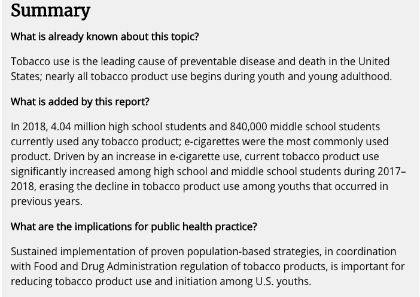</p>
<div id="section-source-1" class="section level4">
<h4><span target="_blank"><a href="https://www.cdc.gov/mmwr/volumes/68/wr/mm6806e1.htm?s_cid=mm6806e1_w">source</a></span></h4>
<p>Importantly, the vapors used in e-cigarettes contain harmful chemicals:</p>
<p>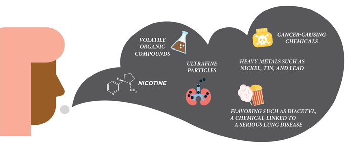</p>
</div>
<div id="section-source-2" class="section level4">
<h4><span target="_blank"><a href="https://www.cdc.gov/tobacco/basic_information/e-cigarettes/images/e-cigarette-aerosol-can-contain-harmful-ingredients-desktop-700.jpg">source</a></span></h4>
<p>E-cigarette usage has also been associated with <a href="(https://www.frontiersin.org/articles/10.3389/fphar.2019.01619/full)" target="_blank">lung injury</a>:</p>
<p></p>
</div>
<div id="section-source-3" class="section level4">
<h4><span target="_blank"><a href="https://www.frontiersin.org/articles/10.3389/fphar.2019.01619/full">source</a></span></h4>
<p>See <a href="https://www.cdc.gov/tobacco/basic_information/e-cigarettes/Quick-Facts-on-the-Risks-of-E-cigarettes-for-Kids-Teens-and-Young-Adults.html" target="_blank">here</a> for additional information about the potential health effects of e-cigarettes in teens and young adults.</p>
</div>
</div>
<div id="section-limitations" class="section level2">
<h2><strong>Limitations</strong></h2>
<hr />
<p>There are some important considerations regarding this data analysis to keep in mind:</p>
<ol style="list-style-type: decimal">
<li>The <a href="https://www.cdc.gov/tobacco/data_statistics/surveys/nyts/index.htm" target="_blank">National Youth Tobacco Survey (NYTS)</a> does not follow the same individual student respondents over time. A <a href="https://www.bmj.com/about-bmj/resources-readers/publications/epidemiology-uninitiated/7-longitudinal-studies" target="_blank">longitudinal study</a> that does follow the same individuals over time collects data called <a href="https://en.wikipedia.org/wiki/Panel_data" target="_blank">panel data</a>. The data in this study is called pooled <a href="https://en.wikipedia.org/wiki/Cross-sectional_data" target="_blank">cross-sectional data</a>, and is obtained from random collection of observations across time.</li>
</ol>
<p>According to Wikipedia:</p>
<blockquote>
<p>Panel data differs from pooled cross-sectional data across time, because it deals with the observations on the same subjects in different times whereas the latter observes different subjects in different time periods</p>
</blockquote>
<ol start="2" style="list-style-type: decimal">
<li>The data include percentages of student respondents reporting use of each particular tobacco product, but the survey questions did not ask the relative amount of use of one product compared to another. For example, the survey included questions like:“What flavors of tobacco products have you used in the past 30 days?” but did not ask how often one flavor was used by the same individual over another.</li>
</ol>
<p>While <a href="https://www.genderspectrum.org/quick-links/understanding-gender/" target="_blank">gender</a> and <a href="https://www.who.int/genomics/gender/en/index1.html" target="_blank">sex</a> are not actually binary, the data used in this analysis only contain information for groups of individuals who answered the survey questions as male or female.</p>
</div>
<div id="section-what-are-the-data" class="section level2">
<h2><strong>What are the data?</strong></h2>
<hr />
<p>The data in this case study comes from the <a href="https://www.cdc.gov/tobacco/data_statistics/surveys/nyts/index.htm" target="_blank">National Youth Tobacco Survey (NYTS)</a> which is an annual survey that asks students in high school and middle school (grades 6-12) about tobacco usage in the United States of America.</p>
<p>The data for this survey is freely available online at this <a href="https://www.cdc.gov/tobacco/data_statistics/surveys/nyts/data/index.html" target="_blank">website</a> with data from 1999, 2000, 2002, 2004, 2006, 2009, and 2011-2019. We will be using data from <strong>2015-2019</strong> due to the fact that these years are the most recent that asked questions regarding e-cigarette usage.</p>
<p>Each year includes documentation, such as a <a href="https://www.lib.ncsu.edu/data/icpsrfaq#whatare" target="_blank">codebook</a> and an excel file containing the data:</p>
<p>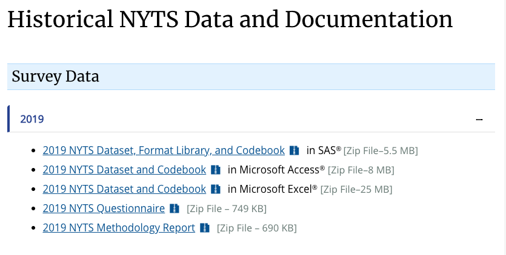 Therefore, since we are using data from <strong>2015-2019</strong>, the data we are interested in are located in 5 different excel files, one for each year, each with its own <a href="./docs/2019-nyts-dataset-and-codebook-microsoft-excel/2019-nyts-codebook-p.pdf" target="_blank">codebook</a> (this is the one for 2019).</p>
<p>The <a href="https://www.icpsr.umich.edu/icpsrweb/content/shared/ICPSR/faqs/what-is-a-codebook.html" target="_blank">codebook</a> contains information describing the data within the excel file.</p>
<p>As you can see the excel file contains very short variable names and numeric values, and it is not clear what they mean without the codebook:</p>
<p>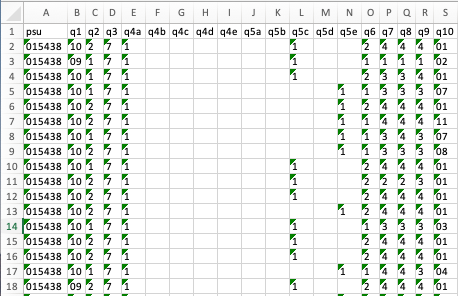</p>
<p>The codebook explains what the variables (the columns) are: </p>
<p>And the codebook explains what the values for each variable are:</p>
<p>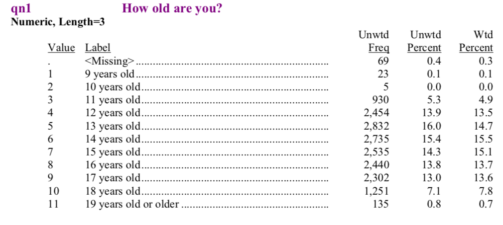</p>
<p>We will explain more later about what the values on the right indicate.</p>
<p>The reason that there are codebooks for each year is because the questions asked each year varied slightly.</p>
<p>The data in this survey are pooled cross-sectional data. In this study design, different subsets of student respondents are surveyed each year and it is not clear which, if any, individuals participate more than once from one year to the next.</p>
</div>
<div id="section-data-import" class="section level2">
<h2><strong>Data Import</strong></h2>
<hr />
<div id="section-reading-in-the-excel-files" class="section level3">
<h3><strong>Reading in the excel files</strong></h3>
<hr />
<p>Since these excel files are so large (each has roughly 20,000 rows), it takes a bit of time for the data to load. To make the process faster, we previously imported these files, selected only the columns relevant to our questions of interest, and saved these data subsets as comma-separated (.csv) files.</p>
<p>If you have trouble accessing the GitHub Repository, these CSV files can be downloaded from <a href="https://github.com/opencasestudies/ocs-bp-vaping-case-study/tree/master/data/data_reduced" target="_blank">here</a>.</p>
<hr />
<details>
<p><summary> Click here for details on how the data were originally imported </summary></p>
<p>If you have trouble accessing the GitHub Repository, you can follow the links to download the excel files for <a href="https://github.com/opencasestudies/ocs-bp-vaping-case-study/blob/master/docs/2015-nyts-dataset-and-codebook-microsoft-excel/nyts2015.xlsx" target="_blank">2015</a>, <a href="https://github.com/opencasestudies/ocs-bp-vaping-case-study/blob/master/docs/2016-nyts-dataset-and-codebook-microsoft-excel/nyts2016.xlsx" target="_blank">2016</a>, <a href="https://github.com/opencasestudies/ocs-bp-vaping-case-study/blob/master/docs/2017-nyts-dataset-and-codebook-microsoft-excel/nyts2017.xlsx" target="_blank">2017</a>, <a href="https://github.com/opencasestudies/ocs-bp-vaping-case-study/blob/master/docs/2018-nyts-dataset-and-codebook-microsoft-excel/nyts2018.xlsx" target="_blank">2018</a>, and <a href="https://github.com/opencasestudies/ocs-bp-vaping-case-study/blob/master/docs/2019-nyts-dataset-and-codebook-microsoft-excel/nyts2019.xlsx" target="_blank">2019</a>.</p>
<p>First we created a vector of file names of all the different excel files. Using the <code>here()</code> function of the <code>here</code> package, we looked in all the directories of the project. The <code>list.files()</code> function looked for all files with .xlsx within these sub-directories.</p>
<div class="sourceCode" id="section-cb2"><pre class="sourceCode r"><code class="sourceCode r"><span id="cb2-1"><a href="#cb2-1"></a>excel_files &lt;-<span class="st"> </span><span class="kw">list.files</span>(here<span class="op">::</span><span class="kw">here</span>(), <span class="dt">recursive =</span> <span class="ot">TRUE</span>,</span>
<span id="cb2-2"><a href="#cb2-2"></a>                  <span class="dt">pattern =</span> <span class="st">&quot;*.xlsx&quot;</span>)</span>
<span id="cb2-3"><a href="#cb2-3"></a>excel_files</span></code></pre></div>
<pre><code>[1] &quot;www/docs/2015-nyts-dataset-and-codebook-microsoft-excel/nyts2015.xlsx&quot;
[2] &quot;www/docs/2016-nyts-dataset-and-codebook-microsoft-excel/nyts2016.xlsx&quot;
[3] &quot;www/docs/2017-nyts-dataset-and-codebook-microsoft-excel/nyts2017.xlsx&quot;
[4] &quot;www/docs/2018-nyts-dataset-and-codebook-microsoft-excel/nyts2018.xlsx&quot;
[5] &quot;www/docs/2019-nyts-dataset-and-codebook-microsoft-excel/nyts2019.xlsx&quot;</code></pre>
<p>All the files were read using <code>read_excel()</code> of the <code>readxl</code> package. Using the <code>map()</code> function of the <code>purrr</code> package this was done efficiently for all of the excel files in the vector using one command. The <code>.</code> is used to indicate that we want to apply the <code>read_excel()</code> function to each element of the data that we just piped into the <code>map()</code> function.</p>
<p>Here we also used the <code>%&gt;%</code> pipe which can be used to pass the input from one function to another for later sequential steps.</p>
<p>This created a single list of tibbles (one for each file).</p>
<div class="sourceCode" id="section-cb4"><pre class="sourceCode r"><code class="sourceCode r"><span id="cb4-1"><a href="#cb4-1"></a>tbl_files &lt;-<span class="st"> </span>excel_files <span class="op">%&gt;%</span></span>
<span id="cb4-2"><a href="#cb4-2"></a><span class="st">       </span><span class="kw">map</span>(<span class="op">~</span><span class="st"> </span>readxl<span class="op">::</span><span class="kw">read_excel</span>(.))</span></code></pre></div>
<p>The elements of this list are in the same order as the elements of the <code>excel_files</code> vector, so we can extract the data for a particular file (year) by selecting a certain element of the list. However, it is safer to be able to select the data from this list for a specific year using a name based on the original vector of file names. We extracted a name from each Excel file name using the <code>str_extract()</code> function of the <code>stringr</code> package. Here we are keeping occurrences of the character string “nyts201” followed by a “5”, “6”, “7”, “8”, or “9”.</p>
<div class="sourceCode" id="section-cb5"><pre class="sourceCode r"><code class="sourceCode r"><span id="cb5-1"><a href="#cb5-1"></a>tbl_names &lt;-<span class="st"> </span>excel_files <span class="op">%&gt;%</span></span>
<span id="cb5-2"><a href="#cb5-2"></a><span class="st">  </span><span class="kw">str_extract</span>(<span class="st">&quot;nyts201[5-9]&quot;</span>)</span>
<span id="cb5-3"><a href="#cb5-3"></a></span>
<span id="cb5-4"><a href="#cb5-4"></a>tbl_names</span></code></pre></div>
<pre><code>[1] &quot;nyts2015&quot; &quot;nyts2016&quot; &quot;nyts2017&quot; &quot;nyts2018&quot; &quot;nyts2019&quot;</code></pre>
<p>These names became the names of the tibbles in the list of tibbles.</p>
<div class="sourceCode" id="section-cb7"><pre class="sourceCode r"><code class="sourceCode r"><span id="cb7-1"><a href="#cb7-1"></a><span class="kw">names</span>(tbl_files) &lt;-<span class="st"> </span>tbl_names</span></code></pre></div>
<p>Specific columns were selected using the <code>select()</code> function of <code>dplyr</code> from each of the tibbles using the variable name, as identified in the codebook as being of interest for our analysis. In some cases functions like <code>starts_with()</code> of the <code>dplyr</code> package were used to select several variables at once. Most of the survey questions about tobacco use start with an <code>"E"</code> or a <code>"C"</code> according to the codebooks.</p>
<div class="sourceCode" id="section-cb8"><pre class="sourceCode r"><code class="sourceCode r"><span id="cb8-1"><a href="#cb8-1"></a>tbl_files[[<span class="st">&quot;nyts2015&quot;</span>]] &lt;-<span class="st"> </span>tbl_files[[<span class="st">&quot;nyts2015&quot;</span>]] <span class="op">%&gt;%</span></span>
<span id="cb8-2"><a href="#cb8-2"></a><span class="st">    </span>dplyr<span class="op">::</span><span class="kw">select</span>(psu, <span class="co"># Primary Sampling Unit</span></span>
<span id="cb8-3"><a href="#cb8-3"></a>                  finwgt, <span class="co"># Analysis Weight</span></span>
<span id="cb8-4"><a href="#cb8-4"></a>                  stratum, <span class="co"># Sampling stratum</span></span>
<span id="cb8-5"><a href="#cb8-5"></a>                  Qn1, <span class="co"># Age</span></span>
<span id="cb8-6"><a href="#cb8-6"></a>                  Qn2, <span class="co"># Sex</span></span>
<span id="cb8-7"><a href="#cb8-7"></a>                  Qn3, <span class="co"># Grade</span></span>
<span id="cb8-8"><a href="#cb8-8"></a>                  <span class="kw">starts_with</span>(<span class="st">&quot;E&quot;</span>,</span>
<span id="cb8-9"><a href="#cb8-9"></a>                              <span class="dt">ignore.case =</span> <span class="ot">FALSE</span>),</span>
<span id="cb8-10"><a href="#cb8-10"></a>                  <span class="kw">starts_with</span>(<span class="st">&quot;C&quot;</span>,</span>
<span id="cb8-11"><a href="#cb8-11"></a>                              <span class="dt">ignore.case =</span> <span class="ot">FALSE</span>),</span>
<span id="cb8-12"><a href="#cb8-12"></a>                  )</span>
<span id="cb8-13"><a href="#cb8-13"></a></span>
<span id="cb8-14"><a href="#cb8-14"></a></span>
<span id="cb8-15"><a href="#cb8-15"></a>tbl_files[[<span class="st">&quot;nyts2016&quot;</span>]] &lt;-<span class="st"> </span>tbl_files[[<span class="st">&quot;nyts2016&quot;</span>]] <span class="op">%&gt;%</span></span>
<span id="cb8-16"><a href="#cb8-16"></a><span class="st">    </span>dplyr<span class="op">::</span><span class="kw">select</span>(psu,</span>
<span id="cb8-17"><a href="#cb8-17"></a>                  finwgt,</span>
<span id="cb8-18"><a href="#cb8-18"></a>                  stratum,</span>
<span id="cb8-19"><a href="#cb8-19"></a>                  Q1, <span class="co"># Age</span></span>
<span id="cb8-20"><a href="#cb8-20"></a>                  Q2, <span class="co"># Sex</span></span>
<span id="cb8-21"><a href="#cb8-21"></a>                  Q3, <span class="co"># Grade</span></span>
<span id="cb8-22"><a href="#cb8-22"></a>                  <span class="kw">starts_with</span>(<span class="st">&quot;E&quot;</span>,</span>
<span id="cb8-23"><a href="#cb8-23"></a>                              <span class="dt">ignore.case =</span> <span class="ot">FALSE</span>),</span>
<span id="cb8-24"><a href="#cb8-24"></a>                  <span class="kw">starts_with</span>(<span class="st">&quot;C&quot;</span>,</span>
<span id="cb8-25"><a href="#cb8-25"></a>                              <span class="dt">ignore.case =</span> <span class="ot">FALSE</span>),</span>
<span id="cb8-26"><a href="#cb8-26"></a>                  Q50A, <span class="co"># Menthol # What flavors of tobacco products have you used in the past 30 days? (Select one or more)</span></span>
<span id="cb8-27"><a href="#cb8-27"></a>                  Q50B, <span class="co"># Clove or spice</span></span>
<span id="cb8-28"><a href="#cb8-28"></a>                  Q50C, <span class="co"># Fruit</span></span>
<span id="cb8-29"><a href="#cb8-29"></a>                  Q50D, <span class="co"># Chocolate</span></span>
<span id="cb8-30"><a href="#cb8-30"></a>                  Q50E, <span class="co"># Alcoholic Drink</span></span>
<span id="cb8-31"><a href="#cb8-31"></a>                  Q50F, <span class="co"># Candy/Desserts/Other Sweets</span></span>
<span id="cb8-32"><a href="#cb8-32"></a>                  Q50G  <span class="co"># Some Other Flavor Not Listed Here</span></span>
<span id="cb8-33"><a href="#cb8-33"></a>                  )</span>
<span id="cb8-34"><a href="#cb8-34"></a></span>
<span id="cb8-35"><a href="#cb8-35"></a>tbl_files[[<span class="st">&quot;nyts2017&quot;</span>]] &lt;-<span class="st"> </span>tbl_files[[<span class="st">&quot;nyts2017&quot;</span>]] <span class="op">%&gt;%</span></span>
<span id="cb8-36"><a href="#cb8-36"></a><span class="st">    </span>dplyr<span class="op">::</span><span class="kw">select</span>(psu,</span>
<span id="cb8-37"><a href="#cb8-37"></a>                  finwgt,</span>
<span id="cb8-38"><a href="#cb8-38"></a>                  stratum,</span>
<span id="cb8-39"><a href="#cb8-39"></a>                  Q1, <span class="co"># Age</span></span>
<span id="cb8-40"><a href="#cb8-40"></a>                  Q2, <span class="co"># Sex</span></span>
<span id="cb8-41"><a href="#cb8-41"></a>                  Q3, <span class="co"># Grade</span></span>
<span id="cb8-42"><a href="#cb8-42"></a>                  <span class="kw">starts_with</span>(<span class="st">&quot;E&quot;</span>,</span>
<span id="cb8-43"><a href="#cb8-43"></a>                              <span class="dt">ignore.case =</span> <span class="ot">FALSE</span>),</span>
<span id="cb8-44"><a href="#cb8-44"></a>                  <span class="kw">starts_with</span>(<span class="st">&quot;C&quot;</span>,</span>
<span id="cb8-45"><a href="#cb8-45"></a>                              <span class="dt">ignore.case =</span> <span class="ot">FALSE</span>),</span>
<span id="cb8-46"><a href="#cb8-46"></a>                  Q50A, <span class="co"># Menthol # What flavors of tobacco products have you used in the past 30 days? (Select one or more)</span></span>
<span id="cb8-47"><a href="#cb8-47"></a>                  Q50B, <span class="co"># Clove or spice</span></span>
<span id="cb8-48"><a href="#cb8-48"></a>                  Q50C, <span class="co"># Fruit</span></span>
<span id="cb8-49"><a href="#cb8-49"></a>                  Q50D, <span class="co"># Chocolate</span></span>
<span id="cb8-50"><a href="#cb8-50"></a>                  Q50E, <span class="co"># Alcoholic Drink</span></span>
<span id="cb8-51"><a href="#cb8-51"></a>                  Q50F, <span class="co"># Candy/Desserts/Other Sweets</span></span>
<span id="cb8-52"><a href="#cb8-52"></a>                  Q50G  <span class="co"># Some Other Flavor Not Listed Here</span></span>
<span id="cb8-53"><a href="#cb8-53"></a>                  )</span>
<span id="cb8-54"><a href="#cb8-54"></a></span>
<span id="cb8-55"><a href="#cb8-55"></a>tbl_files[[<span class="st">&quot;nyts2018&quot;</span>]] &lt;-<span class="st"> </span>tbl_files[[<span class="st">&quot;nyts2018&quot;</span>]] <span class="op">%&gt;%</span></span>
<span id="cb8-56"><a href="#cb8-56"></a><span class="st">    </span>dplyr<span class="op">::</span><span class="kw">select</span>(psu,</span>
<span id="cb8-57"><a href="#cb8-57"></a>                  finwgt,</span>
<span id="cb8-58"><a href="#cb8-58"></a>                  stratum,</span>
<span id="cb8-59"><a href="#cb8-59"></a>                  Q1, <span class="co"># Age</span></span>
<span id="cb8-60"><a href="#cb8-60"></a>                  Q2, <span class="co"># Sex</span></span>
<span id="cb8-61"><a href="#cb8-61"></a>                  Q3, <span class="co"># Grade</span></span>
<span id="cb8-62"><a href="#cb8-62"></a>                  <span class="kw">starts_with</span>(<span class="st">&quot;E&quot;</span>,</span>
<span id="cb8-63"><a href="#cb8-63"></a>                              <span class="dt">ignore.case =</span> <span class="ot">FALSE</span>),</span>
<span id="cb8-64"><a href="#cb8-64"></a>                  <span class="kw">starts_with</span>(<span class="st">&quot;C&quot;</span>,</span>
<span id="cb8-65"><a href="#cb8-65"></a>                              <span class="dt">ignore.case =</span> <span class="ot">FALSE</span>),</span>
<span id="cb8-66"><a href="#cb8-66"></a>                  Q50A, <span class="co"># Menthol #What flavors of tobacco products have you used in the past 30 days? (Select one or more)</span></span>
<span id="cb8-67"><a href="#cb8-67"></a>                  Q50B, <span class="co"># Clove or spice</span></span>
<span id="cb8-68"><a href="#cb8-68"></a>                  Q50C, <span class="co"># Fruit</span></span>
<span id="cb8-69"><a href="#cb8-69"></a>                  Q50D, <span class="co"># Chocolate</span></span>
<span id="cb8-70"><a href="#cb8-70"></a>                  Q50E, <span class="co"># Alcoholic Drink</span></span>
<span id="cb8-71"><a href="#cb8-71"></a>                  Q50F, <span class="co"># Candy/Desserts/Other Sweets</span></span>
<span id="cb8-72"><a href="#cb8-72"></a>                  Q50G  <span class="co"># Some Other Flavor Not Listed Here</span></span>
<span id="cb8-73"><a href="#cb8-73"></a>                  )</span>
<span id="cb8-74"><a href="#cb8-74"></a></span>
<span id="cb8-75"><a href="#cb8-75"></a>tbl_files[[<span class="st">&quot;nyts2019&quot;</span>]] &lt;-<span class="st"> </span>tbl_files[[<span class="st">&quot;nyts2019&quot;</span>]] <span class="op">%&gt;%</span></span>
<span id="cb8-76"><a href="#cb8-76"></a><span class="st">    </span>dplyr<span class="op">::</span><span class="kw">select</span>(psu,</span>
<span id="cb8-77"><a href="#cb8-77"></a>                  finwgt,</span>
<span id="cb8-78"><a href="#cb8-78"></a>                  stratum,</span>
<span id="cb8-79"><a href="#cb8-79"></a>                  Q1, <span class="co"># Age</span></span>
<span id="cb8-80"><a href="#cb8-80"></a>                  Q2, <span class="co"># Sex</span></span>
<span id="cb8-81"><a href="#cb8-81"></a>                  Q3, <span class="co"># Grade</span></span>
<span id="cb8-82"><a href="#cb8-82"></a>                  <span class="kw">starts_with</span>(<span class="st">&quot;E&quot;</span>,</span>
<span id="cb8-83"><a href="#cb8-83"></a>                              <span class="dt">ignore.case =</span> <span class="ot">FALSE</span>),</span>
<span id="cb8-84"><a href="#cb8-84"></a>                  <span class="kw">starts_with</span>(<span class="st">&quot;C&quot;</span>,</span>
<span id="cb8-85"><a href="#cb8-85"></a>                              <span class="dt">ignore.case =</span> <span class="ot">FALSE</span>),</span>
<span id="cb8-86"><a href="#cb8-86"></a>                  Q40, <span class="co"># Brand, e-cigarettes</span></span>
<span id="cb8-87"><a href="#cb8-87"></a>                  Q62A, <span class="co"># Menthol # What flavors of tobacco products have you used in the past 30 days? (Select one or more)</span></span>
<span id="cb8-88"><a href="#cb8-88"></a>                  Q62B, <span class="co"># Clove or spice</span></span>
<span id="cb8-89"><a href="#cb8-89"></a>                  Q62C, <span class="co"># Fruit</span></span>
<span id="cb8-90"><a href="#cb8-90"></a>                  Q62D, <span class="co"># Chocolate</span></span>
<span id="cb8-91"><a href="#cb8-91"></a>                  Q62E, <span class="co"># Alcoholic Drink</span></span>
<span id="cb8-92"><a href="#cb8-92"></a>                  Q62F, <span class="co"># Candy/Desserts/Other Sweets</span></span>
<span id="cb8-93"><a href="#cb8-93"></a>                  Q62G, <span class="co"># Some Other Flavor Not Listed Here</span></span>
<span id="cb8-94"><a href="#cb8-94"></a>                  )</span></code></pre></div>
<p>A directory called <code>data_reduced</code> was created for the new .csv files using the base <code>dir.create()</code> function. A csv file was created for each of the tibbles in the list using the <code>write_csv()</code> function of the <code>readr</code> package. This was done all at once using the <code>map()</code> function.</p>
<div class="sourceCode" id="section-cb9"><pre class="sourceCode r"><code class="sourceCode r"><span id="cb9-1"><a href="#cb9-1"></a><span class="kw">dir.create</span>(<span class="st">&quot;data/data_reduced&quot;</span>)</span>
<span id="cb9-2"><a href="#cb9-2"></a></span>
<span id="cb9-3"><a href="#cb9-3"></a><span class="kw">names</span>(tbl_files) <span class="op">%&gt;%</span><span class="st"> </span><span class="kw">map</span>(<span class="op">~</span><span class="st"> </span><span class="kw">write_csv</span>(tbl_files[[.]], </span>
<span id="cb9-4"><a href="#cb9-4"></a>                                     <span class="dt">path =</span> <span class="kw">paste0</span>(<span class="st">&quot;data/data_reduced/&quot;</span>, ., <span class="st">&quot;.csv&quot;</span>)))</span></code></pre></div>
</details>
<hr />
<p>Now we will show how to read in the data from the five csv files that were created from the five different Excel files.</p>
</div>
<div id="section-reading-in-the-csv-files" class="section level3">
<h3><strong>Reading in the CSV files</strong></h3>
<hr />
<p>Using the <code>here()</code> function of the <code>here</code> package, we looked in all the directories of the project. The <code>here</code> package automatically starts looking for files based on where you have a <code>.Rproj</code> file which is created when you start a new RStudio project.</p>
<hr />
<details>
<p><summary> Click here to see more about creating new projects in RStudio. </summary></p>
<p>You can create a project by going to the File menu of RStudio like so:</p>
<p></p>
<p>You can also do so by clicking the project button:</p>
<p></p>
<p>See <a href="https://support.rstudio.com/hc/en-us/articles/200526207-Using-Projects" target="_blank">here</a> to learn more about using RStudio projects.</p>
</details>
<hr />
<p>The <code>list.files()</code> function looked for all files with .csv within the sub-directories.</p>
<p>All the files were read using <code>read_csv()</code> of the <code>readr</code> package. Using the <code>map()</code> function of the <code>purrr</code> package this was done efficiently for all of the CSV files in the vector using one command. The <code>.</code> is used to indicate that we want to apply the <code>read_csv()</code> function to each element of the data that we just piped into the <code>map()</code> function. For more information about the <code>map()</code> function, see <a href="https://purrr.tidyverse.org/reference/map.html" target="_blank">here</a>.</p>
<p>Here we also used the <code>%&gt;%</code> pipe which can be used to pass the input from one function to another for later sequential steps.</p>
<div class="sourceCode" id="section-cb10"><pre class="sourceCode r"><code class="sourceCode r"><span id="cb10-1"><a href="#cb10-1"></a>nyts_data &lt;-<span class="st"> </span><span class="kw">list.files</span>(here<span class="op">::</span><span class="kw">here</span>(), <span class="dt">recursive =</span> <span class="ot">TRUE</span>,</span>
<span id="cb10-2"><a href="#cb10-2"></a>                        <span class="dt">pattern =</span> <span class="st">&quot;*.csv&quot;</span>) <span class="op">%&gt;%</span></span>
<span id="cb10-3"><a href="#cb10-3"></a><span class="st">  </span><span class="kw">map</span>(<span class="op">~</span><span class="st"> </span><span class="kw">read_csv</span>(.))</span>
<span id="cb10-4"><a href="#cb10-4"></a></span>
<span id="cb10-5"><a href="#cb10-5"></a></span>
<span id="cb10-6"><a href="#cb10-6"></a>nyts_data_names &lt;-<span class="st"> </span><span class="kw">list.files</span>(<span class="dt">recursive =</span> <span class="ot">TRUE</span>,</span>
<span id="cb10-7"><a href="#cb10-7"></a>                              <span class="dt">pattern =</span> <span class="st">&quot;*.csv&quot;</span>) <span class="op">%&gt;%</span></span>
<span id="cb10-8"><a href="#cb10-8"></a><span class="st">  </span><span class="kw">str_extract</span>(<span class="st">&quot;nyts201[5-9]&quot;</span>)</span>
<span id="cb10-9"><a href="#cb10-9"></a></span>
<span id="cb10-10"><a href="#cb10-10"></a><span class="kw">names</span>(nyts_data) &lt;-<span class="st"> </span>nyts_data_names</span></code></pre></div>
</div>
</div>
<div id="section-data-exploration-and-wrangling" class="section level2">
<h2><strong>Data Exploration and Wrangling</strong></h2>
<hr />
<p>Our goal in this section is to adjust or “wrangle” the data from each year into a common format so that we can combine the datasets across years for our analysis, and so that we have values in our variables that are correct and easy to interpret. We will need to understand what is the same and what is different across the data from different years, rename and recode the variables (e.g., by replacing the numbers 1 and 2 with the values “Male” and “Female” for the <code>Sex</code> variable), and combine the data. We will walk through these steps below.</p>
<p>First, let’s take a look at our data. We can get a good sense of it using the <code>glimpse()</code> function of the <code>dplyr</code> package.</p>
<div id="section-section-12" class="section level4 scrollable">
<h4></h4>
<div class="sourceCode" id="section-cb11"><pre class="sourceCode r"><code class="sourceCode r"><span id="cb11-1"><a href="#cb11-1"></a>dplyr<span class="op">::</span><span class="kw">glimpse</span>(nyts_data[[<span class="st">&quot;nyts2015&quot;</span>]])</span></code></pre></div>
<pre><code>Rows: 17,711
Columns: 29
$ psu        &lt;chr&gt; &quot;015438&quot;, &quot;015438&quot;, &quot;015438&quot;, &quot;015438&quot;, &quot;015438&quot;, &quot;01543...
$ finwgt     &lt;dbl&gt; 216.7268, 324.9620, 324.9620, 397.1552, 264.8745, 264.87...
$ stratum    &lt;chr&gt; &quot;BR3&quot;, &quot;BR3&quot;, &quot;BR3&quot;, &quot;BR3&quot;, &quot;BR3&quot;, &quot;BR3&quot;, &quot;BR3&quot;, &quot;BR3&quot;, ...
$ Qn1        &lt;dbl&gt; 10, 9, 10, 10, 10, 10, 10, 10, 10, 10, 10, 10, 10, 10, 1...
$ Qn2        &lt;dbl&gt; 2, 1, 1, 1, 2, 2, 1, 2, 1, 2, 2, 2, 1, 2, 2, 1, 2, 2, 2,...
$ Qn3        &lt;dbl&gt; 7, 7, 7, 7, 7, 7, 7, 7, 7, 7, 7, 7, 7, 7, 7, 7, 7, 7, 5,...
$ ECIGT      &lt;dbl&gt; 2, 1, 2, 1, 2, 1, 1, 1, 2, 2, 2, 2, 1, 2, 2, 1, 2, 1, 2,...
$ ECIGAR     &lt;dbl&gt; 1, 1, 2, 2, 2, 2, 1, 2, 2, 2, 2, 2, 2, 2, 2, 2, 2, 1, 1,...
$ ESLT       &lt;dbl&gt; 2, 2, 2, 2, 2, 2, 1, 1, 2, 2, 2, 2, 2, 2, 2, 2, 2, 2, 2,...
$ EELCIGT    &lt;dbl&gt; 2, 1, 2, 1, 2, 1, 1, 1, 2, 2, 2, 1, 2, 2, 2, 1, 2, 2, 2,...
$ EROLLCIGTS &lt;dbl&gt; 2, 2, 2, 2, 2, 2, 1, 2, 2, 2, 2, 2, 2, 2, 2, 1, 2, 2, 2,...
$ EFLAVCIGTS &lt;dbl&gt; 2, 2, 2, 1, 2, 2, 1, 2, 2, 2, 2, 2, 2, 2, 2, 2, 2, 2, 2,...
$ EBIDIS     &lt;dbl&gt; 2, 2, 2, 2, 2, 2, 2, 2, 2, 2, 2, 2, 2, 2, 2, 2, 2, 2, 2,...
$ EFLAVCIGAR &lt;dbl&gt; 2, 1, 2, 2, 2, 2, 1, 2, 2, 2, 2, 2, 2, 2, 2, 1, 2, 1, 1,...
$ EHOOKAH    &lt;dbl&gt; 2, 2, 2, 2, 2, 2, 2, 1, 2, 2, 2, 2, 2, 2, 2, 2, 2, 2, 2,...
$ EPIPE      &lt;dbl&gt; 2, 2, 2, 2, 2, 2, 2, 2, 2, 2, 2, 2, 2, 2, 2, 2, 2, 2, 2,...
$ ESNUS      &lt;dbl&gt; 2, 2, 2, 2, 2, 2, 1, 2, 2, 2, 2, 2, 2, 2, 2, 2, 2, 2, 2,...
$ EDISSOLV   &lt;dbl&gt; 2, 2, 2, 2, 2, 2, 2, 2, 2, 2, 2, 2, 2, 2, 2, 2, 2, 2, 2,...
$ CCIGT      &lt;dbl&gt; 2, 1, 2, 2, 2, 2, 2, 2, 2, 2, 2, 2, 2, 2, 2, 2, 2, 2, 2,...
$ CCIGAR     &lt;dbl&gt; 2, 1, 2, 2, 2, 2, 2, 2, 2, 2, 2, 2, 2, 2, 2, 2, 2, 2, 2,...
$ CSLT       &lt;dbl&gt; 2, 2, 2, 2, 2, 2, 2, 2, 2, 2, 2, 2, 2, 2, 2, 2, 2, 2, 2,...
$ CELCIGT    &lt;dbl&gt; 2, 2, 2, 1, 2, 2, 2, 2, 2, 2, 2, 2, 2, 2, 2, 2, 2, 2, 2,...
$ CROLLCIGTS &lt;dbl&gt; 2, 2, 2, 2, 2, 2, 2, 2, 2, 2, 2, 2, 2, 2, 2, 2, 2, 2, 2,...
$ CFLAVCIGTS &lt;dbl&gt; 2, 2, 2, 2, 2, 2, 2, 2, 2, 2, 2, 2, 2, 2, 2, 2, 2, 2, 2,...
$ CBIDIS     &lt;dbl&gt; 2, 2, 2, 2, 2, 2, 2, 2, 2, 2, 2, 2, 2, 2, 2, 2, 2, 2, 2,...
$ CHOOKAH    &lt;dbl&gt; 2, 2, 2, 2, 2, 2, 2, 2, 2, 2, 2, 2, 2, 2, 2, 2, 2, 2, 2,...
$ CPIPE      &lt;dbl&gt; 2, 2, 2, 2, 2, 2, 2, 2, 2, 2, 2, 2, 2, 2, 2, 2, 2, 2, 2,...
$ CSNUS      &lt;dbl&gt; 2, 2, 2, 2, 2, 2, 2, 2, 2, 2, 2, 2, 2, 2, 2, 2, 2, 2, 2,...
$ CDISSOLV   &lt;dbl&gt; 2, 2, 2, 2, 2, 2, 2, 2, 2, 2, 2, 2, 2, 2, 2, 2, 2, 2, 2,...</code></pre>
</div>
<div id="section-section-13" class="section level4">
<h4></h4>
</div>
<div id="section-updating-the-set-of-variables-and-their-names" class="section level3">
<h3><strong>Updating the set of variables and their names</strong></h3>
<hr />
<p>The easiest way of making it so that the data from the different years can be combined is by making sure that the same type of data in different datasets share the same names. In addition, giving the columns informative names will help make our code more readable. Currently, it isn’t very clear what most of the variables indicate since the variable names are uninformative on their own, without the <a href="./docs/2019-nyts-dataset-and-codebook-microsoft-excel/2019-nyts-codebook-p.pdf" target="_blank">codebook</a>.</p>
<p>We want to rename variables like <code>Qn1</code> to something more meaningful like <code>Age</code>.</p>
<p>To do this we will use the <code>rename()</code> function of the <code>dplyr</code> package. The new name is always listed first before the <code>=</code>. This function will replace the old variable names with the new ones, i.e., after running the code below, there will no longer be a <code>Qn1</code> variable in the dataset, but there will be an <code>Age</code> variable instead. We will start working with the 2015 data, and then move on to the other years down below.</p>
<div class="sourceCode" id="section-cb13"><pre class="sourceCode r"><code class="sourceCode r"><span id="cb13-1"><a href="#cb13-1"></a>nyts_data[[<span class="st">&quot;nyts2015&quot;</span>]] &lt;-<span class="st"> </span>nyts_data[[<span class="st">&quot;nyts2015&quot;</span>]] <span class="op">%&gt;%</span></span>
<span id="cb13-2"><a href="#cb13-2"></a><span class="st">  </span>dplyr<span class="op">::</span><span class="kw">rename</span>(<span class="dt">Age =</span> Qn1,</span>
<span id="cb13-3"><a href="#cb13-3"></a>                <span class="dt">Sex =</span> Qn2,</span>
<span id="cb13-4"><a href="#cb13-4"></a>                <span class="dt">Grade =</span> Qn3)</span></code></pre></div>
<p>Ultimately we will be combining the data from each year using the <code>bind_rows()</code> function of the <code>dplyr</code> package, which will fill in <code>NA</code> values for any columns that do not exist for one of the years.</p>
<p>The data for 2016-2018 have many common attributes, so we will want to write code that can be applied to all three datasets. To do this, we will use a <strong>function</strong> in R, which is basically a piece of code that can be applied to similar but different objects in R (e.g., the data tibbles from each of these three years). Recall that you are using functions from packages all the time, like the <code>rename()</code> function of the <code>dplyr</code> package. Now you are going to write your own function! For more information on functions, see <a href="https://r4ds.had.co.nz/functions.html" target="_blank">here</a>.</p>
<p>These next 3 years have the same structure for many of the questions we are interested in. For example, they all have flavor questions, but not a brand question. Moreover, their variable names are consistent across the years; for each year, we want to replace the vague question name <code>Q50A</code> with the value <code>menthol</code> in all three datasets, and the same is true for the other flavor variables.</p>
<p>Since we want to perform the same modifications on the data from all three years, rather than repeating the same somewhat messy piece of code three times, we can do this more efficiently if we create a function to do all of these steps at once. Then we can use the <code>map_at()</code> function of the <code>purrr</code> package, which is an extension of the <code>map()</code> function that we used in the [Data Import] (<a href="https://www.opencasestudies.org/ocs-bp-vaping-case-study/#Data_Import" class="uri">https://www.opencasestudies.org/ocs-bp-vaping-case-study/#Data_Import</a>){target="_blank"} section to apply the function we just created (for renaming variables etc.) specifically to the data from 2016-2018 within the <code>nyts_data</code>. By using <code>vars()</code> inside of the <code>map_at()</code> function we can specify what tibbles within our <code>nyts_data</code> list we want to include or exclude.</p>
<div id="section-functions" class="section level4">
<h4><strong>Functions</strong></h4>
<hr />
<p>So how do you create a function? You first need to specify that you are creating a function by using the <code>function()</code> base function. Yes, that’s right it is a function for creating functions called function!</p>
<p>First we specify our input within the parentheses of <code>function()</code>. Thus if our function will apply something to an input called <code>x</code> then we would use <code>function(x)</code>. Theoretically our input can be named whatever we want, but we we need to refer to it consistently within our function to indicate what we want done with the input data. We can actually have more than one input as well, we would indicate two inputs like this: <code>function(x, b)</code>. Here we would be using both <code>x</code> and <code>b</code> to do something in our function.</p>
<p>The next part of a function is defined within curly brackets <code>{}</code>. This is where we write what we want done to our inputs.</p>
<hr />
<details>
<p><summary> Click here to see a simple example </summary></p>
<p>Our function will be called <code>simple_function</code>, which will add 2 to our input. It will take the input <code>vector_data</code> (note that we usually want to use an informative input argument like <code>vector_data</code>).</p>
<div class="sourceCode" id="section-cb14"><pre class="sourceCode r"><code class="sourceCode r"><span id="cb14-1"><a href="#cb14-1"></a>simple_function &lt;-<span class="st"> </span><span class="cf">function</span>(vector_data) {</span>
<span id="cb14-2"><a href="#cb14-2"></a>  vector_data <span class="op">+</span><span class="st"> </span><span class="dv">2</span></span>
<span id="cb14-3"><a href="#cb14-3"></a>}</span></code></pre></div>
<p>We can use an input that is a vector called <code>x</code>.</p>
<div class="sourceCode" id="section-cb15"><pre class="sourceCode r"><code class="sourceCode r"><span id="cb15-1"><a href="#cb15-1"></a>x =<span class="st"> </span><span class="kw">c</span>(<span class="dv">1</span>, <span class="dv">2</span>, <span class="dv">3</span>, <span class="dv">4</span>)</span>
<span id="cb15-2"><a href="#cb15-2"></a>x</span></code></pre></div>
<pre><code>[1] 1 2 3 4</code></pre>
<p>Now we specify using the argument <code>vector_data =</code> to indicate that <code>x</code> is our input that we want to perform the function on.</p>
<div class="sourceCode" id="section-cb17"><pre class="sourceCode r"><code class="sourceCode r"><span id="cb17-1"><a href="#cb17-1"></a><span class="kw">simple_function</span>(<span class="dt">vector_data =</span> x)</span></code></pre></div>
<pre><code>[1] 3 4 5 6</code></pre>
<p>This function also works for other vector input. For example, vector <code>y</code> is now our input that we want to perform the function on.</p>
<div class="sourceCode" id="section-cb19"><pre class="sourceCode r"><code class="sourceCode r"><span id="cb19-1"><a href="#cb19-1"></a>y =<span class="st"> </span><span class="kw">c</span>(<span class="dv">5</span>, <span class="dv">10</span>, <span class="dv">15</span>, <span class="dv">20</span>)</span>
<span id="cb19-2"><a href="#cb19-2"></a></span>
<span id="cb19-3"><a href="#cb19-3"></a><span class="kw">simple_function</span>(<span class="dt">vector_data =</span> y)</span></code></pre></div>
<pre><code>[1]  7 12 17 22</code></pre>
</details>
<hr />
<p>In our case we will be applying our function to the variable names for the dataset for each year. The output of our function is the result of renaming these variables for each year.</p>
<div class="sourceCode" id="section-cb21"><pre class="sourceCode r"><code class="sourceCode r"><span id="cb21-1"><a href="#cb21-1"></a>update_survey &lt;-<span class="st"> </span><span class="cf">function</span>(dataset) { dataset <span class="op">%&gt;%</span></span>
<span id="cb21-2"><a href="#cb21-2"></a><span class="st">           </span><span class="kw">rename</span>(<span class="dt">Age =</span> Q1,</span>
<span id="cb21-3"><a href="#cb21-3"></a>                  <span class="dt">Sex =</span> Q2,</span>
<span id="cb21-4"><a href="#cb21-4"></a>                <span class="dt">Grade =</span> Q3,</span>
<span id="cb21-5"><a href="#cb21-5"></a>              <span class="dt">menthol =</span> Q50A,</span>
<span id="cb21-6"><a href="#cb21-6"></a>          <span class="dt">clove_spice =</span> Q50B,</span>
<span id="cb21-7"><a href="#cb21-7"></a>                <span class="dt">fruit =</span> Q50C,</span>
<span id="cb21-8"><a href="#cb21-8"></a>            <span class="dt">chocolate =</span> Q50D,</span>
<span id="cb21-9"><a href="#cb21-9"></a>      <span class="dt">alcoholic_drink =</span> Q50E,</span>
<span id="cb21-10"><a href="#cb21-10"></a> <span class="dt">candy_dessert_sweets =</span> Q50F,</span>
<span id="cb21-11"><a href="#cb21-11"></a>                <span class="dt">other =</span> Q50G)</span>
<span id="cb21-12"><a href="#cb21-12"></a>}</span>
<span id="cb21-13"><a href="#cb21-13"></a></span>
<span id="cb21-14"><a href="#cb21-14"></a><span class="co"># options to apply the function to the data:</span></span>
<span id="cb21-15"><a href="#cb21-15"></a><span class="co"># nyts_data &lt;- nyts_data %&gt;% map_at(vars(nyts2016, nyts2017, nyts2018), Update_survey)</span></span>
<span id="cb21-16"><a href="#cb21-16"></a>nyts_data &lt;-<span class="st"> </span>nyts_data <span class="op">%&gt;%</span><span class="st"> </span><span class="kw">map_at</span>(<span class="kw">vars</span>(<span class="op">-</span>nyts2015, <span class="op">-</span>nyts2019), update_survey)</span></code></pre></div>
<p>The final year, 2019, has a slightly different data structure compared to these earlier datasets. It actually has a <code>brand_ecig</code> variable already and different question numbers correspond to our flavor questions of interest. So we will rename the variables in this dataset individually. We could also write this as a function, but since we are only applying this one time, there is no need to. Functions are really helpful for repeating the same task repeatedly using different data inputs.</p>
<div class="sourceCode" id="section-cb22"><pre class="sourceCode r"><code class="sourceCode r"><span id="cb22-1"><a href="#cb22-1"></a>nyts_data[[<span class="st">&quot;nyts2019&quot;</span>]] &lt;-<span class="st"> </span>nyts_data[[<span class="st">&quot;nyts2019&quot;</span>]] <span class="op">%&gt;%</span></span>
<span id="cb22-2"><a href="#cb22-2"></a><span class="st">    </span><span class="kw">rename</span>(<span class="dt">brand_ecig =</span> Q40,</span>
<span id="cb22-3"><a href="#cb22-3"></a>                  <span class="dt">Age =</span> Q1,</span>
<span id="cb22-4"><a href="#cb22-4"></a>                  <span class="dt">Sex =</span> Q2,</span>
<span id="cb22-5"><a href="#cb22-5"></a>                <span class="dt">Grade =</span> Q3,</span>
<span id="cb22-6"><a href="#cb22-6"></a>              <span class="dt">menthol =</span> Q62A,</span>
<span id="cb22-7"><a href="#cb22-7"></a>          <span class="dt">clove_spice =</span> Q62B,</span>
<span id="cb22-8"><a href="#cb22-8"></a>                <span class="dt">fruit =</span> Q62C,</span>
<span id="cb22-9"><a href="#cb22-9"></a>            <span class="dt">chocolate =</span> Q62D,</span>
<span id="cb22-10"><a href="#cb22-10"></a>      <span class="dt">alcoholic_drink =</span> Q62E,</span>
<span id="cb22-11"><a href="#cb22-11"></a> <span class="dt">candy_dessert_sweets =</span> Q62F,</span>
<span id="cb22-12"><a href="#cb22-12"></a>                <span class="dt">other =</span> Q62G)</span></code></pre></div>
<p>Now let’s take a look at the variable names for each of the years using the <code>map</code> function from <code>purrr</code>.</p>
</div>
<div id="section-section-14" class="section level4 scrollable">
<h4></h4>
<div class="sourceCode" id="section-cb23"><pre class="sourceCode r"><code class="sourceCode r"><span id="cb23-1"><a href="#cb23-1"></a><span class="kw">map</span>(nyts_data, names)</span></code></pre></div>
<pre><code>$nyts2015
 [1] &quot;psu&quot;        &quot;finwgt&quot;     &quot;stratum&quot;    &quot;Age&quot;        &quot;Sex&quot;       
 [6] &quot;Grade&quot;      &quot;ECIGT&quot;      &quot;ECIGAR&quot;     &quot;ESLT&quot;       &quot;EELCIGT&quot;   
[11] &quot;EROLLCIGTS&quot; &quot;EFLAVCIGTS&quot; &quot;EBIDIS&quot;     &quot;EFLAVCIGAR&quot; &quot;EHOOKAH&quot;   
[16] &quot;EPIPE&quot;      &quot;ESNUS&quot;      &quot;EDISSOLV&quot;   &quot;CCIGT&quot;      &quot;CCIGAR&quot;    
[21] &quot;CSLT&quot;       &quot;CELCIGT&quot;    &quot;CROLLCIGTS&quot; &quot;CFLAVCIGTS&quot; &quot;CBIDIS&quot;    
[26] &quot;CHOOKAH&quot;    &quot;CPIPE&quot;      &quot;CSNUS&quot;      &quot;CDISSOLV&quot;  

$nyts2016
 [1] &quot;psu&quot;                  &quot;finwgt&quot;               &quot;stratum&quot;             
 [4] &quot;Age&quot;                  &quot;Sex&quot;                  &quot;Grade&quot;               
 [7] &quot;ECIGT&quot;                &quot;ECIGAR&quot;               &quot;ESLT&quot;                
[10] &quot;EELCIGT&quot;              &quot;EHOOKAH&quot;              &quot;EROLLCIGTS&quot;          
[13] &quot;EFLAVCIGAR&quot;           &quot;EPIPE&quot;                &quot;ESNUS&quot;               
[16] &quot;EDISSOLV&quot;             &quot;EBIDIS&quot;               &quot;CCIGT&quot;               
[19] &quot;CCIGAR&quot;               &quot;CSLT&quot;                 &quot;CELCIGT&quot;             
[22] &quot;CHOOKAH&quot;              &quot;CROLLCIGTS&quot;           &quot;CPIPE&quot;               
[25] &quot;CSNUS&quot;                &quot;CDISSOLV&quot;             &quot;CBIDIS&quot;              
[28] &quot;menthol&quot;              &quot;clove_spice&quot;          &quot;fruit&quot;               
[31] &quot;chocolate&quot;            &quot;alcoholic_drink&quot;      &quot;candy_dessert_sweets&quot;
[34] &quot;other&quot;               

$nyts2017
 [1] &quot;psu&quot;                  &quot;finwgt&quot;               &quot;stratum&quot;             
 [4] &quot;Age&quot;                  &quot;Sex&quot;                  &quot;Grade&quot;               
 [7] &quot;ECIGT&quot;                &quot;ECIGAR&quot;               &quot;ESLT&quot;                
[10] &quot;EELCIGT&quot;              &quot;EHOOKAH&quot;              &quot;EROLLCIGTS&quot;          
[13] &quot;EPIPE&quot;                &quot;ESNUS&quot;                &quot;EDISSOLV&quot;            
[16] &quot;EBIDIS&quot;               &quot;CCIGT&quot;                &quot;CCIGAR&quot;              
[19] &quot;CSLT&quot;                 &quot;CELCIGT&quot;              &quot;CHOOKAH&quot;             
[22] &quot;CROLLCIGTS&quot;           &quot;CPIPE&quot;                &quot;CSNUS&quot;               
[25] &quot;CDISSOLV&quot;             &quot;CBIDIS&quot;               &quot;menthol&quot;             
[28] &quot;clove_spice&quot;          &quot;fruit&quot;                &quot;chocolate&quot;           
[31] &quot;alcoholic_drink&quot;      &quot;candy_dessert_sweets&quot; &quot;other&quot;               

$nyts2018
 [1] &quot;psu&quot;                  &quot;finwgt&quot;               &quot;stratum&quot;             
 [4] &quot;Age&quot;                  &quot;Sex&quot;                  &quot;Grade&quot;               
 [7] &quot;ECIGT&quot;                &quot;ECIGAR&quot;               &quot;ESLT&quot;                
[10] &quot;EELCIGT&quot;              &quot;EHOOKAH&quot;              &quot;EROLLCIGTS&quot;          
[13] &quot;EPIPE&quot;                &quot;ESNUS&quot;                &quot;EDISSOLV&quot;            
[16] &quot;EBIDIS&quot;               &quot;CCIGT&quot;                &quot;CCIGAR&quot;              
[19] &quot;CSLT&quot;                 &quot;CELCIGT&quot;              &quot;CHOOKAH&quot;             
[22] &quot;CROLLCIGTS&quot;           &quot;CPIPE&quot;                &quot;CSNUS&quot;               
[25] &quot;CDISSOLV&quot;             &quot;CBIDIS&quot;               &quot;menthol&quot;             
[28] &quot;clove_spice&quot;          &quot;fruit&quot;                &quot;chocolate&quot;           
[31] &quot;alcoholic_drink&quot;      &quot;candy_dessert_sweets&quot; &quot;other&quot;               

$nyts2019
 [1] &quot;psu&quot;                  &quot;finwgt&quot;               &quot;stratum&quot;             
 [4] &quot;Age&quot;                  &quot;Sex&quot;                  &quot;Grade&quot;               
 [7] &quot;ECIGT&quot;                &quot;ECIGAR&quot;               &quot;ESLT&quot;                
[10] &quot;EELCIGT&quot;              &quot;EHOOKAH&quot;              &quot;EROLLCIGTS&quot;          
[13] &quot;EPIPE&quot;                &quot;ESNUS&quot;                &quot;EDISSOLV&quot;            
[16] &quot;EBIDIS&quot;               &quot;EHTP&quot;                 &quot;CCIGT&quot;               
[19] &quot;CCIGAR&quot;               &quot;CSLT&quot;                 &quot;CELCIGT&quot;             
[22] &quot;CHOOKAH&quot;              &quot;CROLLCIGTS&quot;           &quot;CPIPE&quot;               
[25] &quot;CSNUS&quot;                &quot;CDISSOLV&quot;             &quot;CBIDIS&quot;              
[28] &quot;CHTP&quot;                 &quot;brand_ecig&quot;           &quot;menthol&quot;             
[31] &quot;clove_spice&quot;          &quot;fruit&quot;                &quot;chocolate&quot;           
[34] &quot;alcoholic_drink&quot;      &quot;candy_dessert_sweets&quot; &quot;other&quot;               </code></pre>
</div>
<div id="section-section-15" class="section level4">
<h4></h4>
<p>It’s looking better! The data that overlap across years have the same variable names.</p>
</div>
</div>
<div id="section-updating-values" class="section level3">
<h3><strong>Updating Values</strong></h3>
<hr />
<p>Now that we have made some progress on the selection and names of the variables themselves, we will work on the values contained in the different variables.</p>
<p>We can start with updating the values for <code>Age</code> and <code>Grade</code>, so that they are more understandable.</p>
<p>Recall from the codebook for this year’s dataset that <code>Age</code> isn’t listed in the way one might expect, i.e., it is not just a number of years, but a numerically valued categorical variable.</p>
<p></p>
<p>The same is true for <code>Grade</code>:</p>
<p></p>
<p><strong>This is why it is so important to always check the codebook!!</strong></p>
<p>We also want to replace the value of <code>19</code> for <code>Age</code> to be <code>"&gt;18"</code> and the value of <code>13</code> for <code>Grade</code> to be replaced with <code>"Ungraded/Other"</code> Also according to the codebooks, numeric values of <code>1</code> indicate a survey answer of <code>FALSE</code>, while a value of <code>2</code> indicates <code>TRUE</code>. <code>Sex</code> also needs to be recoded. If we take a look at the codebooks carefully (make sure you look at the questions that we pulled, not the recoded values), we will see that males are indicated by <code>1</code> and females are indicated by <code>2</code>. Finally some values are indicated with <code>"*"</code> or<code>"**"</code> when they are missing. We want to replace these with <code>NA</code>.</p>
<p>Let’s create a function to make all these updates. We will use the <code>mutate</code> function of the <code>dplyr</code> package to modify these variables. This function can also be used to create new variables. We will also use the <code>recode()</code> function of the <code>dplyr</code> package to replace specific values of certain variables.</p>
<div class="sourceCode" id="section-cb25"><pre class="sourceCode r"><code class="sourceCode r"><span id="cb25-1"><a href="#cb25-1"></a>update_values &lt;-<span class="st"> </span><span class="cf">function</span>(dataset) {</span>
<span id="cb25-2"><a href="#cb25-2"></a>  dataset <span class="op">%&gt;%</span></span>
<span id="cb25-3"><a href="#cb25-3"></a><span class="st">    </span>dplyr<span class="op">::</span><span class="kw">mutate</span>(<span class="dt">Age =</span> <span class="kw">as.numeric</span>(Age) <span class="op">+</span><span class="st"> </span><span class="dv">8</span>,</span>
<span id="cb25-4"><a href="#cb25-4"></a>                  <span class="dt">Grade =</span> <span class="kw">as.numeric</span>(Grade) <span class="op">+</span><span class="st"> </span><span class="dv">5</span>) <span class="op">%&gt;%</span></span>
<span id="cb25-5"><a href="#cb25-5"></a><span class="st">    </span><span class="kw">mutate</span>(<span class="dt">Age =</span> <span class="kw">as.factor</span>(Age),</span>
<span id="cb25-6"><a href="#cb25-6"></a>           <span class="dt">Grade =</span> <span class="kw">as.factor</span>(Grade),</span>
<span id="cb25-7"><a href="#cb25-7"></a>           <span class="dt">Sex =</span> <span class="kw">as.factor</span>(Sex)) <span class="op">%&gt;%</span></span>
<span id="cb25-8"><a href="#cb25-8"></a><span class="st">    </span><span class="kw">mutate</span>(<span class="dt">Sex =</span> <span class="kw">recode</span>(Sex,</span>
<span id="cb25-9"><a href="#cb25-9"></a>                        <span class="st">`</span><span class="dt">1</span><span class="st">`</span> =<span class="st"> &quot;male&quot;</span>,</span>
<span id="cb25-10"><a href="#cb25-10"></a>                        <span class="st">`</span><span class="dt">2</span><span class="st">`</span> =<span class="st"> &quot;female&quot;</span>)) <span class="op">%&gt;%</span></span>
<span id="cb25-11"><a href="#cb25-11"></a><span class="st">    </span>dplyr<span class="op">::</span><span class="kw">mutate_all</span>( <span class="op">~</span><span class="st"> </span><span class="kw">replace</span>(., . <span class="op">%in%</span><span class="st"> </span><span class="kw">c</span>(<span class="st">&quot;*&quot;</span>, <span class="st">&quot;**&quot;</span>), <span class="ot">NA</span>)) <span class="op">%&gt;%</span></span>
<span id="cb25-12"><a href="#cb25-12"></a><span class="st">    </span><span class="kw">mutate</span>(<span class="dt">Age =</span> <span class="kw">recode</span>(Age,</span>
<span id="cb25-13"><a href="#cb25-13"></a>                        <span class="st">`</span><span class="dt">19</span><span class="st">`</span> =<span class="st"> &quot;&gt;18&quot;</span>),</span>
<span id="cb25-14"><a href="#cb25-14"></a>           <span class="dt">Grade =</span> <span class="kw">recode</span>(Grade,</span>
<span id="cb25-15"><a href="#cb25-15"></a>                          <span class="st">`</span><span class="dt">13</span><span class="st">`</span> =<span class="st"> &quot;Ungraded/Other&quot;</span>)) <span class="op">%&gt;%</span></span>
<span id="cb25-16"><a href="#cb25-16"></a><span class="st">    </span>dplyr<span class="op">::</span><span class="kw">mutate_at</span>(<span class="kw">vars</span>(</span>
<span id="cb25-17"><a href="#cb25-17"></a>      <span class="kw">starts_with</span>(<span class="st">&quot;E&quot;</span>, <span class="dt">ignore.case =</span> <span class="ot">FALSE</span>),</span>
<span id="cb25-18"><a href="#cb25-18"></a>      <span class="kw">starts_with</span>(<span class="st">&quot;C&quot;</span>, <span class="dt">ignore.case =</span> <span class="ot">FALSE</span>)</span>
<span id="cb25-19"><a href="#cb25-19"></a>    ),</span>
<span id="cb25-20"><a href="#cb25-20"></a>    <span class="kw">list</span>( <span class="op">~</span><span class="st"> </span><span class="kw">recode</span>(</span>
<span id="cb25-21"><a href="#cb25-21"></a>      .,</span>
<span id="cb25-22"><a href="#cb25-22"></a>      <span class="st">`</span><span class="dt">1</span><span class="st">`</span> =<span class="st"> </span><span class="ot">TRUE</span>,</span>
<span id="cb25-23"><a href="#cb25-23"></a>      <span class="st">`</span><span class="dt">2</span><span class="st">`</span> =<span class="st"> </span><span class="ot">FALSE</span>,</span>
<span id="cb25-24"><a href="#cb25-24"></a>      <span class="dt">.default =</span> <span class="ot">NA</span>,</span>
<span id="cb25-25"><a href="#cb25-25"></a>      <span class="dt">.missing =</span> <span class="ot">NA</span></span>
<span id="cb25-26"><a href="#cb25-26"></a>    )))</span>
<span id="cb25-27"><a href="#cb25-27"></a>}</span>
<span id="cb25-28"><a href="#cb25-28"></a></span>
<span id="cb25-29"><a href="#cb25-29"></a>nyts_data &lt;-<span class="st"> </span>nyts_data <span class="op">%&gt;%</span><span class="st"> </span><span class="kw">map</span>(., update_values)</span></code></pre></div>
<p>Now if we wanted to check that everything is expected we could do something like this to check the <code>Sex</code> variable using the <code>count()</code> function of the <code>dplyr</code> package. It is advisable to check your data frequently to make sure that it is as expected!</p>
<p>According to the codebook, we should have:</p>
<ol style="list-style-type: decimal">
<li>8,958 males in 2015<br />
</li>
<li>10,438 males in 2016<br />
</li>
<li>8,881 males in 2017<br />
</li>
<li>10,069 males in 2018<br />
</li>
<li>9,803 males in 2019</li>
</ol>
<div class="sourceCode" id="section-cb26"><pre class="sourceCode r"><code class="sourceCode r"><span id="cb26-1"><a href="#cb26-1"></a>count_sex &lt;-<span class="st"> </span><span class="cf">function</span>(dataset) {dataset <span class="op">%&gt;%</span><span class="st"> </span><span class="kw">count</span>(Sex)}</span>
<span id="cb26-2"><a href="#cb26-2"></a>nyts_data <span class="op">%&gt;%</span><span class="st"> </span><span class="kw">map</span>(., count_sex)</span></code></pre></div>
<pre><code>$nyts2015
# A tibble: 3 x 2
  Sex        n
  &lt;fct&gt;  &lt;int&gt;
1 male    8958
2 female  8622
3 &lt;NA&gt;     131

$nyts2016
# A tibble: 3 x 2
  Sex        n
  &lt;fct&gt;  &lt;int&gt;
1 male   10438
2 female 10082
3 &lt;NA&gt;     155

$nyts2017
# A tibble: 3 x 2
  Sex        n
  &lt;fct&gt;  &lt;int&gt;
1 male    8881
2 female  8815
3 &lt;NA&gt;     176

$nyts2018
# A tibble: 3 x 2
  Sex        n
  &lt;fct&gt;  &lt;int&gt;
1 male   10069
2 female  9920
3 &lt;NA&gt;     200

$nyts2019
# A tibble: 3 x 2
  Sex        n
  &lt;fct&gt;  &lt;int&gt;
1 .N       116
2 male    9803
3 female  9099</code></pre>
<p>Looks good!</p>
<p>The years (2016-2019) that have flavors also need the flavor data to be logical (meaning TRUE or FALSE):</p>
<p>In this case we also are setting missing values to <code>FALSE</code> because then the <code>TRUE</code> values will represent those who reported using a specific flavor out of all users, rather than those that used a specific flavor compared to those who used a different flavor.</p>
<div class="sourceCode" id="section-cb28"><pre class="sourceCode r"><code class="sourceCode r"><span id="cb28-1"><a href="#cb28-1"></a>update_flavors &lt;-<span class="st"> </span><span class="cf">function</span>(dataset) {dataset <span class="op">%&gt;%</span></span>
<span id="cb28-2"><a href="#cb28-2"></a><span class="st">   </span><span class="kw">mutate_at</span>(<span class="kw">vars</span>(menthol<span class="op">:</span>other),</span>
<span id="cb28-3"><a href="#cb28-3"></a>              <span class="kw">list</span>(<span class="op">~</span><span class="st"> </span><span class="kw">recode</span>(.,</span>
<span id="cb28-4"><a href="#cb28-4"></a>                           <span class="st">`</span><span class="dt">1</span><span class="st">`</span> =<span class="st"> </span><span class="ot">TRUE</span>,</span>
<span id="cb28-5"><a href="#cb28-5"></a>                      <span class="dt">.default =</span> <span class="ot">FALSE</span>,</span>
<span id="cb28-6"><a href="#cb28-6"></a>                      <span class="dt">.missing =</span> <span class="ot">FALSE</span>))) }</span>
<span id="cb28-7"><a href="#cb28-7"></a></span>
<span id="cb28-8"><a href="#cb28-8"></a>nyts_data  &lt;-<span class="st"> </span>nyts_data  <span class="op">%&gt;%</span><span class="st"> </span><span class="kw">map_at</span>(<span class="kw">vars</span>(<span class="op">-</span>nyts2015), update_flavors)</span></code></pre></div>
<p>Now there are just a few changes needed that are specific to 2019. Specifically, some of the 2019 questions use the values “.N”, “.S”, and “.Z” to indicate different types of missing data (see for example Q2 of the 2019 <a href="./docs/2019-nyts-dataset-and-codebook-microsoft-excel/2019-nyts-codebook-p.pdf" target="_blank">codebook</a>); we just want them to be replaced with <code>NA</code> values.</p>
<div class="sourceCode" id="section-cb29"><pre class="sourceCode r"><code class="sourceCode r"><span id="cb29-1"><a href="#cb29-1"></a>nyts_data[[<span class="st">&quot;nyts2019&quot;</span>]] &lt;-<span class="st"> </span>nyts_data[[<span class="st">&quot;nyts2019&quot;</span>]] <span class="op">%&gt;%</span></span>
<span id="cb29-2"><a href="#cb29-2"></a><span class="st">  </span><span class="kw">mutate_all</span>(<span class="op">~</span><span class="st"> </span><span class="kw">replace</span>(., . <span class="op">%in%</span><span class="st"> </span><span class="kw">c</span>(<span class="st">&quot;.N&quot;</span>, <span class="st">&quot;.S&quot;</span>, <span class="st">&quot;.Z&quot;</span>), <span class="ot">NA</span>)) <span class="op">%&gt;%</span></span>
<span id="cb29-3"><a href="#cb29-3"></a><span class="st">  </span><span class="kw">mutate</span>(<span class="dt">psu =</span> <span class="kw">as.character</span>(psu)) <span class="op">%&gt;%</span></span>
<span id="cb29-4"><a href="#cb29-4"></a><span class="st">  </span><span class="kw">mutate</span>(<span class="dt">brand_ecig =</span> <span class="kw">recode</span>(brand_ecig,</span>
<span id="cb29-5"><a href="#cb29-5"></a>                                             <span class="st">`</span><span class="dt">1</span><span class="st">`</span> =<span class="st"> &quot;Other&quot;</span>, <span class="co"># levels 1,8 combined to `Other`</span></span>
<span id="cb29-6"><a href="#cb29-6"></a>                                             <span class="st">`</span><span class="dt">2</span><span class="st">`</span> =<span class="st"> &quot;Blu&quot;</span>,</span>
<span id="cb29-7"><a href="#cb29-7"></a>                                             <span class="st">`</span><span class="dt">3</span><span class="st">`</span> =<span class="st"> &quot;JUUL&quot;</span>,</span>
<span id="cb29-8"><a href="#cb29-8"></a>                                             <span class="st">`</span><span class="dt">4</span><span class="st">`</span> =<span class="st"> &quot;Logic&quot;</span>,</span>
<span id="cb29-9"><a href="#cb29-9"></a>                                             <span class="st">`</span><span class="dt">5</span><span class="st">`</span> =<span class="st"> &quot;MarkTen&quot;</span>,</span>
<span id="cb29-10"><a href="#cb29-10"></a>                                             <span class="st">`</span><span class="dt">6</span><span class="st">`</span> =<span class="st"> &quot;NJOY&quot;</span>,</span>
<span id="cb29-11"><a href="#cb29-11"></a>                                             <span class="st">`</span><span class="dt">7</span><span class="st">`</span> =<span class="st"> &quot;Vuse&quot;</span>,</span>
<span id="cb29-12"><a href="#cb29-12"></a>                                             <span class="st">`</span><span class="dt">8</span><span class="st">`</span> =<span class="st"> &quot;Other&quot;</span>))</span></code></pre></div>
<p>Great! Now our values don’t need to be handled any differently for any of the years, thus we can combine the data across years.</p>
<p>Even though we have different numbers of variables for each year, we can coerce the data to be combined into one tibble by using the <code>bind_rows()</code> function of <code>dplyr</code>. Importantly, this function does not require that the columns be the same. This will create NA values for any variable that is not present in given data frame but is present in one of the other data frames that is being combined. Note that the <code>bind_cols()</code> function does expect that the rows match. The <code>.id</code> argument will create a new variable with values to link each row to its original data frame. For more information see <a href="https://dplyr.tidyverse.org/reference/bind.html">here</a>.</p>
<div class="sourceCode" id="section-cb30"><pre class="sourceCode r"><code class="sourceCode r"><span id="cb30-1"><a href="#cb30-1"></a>nyts_data &lt;-<span class="st"> </span>nyts_data <span class="op">%&gt;%</span></span>
<span id="cb30-2"><a href="#cb30-2"></a><span class="st">  </span><span class="kw">map_df</span>(dplyr<span class="op">::</span>bind_rows, <span class="dt">.id =</span> <span class="st">&quot;year&quot;</span>)</span>
<span id="cb30-3"><a href="#cb30-3"></a></span>
<span id="cb30-4"><a href="#cb30-4"></a><span class="kw">glimpse</span>(nyts_data)</span></code></pre></div>
<pre><code>Rows: 95,465
Columns: 40
$ year                 &lt;chr&gt; &quot;nyts2015&quot;, &quot;nyts2015&quot;, &quot;nyts2015&quot;, &quot;nyts2015&quot;...
$ psu                  &lt;chr&gt; &quot;015438&quot;, &quot;015438&quot;, &quot;015438&quot;, &quot;015438&quot;, &quot;01543...
$ finwgt               &lt;dbl&gt; 216.7268, 324.9620, 324.9620, 397.1552, 264.87...
$ stratum              &lt;chr&gt; &quot;BR3&quot;, &quot;BR3&quot;, &quot;BR3&quot;, &quot;BR3&quot;, &quot;BR3&quot;, &quot;BR3&quot;, &quot;BR3...
$ Age                  &lt;fct&gt; 18, 17, 18, 18, 18, 18, 18, 18, 18, 18, 18, 18...
$ Sex                  &lt;fct&gt; female, male, male, male, female, female, male...
$ Grade                &lt;fct&gt; 12, 12, 12, 12, 12, 12, 12, 12, 12, 12, 12, 12...
$ ECIGT                &lt;lgl&gt; FALSE, TRUE, FALSE, TRUE, FALSE, TRUE, TRUE, T...
$ ECIGAR               &lt;lgl&gt; TRUE, TRUE, FALSE, FALSE, FALSE, FALSE, TRUE, ...
$ ESLT                 &lt;lgl&gt; FALSE, FALSE, FALSE, FALSE, FALSE, FALSE, TRUE...
$ EELCIGT              &lt;lgl&gt; FALSE, TRUE, FALSE, TRUE, FALSE, TRUE, TRUE, T...
$ EROLLCIGTS           &lt;lgl&gt; FALSE, FALSE, FALSE, FALSE, FALSE, FALSE, TRUE...
$ EFLAVCIGTS           &lt;lgl&gt; FALSE, FALSE, FALSE, TRUE, FALSE, FALSE, TRUE,...
$ EBIDIS               &lt;lgl&gt; FALSE, FALSE, FALSE, FALSE, FALSE, FALSE, FALS...
$ EFLAVCIGAR           &lt;lgl&gt; FALSE, TRUE, FALSE, FALSE, FALSE, FALSE, TRUE,...
$ EHOOKAH              &lt;lgl&gt; FALSE, FALSE, FALSE, FALSE, FALSE, FALSE, FALS...
$ EPIPE                &lt;lgl&gt; FALSE, FALSE, FALSE, FALSE, FALSE, FALSE, FALS...
$ ESNUS                &lt;lgl&gt; FALSE, FALSE, FALSE, FALSE, FALSE, FALSE, TRUE...
$ EDISSOLV             &lt;lgl&gt; FALSE, FALSE, FALSE, FALSE, FALSE, FALSE, FALS...
$ CCIGT                &lt;lgl&gt; FALSE, TRUE, FALSE, FALSE, FALSE, FALSE, FALSE...
$ CCIGAR               &lt;lgl&gt; FALSE, TRUE, FALSE, FALSE, FALSE, FALSE, FALSE...
$ CSLT                 &lt;lgl&gt; FALSE, FALSE, FALSE, FALSE, FALSE, FALSE, FALS...
$ CELCIGT              &lt;lgl&gt; FALSE, FALSE, FALSE, TRUE, FALSE, FALSE, FALSE...
$ CROLLCIGTS           &lt;lgl&gt; FALSE, FALSE, FALSE, FALSE, FALSE, FALSE, FALS...
$ CFLAVCIGTS           &lt;lgl&gt; FALSE, FALSE, FALSE, FALSE, FALSE, FALSE, FALS...
$ CBIDIS               &lt;lgl&gt; FALSE, FALSE, FALSE, FALSE, FALSE, FALSE, FALS...
$ CHOOKAH              &lt;lgl&gt; FALSE, FALSE, FALSE, FALSE, FALSE, FALSE, FALS...
$ CPIPE                &lt;lgl&gt; FALSE, FALSE, FALSE, FALSE, FALSE, FALSE, FALS...
$ CSNUS                &lt;lgl&gt; FALSE, FALSE, FALSE, FALSE, FALSE, FALSE, FALS...
$ CDISSOLV             &lt;lgl&gt; FALSE, FALSE, FALSE, FALSE, FALSE, FALSE, FALS...
$ menthol              &lt;lgl&gt; NA, NA, NA, NA, NA, NA, NA, NA, NA, NA, NA, NA...
$ clove_spice          &lt;lgl&gt; NA, NA, NA, NA, NA, NA, NA, NA, NA, NA, NA, NA...
$ fruit                &lt;lgl&gt; NA, NA, NA, NA, NA, NA, NA, NA, NA, NA, NA, NA...
$ chocolate            &lt;lgl&gt; NA, NA, NA, NA, NA, NA, NA, NA, NA, NA, NA, NA...
$ alcoholic_drink      &lt;lgl&gt; NA, NA, NA, NA, NA, NA, NA, NA, NA, NA, NA, NA...
$ candy_dessert_sweets &lt;lgl&gt; NA, NA, NA, NA, NA, NA, NA, NA, NA, NA, NA, NA...
$ other                &lt;lgl&gt; NA, NA, NA, NA, NA, NA, NA, NA, NA, NA, NA, NA...
$ EHTP                 &lt;lgl&gt; NA, NA, NA, NA, NA, NA, NA, NA, NA, NA, NA, NA...
$ CHTP                 &lt;lgl&gt; NA, NA, NA, NA, NA, NA, NA, NA, NA, NA, NA, NA...
$ brand_ecig           &lt;chr&gt; NA, NA, NA, NA, NA, NA, NA, NA, NA, NA, NA, NA...</code></pre>
<p>We will want to do some of our analysis split by year, so we would like to be sure we have one variable that has the correct value for year. It looks like we just need to remove <code>"nyts"</code> from the year variable that we created from the names of the tibbles in our list and we should be all set. We will use another function from the <code>stringr</code> package to do this. The <code>str_remove()</code> function takes a string followed by a pattern and removes the pattern from the string.</p>
<div class="sourceCode" id="section-cb32"><pre class="sourceCode r"><code class="sourceCode r"><span id="cb32-1"><a href="#cb32-1"></a>nyts_data &lt;-<span class="st"> </span>nyts_data <span class="op">%&gt;%</span></span>
<span id="cb32-2"><a href="#cb32-2"></a><span class="st">  </span><span class="kw">mutate</span>(<span class="dt">year =</span> <span class="kw">as.numeric</span>(<span class="kw">str_remove</span>(year, <span class="st">&quot;nyts&quot;</span>)))</span></code></pre></div>
<p>Here is our clean and wrangled data:</p>
<div id="section-section-16" class="section level4 scrollable">
<h4></h4>
<div class="sourceCode" id="section-cb33"><pre class="sourceCode r"><code class="sourceCode r"><span id="cb33-1"><a href="#cb33-1"></a><span class="kw">glimpse</span>(nyts_data)</span></code></pre></div>
<pre><code>Rows: 95,465
Columns: 40
$ year                 &lt;dbl&gt; 2015, 2015, 2015, 2015, 2015, 2015, 2015, 2015...
$ psu                  &lt;chr&gt; &quot;015438&quot;, &quot;015438&quot;, &quot;015438&quot;, &quot;015438&quot;, &quot;01543...
$ finwgt               &lt;dbl&gt; 216.7268, 324.9620, 324.9620, 397.1552, 264.87...
$ stratum              &lt;chr&gt; &quot;BR3&quot;, &quot;BR3&quot;, &quot;BR3&quot;, &quot;BR3&quot;, &quot;BR3&quot;, &quot;BR3&quot;, &quot;BR3...
$ Age                  &lt;fct&gt; 18, 17, 18, 18, 18, 18, 18, 18, 18, 18, 18, 18...
$ Sex                  &lt;fct&gt; female, male, male, male, female, female, male...
$ Grade                &lt;fct&gt; 12, 12, 12, 12, 12, 12, 12, 12, 12, 12, 12, 12...
$ ECIGT                &lt;lgl&gt; FALSE, TRUE, FALSE, TRUE, FALSE, TRUE, TRUE, T...
$ ECIGAR               &lt;lgl&gt; TRUE, TRUE, FALSE, FALSE, FALSE, FALSE, TRUE, ...
$ ESLT                 &lt;lgl&gt; FALSE, FALSE, FALSE, FALSE, FALSE, FALSE, TRUE...
$ EELCIGT              &lt;lgl&gt; FALSE, TRUE, FALSE, TRUE, FALSE, TRUE, TRUE, T...
$ EROLLCIGTS           &lt;lgl&gt; FALSE, FALSE, FALSE, FALSE, FALSE, FALSE, TRUE...
$ EFLAVCIGTS           &lt;lgl&gt; FALSE, FALSE, FALSE, TRUE, FALSE, FALSE, TRUE,...
$ EBIDIS               &lt;lgl&gt; FALSE, FALSE, FALSE, FALSE, FALSE, FALSE, FALS...
$ EFLAVCIGAR           &lt;lgl&gt; FALSE, TRUE, FALSE, FALSE, FALSE, FALSE, TRUE,...
$ EHOOKAH              &lt;lgl&gt; FALSE, FALSE, FALSE, FALSE, FALSE, FALSE, FALS...
$ EPIPE                &lt;lgl&gt; FALSE, FALSE, FALSE, FALSE, FALSE, FALSE, FALS...
$ ESNUS                &lt;lgl&gt; FALSE, FALSE, FALSE, FALSE, FALSE, FALSE, TRUE...
$ EDISSOLV             &lt;lgl&gt; FALSE, FALSE, FALSE, FALSE, FALSE, FALSE, FALS...
$ CCIGT                &lt;lgl&gt; FALSE, TRUE, FALSE, FALSE, FALSE, FALSE, FALSE...
$ CCIGAR               &lt;lgl&gt; FALSE, TRUE, FALSE, FALSE, FALSE, FALSE, FALSE...
$ CSLT                 &lt;lgl&gt; FALSE, FALSE, FALSE, FALSE, FALSE, FALSE, FALS...
$ CELCIGT              &lt;lgl&gt; FALSE, FALSE, FALSE, TRUE, FALSE, FALSE, FALSE...
$ CROLLCIGTS           &lt;lgl&gt; FALSE, FALSE, FALSE, FALSE, FALSE, FALSE, FALS...
$ CFLAVCIGTS           &lt;lgl&gt; FALSE, FALSE, FALSE, FALSE, FALSE, FALSE, FALS...
$ CBIDIS               &lt;lgl&gt; FALSE, FALSE, FALSE, FALSE, FALSE, FALSE, FALS...
$ CHOOKAH              &lt;lgl&gt; FALSE, FALSE, FALSE, FALSE, FALSE, FALSE, FALS...
$ CPIPE                &lt;lgl&gt; FALSE, FALSE, FALSE, FALSE, FALSE, FALSE, FALS...
$ CSNUS                &lt;lgl&gt; FALSE, FALSE, FALSE, FALSE, FALSE, FALSE, FALS...
$ CDISSOLV             &lt;lgl&gt; FALSE, FALSE, FALSE, FALSE, FALSE, FALSE, FALS...
$ menthol              &lt;lgl&gt; NA, NA, NA, NA, NA, NA, NA, NA, NA, NA, NA, NA...
$ clove_spice          &lt;lgl&gt; NA, NA, NA, NA, NA, NA, NA, NA, NA, NA, NA, NA...
$ fruit                &lt;lgl&gt; NA, NA, NA, NA, NA, NA, NA, NA, NA, NA, NA, NA...
$ chocolate            &lt;lgl&gt; NA, NA, NA, NA, NA, NA, NA, NA, NA, NA, NA, NA...
$ alcoholic_drink      &lt;lgl&gt; NA, NA, NA, NA, NA, NA, NA, NA, NA, NA, NA, NA...
$ candy_dessert_sweets &lt;lgl&gt; NA, NA, NA, NA, NA, NA, NA, NA, NA, NA, NA, NA...
$ other                &lt;lgl&gt; NA, NA, NA, NA, NA, NA, NA, NA, NA, NA, NA, NA...
$ EHTP                 &lt;lgl&gt; NA, NA, NA, NA, NA, NA, NA, NA, NA, NA, NA, NA...
$ CHTP                 &lt;lgl&gt; NA, NA, NA, NA, NA, NA, NA, NA, NA, NA, NA, NA...
$ brand_ecig           &lt;chr&gt; NA, NA, NA, NA, NA, NA, NA, NA, NA, NA, NA, NA...</code></pre>
</div>
<div id="section-section-17" class="section level4">
<h4></h4>
<p>Note that there are several variables where there are similar names, but with a <code>C</code> compared to an <code>E</code> in the variable name. Those starting with <code>C</code> are related to questions about current usage (last 30 days), while those with an <code>E</code> are related to usage across the student respondent’s whole life (“ever” usage). We will discuss these groups further below.</p>
</div>
</div>
<div id="section-variable-table" class="section level3">
<h3><strong>Variable Table</strong></h3>
<hr />
<details>
<p><summary> Click here to see a table about the final variables in our data set. </summary></p>
<table>
<colgroup>
<col width="43%" />
<col width="56%" />
</colgroup>
<thead>
<tr class="header">
<th>Variable</th>
<th>Details</th>
</tr>
</thead>
<tbody>
<tr class="odd">
<td><strong>year</strong></td>
<td>the year that the survey results from a particular student respondent were acquired</td>
</tr>
<tr class="even">
<td><strong>psu</strong></td>
<td>the primary sampling unit for the survey weighting</td>
</tr>
<tr class="odd">
<td><strong>finwgt</strong></td>
<td>the final analysis weight for the survey weighting</td>
</tr>
<tr class="even">
<td><strong>stratum</strong></td>
<td>the stratum used for variance estimation for the survey weighting</td>
</tr>
<tr class="odd">
<td><strong>Age</strong></td>
<td>the age of the student when they took the survey</td>
</tr>
<tr class="even">
<td><strong>Sex</strong></td>
<td>the sex of the student when they took the survey</td>
</tr>
<tr class="odd">
<td><strong>Grade</strong></td>
<td>the grade of the the student when the took the survey</td>
</tr>
<tr class="even">
<td><strong>ECIGT</strong></td>
<td>student reported having ever tried cigarette smoking, even one or two puffs</td>
</tr>
<tr class="odd">
<td><strong>ECIGAR</strong></td>
<td>student reported having ever tried cigar, cigarillo, or little cigar smoking, even one or two puffs</td>
</tr>
<tr class="even">
<td><strong>ESLT</strong></td>
<td>student reported having ever tried chewing tobacco, snuff, or dip</td>
</tr>
<tr class="odd">
<td><strong>EELCIGT</strong></td>
<td>student reported having ever tried e-cigarettes</td>
</tr>
<tr class="even">
<td><strong>EROLLCIGTS</strong></td>
<td>student reported having ever tried roll-your-own cigarettes</td>
</tr>
<tr class="odd">
<td><strong>EFLAVCIGTS</strong></td>
<td>(2015 only) based on answer to “Which of the following tobacco products that you used in the past 30 days were flavored?”</td>
</tr>
<tr class="even">
<td><strong>EBIDIS</strong></td>
<td>student reported having ever tried bidis (small brown cigarettes wrapped in a leaf)</td>
</tr>
<tr class="odd">
<td><strong>EFLAVCIGAR</strong></td>
<td>student reported having ever tried a flavored cigar (2015-2016)</td>
</tr>
<tr class="even">
<td><strong>EHOOKAH</strong></td>
<td>student reported having ever smoked tobacco from a hookah or a waterpipe</td>
</tr>
<tr class="odd">
<td><strong>EPIPE</strong></td>
<td>student reported having ever smoked tobacco from a pipe (not hookah)</td>
</tr>
<tr class="even">
<td><strong>ESNUS</strong></td>
<td>student reported having ever used snus, such as Camel or Malboro Snus</td>
</tr>
<tr class="odd">
<td><strong>EDISSOLV</strong></td>
<td>student reported having ever tried dissolvable tobacco products such as Ariva, Stonewall, Camel orbs, Camel sticks, Marlboro sticks, or Camel strips</td>
</tr>
<tr class="even">
<td><strong>CCIGT</strong></td>
<td>student reported they smoked cigarettes on &gt;= 1 of the past 30 days</td>
</tr>
<tr class="odd">
<td><strong>CCIGAR</strong></td>
<td>student reported they smoked cigars on &gt;= 1 of the past 30 days</td>
</tr>
<tr class="even">
<td><strong>CSLT</strong></td>
<td>student reported they used chewing tobacco, snuff, or dip on &gt;= 1 of the past 30 days</td>
</tr>
<tr class="odd">
<td><strong>CELCIGT</strong></td>
<td>student reported they used electronic cigarettes or e-cigarettes one or more days in the past 30</td>
</tr>
<tr class="even">
<td><strong>CROLLCIGTS</strong></td>
<td>student reported they smoked roll-your-own cigarettes during the past 30 days</td>
</tr>
<tr class="odd">
<td><strong>CFLAVCIGTS</strong></td>
<td>(2015 only) based on answer to “Which of the following tobacco products that you used in the past 30 days were flavored?”</td>
</tr>
<tr class="even">
<td><strong>CBIDIS</strong></td>
<td>student reported they smoked bidis during the past 30 days</td>
</tr>
<tr class="odd">
<td><strong>CHOOKAH</strong></td>
<td>student reported they smoked tobacco in a hookah on &gt;= 1 of the past 30 days</td>
</tr>
<tr class="even">
<td><strong>CPIPE</strong></td>
<td>student reported they smoked tobacco in a pipe (not hookah) during the past 30 days</td>
</tr>
<tr class="odd">
<td><strong>CSNUS</strong></td>
<td>student reported they used snus during the past 30 days</td>
</tr>
<tr class="even">
<td><strong>CDISSOLV</strong></td>
<td>student reported they used dissolvable tobacco products such as Ariva, Stonewall, Camel orbs, Camel sticks, Marlboro sticks, or Camel strips during the past 30 days</td>
</tr>
<tr class="odd">
<td><strong>brand_ecig</strong></td>
<td>student answer to “During the past 30 days, what brand of e-cigarettes did you usually use?”</td>
</tr>
<tr class="even">
<td><strong>menthol</strong></td>
<td>student selected Menthol or mint as the answer to “What flavors of tobacco products have you used in the past 30 days? (select one or more)”</td>
</tr>
<tr class="odd">
<td><strong>clove_spice</strong></td>
<td>student selected clove or spice as the answer to “What flavors of tobacco products have you used in the past 30 days? (select one or more)”</td>
</tr>
<tr class="even">
<td><strong>fruit</strong></td>
<td>student selected fruit as the answer to “What flavors of tobacco products have you used in the past 30 days? (select one or more)”</td>
</tr>
<tr class="odd">
<td><strong>chocolate</strong></td>
<td>student selected chocolate as the answer to “What flavors of tobacco products have you used in the past 30 days? (select one or more)”</td>
</tr>
<tr class="even">
<td><strong>alcoholic_drink</strong></td>
<td>student selected alcoholic drink (such as wine, cognac, margarita, or other cocktails) as the answer to “What flavors of tobacco products have you used in the past 30 days? (choose one or more)”</td>
</tr>
<tr class="odd">
<td><strong>candy_dessert_sweets</strong></td>
<td>student selected candy, desserts or other sweets as the answer to “What flavors of tobacco products have you used in the past 30 days? (choose one or more)”</td>
</tr>
<tr class="even">
<td><strong>other</strong></td>
<td>student selected some other flavor not listed as the answer to “What flavors of tobacco products have you used in the past 30 days? (choose one or more)”</td>
</tr>
<tr class="odd">
<td><strong>EHTP</strong></td>
<td>student reported having ever tried heated (also known as “heat-not-burn”) tobacco products</td>
</tr>
<tr class="even">
<td><strong>CHTP</strong></td>
<td>student reported they used heated tobacco products during the past 30 days</td>
</tr>
</tbody>
</table>
</details>
</div>
<div id="section-exercise" class="section level3">
<h3><strong>Exercise</strong></h3>
<hr />
<p><div class="panel-heading tutorial-quiz-title"></div><div class="panel panel-default">
<div data-label="DEW_Quiz-1" class="tutorial-question panel-body">
<div id="DEW_Quiz-1-answer_container" class="shiny-html-output"></div>
<div id="DEW_Quiz-1-message_container" class="shiny-html-output"></div>
<div id="DEW_Quiz-1-action_button_container" class="shiny-html-output"></div>
<script>if (Tutorial.triggerMathJax) Tutorial.triggerMathJax()</script>
</div>
</div><div class="panel panel-default">
<div data-label="DEW_Quiz-2" class="tutorial-question panel-body">
<div id="DEW_Quiz-2-answer_container" class="shiny-html-output"></div>
<div id="DEW_Quiz-2-message_container" class="shiny-html-output"></div>
<div id="DEW_Quiz-2-action_button_container" class="shiny-html-output"></div>
<script>if (Tutorial.triggerMathJax) Tutorial.triggerMathJax()</script>
</div>
</div></p>
<p>Suppose there is a list of datasets called <code>norm_data</code>. The first dataset in <code>norm_data</code> contains observations from a normal distribution with mean 0. The second contains observations from a normal distribution with mean 5. For both of them, the observations in the first column <code>var1</code> are from a distribution with variance 1. The observations in the second column <code>var2</code> are from a distribution with variance 4.</p>
<p>Write a function called <code>rename_sd</code> that renames the first column as “SD = 1”, and the second column as “SD = 2”. Then, apply this function to the list <code>norm_data</code>.</p>
<div class="tutorial-exercise" data-label="DEW_Exercise" data-completion="1" data-diagnostics="1" data-startover="1" data-lines="0">
<pre class="text"><code># write the function
rename_sd &lt;- function(){
  
}

# apply the function
norm_data &lt;- 
  
# view results
norm_data</code></pre>
<script type="application/json" data-ui-opts="1">{"engine":"r","has_checker":false,"caption":"R code"}</script>
</div>
<div class="tutorial-exercise-support" data-label="DEW_Exercise-hint-1" data-completion="1" data-diagnostics="1" data-startover="1" data-lines="0">
<pre class="text"><code># What input argument should the function take?
# What should the function do with the input argument?</code></pre>
</div>
<div class="tutorial-exercise-support" data-label="DEW_Exercise-hint-2" data-completion="1" data-diagnostics="1" data-startover="1" data-lines="0">
<pre class="text"><code># What input argument should the function take?
# What should the function do with the input argument?

# What function can be used to apply a function to each element in our list?</code></pre>
</div>
<div class="tutorial-exercise-support" data-label="DEW_Exercise-hint-3" data-completion="1" data-diagnostics="1" data-startover="1" data-lines="0">
<pre class="text"><code># write the function
rename_sd &lt;- function(dataset) {
  dataset %&gt;%
    rename(&quot;SD = 1&quot; = var1, &quot;SD = 2&quot; = var2)
}</code></pre>
</div>
<div class="tutorial-exercise-support" data-label="DEW_Exercise-solution" data-completion="1" data-diagnostics="1" data-startover="1" data-lines="0">
<pre class="text"><code># write the function
rename_sd &lt;- function(dataset) {
  dataset %&gt;%
    rename(&quot;SD = 1&quot; = var1, &quot;SD = 2&quot; = var2)
}

# apply the function
norm_data &lt;- norm_data %&gt;%
  map(., rename_sd)

# view results
norm_data</code></pre>
</div>
</div>
</div>
<div id="section-data-visualization" class="section level2">
<h2><strong>Data Visualization</strong></h2>
<hr />
<p>Recall that our main questions were:</p>
<ol style="list-style-type: decimal">
<li><p>How has tobacco and e-cigarette/vaping use by American youths changed since 2015?</p></li>
<li><p>How does e-cigarette use compare between males and females?</p></li>
<li><p>What vaping brands and flavors appear to be used the most frequently?<br />
We will base this on the following survey questions:<br />
&gt; “During the past 30 days, what brand of e-cigarettes did you usually use?”<br />
&gt; “What flavors of tobacco products have you used in the past 30 days?”</p></li>
<li><p>Is there a relationship between e-cigarette/vaping use and other tobacco use?</p></li>
</ol>
<p>We are now going to create data visualizations to explore each of these questions.</p>
<p>For many of these questions we will be interested in both <strong>current</strong> and <strong>ever</strong> users, so we will want to create a variable for labeling individuals who are current users of any tobacco product (or not, i.e., who do not currently use a tobacco product) and a variable for labeling individuals who are “ever users” of any tobacco product (or not, i.e., who have never used a tobacco product).</p>
<p>We define these two groups as follows:</p>
<ol style="list-style-type: decimal">
<li><strong>current</strong> = students who used a product for &gt;=1 day in the past 30 days<br />
</li>
<li><strong>ever</strong> = students who report having used or tried a product at any point in time</li>
</ol>
<p>All <strong>current</strong> users are therefore <strong>ever</strong> users but not all <strong>ever</strong> users are <strong>current</strong> users. Thus, <strong>current</strong> users are a subset of <strong>ever</strong> users.</p>
<p>To add these grouping variables to our data we will do a bit more wrangling using the <code>mutate()</code> function again of the <code>dplyr</code> package. As discussed above, our dataset contains a set of questions that relate to whether the student has ever used the particular tobacco product (questions that start with the letter “E”), and questions that relate to whether the student currently uses the particular tobacco product (questions that start with the letter “C”).</p>
<p>Here are some examples for these data entries:</p>
<ul>
<li>EPIPE: Students who reported they have smoked tobacco from a pipe (not hookah).<br />
</li>
<li>CPIPE: Students who reported they smoked tobacco in a pipe (not hookah) during the past 30 days.</li>
<li>EROLLCIGTS: Students who reported they have tried smoking roll-your-own cigarettes.</li>
<li>CROLLCIGTS: Students who reported they smoked roll-your-own cigarettes during the past 30 days.</li>
</ul>
<p>Based on many questions like this:</p>
<p>In the past 30 days, which of the following products have you used on at least one day? (Select one or more)<br />
A. Roll-your-own cigarettes<br />
B. Pipes filled with tobacco (not hookah or waterpipe)<br />
C. Snus, such as Camel, Marlboro, or General Snus<br />
D. Dissolvable tobacco products such as Ariva, Stonewall, Camel orbs, Camel sticks, Marlboro sticks, or Camel strips<br />
E. Bidis (small brown cigarettes wrapped in a leaf)<br />
F. I have not used any of the products listed above in the past 30 days</p>
<p>Which of the following tobacco products have you ever tried, even just one time? (Select one or more)<br />
A. Roll-your-own cigarettes<br />
B. Pipes filled with tobacco (not hookah or waterpipe)<br />
C. Snus, such as Camel, Marlboro, or General Snus<br />
D. Dissolvable tobacco products such as Ariva, Stonewall, Camel orbs, Camel sticks, Marlboro sticks, or Camel strips<br />
E. Bidis (small brown cigarettes wrapped in a leaf)<br />
F. I have never tried any of the products listed above</p>
<p>We will sum across the variables that relate to ever or current tobacco usage questions to determine if the student answered yes to any of the ever or current questions. To do this we will use the base <code>rowSums</code> function.</p>
<p>We will then use the <code>case_when()</code> function of the <code>dplyr</code> package to convert the sum values to <code>TRUE</code> or <code>FALSE</code> based on the threshold of zero. If the sum is greater than zero, then we know the student answered yes to at least one question.</p>
<div class="sourceCode" id="section-cb40"><pre class="sourceCode r"><code class="sourceCode r"><span id="cb40-1"><a href="#cb40-1"></a>nyts_data <span class="op">%&lt;&gt;%</span></span>
<span id="cb40-2"><a href="#cb40-2"></a><span class="st">  </span><span class="kw">mutate</span>(<span class="dt">tobacco_sum_ever =</span> <span class="kw">rowSums</span>(<span class="kw">select</span>(., <span class="kw">starts_with</span>(<span class="st">&quot;E&quot;</span>, </span>
<span id="cb40-3"><a href="#cb40-3"></a>                                    <span class="dt">ignore.case =</span> <span class="ot">FALSE</span>)), <span class="dt">na.rm =</span> <span class="ot">TRUE</span>),</span>
<span id="cb40-4"><a href="#cb40-4"></a>      <span class="dt">tobacco_sum_current =</span> <span class="kw">rowSums</span>(<span class="kw">select</span>(., <span class="kw">starts_with</span>(<span class="st">&quot;C&quot;</span>, </span>
<span id="cb40-5"><a href="#cb40-5"></a>                                    <span class="dt">ignore.case =</span> <span class="ot">FALSE</span>)), <span class="dt">na.rm =</span> <span class="ot">TRUE</span>)) <span class="op">%&gt;%</span></span>
<span id="cb40-6"><a href="#cb40-6"></a><span class="st">      </span><span class="kw">mutate</span>(<span class="dt">tobacco_ever =</span> <span class="kw">case_when</span>(tobacco_sum_ever <span class="op">&gt;</span><span class="st"> </span><span class="dv">0</span> <span class="op">~</span><span class="st"> </span><span class="ot">TRUE</span>,</span>
<span id="cb40-7"><a href="#cb40-7"></a>                                      tobacco_sum_ever <span class="op">==</span><span class="st"> </span><span class="dv">0</span> <span class="op">~</span><span class="st"> </span><span class="ot">FALSE</span>),</span>
<span id="cb40-8"><a href="#cb40-8"></a>          <span class="dt">tobacco_current =</span> <span class="kw">case_when</span>(tobacco_sum_current <span class="op">&gt;</span><span class="st"> </span><span class="dv">0</span> <span class="op">~</span><span class="st"> </span><span class="ot">TRUE</span>,</span>
<span id="cb40-9"><a href="#cb40-9"></a>                                      tobacco_sum_current <span class="op">==</span><span class="st"> </span><span class="dv">0</span> <span class="op">~</span><span class="st"> </span><span class="ot">FALSE</span>))</span></code></pre></div>
<div id="section-section-18" class="section level4 scrollable">
<h4></h4>
<div class="sourceCode" id="section-cb41"><pre class="sourceCode r"><code class="sourceCode r"><span id="cb41-1"><a href="#cb41-1"></a><span class="kw">glimpse</span>(nyts_data)</span></code></pre></div>
<pre><code>Rows: 95,465
Columns: 44
$ year                 &lt;dbl&gt; 2015, 2015, 2015, 2015, 2015, 2015, 2015, 2015...
$ psu                  &lt;chr&gt; &quot;015438&quot;, &quot;015438&quot;, &quot;015438&quot;, &quot;015438&quot;, &quot;01543...
$ finwgt               &lt;dbl&gt; 216.7268, 324.9620, 324.9620, 397.1552, 264.87...
$ stratum              &lt;chr&gt; &quot;BR3&quot;, &quot;BR3&quot;, &quot;BR3&quot;, &quot;BR3&quot;, &quot;BR3&quot;, &quot;BR3&quot;, &quot;BR3...
$ Age                  &lt;fct&gt; 18, 17, 18, 18, 18, 18, 18, 18, 18, 18, 18, 18...
$ Sex                  &lt;fct&gt; female, male, male, male, female, female, male...
$ Grade                &lt;fct&gt; 12, 12, 12, 12, 12, 12, 12, 12, 12, 12, 12, 12...
$ ECIGT                &lt;lgl&gt; FALSE, TRUE, FALSE, TRUE, FALSE, TRUE, TRUE, T...
$ ECIGAR               &lt;lgl&gt; TRUE, TRUE, FALSE, FALSE, FALSE, FALSE, TRUE, ...
$ ESLT                 &lt;lgl&gt; FALSE, FALSE, FALSE, FALSE, FALSE, FALSE, TRUE...
$ EELCIGT              &lt;lgl&gt; FALSE, TRUE, FALSE, TRUE, FALSE, TRUE, TRUE, T...
$ EROLLCIGTS           &lt;lgl&gt; FALSE, FALSE, FALSE, FALSE, FALSE, FALSE, TRUE...
$ EFLAVCIGTS           &lt;lgl&gt; FALSE, FALSE, FALSE, TRUE, FALSE, FALSE, TRUE,...
$ EBIDIS               &lt;lgl&gt; FALSE, FALSE, FALSE, FALSE, FALSE, FALSE, FALS...
$ EFLAVCIGAR           &lt;lgl&gt; FALSE, TRUE, FALSE, FALSE, FALSE, FALSE, TRUE,...
$ EHOOKAH              &lt;lgl&gt; FALSE, FALSE, FALSE, FALSE, FALSE, FALSE, FALS...
$ EPIPE                &lt;lgl&gt; FALSE, FALSE, FALSE, FALSE, FALSE, FALSE, FALS...
$ ESNUS                &lt;lgl&gt; FALSE, FALSE, FALSE, FALSE, FALSE, FALSE, TRUE...
$ EDISSOLV             &lt;lgl&gt; FALSE, FALSE, FALSE, FALSE, FALSE, FALSE, FALS...
$ CCIGT                &lt;lgl&gt; FALSE, TRUE, FALSE, FALSE, FALSE, FALSE, FALSE...
$ CCIGAR               &lt;lgl&gt; FALSE, TRUE, FALSE, FALSE, FALSE, FALSE, FALSE...
$ CSLT                 &lt;lgl&gt; FALSE, FALSE, FALSE, FALSE, FALSE, FALSE, FALS...
$ CELCIGT              &lt;lgl&gt; FALSE, FALSE, FALSE, TRUE, FALSE, FALSE, FALSE...
$ CROLLCIGTS           &lt;lgl&gt; FALSE, FALSE, FALSE, FALSE, FALSE, FALSE, FALS...
$ CFLAVCIGTS           &lt;lgl&gt; FALSE, FALSE, FALSE, FALSE, FALSE, FALSE, FALS...
$ CBIDIS               &lt;lgl&gt; FALSE, FALSE, FALSE, FALSE, FALSE, FALSE, FALS...
$ CHOOKAH              &lt;lgl&gt; FALSE, FALSE, FALSE, FALSE, FALSE, FALSE, FALS...
$ CPIPE                &lt;lgl&gt; FALSE, FALSE, FALSE, FALSE, FALSE, FALSE, FALS...
$ CSNUS                &lt;lgl&gt; FALSE, FALSE, FALSE, FALSE, FALSE, FALSE, FALS...
$ CDISSOLV             &lt;lgl&gt; FALSE, FALSE, FALSE, FALSE, FALSE, FALSE, FALS...
$ menthol              &lt;lgl&gt; NA, NA, NA, NA, NA, NA, NA, NA, NA, NA, NA, NA...
$ clove_spice          &lt;lgl&gt; NA, NA, NA, NA, NA, NA, NA, NA, NA, NA, NA, NA...
$ fruit                &lt;lgl&gt; NA, NA, NA, NA, NA, NA, NA, NA, NA, NA, NA, NA...
$ chocolate            &lt;lgl&gt; NA, NA, NA, NA, NA, NA, NA, NA, NA, NA, NA, NA...
$ alcoholic_drink      &lt;lgl&gt; NA, NA, NA, NA, NA, NA, NA, NA, NA, NA, NA, NA...
$ candy_dessert_sweets &lt;lgl&gt; NA, NA, NA, NA, NA, NA, NA, NA, NA, NA, NA, NA...
$ other                &lt;lgl&gt; NA, NA, NA, NA, NA, NA, NA, NA, NA, NA, NA, NA...
$ EHTP                 &lt;lgl&gt; NA, NA, NA, NA, NA, NA, NA, NA, NA, NA, NA, NA...
$ CHTP                 &lt;lgl&gt; NA, NA, NA, NA, NA, NA, NA, NA, NA, NA, NA, NA...
$ brand_ecig           &lt;chr&gt; NA, NA, NA, NA, NA, NA, NA, NA, NA, NA, NA, NA...
$ tobacco_sum_ever     &lt;dbl&gt; 1, 4, 0, 3, 0, 2, 8, 4, 0, 0, 0, 1, 1, 0, 0, 4...
$ tobacco_sum_current  &lt;dbl&gt; 0, 2, 0, 1, 0, 0, 0, 0, 0, 0, 0, 0, 0, 0, 0, 0...
$ tobacco_ever         &lt;lgl&gt; TRUE, TRUE, FALSE, TRUE, FALSE, TRUE, TRUE, TR...
$ tobacco_current      &lt;lgl&gt; FALSE, TRUE, FALSE, TRUE, FALSE, FALSE, FALSE,...</code></pre>
</div>
<div id="section-section-19" class="section level4">
<h4></h4>
<p>We are also interested in e-cigarette/vaping product usage compared to other tobacco products, so we will create some variables related to the sum of all e-cigarette usage question variables and the sum of all tobacco usage question variables excluding those that are about e-cigarettes. There is only one variable about e-cigarette usage ever (EELCIGT) and one about current usage (CELCIGT).</p>
<div class="sourceCode" id="section-cb43"><pre class="sourceCode r"><code class="sourceCode r"><span id="cb43-1"><a href="#cb43-1"></a>nyts_data &lt;-<span class="st"> </span>nyts_data <span class="op">%&gt;%</span><span class="st"> </span></span>
<span id="cb43-2"><a href="#cb43-2"></a><span class="st">  </span><span class="kw">mutate</span>(<span class="dt">ecig_sum_ever =</span> <span class="kw">rowSums</span>(<span class="kw">select</span>(., EELCIGT), <span class="dt">na.rm =</span> <span class="ot">TRUE</span>),</span>
<span id="cb43-3"><a href="#cb43-3"></a>      <span class="dt">ecig_sum_current =</span> <span class="kw">rowSums</span>(<span class="kw">select</span>(., CELCIGT), <span class="dt">na.rm =</span> <span class="ot">TRUE</span>),</span>
<span id="cb43-4"><a href="#cb43-4"></a>     <span class="dt">non_ecig_sum_ever =</span> <span class="kw">rowSums</span>(<span class="kw">select</span>(., <span class="kw">starts_with</span>(<span class="st">&quot;E&quot;</span>, </span>
<span id="cb43-5"><a href="#cb43-5"></a>                                           <span class="dt">ignore.case =</span> <span class="ot">FALSE</span>), </span>
<span id="cb43-6"><a href="#cb43-6"></a>                                           <span class="op">-</span>EELCIGT), <span class="dt">na.rm =</span> <span class="ot">TRUE</span>),</span>
<span id="cb43-7"><a href="#cb43-7"></a>  <span class="dt">non_ecig_sum_current =</span> <span class="kw">rowSums</span>(<span class="kw">select</span>(., <span class="kw">starts_with</span>(<span class="st">&quot;C&quot;</span>,</span>
<span id="cb43-8"><a href="#cb43-8"></a>                                           <span class="dt">ignore.case =</span> <span class="ot">FALSE</span>), </span>
<span id="cb43-9"><a href="#cb43-9"></a>                                           <span class="op">-</span>CELCIGT), <span class="dt">na.rm =</span> <span class="ot">TRUE</span>)) <span class="op">%&gt;%</span></span>
<span id="cb43-10"><a href="#cb43-10"></a><span class="st">      </span><span class="kw">mutate</span>(<span class="dt">ecig_ever =</span> <span class="kw">case_when</span>(ecig_sum_ever <span class="op">&gt;</span><span class="st"> </span><span class="dv">0</span> <span class="op">~</span><span class="st"> </span><span class="ot">TRUE</span>,</span>
<span id="cb43-11"><a href="#cb43-11"></a>                                   ecig_sum_ever <span class="op">==</span><span class="st"> </span><span class="dv">0</span> <span class="op">~</span><span class="st"> </span><span class="ot">FALSE</span>),</span>
<span id="cb43-12"><a href="#cb43-12"></a>          <span class="dt">ecig_current =</span> <span class="kw">case_when</span>(ecig_sum_current <span class="op">&gt;</span><span class="st"> </span><span class="dv">0</span> <span class="op">~</span><span class="st"> </span><span class="ot">TRUE</span>,</span>
<span id="cb43-13"><a href="#cb43-13"></a>                                   ecig_sum_current <span class="op">==</span><span class="st"> </span><span class="dv">0</span> <span class="op">~</span><span class="st"> </span><span class="ot">FALSE</span>),</span>
<span id="cb43-14"><a href="#cb43-14"></a>         <span class="dt">non_ecig_ever =</span> <span class="kw">case_when</span>(non_ecig_sum_ever <span class="op">&gt;</span><span class="st"> </span><span class="dv">0</span> <span class="op">~</span><span class="st"> </span><span class="ot">TRUE</span>,</span>
<span id="cb43-15"><a href="#cb43-15"></a>                                   non_ecig_sum_ever <span class="op">==</span><span class="st"> </span><span class="dv">0</span> <span class="op">~</span><span class="st"> </span><span class="ot">FALSE</span>),</span>
<span id="cb43-16"><a href="#cb43-16"></a>      <span class="dt">non_ecig_current =</span> <span class="kw">case_when</span>(non_ecig_sum_current <span class="op">&gt;</span><span class="st"> </span><span class="dv">0</span> <span class="op">~</span><span class="st"> </span><span class="ot">TRUE</span>,</span>
<span id="cb43-17"><a href="#cb43-17"></a>                                   non_ecig_sum_current <span class="op">==</span><span class="st"> </span><span class="dv">0</span> <span class="op">~</span><span class="st"> </span><span class="ot">FALSE</span>))</span></code></pre></div>
</div>
<div id="section-section-20" class="section level4 scrollable">
<h4></h4>
<div class="sourceCode" id="section-cb44"><pre class="sourceCode r"><code class="sourceCode r"><span id="cb44-1"><a href="#cb44-1"></a><span class="kw">glimpse</span>(nyts_data)</span></code></pre></div>
<pre><code>Rows: 95,465
Columns: 52
$ year                 &lt;dbl&gt; 2015, 2015, 2015, 2015, 2015, 2015, 2015, 2015...
$ psu                  &lt;chr&gt; &quot;015438&quot;, &quot;015438&quot;, &quot;015438&quot;, &quot;015438&quot;, &quot;01543...
$ finwgt               &lt;dbl&gt; 216.7268, 324.9620, 324.9620, 397.1552, 264.87...
$ stratum              &lt;chr&gt; &quot;BR3&quot;, &quot;BR3&quot;, &quot;BR3&quot;, &quot;BR3&quot;, &quot;BR3&quot;, &quot;BR3&quot;, &quot;BR3...
$ Age                  &lt;fct&gt; 18, 17, 18, 18, 18, 18, 18, 18, 18, 18, 18, 18...
$ Sex                  &lt;fct&gt; female, male, male, male, female, female, male...
$ Grade                &lt;fct&gt; 12, 12, 12, 12, 12, 12, 12, 12, 12, 12, 12, 12...
$ ECIGT                &lt;lgl&gt; FALSE, TRUE, FALSE, TRUE, FALSE, TRUE, TRUE, T...
$ ECIGAR               &lt;lgl&gt; TRUE, TRUE, FALSE, FALSE, FALSE, FALSE, TRUE, ...
$ ESLT                 &lt;lgl&gt; FALSE, FALSE, FALSE, FALSE, FALSE, FALSE, TRUE...
$ EELCIGT              &lt;lgl&gt; FALSE, TRUE, FALSE, TRUE, FALSE, TRUE, TRUE, T...
$ EROLLCIGTS           &lt;lgl&gt; FALSE, FALSE, FALSE, FALSE, FALSE, FALSE, TRUE...
$ EFLAVCIGTS           &lt;lgl&gt; FALSE, FALSE, FALSE, TRUE, FALSE, FALSE, TRUE,...
$ EBIDIS               &lt;lgl&gt; FALSE, FALSE, FALSE, FALSE, FALSE, FALSE, FALS...
$ EFLAVCIGAR           &lt;lgl&gt; FALSE, TRUE, FALSE, FALSE, FALSE, FALSE, TRUE,...
$ EHOOKAH              &lt;lgl&gt; FALSE, FALSE, FALSE, FALSE, FALSE, FALSE, FALS...
$ EPIPE                &lt;lgl&gt; FALSE, FALSE, FALSE, FALSE, FALSE, FALSE, FALS...
$ ESNUS                &lt;lgl&gt; FALSE, FALSE, FALSE, FALSE, FALSE, FALSE, TRUE...
$ EDISSOLV             &lt;lgl&gt; FALSE, FALSE, FALSE, FALSE, FALSE, FALSE, FALS...
$ CCIGT                &lt;lgl&gt; FALSE, TRUE, FALSE, FALSE, FALSE, FALSE, FALSE...
$ CCIGAR               &lt;lgl&gt; FALSE, TRUE, FALSE, FALSE, FALSE, FALSE, FALSE...
$ CSLT                 &lt;lgl&gt; FALSE, FALSE, FALSE, FALSE, FALSE, FALSE, FALS...
$ CELCIGT              &lt;lgl&gt; FALSE, FALSE, FALSE, TRUE, FALSE, FALSE, FALSE...
$ CROLLCIGTS           &lt;lgl&gt; FALSE, FALSE, FALSE, FALSE, FALSE, FALSE, FALS...
$ CFLAVCIGTS           &lt;lgl&gt; FALSE, FALSE, FALSE, FALSE, FALSE, FALSE, FALS...
$ CBIDIS               &lt;lgl&gt; FALSE, FALSE, FALSE, FALSE, FALSE, FALSE, FALS...
$ CHOOKAH              &lt;lgl&gt; FALSE, FALSE, FALSE, FALSE, FALSE, FALSE, FALS...
$ CPIPE                &lt;lgl&gt; FALSE, FALSE, FALSE, FALSE, FALSE, FALSE, FALS...
$ CSNUS                &lt;lgl&gt; FALSE, FALSE, FALSE, FALSE, FALSE, FALSE, FALS...
$ CDISSOLV             &lt;lgl&gt; FALSE, FALSE, FALSE, FALSE, FALSE, FALSE, FALS...
$ menthol              &lt;lgl&gt; NA, NA, NA, NA, NA, NA, NA, NA, NA, NA, NA, NA...
$ clove_spice          &lt;lgl&gt; NA, NA, NA, NA, NA, NA, NA, NA, NA, NA, NA, NA...
$ fruit                &lt;lgl&gt; NA, NA, NA, NA, NA, NA, NA, NA, NA, NA, NA, NA...
$ chocolate            &lt;lgl&gt; NA, NA, NA, NA, NA, NA, NA, NA, NA, NA, NA, NA...
$ alcoholic_drink      &lt;lgl&gt; NA, NA, NA, NA, NA, NA, NA, NA, NA, NA, NA, NA...
$ candy_dessert_sweets &lt;lgl&gt; NA, NA, NA, NA, NA, NA, NA, NA, NA, NA, NA, NA...
$ other                &lt;lgl&gt; NA, NA, NA, NA, NA, NA, NA, NA, NA, NA, NA, NA...
$ EHTP                 &lt;lgl&gt; NA, NA, NA, NA, NA, NA, NA, NA, NA, NA, NA, NA...
$ CHTP                 &lt;lgl&gt; NA, NA, NA, NA, NA, NA, NA, NA, NA, NA, NA, NA...
$ brand_ecig           &lt;chr&gt; NA, NA, NA, NA, NA, NA, NA, NA, NA, NA, NA, NA...
$ tobacco_sum_ever     &lt;dbl&gt; 1, 4, 0, 3, 0, 2, 8, 4, 0, 0, 0, 1, 1, 0, 0, 4...
$ tobacco_sum_current  &lt;dbl&gt; 0, 2, 0, 1, 0, 0, 0, 0, 0, 0, 0, 0, 0, 0, 0, 0...
$ tobacco_ever         &lt;lgl&gt; TRUE, TRUE, FALSE, TRUE, FALSE, TRUE, TRUE, TR...
$ tobacco_current      &lt;lgl&gt; FALSE, TRUE, FALSE, TRUE, FALSE, FALSE, FALSE,...
$ ecig_sum_ever        &lt;dbl&gt; 0, 1, 0, 1, 0, 1, 1, 1, 0, 0, 0, 1, 0, 0, 0, 1...
$ ecig_sum_current     &lt;dbl&gt; 0, 0, 0, 1, 0, 0, 0, 0, 0, 0, 0, 0, 0, 0, 0, 0...
$ non_ecig_sum_ever    &lt;dbl&gt; 1, 3, 0, 2, 0, 1, 7, 3, 0, 0, 0, 0, 1, 0, 0, 3...
$ non_ecig_sum_current &lt;dbl&gt; 0, 2, 0, 0, 0, 0, 0, 0, 0, 0, 0, 0, 0, 0, 0, 0...
$ ecig_ever            &lt;lgl&gt; FALSE, TRUE, FALSE, TRUE, FALSE, TRUE, TRUE, T...
$ ecig_current         &lt;lgl&gt; FALSE, FALSE, FALSE, TRUE, FALSE, FALSE, FALSE...
$ non_ecig_ever        &lt;lgl&gt; TRUE, TRUE, FALSE, TRUE, FALSE, TRUE, TRUE, TR...
$ non_ecig_current     &lt;lgl&gt; FALSE, TRUE, FALSE, FALSE, FALSE, FALSE, FALSE...</code></pre>
</div>
<div id="section-section-21" class="section level4">
<h4></h4>
<p>Finally, we are also interested in grouping students that only use e-cigarettes and those that only use other forms of tobacco.</p>
<p>Recall that current users are a subset of ever users, thus students would typically answer yes to having tried vaping products if they had used them one or more days in the past 30 days.</p>
<p>First we will make a small toy dataset called <code>test</code> to show what we will do with the larger dataset:</p>
<div class="sourceCode" id="section-cb46"><pre class="sourceCode r"><code class="sourceCode r"><span id="cb46-1"><a href="#cb46-1"></a>test &lt;-<span class="st"> </span><span class="kw">tibble</span>(<span class="dt">ecig_ever =</span> <span class="kw">c</span>(<span class="st">&quot;TRUE&quot;</span>, <span class="st">&quot;TRUE&quot;</span>, <span class="st">&quot;TRUE&quot;</span>, <span class="st">&quot;TRUE&quot;</span>, <span class="st">&quot;FALSE&quot;</span>,</span>
<span id="cb46-2"><a href="#cb46-2"></a>                             <span class="st">&quot;FALSE&quot;</span>, <span class="st">&quot;TRUE&quot;</span>, <span class="st">&quot;FALSE&quot;</span>, <span class="st">&quot;FALSE&quot;</span>),</span>
<span id="cb46-3"><a href="#cb46-3"></a>               <span class="dt">non_ecig_ever =</span> <span class="kw">c</span>(<span class="st">&quot;TRUE&quot;</span>, <span class="st">&quot;FALSE&quot;</span>, <span class="st">&quot;FALSE&quot;</span>, <span class="st">&quot;FALSE&quot;</span>, <span class="st">&quot;FALSE&quot;</span>,</span>
<span id="cb46-4"><a href="#cb46-4"></a>                                 <span class="st">&quot;FALSE&quot;</span>, <span class="st">&quot;TRUE&quot;</span>, <span class="st">&quot;TRUE&quot;</span>, <span class="st">&quot;TRUE&quot;</span>),</span>
<span id="cb46-5"><a href="#cb46-5"></a>               <span class="dt">ecig_current =</span> <span class="kw">c</span>(<span class="st">&quot;TRUE&quot;</span>, <span class="st">&quot;FALSE&quot;</span>, <span class="st">&quot;FALSE&quot;</span>, <span class="st">&quot;TRUE&quot;</span>, <span class="st">&quot;TRUE&quot;</span>, </span>
<span id="cb46-6"><a href="#cb46-6"></a>                                <span class="st">&quot;FALSE&quot;</span>, <span class="st">&quot;FALSE&quot;</span>, <span class="st">&quot;FALSE&quot;</span>, <span class="st">&quot;FALSE&quot;</span>),</span>
<span id="cb46-7"><a href="#cb46-7"></a>               <span class="dt">non_ecig_current =</span> <span class="kw">c</span>(<span class="st">&quot;TRUE&quot;</span>, <span class="st">&quot;FALSE&quot;</span>, <span class="st">&quot;TRUE&quot;</span>, <span class="st">&quot;FALSE&quot;</span>, <span class="st">&quot;TRUE&quot;</span>,</span>
<span id="cb46-8"><a href="#cb46-8"></a>                                    <span class="st">&quot;FALSE&quot;</span>, <span class="st">&quot;FALSE&quot;</span>, <span class="st">&quot;FALSE&quot;</span>, <span class="st">&quot;TRUE&quot;</span>))</span>
<span id="cb46-9"><a href="#cb46-9"></a></span>
<span id="cb46-10"><a href="#cb46-10"></a>test</span></code></pre></div>
<pre><code># A tibble: 9 x 4
  ecig_ever non_ecig_ever ecig_current non_ecig_current
  &lt;chr&gt;     &lt;chr&gt;         &lt;chr&gt;        &lt;chr&gt;           
1 TRUE      TRUE          TRUE         TRUE            
2 TRUE      FALSE         FALSE        FALSE           
3 TRUE      FALSE         FALSE        TRUE            
4 TRUE      FALSE         TRUE         FALSE           
5 FALSE     FALSE         TRUE         TRUE            
6 FALSE     FALSE         FALSE        FALSE           
7 TRUE      TRUE          FALSE        FALSE           
8 FALSE     TRUE          FALSE        FALSE           
9 FALSE     TRUE          FALSE        TRUE            </code></pre>
<p>Now, let’s look at identifying students who have tried e-cigarettes, but are not current users, and who have never tried other tobacco products (and are therefore not current users). We will again use the <code>case_when()</code> and the <code>mutate</code> function to create new variables with specific values when certain conditions are met. In this case, we will specify that several conditions must be met by using the <code>&amp;</code> symbol. For a value of <code>TRUE</code> for the new <code>ecig_only_ever</code> variable, all of the conditions combined with <code>&amp;</code> must be met. If any of the conditions are not met then the <code>ecig_only_ever</code> value will be <code>FALSE</code> based on the last line <code>TRUE ~ FALSE</code>.</p>
<div class="sourceCode" id="section-cb48"><pre class="sourceCode r"><code class="sourceCode r"><span id="cb48-1"><a href="#cb48-1"></a>test &lt;-<span class="st"> </span>test <span class="op">%&gt;%</span><span class="st"> </span><span class="kw">mutate</span>(<span class="dt">ecig_only_ever =</span> <span class="kw">case_when</span>(ecig_ever <span class="op">==</span><span class="st"> </span><span class="ot">TRUE</span> <span class="op">&amp;</span></span>
<span id="cb48-2"><a href="#cb48-2"></a><span class="st">                                               </span>non_ecig_ever <span class="op">==</span><span class="st"> </span><span class="ot">FALSE</span> <span class="op">&amp;</span></span>
<span id="cb48-3"><a href="#cb48-3"></a><span class="st">                                                </span>ecig_current <span class="op">==</span><span class="st"> </span><span class="ot">FALSE</span> <span class="op">&amp;</span></span>
<span id="cb48-4"><a href="#cb48-4"></a><span class="st">                                            </span>non_ecig_current <span class="op">==</span><span class="st"> </span><span class="ot">FALSE</span> <span class="op">~</span><span class="st"> </span><span class="ot">TRUE</span>,</span>
<span id="cb48-5"><a href="#cb48-5"></a>                                                         <span class="ot">TRUE</span> <span class="op">~</span><span class="st"> </span><span class="ot">FALSE</span>))</span>
<span id="cb48-6"><a href="#cb48-6"></a>test</span></code></pre></div>
<pre><code># A tibble: 9 x 5
  ecig_ever non_ecig_ever ecig_current non_ecig_current ecig_only_ever
  &lt;chr&gt;     &lt;chr&gt;         &lt;chr&gt;        &lt;chr&gt;            &lt;lgl&gt;         
1 TRUE      TRUE          TRUE         TRUE             FALSE         
2 TRUE      FALSE         FALSE        FALSE            TRUE          
3 TRUE      FALSE         FALSE        TRUE             FALSE         
4 TRUE      FALSE         TRUE         FALSE            FALSE         
5 FALSE     FALSE         TRUE         TRUE             FALSE         
6 FALSE     FALSE         FALSE        FALSE            FALSE         
7 TRUE      TRUE          FALSE        FALSE            FALSE         
8 FALSE     TRUE          FALSE        FALSE            FALSE         
9 FALSE     TRUE          FALSE        TRUE             FALSE         </code></pre>
<p>We can see from the second row, that the <code>ecig_only_ever</code> is <code>TRUE</code> when we would expect it to be. We can also see from the fourth row, that even though the student reported yes to ever trying e-cigarettes, because they also reported yes to currently using e-cigarettes the value for only ever trying e-cigarettes is <code>FALSE</code>. Additionally we can see from the seventh row that similarly even though the student reported yes to ever trying e-cigarettes, they also reported yes to ever trying other products, and the value for only ever trying e-cigarettes is <code>FALSE</code>. Importantly, we can see from the 6th row, that if all responses are negative than the value is <code>FALSE</code>.</p>
<p>Now we will expand this to the other possible categories. In this case we note that since current users are a subset of ever users, it doesn’t matter if a user reports yes to ever trying e-cigarettes, they can still be a current user.</p>
<div class="sourceCode" id="section-cb50"><pre class="sourceCode r"><code class="sourceCode r"><span id="cb50-1"><a href="#cb50-1"></a>test &lt;-<span class="st"> </span>test <span class="op">%&gt;%</span></span>
<span id="cb50-2"><a href="#cb50-2"></a><span class="st">         </span><span class="kw">mutate</span>(<span class="dt">ecig_only_ever =</span> <span class="kw">case_when</span>(ecig_ever <span class="op">==</span><span class="st"> </span><span class="ot">TRUE</span> <span class="op">&amp;</span></span>
<span id="cb50-3"><a href="#cb50-3"></a><span class="st">                                       </span>non_ecig_ever <span class="op">==</span><span class="st"> </span><span class="ot">FALSE</span> <span class="op">&amp;</span></span>
<span id="cb50-4"><a href="#cb50-4"></a><span class="st">                                        </span>ecig_current <span class="op">==</span><span class="st"> </span><span class="ot">FALSE</span> <span class="op">&amp;</span></span>
<span id="cb50-5"><a href="#cb50-5"></a><span class="st">                                    </span>non_ecig_current <span class="op">==</span><span class="st"> </span><span class="ot">FALSE</span> <span class="op">~</span><span class="st"> </span><span class="ot">TRUE</span>,</span>
<span id="cb50-6"><a href="#cb50-6"></a>                                                        <span class="ot">TRUE</span> <span class="op">~</span><span class="st"> </span><span class="ot">FALSE</span>),</span>
<span id="cb50-7"><a href="#cb50-7"></a>          <span class="dt">ecig_only_current =</span> <span class="kw">case_when</span>(ecig_current <span class="op">==</span><span class="st"> </span><span class="ot">TRUE</span> <span class="op">&amp;</span></span>
<span id="cb50-8"><a href="#cb50-8"></a><span class="st">                                       </span>non_ecig_ever <span class="op">==</span><span class="st"> </span><span class="ot">FALSE</span> <span class="op">&amp;</span></span>
<span id="cb50-9"><a href="#cb50-9"></a><span class="st">                                    </span>non_ecig_current <span class="op">==</span><span class="st"> </span><span class="ot">FALSE</span> <span class="op">~</span><span class="st"> </span><span class="ot">TRUE</span>,</span>
<span id="cb50-10"><a href="#cb50-10"></a>                                                        <span class="ot">TRUE</span> <span class="op">~</span><span class="st"> </span><span class="ot">FALSE</span>),</span>
<span id="cb50-11"><a href="#cb50-11"></a>        <span class="dt">non_ecig_only_ever =</span> <span class="kw">case_when</span>(non_ecig_ever <span class="op">==</span><span class="st"> </span><span class="ot">TRUE</span> <span class="op">&amp;</span></span>
<span id="cb50-12"><a href="#cb50-12"></a><span class="st">                                           </span>ecig_ever <span class="op">==</span><span class="st"> </span><span class="ot">FALSE</span> <span class="op">&amp;</span></span>
<span id="cb50-13"><a href="#cb50-13"></a><span class="st">                                        </span>ecig_current <span class="op">==</span><span class="st"> </span><span class="ot">FALSE</span> <span class="op">&amp;</span></span>
<span id="cb50-14"><a href="#cb50-14"></a><span class="st">                                    </span>non_ecig_current <span class="op">==</span><span class="st"> </span><span class="ot">FALSE</span> <span class="op">~</span><span class="st"> </span><span class="ot">TRUE</span>,</span>
<span id="cb50-15"><a href="#cb50-15"></a>                                                        <span class="ot">TRUE</span> <span class="op">~</span><span class="st"> </span><span class="ot">FALSE</span>),</span>
<span id="cb50-16"><a href="#cb50-16"></a>  <span class="dt">non_ecig_only_current =</span> <span class="kw">case_when</span>(non_ecig_current <span class="op">==</span><span class="st"> </span><span class="ot">TRUE</span> <span class="op">&amp;</span></span>
<span id="cb50-17"><a href="#cb50-17"></a><span class="st">                                           </span>ecig_ever <span class="op">==</span><span class="st"> </span><span class="ot">FALSE</span> <span class="op">&amp;</span></span>
<span id="cb50-18"><a href="#cb50-18"></a><span class="st">                                        </span>ecig_current <span class="op">==</span><span class="st"> </span><span class="ot">FALSE</span> <span class="op">~</span><span class="st"> </span><span class="ot">TRUE</span>,</span>
<span id="cb50-19"><a href="#cb50-19"></a>                                                        <span class="ot">TRUE</span> <span class="op">~</span><span class="st"> </span><span class="ot">FALSE</span>),</span>
<span id="cb50-20"><a href="#cb50-20"></a>                    <span class="dt">no_use =</span> <span class="kw">case_when</span>(non_ecig_ever <span class="op">==</span><span class="st"> </span><span class="ot">FALSE</span> <span class="op">&amp;</span></span>
<span id="cb50-21"><a href="#cb50-21"></a><span class="st">                                           </span>ecig_ever <span class="op">==</span><span class="st"> </span><span class="ot">FALSE</span> <span class="op">&amp;</span></span>
<span id="cb50-22"><a href="#cb50-22"></a><span class="st">                                        </span>ecig_current <span class="op">==</span><span class="st"> </span><span class="ot">FALSE</span> <span class="op">&amp;</span></span>
<span id="cb50-23"><a href="#cb50-23"></a><span class="st">                                    </span>non_ecig_current <span class="op">==</span><span class="st"> </span><span class="ot">FALSE</span> <span class="op">~</span><span class="st"> </span><span class="ot">TRUE</span>,</span>
<span id="cb50-24"><a href="#cb50-24"></a>                                                        <span class="ot">TRUE</span> <span class="op">~</span><span class="st"> </span><span class="ot">FALSE</span>))</span>
<span id="cb50-25"><a href="#cb50-25"></a><span class="kw">glimpse</span>(test)</span></code></pre></div>
<pre><code>Rows: 9
Columns: 9
$ ecig_ever             &lt;chr&gt; &quot;TRUE&quot;, &quot;TRUE&quot;, &quot;TRUE&quot;, &quot;TRUE&quot;, &quot;FALSE&quot;, &quot;FAL...
$ non_ecig_ever         &lt;chr&gt; &quot;TRUE&quot;, &quot;FALSE&quot;, &quot;FALSE&quot;, &quot;FALSE&quot;, &quot;FALSE&quot;, &quot;...
$ ecig_current          &lt;chr&gt; &quot;TRUE&quot;, &quot;FALSE&quot;, &quot;FALSE&quot;, &quot;TRUE&quot;, &quot;TRUE&quot;, &quot;FA...
$ non_ecig_current      &lt;chr&gt; &quot;TRUE&quot;, &quot;FALSE&quot;, &quot;TRUE&quot;, &quot;FALSE&quot;, &quot;TRUE&quot;, &quot;FA...
$ ecig_only_ever        &lt;lgl&gt; FALSE, TRUE, FALSE, FALSE, FALSE, FALSE, FALS...
$ ecig_only_current     &lt;lgl&gt; FALSE, FALSE, FALSE, TRUE, FALSE, FALSE, FALS...
$ non_ecig_only_ever    &lt;lgl&gt; FALSE, FALSE, FALSE, FALSE, FALSE, FALSE, FAL...
$ non_ecig_only_current &lt;lgl&gt; FALSE, FALSE, FALSE, FALSE, FALSE, FALSE, FAL...
$ no_use                &lt;lgl&gt; FALSE, FALSE, FALSE, FALSE, FALSE, TRUE, FALS...</code></pre>
<p>Take a minute to check that the values are what we would expect.</p>
<p>OK, now we are going to make a <code>Group</code> variable based on the new variables we just made to classify students into one of four mutually exclusive and exhaustive categories. In this case we will have a particular value based on one condition <strong>or</strong> another. This <strong>or</strong> conditional is specified by the <code>|</code> symbol. Only one of the conditions needs to exist for that particular value, whereas when we used the <code>&amp;</code> symbol, all of the conditions had to be met.</p>
<p>If a student has ever tried or currently uses e-cigarettes, but has never tried other tobacco products, the value will be <code>Only e-cigarettes</code>. If a student has ever tried or is a current user of other tobacco products, but has never tried e-cigarettes, the value will be <code>Only other products</code>. If the value of the <code>no_use</code> variable is simply <code>TRUE</code>, then the <code>Group</code> variable value will be <code>Neither</code>. Finally, if a student has tried or currently uses both e-cigarettes and other tobacco products the <code>Group</code> variable value will be <code>Combination of products</code>. Thus in this case the values for the usage of the variables based on <strong>only</strong> using e-cigarettes or <strong>only</strong> other products will all be <code>FALSE</code>.</p>
<div class="sourceCode" id="section-cb52"><pre class="sourceCode r"><code class="sourceCode r"><span id="cb52-1"><a href="#cb52-1"></a>test &lt;-<span class="st"> </span>test <span class="op">%&gt;%</span></span>
<span id="cb52-2"><a href="#cb52-2"></a><span class="st">  </span><span class="kw">mutate</span>(<span class="dt">Group =</span> <span class="kw">case_when</span>(ecig_only_ever <span class="op">==</span><span class="st"> </span><span class="ot">TRUE</span> <span class="op">|</span></span>
<span id="cb52-3"><a href="#cb52-3"></a><span class="st">                        </span>ecig_only_current <span class="op">==</span><span class="st"> </span><span class="ot">TRUE</span> <span class="op">~</span><span class="st"> &quot;Only e-cigarettes&quot;</span>,</span>
<span id="cb52-4"><a href="#cb52-4"></a>                       non_ecig_only_ever <span class="op">==</span><span class="st"> </span><span class="ot">TRUE</span> <span class="op">|</span></span>
<span id="cb52-5"><a href="#cb52-5"></a><span class="st">                    </span>non_ecig_only_current <span class="op">==</span><span class="st"> </span><span class="ot">TRUE</span> <span class="op">~</span><span class="st"> &quot;Only other products&quot;</span>,</span>
<span id="cb52-6"><a href="#cb52-6"></a>                                   no_use <span class="op">==</span><span class="st"> </span><span class="ot">TRUE</span> <span class="op">~</span><span class="st"> &quot;Neither&quot;</span>,</span>
<span id="cb52-7"><a href="#cb52-7"></a>                           ecig_only_ever <span class="op">==</span><span class="st"> </span><span class="ot">FALSE</span> <span class="op">&amp;</span></span>
<span id="cb52-8"><a href="#cb52-8"></a><span class="st">                        </span>ecig_only_current <span class="op">==</span><span class="st"> </span><span class="ot">FALSE</span> <span class="op">&amp;</span></span>
<span id="cb52-9"><a href="#cb52-9"></a><span class="st">                       </span>non_ecig_only_ever <span class="op">==</span><span class="st"> </span><span class="ot">FALSE</span> <span class="op">&amp;</span></span>
<span id="cb52-10"><a href="#cb52-10"></a><span class="st">                    </span>non_ecig_only_current <span class="op">==</span><span class="st"> </span><span class="ot">FALSE</span> <span class="op">&amp;</span></span>
<span id="cb52-11"><a href="#cb52-11"></a><span class="st">                                   </span>no_use <span class="op">==</span><span class="st"> </span><span class="ot">FALSE</span> <span class="op">~</span><span class="st"> &quot;Combination of products&quot;</span>))</span>
<span id="cb52-12"><a href="#cb52-12"></a></span>
<span id="cb52-13"><a href="#cb52-13"></a></span>
<span id="cb52-14"><a href="#cb52-14"></a>test <span class="op">%&gt;%</span><span class="st"> </span><span class="kw">count</span>(Group)</span></code></pre></div>
<pre><code># A tibble: 4 x 2
  Group                       n
  &lt;chr&gt;                   &lt;int&gt;
1 Combination of products     4
2 Neither                     1
3 Only e-cigarettes           2
4 Only other products         2</code></pre>
<div class="sourceCode" id="section-cb54"><pre class="sourceCode r"><code class="sourceCode r"><span id="cb54-1"><a href="#cb54-1"></a><span class="kw">glimpse</span>(test)</span></code></pre></div>
<pre><code>Rows: 9
Columns: 10
$ ecig_ever             &lt;chr&gt; &quot;TRUE&quot;, &quot;TRUE&quot;, &quot;TRUE&quot;, &quot;TRUE&quot;, &quot;FALSE&quot;, &quot;FAL...
$ non_ecig_ever         &lt;chr&gt; &quot;TRUE&quot;, &quot;FALSE&quot;, &quot;FALSE&quot;, &quot;FALSE&quot;, &quot;FALSE&quot;, &quot;...
$ ecig_current          &lt;chr&gt; &quot;TRUE&quot;, &quot;FALSE&quot;, &quot;FALSE&quot;, &quot;TRUE&quot;, &quot;TRUE&quot;, &quot;FA...
$ non_ecig_current      &lt;chr&gt; &quot;TRUE&quot;, &quot;FALSE&quot;, &quot;TRUE&quot;, &quot;FALSE&quot;, &quot;TRUE&quot;, &quot;FA...
$ ecig_only_ever        &lt;lgl&gt; FALSE, TRUE, FALSE, FALSE, FALSE, FALSE, FALS...
$ ecig_only_current     &lt;lgl&gt; FALSE, FALSE, FALSE, TRUE, FALSE, FALSE, FALS...
$ non_ecig_only_ever    &lt;lgl&gt; FALSE, FALSE, FALSE, FALSE, FALSE, FALSE, FAL...
$ non_ecig_only_current &lt;lgl&gt; FALSE, FALSE, FALSE, FALSE, FALSE, FALSE, FAL...
$ no_use                &lt;lgl&gt; FALSE, FALSE, FALSE, FALSE, FALSE, TRUE, FALS...
$ Group                 &lt;chr&gt; &quot;Combination of products&quot;, &quot;Only e-cigarettes...</code></pre>
<p>OK, now that we have seen how this works with our toy dataset, we will apply our code to our <code>nyts_data</code>.</p>
<div class="sourceCode" id="section-cb56"><pre class="sourceCode r"><code class="sourceCode r"><span id="cb56-1"><a href="#cb56-1"></a>nyts_data <span class="op">%&lt;&gt;%</span></span>
<span id="cb56-2"><a href="#cb56-2"></a><span class="st">             </span><span class="kw">mutate</span>(<span class="dt">ecig_only_ever =</span> <span class="kw">case_when</span>(ecig_ever <span class="op">==</span><span class="st"> </span><span class="ot">TRUE</span> <span class="op">&amp;</span></span>
<span id="cb56-3"><a href="#cb56-3"></a><span class="st">                                           </span>non_ecig_ever <span class="op">==</span><span class="st"> </span><span class="ot">FALSE</span> <span class="op">&amp;</span></span>
<span id="cb56-4"><a href="#cb56-4"></a><span class="st">                                            </span>ecig_current <span class="op">==</span><span class="st"> </span><span class="ot">FALSE</span> <span class="op">&amp;</span></span>
<span id="cb56-5"><a href="#cb56-5"></a><span class="st">                                        </span>non_ecig_current <span class="op">==</span><span class="st"> </span><span class="ot">FALSE</span> <span class="op">~</span><span class="st"> </span><span class="ot">TRUE</span>,</span>
<span id="cb56-6"><a href="#cb56-6"></a>                                                             <span class="ot">TRUE</span> <span class="op">~</span><span class="st"> </span><span class="ot">FALSE</span>),</span>
<span id="cb56-7"><a href="#cb56-7"></a>              <span class="dt">ecig_only_current =</span> <span class="kw">case_when</span>(ecig_current <span class="op">==</span><span class="st"> </span><span class="ot">TRUE</span> <span class="op">&amp;</span></span>
<span id="cb56-8"><a href="#cb56-8"></a><span class="st">                                           </span>non_ecig_ever <span class="op">==</span><span class="st"> </span><span class="ot">FALSE</span> <span class="op">&amp;</span></span>
<span id="cb56-9"><a href="#cb56-9"></a><span class="st">                                        </span>non_ecig_current <span class="op">==</span><span class="st"> </span><span class="ot">FALSE</span> <span class="op">~</span><span class="st"> </span><span class="ot">TRUE</span>,</span>
<span id="cb56-10"><a href="#cb56-10"></a>                                                            <span class="ot">TRUE</span> <span class="op">~</span><span class="st"> </span><span class="ot">FALSE</span>),</span>
<span id="cb56-11"><a href="#cb56-11"></a>            <span class="dt">non_ecig_only_ever =</span> <span class="kw">case_when</span>(non_ecig_ever <span class="op">==</span><span class="st"> </span><span class="ot">TRUE</span> <span class="op">&amp;</span></span>
<span id="cb56-12"><a href="#cb56-12"></a><span class="st">                                               </span>ecig_ever <span class="op">==</span><span class="st"> </span><span class="ot">FALSE</span> <span class="op">&amp;</span></span>
<span id="cb56-13"><a href="#cb56-13"></a><span class="st">                                            </span>ecig_current <span class="op">==</span><span class="st"> </span><span class="ot">FALSE</span> <span class="op">&amp;</span></span>
<span id="cb56-14"><a href="#cb56-14"></a><span class="st">                                        </span>non_ecig_current <span class="op">==</span><span class="st"> </span><span class="ot">FALSE</span> <span class="op">~</span><span class="st"> </span><span class="ot">TRUE</span>,</span>
<span id="cb56-15"><a href="#cb56-15"></a>                                                            <span class="ot">TRUE</span> <span class="op">~</span><span class="st"> </span><span class="ot">FALSE</span>),</span>
<span id="cb56-16"><a href="#cb56-16"></a>      <span class="dt">non_ecig_only_current =</span> <span class="kw">case_when</span>(non_ecig_current <span class="op">==</span><span class="st"> </span><span class="ot">TRUE</span> <span class="op">&amp;</span></span>
<span id="cb56-17"><a href="#cb56-17"></a><span class="st">                                               </span>ecig_ever <span class="op">==</span><span class="st"> </span><span class="ot">FALSE</span> <span class="op">&amp;</span></span>
<span id="cb56-18"><a href="#cb56-18"></a><span class="st">                                            </span>ecig_current <span class="op">==</span><span class="st"> </span><span class="ot">FALSE</span> <span class="op">~</span><span class="st"> </span><span class="ot">TRUE</span>,</span>
<span id="cb56-19"><a href="#cb56-19"></a>                                                            <span class="ot">TRUE</span> <span class="op">~</span><span class="st"> </span><span class="ot">FALSE</span>),</span>
<span id="cb56-20"><a href="#cb56-20"></a>                        <span class="dt">no_use =</span> <span class="kw">case_when</span>(non_ecig_ever <span class="op">==</span><span class="st"> </span><span class="ot">FALSE</span> <span class="op">&amp;</span></span>
<span id="cb56-21"><a href="#cb56-21"></a><span class="st">                                               </span>ecig_ever <span class="op">==</span><span class="st"> </span><span class="ot">FALSE</span> <span class="op">&amp;</span></span>
<span id="cb56-22"><a href="#cb56-22"></a><span class="st">                                            </span>ecig_current <span class="op">==</span><span class="st"> </span><span class="ot">FALSE</span> <span class="op">&amp;</span></span>
<span id="cb56-23"><a href="#cb56-23"></a><span class="st">                                        </span>non_ecig_current <span class="op">==</span><span class="st"> </span><span class="ot">FALSE</span> <span class="op">~</span><span class="st"> </span><span class="ot">TRUE</span>,</span>
<span id="cb56-24"><a href="#cb56-24"></a>                                                            <span class="ot">TRUE</span> <span class="op">~</span><span class="st"> </span><span class="ot">FALSE</span>)) <span class="op">%&gt;%</span></span>
<span id="cb56-25"><a href="#cb56-25"></a><span class="st">                 </span><span class="kw">mutate</span>(<span class="dt">Group =</span> <span class="kw">case_when</span>(ecig_only_ever <span class="op">==</span><span class="st"> </span><span class="ot">TRUE</span> <span class="op">|</span></span>
<span id="cb56-26"><a href="#cb56-26"></a><span class="st">                                       </span>ecig_only_current <span class="op">==</span><span class="st"> </span><span class="ot">TRUE</span> <span class="op">~</span><span class="st"> &quot;Only e-cigarettes&quot;</span>,</span>
<span id="cb56-27"><a href="#cb56-27"></a>                                      non_ecig_only_ever <span class="op">==</span><span class="st"> </span><span class="ot">TRUE</span> <span class="op">|</span></span>
<span id="cb56-28"><a href="#cb56-28"></a><span class="st">                                   </span>non_ecig_only_current <span class="op">==</span><span class="st"> </span><span class="ot">TRUE</span> <span class="op">~</span><span class="st"> &quot;Only other products&quot;</span>,</span>
<span id="cb56-29"><a href="#cb56-29"></a>                                                  no_use <span class="op">==</span><span class="st"> </span><span class="ot">TRUE</span> <span class="op">~</span><span class="st"> &quot;Neither&quot;</span>,</span>
<span id="cb56-30"><a href="#cb56-30"></a>                                          ecig_only_ever <span class="op">==</span><span class="st"> </span><span class="ot">FALSE</span> <span class="op">&amp;</span></span>
<span id="cb56-31"><a href="#cb56-31"></a><span class="st">                                       </span>ecig_only_current <span class="op">==</span><span class="st"> </span><span class="ot">FALSE</span> <span class="op">&amp;</span></span>
<span id="cb56-32"><a href="#cb56-32"></a><span class="st">                                      </span>non_ecig_only_ever <span class="op">==</span><span class="st"> </span><span class="ot">FALSE</span> <span class="op">&amp;</span></span>
<span id="cb56-33"><a href="#cb56-33"></a><span class="st">                                   </span>non_ecig_only_current <span class="op">==</span><span class="st"> </span><span class="ot">FALSE</span> <span class="op">&amp;</span></span>
<span id="cb56-34"><a href="#cb56-34"></a><span class="st">                                                  </span>no_use <span class="op">==</span><span class="st"> </span><span class="ot">FALSE</span> <span class="op">~</span><span class="st"> &quot;Combination of products&quot;</span>))</span></code></pre></div>
<p>Lastly, it can be very helpful to have the total number of students surveyed each year. We can easily add a variable for this by using the <code>add_count()</code> function of the <code>dplyr</code> package. This will create a variable called <code>n</code> which will show the total number of survey responses for that year.</p>
<div class="sourceCode" id="section-cb57"><pre class="sourceCode r"><code class="sourceCode r"><span id="cb57-1"><a href="#cb57-1"></a>nyts_data <span class="op">%&lt;&gt;%</span><span class="st"> </span>dplyr<span class="op">::</span><span class="kw">add_count</span>(year)</span></code></pre></div>
</div>
<div id="section-section-22" class="section level4 scrollable">
<h4></h4>
<div class="sourceCode" id="section-cb58"><pre class="sourceCode r"><code class="sourceCode r"><span id="cb58-1"><a href="#cb58-1"></a><span class="kw">glimpse</span>(nyts_data)</span></code></pre></div>
<pre><code>Rows: 95,465
Columns: 59
$ year                  &lt;dbl&gt; 2015, 2015, 2015, 2015, 2015, 2015, 2015, 201...
$ psu                   &lt;chr&gt; &quot;015438&quot;, &quot;015438&quot;, &quot;015438&quot;, &quot;015438&quot;, &quot;0154...
$ finwgt                &lt;dbl&gt; 216.7268, 324.9620, 324.9620, 397.1552, 264.8...
$ stratum               &lt;chr&gt; &quot;BR3&quot;, &quot;BR3&quot;, &quot;BR3&quot;, &quot;BR3&quot;, &quot;BR3&quot;, &quot;BR3&quot;, &quot;BR...
$ Age                   &lt;fct&gt; 18, 17, 18, 18, 18, 18, 18, 18, 18, 18, 18, 1...
$ Sex                   &lt;fct&gt; female, male, male, male, female, female, mal...
$ Grade                 &lt;fct&gt; 12, 12, 12, 12, 12, 12, 12, 12, 12, 12, 12, 1...
$ ECIGT                 &lt;lgl&gt; FALSE, TRUE, FALSE, TRUE, FALSE, TRUE, TRUE, ...
$ ECIGAR                &lt;lgl&gt; TRUE, TRUE, FALSE, FALSE, FALSE, FALSE, TRUE,...
$ ESLT                  &lt;lgl&gt; FALSE, FALSE, FALSE, FALSE, FALSE, FALSE, TRU...
$ EELCIGT               &lt;lgl&gt; FALSE, TRUE, FALSE, TRUE, FALSE, TRUE, TRUE, ...
$ EROLLCIGTS            &lt;lgl&gt; FALSE, FALSE, FALSE, FALSE, FALSE, FALSE, TRU...
$ EFLAVCIGTS            &lt;lgl&gt; FALSE, FALSE, FALSE, TRUE, FALSE, FALSE, TRUE...
$ EBIDIS                &lt;lgl&gt; FALSE, FALSE, FALSE, FALSE, FALSE, FALSE, FAL...
$ EFLAVCIGAR            &lt;lgl&gt; FALSE, TRUE, FALSE, FALSE, FALSE, FALSE, TRUE...
$ EHOOKAH               &lt;lgl&gt; FALSE, FALSE, FALSE, FALSE, FALSE, FALSE, FAL...
$ EPIPE                 &lt;lgl&gt; FALSE, FALSE, FALSE, FALSE, FALSE, FALSE, FAL...
$ ESNUS                 &lt;lgl&gt; FALSE, FALSE, FALSE, FALSE, FALSE, FALSE, TRU...
$ EDISSOLV              &lt;lgl&gt; FALSE, FALSE, FALSE, FALSE, FALSE, FALSE, FAL...
$ CCIGT                 &lt;lgl&gt; FALSE, TRUE, FALSE, FALSE, FALSE, FALSE, FALS...
$ CCIGAR                &lt;lgl&gt; FALSE, TRUE, FALSE, FALSE, FALSE, FALSE, FALS...
$ CSLT                  &lt;lgl&gt; FALSE, FALSE, FALSE, FALSE, FALSE, FALSE, FAL...
$ CELCIGT               &lt;lgl&gt; FALSE, FALSE, FALSE, TRUE, FALSE, FALSE, FALS...
$ CROLLCIGTS            &lt;lgl&gt; FALSE, FALSE, FALSE, FALSE, FALSE, FALSE, FAL...
$ CFLAVCIGTS            &lt;lgl&gt; FALSE, FALSE, FALSE, FALSE, FALSE, FALSE, FAL...
$ CBIDIS                &lt;lgl&gt; FALSE, FALSE, FALSE, FALSE, FALSE, FALSE, FAL...
$ CHOOKAH               &lt;lgl&gt; FALSE, FALSE, FALSE, FALSE, FALSE, FALSE, FAL...
$ CPIPE                 &lt;lgl&gt; FALSE, FALSE, FALSE, FALSE, FALSE, FALSE, FAL...
$ CSNUS                 &lt;lgl&gt; FALSE, FALSE, FALSE, FALSE, FALSE, FALSE, FAL...
$ CDISSOLV              &lt;lgl&gt; FALSE, FALSE, FALSE, FALSE, FALSE, FALSE, FAL...
$ menthol               &lt;lgl&gt; NA, NA, NA, NA, NA, NA, NA, NA, NA, NA, NA, N...
$ clove_spice           &lt;lgl&gt; NA, NA, NA, NA, NA, NA, NA, NA, NA, NA, NA, N...
$ fruit                 &lt;lgl&gt; NA, NA, NA, NA, NA, NA, NA, NA, NA, NA, NA, N...
$ chocolate             &lt;lgl&gt; NA, NA, NA, NA, NA, NA, NA, NA, NA, NA, NA, N...
$ alcoholic_drink       &lt;lgl&gt; NA, NA, NA, NA, NA, NA, NA, NA, NA, NA, NA, N...
$ candy_dessert_sweets  &lt;lgl&gt; NA, NA, NA, NA, NA, NA, NA, NA, NA, NA, NA, N...
$ other                 &lt;lgl&gt; NA, NA, NA, NA, NA, NA, NA, NA, NA, NA, NA, N...
$ EHTP                  &lt;lgl&gt; NA, NA, NA, NA, NA, NA, NA, NA, NA, NA, NA, N...
$ CHTP                  &lt;lgl&gt; NA, NA, NA, NA, NA, NA, NA, NA, NA, NA, NA, N...
$ brand_ecig            &lt;chr&gt; NA, NA, NA, NA, NA, NA, NA, NA, NA, NA, NA, N...
$ tobacco_sum_ever      &lt;dbl&gt; 1, 4, 0, 3, 0, 2, 8, 4, 0, 0, 0, 1, 1, 0, 0, ...
$ tobacco_sum_current   &lt;dbl&gt; 0, 2, 0, 1, 0, 0, 0, 0, 0, 0, 0, 0, 0, 0, 0, ...
$ tobacco_ever          &lt;lgl&gt; TRUE, TRUE, FALSE, TRUE, FALSE, TRUE, TRUE, T...
$ tobacco_current       &lt;lgl&gt; FALSE, TRUE, FALSE, TRUE, FALSE, FALSE, FALSE...
$ ecig_sum_ever         &lt;dbl&gt; 0, 1, 0, 1, 0, 1, 1, 1, 0, 0, 0, 1, 0, 0, 0, ...
$ ecig_sum_current      &lt;dbl&gt; 0, 0, 0, 1, 0, 0, 0, 0, 0, 0, 0, 0, 0, 0, 0, ...
$ non_ecig_sum_ever     &lt;dbl&gt; 1, 3, 0, 2, 0, 1, 7, 3, 0, 0, 0, 0, 1, 0, 0, ...
$ non_ecig_sum_current  &lt;dbl&gt; 0, 2, 0, 0, 0, 0, 0, 0, 0, 0, 0, 0, 0, 0, 0, ...
$ ecig_ever             &lt;lgl&gt; FALSE, TRUE, FALSE, TRUE, FALSE, TRUE, TRUE, ...
$ ecig_current          &lt;lgl&gt; FALSE, FALSE, FALSE, TRUE, FALSE, FALSE, FALS...
$ non_ecig_ever         &lt;lgl&gt; TRUE, TRUE, FALSE, TRUE, FALSE, TRUE, TRUE, T...
$ non_ecig_current      &lt;lgl&gt; FALSE, TRUE, FALSE, FALSE, FALSE, FALSE, FALS...
$ ecig_only_ever        &lt;lgl&gt; FALSE, FALSE, FALSE, FALSE, FALSE, FALSE, FAL...
$ ecig_only_current     &lt;lgl&gt; FALSE, FALSE, FALSE, FALSE, FALSE, FALSE, FAL...
$ non_ecig_only_ever    &lt;lgl&gt; TRUE, FALSE, FALSE, FALSE, FALSE, FALSE, FALS...
$ non_ecig_only_current &lt;lgl&gt; FALSE, FALSE, FALSE, FALSE, FALSE, FALSE, FAL...
$ no_use                &lt;lgl&gt; FALSE, FALSE, TRUE, FALSE, TRUE, FALSE, FALSE...
$ Group                 &lt;chr&gt; &quot;Only other products&quot;, &quot;Combination of produc...
$ n                     &lt;int&gt; 17711, 17711, 17711, 17711, 17711, 17711, 177...</code></pre>
</div>
<div id="section-question-1" class="section level3">
<h3><strong>Question 1</strong></h3>
<hr />
<p>Recall that we are interested in investigating how vaping product use has compared with other tobacco use over time. To answer this, we first want to get a sense of how tobacco use has changed in general since 2015.</p>
<p>To create a visualization of how tobacco usage has changed over time, we will first convert the usage data to a percent value for each year, telling us what percent of student respondents fall into a particular usage category. To do this we will use the <code>group_by()</code> and <code>summarize()</code> functions of the <code>dplyr</code> package. This will create new variables which we will name <code>Ever</code> and <code>Current</code> based on the percentages of <code>TRUE</code> values for <code>tobacco_ever</code> and <code>tobacco_current</code> for each year. In this case the <code>mean()</code> function is used to calculate the percentages based on an automatic conversion that R does where for TRUE/FALSE variables, <code>TRUE</code> is given a value of one and <code>FALSE</code> is given a value of zero. The mean of a 0-1 binary variable is just the percent of the time the value is 1. NA values do not contribute to the total count when we include the argument <code>na.rm = TRUE</code> to our function call.</p>
<hr />
<details>
<p><summary> Click here to see a toy example:</summary></p>
<div class="sourceCode" id="section-cb60"><pre class="sourceCode r"><code class="sourceCode r"><span id="cb60-1"><a href="#cb60-1"></a><span class="co"># the test data has 3 TRUE values and 7 FALSE values</span></span>
<span id="cb60-2"><a href="#cb60-2"></a>test &lt;-<span class="st"> </span><span class="kw">tibble</span>(<span class="st">&quot;var1&quot;</span> =<span class="st"> </span><span class="kw">c</span>(<span class="st">&quot;TRUE&quot;</span>, <span class="st">&quot;TRUE&quot;</span>, <span class="st">&quot;TRUE&quot;</span>, <span class="kw">rep</span>(<span class="st">&quot;FALSE&quot;</span>, <span class="dv">7</span>)))</span>
<span id="cb60-3"><a href="#cb60-3"></a>test <span class="op">%&lt;&gt;%</span><span class="st"> </span><span class="kw">mutate</span>(<span class="dt">var1 =</span> <span class="kw">as.logical</span>(var1))</span>
<span id="cb60-4"><a href="#cb60-4"></a>test</span></code></pre></div>
<pre><code># A tibble: 10 x 1
   var1 
   &lt;lgl&gt;
 1 TRUE 
 2 TRUE 
 3 TRUE 
 4 FALSE
 5 FALSE
 6 FALSE
 7 FALSE
 8 FALSE
 9 FALSE
10 FALSE</code></pre>
<div class="sourceCode" id="section-cb62"><pre class="sourceCode r"><code class="sourceCode r"><span id="cb62-1"><a href="#cb62-1"></a>test <span class="op">%&gt;%</span><span class="st"> </span><span class="kw">summarize</span>(<span class="dt">Percentage =</span> <span class="kw">mean</span>(var1) <span class="op">*</span><span class="st"> </span><span class="dv">100</span>)</span></code></pre></div>
<pre><code># A tibble: 1 x 1
  Percentage
       &lt;dbl&gt;
1         30</code></pre>
<div class="sourceCode" id="section-cb64"><pre class="sourceCode r"><code class="sourceCode r"><span id="cb64-1"><a href="#cb64-1"></a><span class="co"># the test data has 3 TRUE values, 3 FALSE values, and 4 NA value</span></span>
<span id="cb64-2"><a href="#cb64-2"></a>test &lt;-<span class="st"> </span><span class="kw">tibble</span>(<span class="st">&quot;var1&quot;</span> =<span class="st"> </span><span class="kw">c</span>(<span class="st">&quot;TRUE&quot;</span>, <span class="st">&quot;TRUE&quot;</span>, <span class="st">&quot;TRUE&quot;</span>, <span class="kw">rep</span>(<span class="st">&quot;FALSE&quot;</span>, <span class="dv">3</span>), <span class="kw">rep</span>(<span class="st">&quot;NA&quot;</span>, <span class="dv">4</span>)))</span>
<span id="cb64-3"><a href="#cb64-3"></a>test <span class="op">%&lt;&gt;%</span><span class="st"> </span><span class="kw">mutate</span>(<span class="dt">var1 =</span> <span class="kw">as.logical</span>(var1))</span>
<span id="cb64-4"><a href="#cb64-4"></a>test</span></code></pre></div>
<pre><code># A tibble: 10 x 1
   var1 
   &lt;lgl&gt;
 1 TRUE 
 2 TRUE 
 3 TRUE 
 4 FALSE
 5 FALSE
 6 FALSE
 7 NA   
 8 NA   
 9 NA   
10 NA   </code></pre>
<div class="sourceCode" id="section-cb66"><pre class="sourceCode r"><code class="sourceCode r"><span id="cb66-1"><a href="#cb66-1"></a>test <span class="op">%&gt;%</span><span class="st"> </span><span class="kw">summarize</span>(<span class="dt">Percentage =</span> <span class="kw">mean</span>(var1, <span class="dt">na.rm =</span> <span class="ot">TRUE</span>) <span class="op">*</span><span class="st"> </span><span class="dv">100</span>)</span></code></pre></div>
<pre><code># A tibble: 1 x 1
  Percentage
       &lt;dbl&gt;
1         50</code></pre>
</details>
<hr />
<p>And now back to our data:</p>
<div class="sourceCode" id="section-cb68"><pre class="sourceCode r"><code class="sourceCode r"><span id="cb68-1"><a href="#cb68-1"></a>nyts_data <span class="op">%&gt;%</span></span>
<span id="cb68-2"><a href="#cb68-2"></a><span class="st">  </span>dplyr<span class="op">::</span><span class="kw">group_by</span>(year) <span class="op">%&gt;%</span></span>
<span id="cb68-3"><a href="#cb68-3"></a><span class="st">  </span>dplyr<span class="op">::</span><span class="kw">summarize</span>(<span class="dt">Ever =</span> (<span class="kw">mean</span>(tobacco_ever, <span class="dt">na.rm =</span> <span class="ot">TRUE</span>) <span class="op">*</span><span class="st"> </span><span class="dv">100</span>),</span>
<span id="cb68-4"><a href="#cb68-4"></a>                   <span class="dt">Current =</span> (<span class="kw">mean</span>(tobacco_current, <span class="dt">na.rm =</span> <span class="ot">TRUE</span>) <span class="op">*</span><span class="st"> </span><span class="dv">100</span>))</span></code></pre></div>
<pre><code># A tibble: 5 x 3
   year  Ever Current
  &lt;dbl&gt; &lt;dbl&gt;   &lt;dbl&gt;
1  2015  36.8    18.0
2  2016  33.4    14.0
3  2017  31.8    14.4
4  2018  34.7    18.7
5  2019  39.7    22.4</code></pre>
<p>We will use the <code>pivot_longer</code> function from the <code>tidyr</code> package to take all columns except year (in this case the <code>Ever</code> and <code>Current</code> columns), to create a column called <code>User</code> that will contain the current column name information and a column called <code>Percentage of students</code> which will contain the mean percentage values that we just calculated. This converts our data into a format called “long” format.</p>
<div class="sourceCode" id="section-cb70"><pre class="sourceCode r"><code class="sourceCode r"><span id="cb70-1"><a href="#cb70-1"></a>nyts_data <span class="op">%&gt;%</span></span>
<span id="cb70-2"><a href="#cb70-2"></a><span class="st">  </span>dplyr<span class="op">::</span><span class="kw">group_by</span>(year) <span class="op">%&gt;%</span></span>
<span id="cb70-3"><a href="#cb70-3"></a><span class="st">  </span>dplyr<span class="op">::</span><span class="kw">summarize</span>(<span class="dt">Ever =</span> (<span class="kw">mean</span>(tobacco_ever, <span class="dt">na.rm =</span> <span class="ot">TRUE</span>) <span class="op">*</span><span class="st"> </span><span class="dv">100</span>),</span>
<span id="cb70-4"><a href="#cb70-4"></a>                   <span class="dt">Current =</span> (<span class="kw">mean</span>(tobacco_current, <span class="dt">na.rm =</span> <span class="ot">TRUE</span>) <span class="op">*</span><span class="st"> </span><span class="dv">100</span>)) <span class="op">%&gt;%</span></span>
<span id="cb70-5"><a href="#cb70-5"></a><span class="st">  </span>tidyr<span class="op">::</span><span class="kw">pivot_longer</span>(<span class="dt">cols =</span> <span class="op">-</span>year,</span>
<span id="cb70-6"><a href="#cb70-6"></a>                      <span class="dt">names_to =</span> <span class="st">&quot;User&quot;</span>,</span>
<span id="cb70-7"><a href="#cb70-7"></a>                      <span class="dt">values_to =</span> <span class="st">&quot;Percentage of students&quot;</span>)</span></code></pre></div>
<pre><code># A tibble: 10 x 3
    year User    `Percentage of students`
   &lt;dbl&gt; &lt;chr&gt;                      &lt;dbl&gt;
 1  2015 Ever                        36.8
 2  2015 Current                     18.0
 3  2016 Ever                        33.4
 4  2016 Current                     14.0
 5  2017 Ever                        31.8
 6  2017 Current                     14.4
 7  2018 Ever                        34.7
 8  2018 Current                     18.7
 9  2019 Ever                        39.7
10  2019 Current                     22.4</code></pre>
<p>You may have noticed that our data is longer than it used to be! Hence the name of the function <code>pivot_longer()</code>. Data is often easier to plot when it is in this format.</p>
<p>Now we will use this data to create a plot using the <code>ggplot2</code> package.</p>
<p>The first thing we do to create a plot is specify what data we are using for our x axis and y axis with the<code>aes()</code> argument of the <code>ggplot()</code> function. Then we add layers to our plot that specify what type of plot we would like to create. We can use the <code>geom_line()</code> function to create lines for each type of user. We specify that we want to use different line types for each user using <code>aes()</code>. We will also add points to our lines using the <code>geom_point()</code> function. We can add additional layers to specify colors and details about labels and legends etc.</p>
<div class="sourceCode" id="section-cb72"><pre class="sourceCode r"><code class="sourceCode r"><span id="cb72-1"><a href="#cb72-1"></a>plot1 &lt;-<span class="st"> </span>nyts_data <span class="op">%&gt;%</span></span>
<span id="cb72-2"><a href="#cb72-2"></a><span class="st">    </span>dplyr<span class="op">::</span><span class="kw">group_by</span>(year) <span class="op">%&gt;%</span></span>
<span id="cb72-3"><a href="#cb72-3"></a><span class="st">    </span>dplyr<span class="op">::</span><span class="kw">summarize</span>(<span class="dt">Ever =</span> (<span class="kw">mean</span>(tobacco_ever, <span class="dt">na.rm =</span> <span class="ot">TRUE</span>) <span class="op">*</span><span class="st"> </span><span class="dv">100</span>),</span>
<span id="cb72-4"><a href="#cb72-4"></a>                     <span class="dt">Current =</span> (<span class="kw">mean</span>(tobacco_current, <span class="dt">na.rm =</span> <span class="ot">TRUE</span>) <span class="op">*</span><span class="st"> </span><span class="dv">100</span>)) <span class="op">%&gt;%</span></span>
<span id="cb72-5"><a href="#cb72-5"></a><span class="st">  </span><span class="kw">pivot_longer</span>(<span class="dt">cols =</span> <span class="op">-</span>year, <span class="dt">names_to =</span> <span class="st">&quot;User&quot;</span>, <span class="dt">values_to =</span> <span class="st">&quot;Percentage of students&quot;</span>) <span class="op">%&gt;%</span></span>
<span id="cb72-6"><a href="#cb72-6"></a><span class="st">  </span><span class="kw">ggplot</span>(<span class="kw">aes</span>(<span class="dt">x =</span> year, <span class="dt">y =</span> <span class="st">`</span><span class="dt">Percentage of students</span><span class="st">`</span>)) <span class="op">+</span></span>
<span id="cb72-7"><a href="#cb72-7"></a><span class="st">  </span><span class="kw">geom_line</span>(<span class="kw">aes</span>(<span class="dt">linetype =</span> User)) <span class="op">+</span></span>
<span id="cb72-8"><a href="#cb72-8"></a><span class="st">  </span><span class="kw">geom_point</span>(<span class="dt">show.legend =</span> <span class="ot">FALSE</span>, <span class="dt">size =</span> <span class="dv">2</span>) <span class="op">+</span></span>
<span id="cb72-9"><a href="#cb72-9"></a><span class="st">  </span><span class="co"># this allows us to choose what type of line we want for each line</span></span>
<span id="cb72-10"><a href="#cb72-10"></a><span class="st">  </span><span class="kw">scale_linetype_manual</span>(<span class="dt">values =</span> <span class="kw">c</span>(<span class="dv">2</span>, <span class="dv">1</span>)) <span class="op">+</span></span>
<span id="cb72-11"><a href="#cb72-11"></a><span class="st">  </span><span class="co"># this allows us to specify how the y-axis should appear</span></span>
<span id="cb72-12"><a href="#cb72-12"></a><span class="st">  </span><span class="kw">scale_y_continuous</span>(<span class="dt">breaks =</span> <span class="kw">seq</span>(<span class="dv">0</span>, <span class="dv">70</span>, <span class="dt">by =</span> <span class="dv">10</span>),</span>
<span id="cb72-13"><a href="#cb72-13"></a>                     <span class="dt">labels =</span> <span class="kw">seq</span>(<span class="dv">0</span>, <span class="dv">70</span>, <span class="dt">by =</span> <span class="dv">10</span>),</span>
<span id="cb72-14"><a href="#cb72-14"></a>                     <span class="dt">limits =</span> <span class="kw">c</span>(<span class="dv">0</span>, <span class="dv">70</span>)) <span class="op">+</span></span>
<span id="cb72-15"><a href="#cb72-15"></a><span class="st">  </span><span class="co"># this adjusts the background style of the plot</span></span>
<span id="cb72-16"><a href="#cb72-16"></a><span class="st">    </span><span class="kw">theme_linedraw</span>() <span class="op">+</span></span>
<span id="cb72-17"><a href="#cb72-17"></a><span class="st">  </span><span class="co"># this moves the legend to the bottom of the plot and removes the x axis title</span></span>
<span id="cb72-18"><a href="#cb72-18"></a><span class="st">    </span><span class="kw">theme</span>(<span class="dt">legend.position =</span> <span class="st">&quot;bottom&quot;</span>,</span>
<span id="cb72-19"><a href="#cb72-19"></a>          <span class="dt">axis.title.x =</span> <span class="kw">element_blank</span>()) <span class="op">+</span></span>
<span id="cb72-20"><a href="#cb72-20"></a><span class="st">    </span><span class="kw">labs</span>(<span class="dt">title =</span> <span class="st">&quot;How has tobacco use varied over the years?&quot;</span>,</span>
<span id="cb72-21"><a href="#cb72-21"></a>         <span class="dt">y =</span> <span class="st">&quot;% of students&quot;</span>)</span>
<span id="cb72-22"><a href="#cb72-22"></a></span>
<span id="cb72-23"><a href="#cb72-23"></a>plot1</span></code></pre></div>
<p>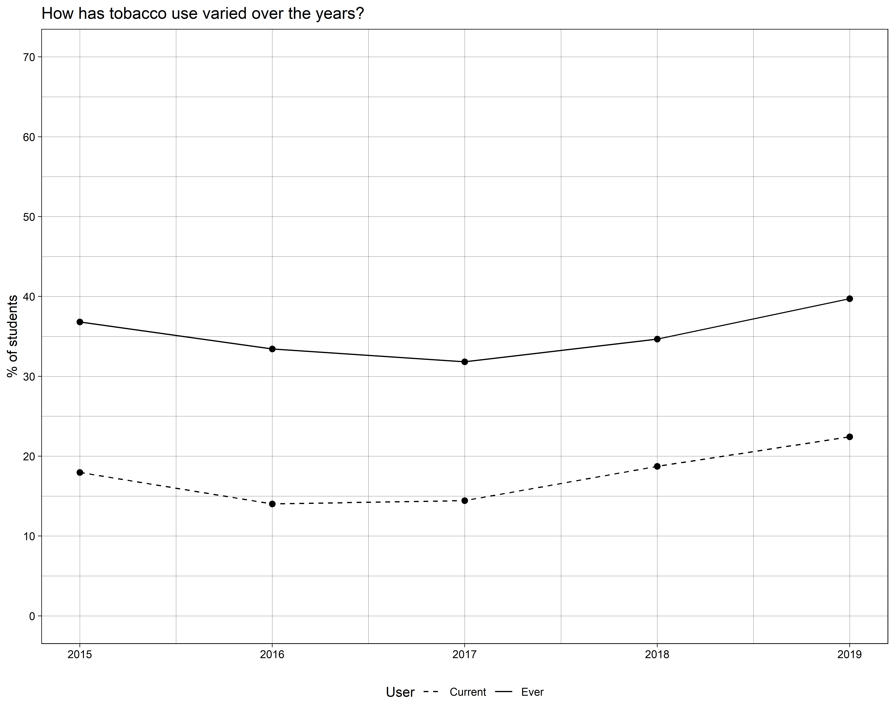</p>
<p>Nice! Now we can see how overall tobacco usage has changed since 2017. It appears that usage first decreased from 2015 to 2017 and then increased a bit since 2017, surpassing the levels in 2015.</p>
<p>What about e-cigarette use? How has the usage of e-cigarettes changed over time?</p>
<div class="sourceCode" id="section-cb73"><pre class="sourceCode r"><code class="sourceCode r"><span id="cb73-1"><a href="#cb73-1"></a>plot1a &lt;-<span class="st"> </span>nyts_data <span class="op">%&gt;%</span></span>
<span id="cb73-2"><a href="#cb73-2"></a><span class="st">    </span>dplyr<span class="op">::</span><span class="kw">group_by</span>(year) <span class="op">%&gt;%</span></span>
<span id="cb73-3"><a href="#cb73-3"></a><span class="st">    </span>dplyr<span class="op">::</span><span class="kw">summarize</span>(<span class="dt">Ever =</span> (<span class="kw">mean</span>(ecig_ever, <span class="dt">na.rm =</span> <span class="ot">TRUE</span>) <span class="op">*</span><span class="st"> </span><span class="dv">100</span>),</span>
<span id="cb73-4"><a href="#cb73-4"></a>                     <span class="dt">Current =</span> (<span class="kw">mean</span>(ecig_current, <span class="dt">na.rm =</span> <span class="ot">TRUE</span>) <span class="op">*</span><span class="st"> </span><span class="dv">100</span>)) <span class="op">%&gt;%</span></span>
<span id="cb73-5"><a href="#cb73-5"></a><span class="st">  </span><span class="kw">pivot_longer</span>(<span class="dt">cols =</span> <span class="op">-</span>year, <span class="dt">names_to =</span> <span class="st">&quot;User&quot;</span>, <span class="dt">values_to =</span> <span class="st">&quot;Percentage of students&quot;</span>) <span class="op">%&gt;%</span></span>
<span id="cb73-6"><a href="#cb73-6"></a><span class="st">  </span><span class="kw">ggplot</span>(<span class="kw">aes</span>(<span class="dt">x =</span> year, <span class="dt">y =</span> <span class="st">`</span><span class="dt">Percentage of students</span><span class="st">`</span>)) <span class="op">+</span></span>
<span id="cb73-7"><a href="#cb73-7"></a><span class="st">  </span><span class="kw">geom_line</span>(<span class="kw">aes</span>(<span class="dt">linetype =</span> User)) <span class="op">+</span></span>
<span id="cb73-8"><a href="#cb73-8"></a><span class="st">  </span><span class="kw">geom_point</span>(<span class="dt">show.legend =</span> <span class="ot">FALSE</span>, <span class="dt">size =</span> <span class="dv">2</span>) <span class="op">+</span></span>
<span id="cb73-9"><a href="#cb73-9"></a><span class="st">  </span><span class="co"># this allows us to choose what type of line we want for each line</span></span>
<span id="cb73-10"><a href="#cb73-10"></a><span class="st">  </span><span class="kw">scale_linetype_manual</span>(<span class="dt">values =</span> <span class="kw">c</span>(<span class="dv">2</span>, <span class="dv">1</span>)) <span class="op">+</span></span>
<span id="cb73-11"><a href="#cb73-11"></a><span class="st">  </span><span class="co"># this allows us to specify how the y-axis should appear</span></span>
<span id="cb73-12"><a href="#cb73-12"></a><span class="st">  </span><span class="kw">scale_y_continuous</span>(<span class="dt">breaks =</span> <span class="kw">seq</span>(<span class="dv">0</span>, <span class="dv">60</span>, <span class="dt">by =</span> <span class="dv">10</span>),</span>
<span id="cb73-13"><a href="#cb73-13"></a>                     <span class="dt">labels =</span> <span class="kw">seq</span>(<span class="dv">0</span>, <span class="dv">60</span>, <span class="dt">by =</span> <span class="dv">10</span>),</span>
<span id="cb73-14"><a href="#cb73-14"></a>                     <span class="dt">limits =</span> <span class="kw">c</span>(<span class="dv">0</span>, <span class="dv">60</span>)) <span class="op">+</span></span>
<span id="cb73-15"><a href="#cb73-15"></a><span class="st">  </span><span class="co"># this adjusts the background style of the plot</span></span>
<span id="cb73-16"><a href="#cb73-16"></a><span class="st">    </span><span class="kw">theme_linedraw</span>() <span class="op">+</span></span>
<span id="cb73-17"><a href="#cb73-17"></a><span class="st">  </span><span class="co"># this moves the legend to the bottom of the plot and removes the x axis title</span></span>
<span id="cb73-18"><a href="#cb73-18"></a><span class="st">    </span><span class="kw">theme</span>(<span class="dt">legend.position =</span> <span class="st">&quot;bottom&quot;</span>,</span>
<span id="cb73-19"><a href="#cb73-19"></a>          <span class="dt">axis.title.x =</span> <span class="kw">element_blank</span>()) <span class="op">+</span></span>
<span id="cb73-20"><a href="#cb73-20"></a><span class="st">    </span><span class="kw">labs</span>(<span class="dt">title =</span> <span class="st">&quot;How has e-cigarette use varied over the years?&quot;</span>,</span>
<span id="cb73-21"><a href="#cb73-21"></a>         <span class="dt">y =</span> <span class="st">&quot;% of students&quot;</span>)</span>
<span id="cb73-22"><a href="#cb73-22"></a></span>
<span id="cb73-23"><a href="#cb73-23"></a>plot1a</span></code></pre></div>
<p>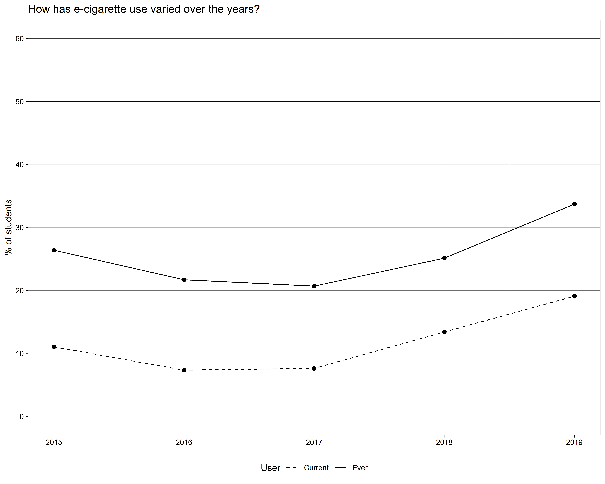 It looks like the shape of the plot is very similar to tobacco usage overall. We see a downward trend until 2017 when the rate of both current and ever users increased. Recall that this is in agreement with the articles that we referenced earlier. We can see that the slope looks steeper for e-cigarette usage as compared to all tobacco products (including e-cigarettes).</p>
<p>Now let’s plot this data together on the same plot.</p>
<p>We will have four groups (e-cigarette ever users, e-cigarette current users, tobacco ever users, and tobacco current users) to plot, therefore, it would be useful to add color to our plot. Keep in mind that e-cigarette users are a subset of any tobacco product users.</p>
<p>One important thing to keep in mind when creating plots is that individuals with color blindness may have a difficult time distinguishing groups when certain color choices are used.</p>
<p>One great option is to use the <code>viridis</code> package, which offers color palettes with colors that are still distinguishable by individuals with most forms of color blindness.</p>
<p>We can choose which colors we want to use by using the <code>show_col()</code> function of the <code>scales</code> package.</p>
<p>Here are some color options:</p>
<div class="sourceCode" id="section-cb74"><pre class="sourceCode r"><code class="sourceCode r"><span id="cb74-1"><a href="#cb74-1"></a>scales<span class="op">::</span><span class="kw">show_col</span>(<span class="kw">viridis_pal</span>()(<span class="dv">6</span>))</span></code></pre></div>
<p>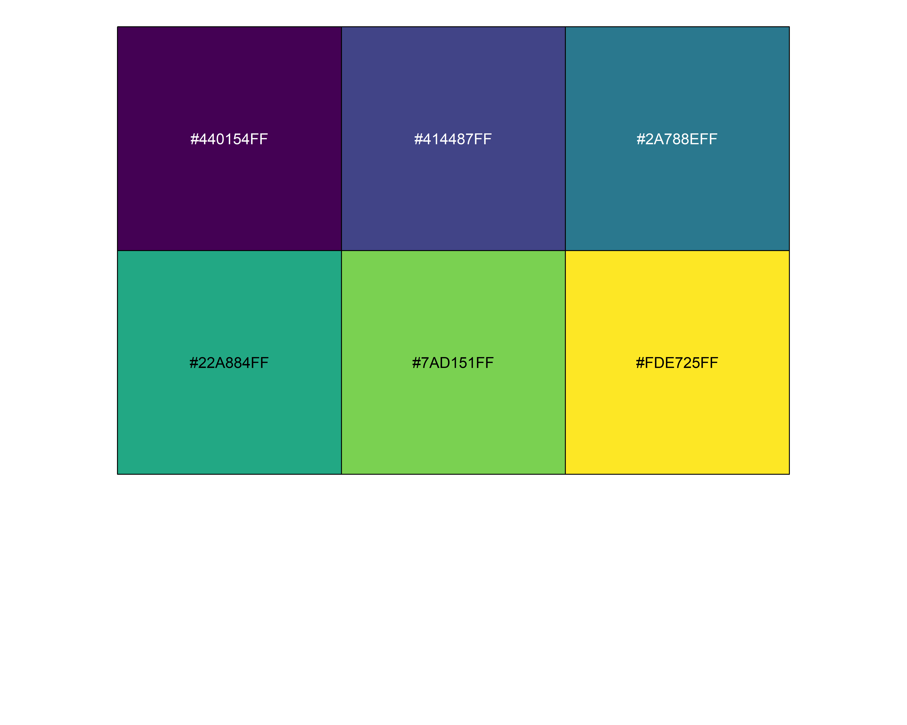</p>
<div class="sourceCode" id="section-cb75"><pre class="sourceCode r"><code class="sourceCode r"><span id="cb75-1"><a href="#cb75-1"></a>v_colors =<span class="st">  </span><span class="kw">viridis</span>(<span class="dv">6</span>)[<span class="kw">c</span>(<span class="dv">1</span>, <span class="dv">4</span>)]</span></code></pre></div>
<p>We will select the first and fourth colors for our plot. To add these specific colors we will use the <code>scale_color_manual()</code> function of the <code>ggplot2</code> package.</p>
<p>We will calculate the mean ever and current usage percentages for students who used e-cigarettes or any tobacco products (including e-cigarettes) for each year again using the <code>group_by()</code> and <code>summarize()</code> functions. We will again use the <code>pivot_longer</code> function to convert our data to long format. We will also use the <code>separate()</code> function of the <code>tidyr</code> package to create two variables from one of the variables. This is done by separating by, in this case, an underscore.</p>
<div class="sourceCode" id="section-cb76"><pre class="sourceCode r"><code class="sourceCode r"><span id="cb76-1"><a href="#cb76-1"></a>nyts_data <span class="op">%&gt;%</span></span>
<span id="cb76-2"><a href="#cb76-2"></a><span class="st">    </span>dplyr<span class="op">::</span><span class="kw">group_by</span>(year) <span class="op">%&gt;%</span></span>
<span id="cb76-3"><a href="#cb76-3"></a><span class="st">    </span>dplyr<span class="op">::</span><span class="kw">summarize</span>(<span class="st">&quot;Ever_Any Tobacco Product </span><span class="ch">\n</span><span class="st"> (including e-cigarettes)&quot;</span> =<span class="st"> </span></span>
<span id="cb76-4"><a href="#cb76-4"></a><span class="st">                       </span>(<span class="kw">mean</span>(tobacco_ever, <span class="dt">na.rm =</span> <span class="ot">TRUE</span>) <span class="op">*</span><span class="st"> </span><span class="dv">100</span>),</span>
<span id="cb76-5"><a href="#cb76-5"></a>                     <span class="st">&quot;Current_Any Tobacco Product </span><span class="ch">\n</span><span class="st"> (including e-cigarettes)&quot;</span> =<span class="st">   </span></span>
<span id="cb76-6"><a href="#cb76-6"></a><span class="st">                       </span>(<span class="kw">mean</span>(tobacco_current, <span class="dt">na.rm =</span> <span class="ot">TRUE</span>) <span class="op">*</span><span class="st"> </span><span class="dv">100</span>),</span>
<span id="cb76-7"><a href="#cb76-7"></a>                     <span class="st">&quot;Ever_E-cigarettes&quot;</span> =<span class="st"> </span></span>
<span id="cb76-8"><a href="#cb76-8"></a><span class="st">                       </span>(<span class="kw">mean</span>(ecig_ever, <span class="dt">na.rm =</span> <span class="ot">TRUE</span>) <span class="op">*</span><span class="st"> </span><span class="dv">100</span>),</span>
<span id="cb76-9"><a href="#cb76-9"></a>                     <span class="st">&quot;Current_E-cigarettes&quot;</span> =<span class="st"> </span></span>
<span id="cb76-10"><a href="#cb76-10"></a><span class="st">                       </span>(<span class="kw">mean</span>(ecig_current, <span class="dt">na.rm =</span> <span class="ot">TRUE</span>) <span class="op">*</span><span class="st"> </span><span class="dv">100</span>)) <span class="op">%&gt;%</span></span>
<span id="cb76-11"><a href="#cb76-11"></a><span class="st">  </span><span class="kw">pivot_longer</span>(<span class="dt">cols =</span> <span class="op">-</span>year, </span>
<span id="cb76-12"><a href="#cb76-12"></a>           <span class="dt">names_to =</span> <span class="st">&quot;User&quot;</span>, </span>
<span id="cb76-13"><a href="#cb76-13"></a>          <span class="dt">values_to =</span> <span class="st">&quot;Percentage of students&quot;</span>) <span class="op">%&gt;%</span></span>
<span id="cb76-14"><a href="#cb76-14"></a><span class="st">  </span><span class="kw">separate</span>(User, <span class="dt">into =</span> <span class="kw">c</span>(<span class="st">&quot;User&quot;</span>, <span class="st">&quot;Product&quot;</span>), <span class="dt">sep =</span> <span class="st">&quot;_&quot;</span>) <span class="op">%&gt;%</span></span>
<span id="cb76-15"><a href="#cb76-15"></a><span class="st">  </span><span class="kw">head</span>()</span></code></pre></div>
<pre><code># A tibble: 6 x 4
   year User    Product                                   `Percentage of studen~
  &lt;dbl&gt; &lt;chr&gt;   &lt;chr&gt;                                                      &lt;dbl&gt;
1  2015 Ever    &quot;Any Tobacco Product \n (including e-cig~                   36.8
2  2015 Current &quot;Any Tobacco Product \n (including e-cig~                   18.0
3  2015 Ever    &quot;E-cigarettes&quot;                                              26.4
4  2015 Current &quot;E-cigarettes&quot;                                              11.0
5  2016 Ever    &quot;Any Tobacco Product \n (including e-cig~                   33.4
6  2016 Current &quot;Any Tobacco Product \n (including e-cig~                   14.0</code></pre>
<div class="sourceCode" id="section-cb78"><pre class="sourceCode r"><code class="sourceCode r"><span id="cb78-1"><a href="#cb78-1"></a>plot1t &lt;-<span class="st"> </span>nyts_data <span class="op">%&gt;%</span></span>
<span id="cb78-2"><a href="#cb78-2"></a><span class="st">    </span><span class="kw">group_by</span>(year) <span class="op">%&gt;%</span></span>
<span id="cb78-3"><a href="#cb78-3"></a><span class="st">    </span><span class="kw">summarize</span>(<span class="st">&quot;Ever_Any Tobacco Product </span><span class="ch">\n</span><span class="st"> (including e-cigarettes)&quot;</span> =<span class="st"> </span></span>
<span id="cb78-4"><a href="#cb78-4"></a><span class="st">                </span>(<span class="kw">mean</span>(tobacco_ever, <span class="dt">na.rm =</span> <span class="ot">TRUE</span>) <span class="op">*</span><span class="st"> </span><span class="dv">100</span>),</span>
<span id="cb78-5"><a href="#cb78-5"></a>              <span class="st">&quot;Current_Any Tobacco Product </span><span class="ch">\n</span><span class="st"> (including e-cigarettes)&quot;</span> =<span class="st"> </span></span>
<span id="cb78-6"><a href="#cb78-6"></a><span class="st">                </span>(<span class="kw">mean</span>(tobacco_current, <span class="dt">na.rm =</span> <span class="ot">TRUE</span>) <span class="op">*</span><span class="st"> </span><span class="dv">100</span>),</span>
<span id="cb78-7"><a href="#cb78-7"></a>              <span class="st">&quot;Ever_E-cigarettes&quot;</span> =<span class="st"> </span></span>
<span id="cb78-8"><a href="#cb78-8"></a><span class="st">                </span>(<span class="kw">mean</span>(ecig_ever, <span class="dt">na.rm =</span> <span class="ot">TRUE</span>) <span class="op">*</span><span class="st"> </span><span class="dv">100</span>),</span>
<span id="cb78-9"><a href="#cb78-9"></a>               <span class="st">&quot;Current_E-cigarettes&quot;</span> =<span class="st"> </span></span>
<span id="cb78-10"><a href="#cb78-10"></a><span class="st">                </span>(<span class="kw">mean</span>(ecig_current, <span class="dt">na.rm =</span> <span class="ot">TRUE</span>) <span class="op">*</span><span class="st"> </span><span class="dv">100</span>)) <span class="op">%&gt;%</span></span>
<span id="cb78-11"><a href="#cb78-11"></a><span class="st">  </span><span class="kw">pivot_longer</span>(<span class="dt">cols =</span> <span class="op">-</span>year, </span>
<span id="cb78-12"><a href="#cb78-12"></a>           <span class="dt">names_to =</span> <span class="st">&quot;User&quot;</span>, </span>
<span id="cb78-13"><a href="#cb78-13"></a>          <span class="dt">values_to =</span> <span class="st">&quot;Percentage of students&quot;</span>) <span class="op">%&gt;%</span></span>
<span id="cb78-14"><a href="#cb78-14"></a><span class="st">  </span><span class="kw">separate</span>(User, </span>
<span id="cb78-15"><a href="#cb78-15"></a>           <span class="dt">into =</span> <span class="kw">c</span>(<span class="st">&quot;User&quot;</span>, <span class="st">&quot;Product&quot;</span>), </span>
<span id="cb78-16"><a href="#cb78-16"></a>            <span class="dt">sep =</span> <span class="st">&quot;_&quot;</span>) <span class="op">%&gt;%</span></span>
<span id="cb78-17"><a href="#cb78-17"></a><span class="st">    </span><span class="kw">ggplot</span>(<span class="kw">aes</span>(<span class="dt">x =</span> year, </span>
<span id="cb78-18"><a href="#cb78-18"></a>               <span class="dt">y =</span> <span class="st">`</span><span class="dt">Percentage of students</span><span class="st">`</span>,</span>
<span id="cb78-19"><a href="#cb78-19"></a>           <span class="dt">color =</span> Product)) <span class="op">+</span></span>
<span id="cb78-20"><a href="#cb78-20"></a><span class="st">    </span><span class="kw">geom_line</span>(<span class="kw">aes</span>(<span class="dt">linetype =</span> User)) <span class="op">+</span></span>
<span id="cb78-21"><a href="#cb78-21"></a><span class="st">  </span><span class="kw">geom_point</span>(<span class="dt">show.legend =</span> <span class="ot">FALSE</span>, <span class="dt">size =</span> <span class="dv">2</span>) <span class="op">+</span></span>
<span id="cb78-22"><a href="#cb78-22"></a><span class="st">  </span><span class="co"># this allows us to choose what type of line we want for each line</span></span>
<span id="cb78-23"><a href="#cb78-23"></a><span class="st">  </span><span class="kw">scale_linetype_manual</span>(<span class="dt">values =</span> <span class="kw">c</span>(<span class="dv">2</span>, <span class="dv">1</span>)) <span class="op">+</span></span>
<span id="cb78-24"><a href="#cb78-24"></a><span class="st">  </span><span class="co"># we want purple associated with e-cigarettes to be consistent with later plots</span></span>
<span id="cb78-25"><a href="#cb78-25"></a><span class="st">  </span><span class="kw">scale_color_manual</span>(<span class="dt">values =</span> <span class="kw">rev</span>(v_colors)) <span class="op">+</span></span>
<span id="cb78-26"><a href="#cb78-26"></a><span class="st">  </span><span class="co"># this allows us to specify how the y-axis should appear</span></span>
<span id="cb78-27"><a href="#cb78-27"></a><span class="st">  </span><span class="kw">scale_y_continuous</span>(<span class="dt">breaks =</span> <span class="kw">seq</span>(<span class="dv">0</span>, <span class="dv">60</span>, <span class="dt">by =</span> <span class="dv">10</span>),</span>
<span id="cb78-28"><a href="#cb78-28"></a>                     <span class="dt">labels =</span> <span class="kw">seq</span>(<span class="dv">0</span>, <span class="dv">60</span>, <span class="dt">by =</span> <span class="dv">10</span>),</span>
<span id="cb78-29"><a href="#cb78-29"></a>                     <span class="dt">limits =</span> <span class="kw">c</span>(<span class="dv">0</span>, <span class="dv">60</span>)) <span class="op">+</span></span>
<span id="cb78-30"><a href="#cb78-30"></a><span class="st">  </span><span class="co"># this adjusts the background style of the plot</span></span>
<span id="cb78-31"><a href="#cb78-31"></a><span class="st">    </span><span class="kw">theme_linedraw</span>() <span class="op">+</span></span>
<span id="cb78-32"><a href="#cb78-32"></a><span class="st">  </span><span class="co"># this moves the legend to the bottom of the plot and removes the x axis title</span></span>
<span id="cb78-33"><a href="#cb78-33"></a><span class="st">    </span><span class="kw">theme</span>(<span class="dt">legend.position =</span> <span class="st">&quot;bottom&quot;</span>,</span>
<span id="cb78-34"><a href="#cb78-34"></a>          <span class="dt">axis.title.x =</span> <span class="kw">element_blank</span>()) <span class="op">+</span></span>
<span id="cb78-35"><a href="#cb78-35"></a><span class="st">    </span><span class="kw">labs</span>(<span class="dt">title =</span> <span class="st">&quot;How has tobacco use varied over the years?&quot;</span>,</span>
<span id="cb78-36"><a href="#cb78-36"></a>         <span class="dt">y =</span> <span class="st">&quot;% of students&quot;</span>)</span>
<span id="cb78-37"><a href="#cb78-37"></a></span>
<span id="cb78-38"><a href="#cb78-38"></a>plot1t</span></code></pre></div>
<p>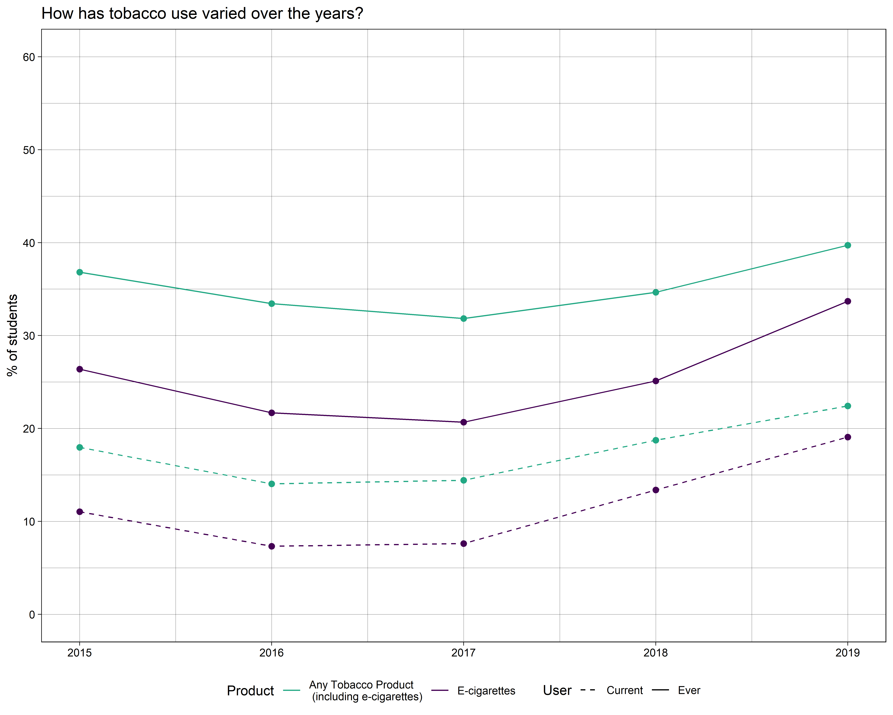</p>
<p>We see an increase in all categories starting in 2017, but the rate of increase is higher for students using only e-cigarettes (current or ever users), as shown by the higher slope of the e-cigarette lines.</p>
<p>In the above plots, the “Any tobacco product” groups include individuals in the “E-cigarette only” groups. Now let’s plot students in two mutually exclusive groups on the same plot: those who reported either using only e-cigarettes or only other tobacco products (besides e-cigarettes), but not both.</p>
<p>We will calculate the mean ever and current usage percentages for students in these two mutually exclusive groups, again using the <code>group_by()</code> function and the <code>summarize()</code> function. We will again use the <code>pivot_longer</code> function to convert our data to long format. We will also again use the <code>separate()</code> function of the <code>tidyr</code> package to create two variables from one variable. This is done by separating by, in this case, a space.</p>
<div class="sourceCode" id="section-cb79"><pre class="sourceCode r"><code class="sourceCode r"><span id="cb79-1"><a href="#cb79-1"></a>nyts_data <span class="op">%&gt;%</span></span>
<span id="cb79-2"><a href="#cb79-2"></a><span class="st">    </span>dplyr<span class="op">::</span><span class="kw">group_by</span>(year) <span class="op">%&gt;%</span></span>
<span id="cb79-3"><a href="#cb79-3"></a><span class="st">    </span>dplyr<span class="op">::</span><span class="kw">summarize</span>(<span class="st">&quot;Ever_E-cigarette&quot;</span> =<span class="st"> </span></span>
<span id="cb79-4"><a href="#cb79-4"></a><span class="st">                       </span>(<span class="kw">mean</span>(ecig_only_ever, <span class="dt">na.rm =</span> <span class="ot">TRUE</span>) <span class="op">*</span><span class="st"> </span><span class="dv">100</span>),</span>
<span id="cb79-5"><a href="#cb79-5"></a>                     <span class="st">&quot;Current_E-cigarette&quot;</span> =<span class="st"> </span></span>
<span id="cb79-6"><a href="#cb79-6"></a><span class="st">                       </span>(<span class="kw">mean</span>(ecig_only_current, <span class="dt">na.rm =</span> <span class="ot">TRUE</span>) <span class="op">*</span><span class="st"> </span><span class="dv">100</span>),</span>
<span id="cb79-7"><a href="#cb79-7"></a>                     <span class="st">&quot;Ever_Non-e-cigarette&quot;</span> =<span class="st"> </span></span>
<span id="cb79-8"><a href="#cb79-8"></a><span class="st">                       </span>(<span class="kw">mean</span>(non_ecig_only_ever, <span class="dt">na.rm =</span> <span class="ot">TRUE</span>) <span class="op">*</span><span class="st"> </span><span class="dv">100</span>),</span>
<span id="cb79-9"><a href="#cb79-9"></a>                     <span class="st">&quot;Current_Non-e-cigarette&quot;</span> =<span class="st"> </span></span>
<span id="cb79-10"><a href="#cb79-10"></a><span class="st">                       </span>(<span class="kw">mean</span>(non_ecig_only_current, <span class="dt">na.rm =</span> <span class="ot">TRUE</span>) <span class="op">*</span><span class="st"> </span><span class="dv">100</span>)) <span class="op">%&gt;%</span></span>
<span id="cb79-11"><a href="#cb79-11"></a><span class="st">  </span><span class="kw">pivot_longer</span>(<span class="dt">cols =</span> <span class="op">-</span>year, </span>
<span id="cb79-12"><a href="#cb79-12"></a>           <span class="dt">names_to =</span> <span class="st">&quot;User&quot;</span>, </span>
<span id="cb79-13"><a href="#cb79-13"></a>          <span class="dt">values_to =</span> <span class="st">&quot;Percentage of students&quot;</span>) <span class="op">%&gt;%</span></span>
<span id="cb79-14"><a href="#cb79-14"></a><span class="st">  </span>tidyr<span class="op">::</span><span class="kw">separate</span>(User, <span class="dt">into =</span> <span class="kw">c</span>(<span class="st">&quot;User&quot;</span>, <span class="st">&quot;Product&quot;</span>), <span class="dt">sep =</span> <span class="st">&quot;_&quot;</span>) <span class="op">%&gt;%</span></span>
<span id="cb79-15"><a href="#cb79-15"></a><span class="st">  </span><span class="kw">head</span>()</span></code></pre></div>
<pre><code># A tibble: 6 x 4
   year User    Product         `Percentage of students`
  &lt;dbl&gt; &lt;chr&gt;   &lt;chr&gt;                              &lt;dbl&gt;
1  2015 Ever    E-cigarette                         4.36
2  2015 Current E-cigarette                         1.54
3  2015 Ever    Non-e-cigarette                     7.06
4  2015 Current Non-e-cigarette                     3.35
5  2016 Ever    E-cigarette                         4.54
6  2016 Current E-cigarette                         1.23</code></pre>
<div class="sourceCode" id="section-cb81"><pre class="sourceCode r"><code class="sourceCode r"><span id="cb81-1"><a href="#cb81-1"></a>plot1c &lt;-<span class="st"> </span>nyts_data <span class="op">%&gt;%</span></span>
<span id="cb81-2"><a href="#cb81-2"></a><span class="st">    </span>dplyr<span class="op">::</span><span class="kw">group_by</span>(year) <span class="op">%&gt;%</span></span>
<span id="cb81-3"><a href="#cb81-3"></a><span class="st">    </span>dplyr<span class="op">::</span><span class="kw">summarize</span>(<span class="st">&quot;Ever_E-cigarette&quot;</span> =<span class="st"> </span></span>
<span id="cb81-4"><a href="#cb81-4"></a><span class="st">                       </span>(<span class="kw">mean</span>(ecig_only_ever, <span class="dt">na.rm =</span> <span class="ot">TRUE</span>) <span class="op">*</span><span class="st"> </span><span class="dv">100</span>),</span>
<span id="cb81-5"><a href="#cb81-5"></a>                     <span class="st">&quot;Current_E-cigarette&quot;</span> =<span class="st"> </span></span>
<span id="cb81-6"><a href="#cb81-6"></a><span class="st">                       </span>(<span class="kw">mean</span>(ecig_only_current, <span class="dt">na.rm =</span> <span class="ot">TRUE</span>) <span class="op">*</span><span class="st"> </span><span class="dv">100</span>),</span>
<span id="cb81-7"><a href="#cb81-7"></a>                     <span class="st">&quot;Ever_Non-e-cigarette&quot;</span> =<span class="st"> </span></span>
<span id="cb81-8"><a href="#cb81-8"></a><span class="st">                       </span>(<span class="kw">mean</span>(non_ecig_only_ever, <span class="dt">na.rm =</span> <span class="ot">TRUE</span>) <span class="op">*</span><span class="st"> </span><span class="dv">100</span>),</span>
<span id="cb81-9"><a href="#cb81-9"></a>                     <span class="st">&quot;Current_Non-e-cigarette&quot;</span> =<span class="st"> </span></span>
<span id="cb81-10"><a href="#cb81-10"></a><span class="st">                       </span>(<span class="kw">mean</span>(non_ecig_only_current, <span class="dt">na.rm =</span> <span class="ot">TRUE</span>) <span class="op">*</span><span class="st"> </span><span class="dv">100</span>)) <span class="op">%&gt;%</span></span>
<span id="cb81-11"><a href="#cb81-11"></a><span class="st">  </span><span class="kw">pivot_longer</span>(<span class="dt">cols =</span> <span class="op">-</span>year, </span>
<span id="cb81-12"><a href="#cb81-12"></a>           <span class="dt">names_to =</span> <span class="st">&quot;User&quot;</span>, </span>
<span id="cb81-13"><a href="#cb81-13"></a>          <span class="dt">values_to =</span> <span class="st">&quot;Percentage of students&quot;</span>) <span class="op">%&gt;%</span></span>
<span id="cb81-14"><a href="#cb81-14"></a><span class="st">  </span><span class="kw">separate</span>(User, <span class="dt">into =</span> <span class="kw">c</span>(<span class="st">&quot;User&quot;</span>, <span class="st">&quot;Product&quot;</span>), <span class="dt">sep =</span> <span class="st">&quot;_&quot;</span>) <span class="op">%&gt;%</span></span>
<span id="cb81-15"><a href="#cb81-15"></a><span class="st">    </span><span class="kw">ggplot</span>(<span class="kw">aes</span>(<span class="dt">x =</span> year, <span class="dt">y =</span> <span class="st">`</span><span class="dt">Percentage of students</span><span class="st">`</span>, <span class="dt">color =</span> Product)) <span class="op">+</span></span>
<span id="cb81-16"><a href="#cb81-16"></a><span class="st">    </span><span class="kw">geom_line</span>(<span class="kw">aes</span>(<span class="dt">linetype =</span> User)) <span class="op">+</span></span>
<span id="cb81-17"><a href="#cb81-17"></a><span class="st">  </span><span class="kw">geom_point</span>(<span class="dt">show.legend =</span> <span class="ot">FALSE</span>, <span class="dt">size =</span> <span class="dv">2</span>) <span class="op">+</span></span>
<span id="cb81-18"><a href="#cb81-18"></a><span class="st">  </span><span class="co"># this allows us to choose what type of line we want for each line</span></span>
<span id="cb81-19"><a href="#cb81-19"></a><span class="st">  </span><span class="kw">scale_linetype_manual</span>(<span class="dt">values =</span> <span class="kw">c</span>(<span class="dv">2</span>, <span class="dv">1</span>)) <span class="op">+</span></span>
<span id="cb81-20"><a href="#cb81-20"></a><span class="st">  </span><span class="co"># this allows us to specify how the y-axis should appear</span></span>
<span id="cb81-21"><a href="#cb81-21"></a><span class="st">  </span><span class="kw">scale_y_continuous</span>(<span class="dt">breaks =</span> <span class="kw">seq</span>(<span class="dv">0</span>, <span class="dv">30</span>, <span class="dt">by =</span> <span class="dv">10</span>),</span>
<span id="cb81-22"><a href="#cb81-22"></a>                     <span class="dt">labels =</span> <span class="kw">seq</span>(<span class="dv">0</span>, <span class="dv">30</span>, <span class="dt">by =</span> <span class="dv">10</span>),</span>
<span id="cb81-23"><a href="#cb81-23"></a>                     <span class="dt">limits =</span> <span class="kw">c</span>(<span class="dv">0</span>, <span class="dv">30</span>)) <span class="op">+</span></span>
<span id="cb81-24"><a href="#cb81-24"></a><span class="st">  </span><span class="kw">scale_color_manual</span>(<span class="dt">values =</span> v_colors) <span class="op">+</span></span>
<span id="cb81-25"><a href="#cb81-25"></a><span class="st">  </span><span class="co"># this adjusts the background style of the plot</span></span>
<span id="cb81-26"><a href="#cb81-26"></a><span class="st">    </span><span class="kw">theme_linedraw</span>() <span class="op">+</span></span>
<span id="cb81-27"><a href="#cb81-27"></a><span class="st">  </span><span class="co"># this moves the legend to the bottom of the plot and removes the x axis title</span></span>
<span id="cb81-28"><a href="#cb81-28"></a><span class="st">    </span><span class="kw">theme</span>(<span class="dt">legend.position =</span> <span class="st">&quot;bottom&quot;</span>,</span>
<span id="cb81-29"><a href="#cb81-29"></a>          <span class="dt">axis.title.x =</span> <span class="kw">element_blank</span>()) <span class="op">+</span></span>
<span id="cb81-30"><a href="#cb81-30"></a><span class="st">    </span><span class="kw">labs</span>(<span class="dt">title =</span> <span class="st">&quot;How has use of only e-cigarettes and</span></span>
<span id="cb81-31"><a href="#cb81-31"></a><span class="st">only tobacco products besides e-cigarettes varied over time?&quot;</span>,</span>
<span id="cb81-32"><a href="#cb81-32"></a>         <span class="dt">y =</span> <span class="st">&quot;% of students&quot;</span>)</span>
<span id="cb81-33"><a href="#cb81-33"></a></span>
<span id="cb81-34"><a href="#cb81-34"></a>plot1c</span></code></pre></div>
<p></p>
<p>Very interesting! We can see from this plot that the percentage of students who had currently used (or ever tried) only e-cigarettes greatly increased starting in 2017, while in contrast the percentage of students who had ever tried only non-e-cigarette tobacco products actually diminished over time. In fact, we can see that in 2019 the percentage of students who were current e-cigarette users surpassed the percentage that had tried a non-e-cigarette product even just once.</p>
<p>Recall that we made a variable called <code>Group</code> that identified students who used either just e-cigarette products, just other tobacco products (besides e-cigarettes), or students who used both e-cigarettes and some other type of tobacco product.</p>
<div class="sourceCode" id="section-cb82"><pre class="sourceCode r"><code class="sourceCode r"><span id="cb82-1"><a href="#cb82-1"></a>nyts_data <span class="op">%&gt;%</span></span>
<span id="cb82-2"><a href="#cb82-2"></a><span class="st">  </span><span class="kw">count</span>(Group)</span></code></pre></div>
<pre><code># A tibble: 4 x 2
  Group                       n
  &lt;chr&gt;                   &lt;int&gt;
1 Combination of products 16517
2 Neither                 61738
3 Only e-cigarettes        7866
4 Only other products      9344</code></pre>
<p>We will now make a plot over time of each of these groups. Since we will have 4 total groups, we will use 4 of the viridis colors. Notice, that in this case we are grouping by three variables by simply separating the variables that we want to group by with a comma in our <code>group_by()</code> function like this: <code>group_by(Group, year, n)</code>.</p>
<div class="sourceCode" id="section-cb84"><pre class="sourceCode r"><code class="sourceCode r"><span id="cb84-1"><a href="#cb84-1"></a>nyts_data <span class="op">%&gt;%</span></span>
<span id="cb84-2"><a href="#cb84-2"></a><span class="st">  </span><span class="kw">group_by</span>(Group, year, n) <span class="op">%&gt;%</span></span>
<span id="cb84-3"><a href="#cb84-3"></a><span class="st">  </span><span class="kw">summarize</span>(<span class="dt">group_count =</span> <span class="kw">n</span>()) <span class="op">%&gt;%</span></span>
<span id="cb84-4"><a href="#cb84-4"></a><span class="st">  </span><span class="kw">mutate</span>(<span class="st">&quot;Percentage of students&quot;</span> =<span class="st"> </span>group_count <span class="op">/</span><span class="st"> </span>n <span class="op">*</span><span class="st"> </span><span class="dv">100</span>) <span class="op">%&gt;%</span></span>
<span id="cb84-5"><a href="#cb84-5"></a><span class="st">  </span><span class="kw">head</span>()</span></code></pre></div>
<pre><code># A tibble: 6 x 5
# Groups:   Group, year [6]
  Group                    year     n group_count `Percentage of students`
  &lt;chr&gt;                   &lt;dbl&gt; &lt;int&gt;       &lt;int&gt;                    &lt;dbl&gt;
1 Combination of products  2015 17711        3634                     20.5
2 Combination of products  2016 20675        3297                     15.9
3 Combination of products  2017 17872        2623                     14.7
4 Combination of products  2018 20189        3321                     16.4
5 Combination of products  2019 19018        3642                     19.2
6 Neither                  2015 17711       11188                     63.2</code></pre>
<div class="sourceCode" id="section-cb86"><pre class="sourceCode r"><code class="sourceCode r"><span id="cb86-1"><a href="#cb86-1"></a>v_colors =<span class="st">  </span><span class="kw">viridis</span>(<span class="dv">5</span>)[<span class="dv">1</span><span class="op">:</span><span class="dv">4</span>]</span>
<span id="cb86-2"><a href="#cb86-2"></a></span>
<span id="cb86-3"><a href="#cb86-3"></a>nyts_data <span class="op">%&gt;%</span></span>
<span id="cb86-4"><a href="#cb86-4"></a><span class="st">  </span><span class="kw">group_by</span>(Group, year, n) <span class="op">%&gt;%</span></span>
<span id="cb86-5"><a href="#cb86-5"></a><span class="st">  </span><span class="kw">summarize</span>(<span class="dt">group_count =</span> <span class="kw">n</span>()) <span class="op">%&gt;%</span></span>
<span id="cb86-6"><a href="#cb86-6"></a><span class="st">  </span><span class="kw">mutate</span>(<span class="st">&quot;Percentage of students&quot;</span> =<span class="st"> </span>group_count <span class="op">/</span><span class="st"> </span>n <span class="op">*</span><span class="st"> </span><span class="dv">100</span>) <span class="op">%&gt;%</span></span>
<span id="cb86-7"><a href="#cb86-7"></a><span class="st">  </span><span class="kw">ggplot</span>(<span class="kw">aes</span>(<span class="dt">x =</span> year, <span class="dt">y =</span> <span class="st">`</span><span class="dt">Percentage of students</span><span class="st">`</span>, <span class="dt">color =</span> Group)) <span class="op">+</span></span>
<span id="cb86-8"><a href="#cb86-8"></a><span class="st">  </span><span class="kw">geom_point</span>(<span class="dt">size =</span> <span class="dv">2</span>) <span class="op">+</span></span>
<span id="cb86-9"><a href="#cb86-9"></a><span class="st">  </span><span class="kw">geom_line</span>() <span class="op">+</span></span>
<span id="cb86-10"><a href="#cb86-10"></a><span class="st">  </span><span class="kw">scale_color_manual</span>(<span class="dt">values =</span> v_colors) <span class="op">+</span></span>
<span id="cb86-11"><a href="#cb86-11"></a><span class="st">  </span><span class="kw">theme_linedraw</span>() <span class="op">+</span></span>
<span id="cb86-12"><a href="#cb86-12"></a><span class="st">  </span><span class="kw">labs</span>(<span class="dt">x =</span> <span class="st">&quot;Year&quot;</span>)</span></code></pre></div>
<p>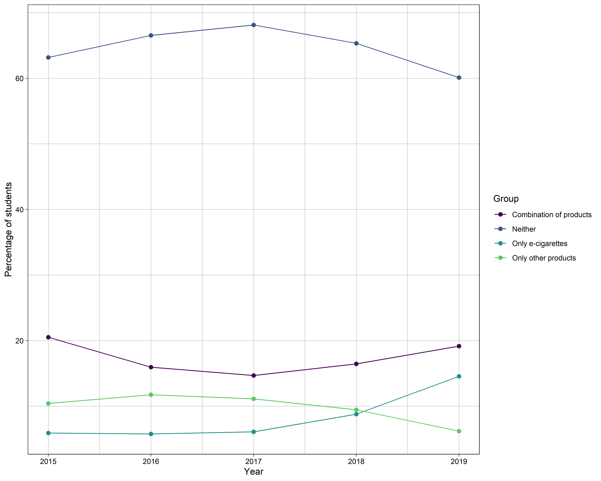</p>
<p>We can see that the majority of students did not report using any tobacco products. Of the students that did report using tobacco products, the majority of the students used both e-cigarettes and some other tobacco product. Again, a much larger percentage reported using only e-cigarettes rather than only other tobacco products in 2019.</p>
<p>We will further explore the relationship between e-cigarette usage and other tobacco products a bit later in the case study.</p>
</div>
<div id="section-question-2" class="section level3">
<h3><strong>Question 2</strong></h3>
<hr />
<p>Now we want to look how e-cigarette smoking rates compare between males and females across time.</p>
<p>We will calculate the percent ever and current e-cigarette users for each year and sex category again using the <code>group_by()</code> function and the <code>summarize()</code> function. We will again use the <code>pivot_longer</code> function to convert our data to long format.</p>
<p>As discussed above, we acknowledge that while <a href="https://www.genderspectrum.org/quick-links/understanding-gender/" target="_blank">gender</a> and <a href="https://www.who.int/genomics/gender/en/index1.html" target="_blank">sex</a> are not actually binary, the data used in this analysis only contain information for groups of individuals who answered the survey questions as male or female. For individuals that have NA values, it is unclear if the question was not answered or if the individual identifies as non-binary. Because of this uncertainty, we will filter these individuals out.</p>
<div class="sourceCode" id="section-cb87"><pre class="sourceCode r"><code class="sourceCode r"><span id="cb87-1"><a href="#cb87-1"></a>v_colors =<span class="st">  </span><span class="kw">viridis</span>(<span class="dv">6</span>)[<span class="kw">c</span>(<span class="dv">1</span>, <span class="dv">4</span>)]</span>
<span id="cb87-2"><a href="#cb87-2"></a></span>
<span id="cb87-3"><a href="#cb87-3"></a>nyts_data <span class="op">%&gt;%</span></span>
<span id="cb87-4"><a href="#cb87-4"></a><span class="st">     </span><span class="kw">filter</span>(<span class="op">!</span><span class="kw">is.na</span>(Sex)) <span class="op">%&gt;%</span></span>
<span id="cb87-5"><a href="#cb87-5"></a><span class="st">     </span><span class="kw">group_by</span>(year, Sex) <span class="op">%&gt;%</span></span>
<span id="cb87-6"><a href="#cb87-6"></a><span class="st">     </span><span class="kw">summarize</span>(<span class="dt">Ever =</span> (<span class="kw">mean</span>(EELCIGT, <span class="dt">na.rm =</span> <span class="ot">TRUE</span>) <span class="op">*</span><span class="st"> </span><span class="dv">100</span>),</span>
<span id="cb87-7"><a href="#cb87-7"></a>               <span class="dt">Current =</span> (<span class="kw">mean</span>(CELCIGT, <span class="dt">na.rm =</span> <span class="ot">TRUE</span>) <span class="op">*</span><span class="st"> </span><span class="dv">100</span>)) <span class="op">%&gt;%</span></span>
<span id="cb87-8"><a href="#cb87-8"></a><span class="st">     </span><span class="kw">pivot_longer</span>(<span class="dt">cols =</span> Ever<span class="op">:</span>Current,</span>
<span id="cb87-9"><a href="#cb87-9"></a>                  <span class="dt">names_to =</span> <span class="st">&quot;User&quot;</span>,</span>
<span id="cb87-10"><a href="#cb87-10"></a>                  <span class="dt">values_to =</span> <span class="st">&quot;Percentage of students&quot;</span>) <span class="op">%&gt;%</span></span>
<span id="cb87-11"><a href="#cb87-11"></a><span class="st">     </span><span class="kw">head</span>()</span></code></pre></div>
<pre><code># A tibble: 6 x 4
# Groups:   year [2]
   year Sex    User    `Percentage of students`
  &lt;dbl&gt; &lt;fct&gt;  &lt;chr&gt;                      &lt;dbl&gt;
1  2015 male   Ever                       29.3 
2  2015 male   Current                    13.3 
3  2015 female Ever                       24.3 
4  2015 female Current                     9.05
5  2016 male   Ever                       24.1 
6  2016 male   Current                     8.72</code></pre>
<div class="sourceCode" id="section-cb89"><pre class="sourceCode r"><code class="sourceCode r"><span id="cb89-1"><a href="#cb89-1"></a>plot2 &lt;-<span class="st"> </span>nyts_data <span class="op">%&gt;%</span></span>
<span id="cb89-2"><a href="#cb89-2"></a><span class="st">     </span><span class="kw">filter</span>(<span class="op">!</span><span class="kw">is.na</span>(Sex)) <span class="op">%&gt;%</span></span>
<span id="cb89-3"><a href="#cb89-3"></a><span class="st">     </span><span class="kw">group_by</span>(year, Sex) <span class="op">%&gt;%</span></span>
<span id="cb89-4"><a href="#cb89-4"></a><span class="st">     </span><span class="kw">summarize</span>(<span class="dt">Ever =</span> (<span class="kw">mean</span>(EELCIGT, <span class="dt">na.rm =</span> <span class="ot">TRUE</span>) <span class="op">*</span><span class="st"> </span><span class="dv">100</span>),</span>
<span id="cb89-5"><a href="#cb89-5"></a>               <span class="dt">Current =</span> (<span class="kw">mean</span>(CELCIGT, <span class="dt">na.rm =</span> <span class="ot">TRUE</span>) <span class="op">*</span><span class="st"> </span><span class="dv">100</span>)) <span class="op">%&gt;%</span></span>
<span id="cb89-6"><a href="#cb89-6"></a><span class="st">     </span><span class="kw">pivot_longer</span>(<span class="dt">cols =</span> Ever<span class="op">:</span>Current,</span>
<span id="cb89-7"><a href="#cb89-7"></a>                  <span class="dt">names_to =</span> <span class="st">&quot;User&quot;</span>,</span>
<span id="cb89-8"><a href="#cb89-8"></a>                  <span class="dt">values_to =</span> <span class="st">&quot;Percentage of students&quot;</span>) <span class="op">%&gt;%</span></span>
<span id="cb89-9"><a href="#cb89-9"></a><span class="st">    </span><span class="kw">ggplot</span>(<span class="kw">aes</span>(<span class="dt">x =</span> year, <span class="dt">y =</span> <span class="st">`</span><span class="dt">Percentage of students</span><span class="st">`</span>, <span class="dt">color =</span> Sex)) <span class="op">+</span></span>
<span id="cb89-10"><a href="#cb89-10"></a><span class="st">    </span><span class="kw">geom_line</span>(<span class="kw">aes</span>(<span class="dt">linetype =</span> User)) <span class="op">+</span></span>
<span id="cb89-11"><a href="#cb89-11"></a><span class="st">    </span><span class="kw">geom_point</span>(<span class="dt">show.legend =</span> <span class="ot">FALSE</span>, <span class="dt">size =</span> <span class="dv">2</span>) <span class="op">+</span></span>
<span id="cb89-12"><a href="#cb89-12"></a><span class="st">    </span><span class="kw">scale_linetype_manual</span>(<span class="dt">values =</span> <span class="kw">c</span>(<span class="dv">2</span>, <span class="dv">1</span>)) <span class="op">+</span></span>
<span id="cb89-13"><a href="#cb89-13"></a><span class="st">    </span><span class="kw">scale_color_manual</span>(<span class="dt">values =</span> v_colors) <span class="op">+</span></span>
<span id="cb89-14"><a href="#cb89-14"></a><span class="st">    </span><span class="kw">theme_linedraw</span>() <span class="op">+</span></span>
<span id="cb89-15"><a href="#cb89-15"></a><span class="st">    </span><span class="kw">theme</span>(<span class="dt">legend.position =</span> <span class="st">&quot;bottom&quot;</span>,</span>
<span id="cb89-16"><a href="#cb89-16"></a>          <span class="dt">axis.title.x =</span> <span class="kw">element_blank</span>()) <span class="op">+</span></span>
<span id="cb89-17"><a href="#cb89-17"></a><span class="st">    </span><span class="kw">labs</span>(<span class="dt">title =</span> <span class="st">&quot;How does e-cigarette usage compare between males and females?&quot;</span>,</span>
<span id="cb89-18"><a href="#cb89-18"></a>         <span class="dt">subtitle =</span> <span class="st">&quot;Current and ever users by sex&quot;</span>,</span>
<span id="cb89-19"><a href="#cb89-19"></a>         <span class="dt">y =</span> <span class="st">&quot;% of students&quot;</span>)</span>
<span id="cb89-20"><a href="#cb89-20"></a></span>
<span id="cb89-21"><a href="#cb89-21"></a>plot2</span></code></pre></div>
<p>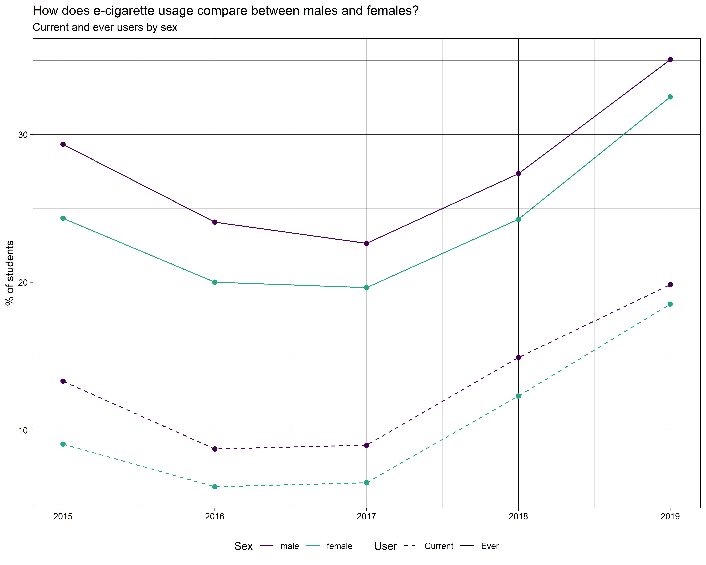</p>
<p>It looks like the rates are fairly similar between the sexes, however the rate for males appears to be consistently higher across time.</p>
</div>
<div id="section-question-3" class="section level3">
<h3><strong>Question 3</strong></h3>
<hr />
<p>We are also interested in what vaping brands and flavors appear to be used the most frequently. Only the 2019 dataset has this information. Therefore, we will filter for just this year using the <code>filter()</code> function of the <code>dplyr</code> package. We will use the <code>summarize()</code> function slightly differently this time, to calculate the total number of students using each brand using the <code>n()</code> function and the <code>sum()</code> function to calculate the percent for each brand based on the counts. We will also reorder the factor levels for the brand names so that they are in descending order of percent use, using the <code>fct_reorder()</code> function from <code>dplyr</code>. This will make them appear in decreasing order of percent use on the plot.</p>
<p>We will make a bar plot this time by using <code>geom_bar</code>. Importantly we assign the <code>stat</code> argument to <code>identity</code>, so that we are using the percentages that we calculated not the counts which is what is used by default. When color in specified outside of the <code>aes()</code> argument, this determines the border color of the bars, which in this case will be black.</p>
<div class="sourceCode" id="section-cb90"><pre class="sourceCode r"><code class="sourceCode r"><span id="cb90-1"><a href="#cb90-1"></a>nyts_data <span class="op">%&gt;%</span></span>
<span id="cb90-2"><a href="#cb90-2"></a><span class="st">  </span><span class="kw">filter</span>(year <span class="op">==</span><span class="st"> </span><span class="dv">2019</span>) <span class="op">%&gt;%</span></span>
<span id="cb90-3"><a href="#cb90-3"></a><span class="st">  </span><span class="kw">group_by</span>(brand_ecig) <span class="op">%&gt;%</span></span>
<span id="cb90-4"><a href="#cb90-4"></a><span class="st">  </span><span class="kw">filter</span>(<span class="op">!</span><span class="kw">is.na</span>(brand_ecig)) <span class="op">%&gt;%</span></span>
<span id="cb90-5"><a href="#cb90-5"></a><span class="st">  </span><span class="kw">summarize</span>(<span class="dt">n =</span> <span class="kw">n</span>()) <span class="op">%&gt;%</span></span>
<span id="cb90-6"><a href="#cb90-6"></a><span class="st">  </span><span class="kw">mutate</span>(<span class="dt">total =</span> <span class="kw">sum</span>(n),</span>
<span id="cb90-7"><a href="#cb90-7"></a>         <span class="dt">Percent =</span> n <span class="op">*</span><span class="st"> </span><span class="dv">100</span> <span class="op">/</span><span class="st"> </span>total) <span class="op">%&gt;%</span></span>
<span id="cb90-8"><a href="#cb90-8"></a><span class="st">  </span><span class="kw">mutate</span>(<span class="dt">brand_ecig =</span> <span class="kw">fct_reorder</span>(brand_ecig, <span class="kw">desc</span>(Percent)))</span></code></pre></div>
<pre><code># A tibble: 7 x 4
  brand_ecig     n total Percent
  &lt;fct&gt;      &lt;int&gt; &lt;int&gt;   &lt;dbl&gt;
1 Blu          111  3604   3.08 
2 JUUL        2028  3604  56.3  
3 Logic         36  3604   0.999
4 MarkTen       32  3604   0.888
5 NJOY          44  3604   1.22 
6 Other       1253  3604  34.8  
7 Vuse         100  3604   2.77 </code></pre>
<div class="sourceCode" id="section-cb92"><pre class="sourceCode r"><code class="sourceCode r"><span id="cb92-1"><a href="#cb92-1"></a>plot3 &lt;-<span class="st"> </span>nyts_data <span class="op">%&gt;%</span></span>
<span id="cb92-2"><a href="#cb92-2"></a><span class="st">  </span><span class="kw">filter</span>(year <span class="op">==</span><span class="st"> </span><span class="dv">2019</span>) <span class="op">%&gt;%</span></span>
<span id="cb92-3"><a href="#cb92-3"></a><span class="st">  </span><span class="kw">group_by</span>(brand_ecig) <span class="op">%&gt;%</span></span>
<span id="cb92-4"><a href="#cb92-4"></a><span class="st">  </span><span class="kw">filter</span>(<span class="op">!</span><span class="kw">is.na</span>(brand_ecig)) <span class="op">%&gt;%</span></span>
<span id="cb92-5"><a href="#cb92-5"></a><span class="st">  </span><span class="kw">summarize</span>(<span class="dt">n =</span> <span class="kw">n</span>()) <span class="op">%&gt;%</span></span>
<span id="cb92-6"><a href="#cb92-6"></a><span class="st">  </span><span class="kw">mutate</span>(<span class="dt">total =</span> <span class="kw">sum</span>(n),</span>
<span id="cb92-7"><a href="#cb92-7"></a>         <span class="dt">Percent =</span> n <span class="op">*</span><span class="st"> </span><span class="dv">100</span> <span class="op">/</span><span class="st"> </span>total) <span class="op">%&gt;%</span></span>
<span id="cb92-8"><a href="#cb92-8"></a><span class="st">  </span><span class="kw">mutate</span>(<span class="dt">brand_ecig =</span> <span class="kw">fct_reorder</span>(brand_ecig, <span class="kw">desc</span>(Percent))) <span class="op">%&gt;%</span></span>
<span id="cb92-9"><a href="#cb92-9"></a><span class="st">  </span><span class="kw">ggplot</span>(<span class="kw">aes</span>(<span class="dt">x =</span> brand_ecig, <span class="dt">y =</span> Percent, <span class="dt">fill =</span> brand_ecig)) <span class="op">+</span></span>
<span id="cb92-10"><a href="#cb92-10"></a><span class="st">  </span><span class="kw">geom_bar</span>(<span class="dt">stat =</span> <span class="st">&quot;identity&quot;</span>, <span class="dt">color =</span> <span class="st">&quot;black&quot;</span>) <span class="op">+</span></span>
<span id="cb92-11"><a href="#cb92-11"></a><span class="st">  </span><span class="kw">theme_linedraw</span>() <span class="op">+</span></span>
<span id="cb92-12"><a href="#cb92-12"></a><span class="st">  </span><span class="kw">theme</span>(</span>
<span id="cb92-13"><a href="#cb92-13"></a>    <span class="dt">legend.position =</span> <span class="st">&quot;none&quot;</span>,</span>
<span id="cb92-14"><a href="#cb92-14"></a>    <span class="dt">axis.text.x =</span> <span class="kw">element_text</span>(<span class="dt">size =</span> <span class="dv">10</span>),</span>
<span id="cb92-15"><a href="#cb92-15"></a>    <span class="dt">axis.title.x =</span> <span class="kw">element_blank</span>()</span>
<span id="cb92-16"><a href="#cb92-16"></a>  ) <span class="op">+</span></span>
<span id="cb92-17"><a href="#cb92-17"></a><span class="st">  </span><span class="kw">labs</span>(<span class="dt">title =</span> <span class="st">&quot;What vaping brands appear to be used the most frequently?&quot;</span>,</span>
<span id="cb92-18"><a href="#cb92-18"></a>       <span class="dt">subtitle =</span> <span class="st">&quot;Brand of e-cigarette most frequently used in the last 30 days (2019)&quot;</span>,</span>
<span id="cb92-19"><a href="#cb92-19"></a>       <span class="dt">y =</span> <span class="st">&quot;% of e-cigarette users responding&quot;</span>)</span>
<span id="cb92-20"><a href="#cb92-20"></a></span>
<span id="cb92-21"><a href="#cb92-21"></a>plot3</span></code></pre></div>
<p>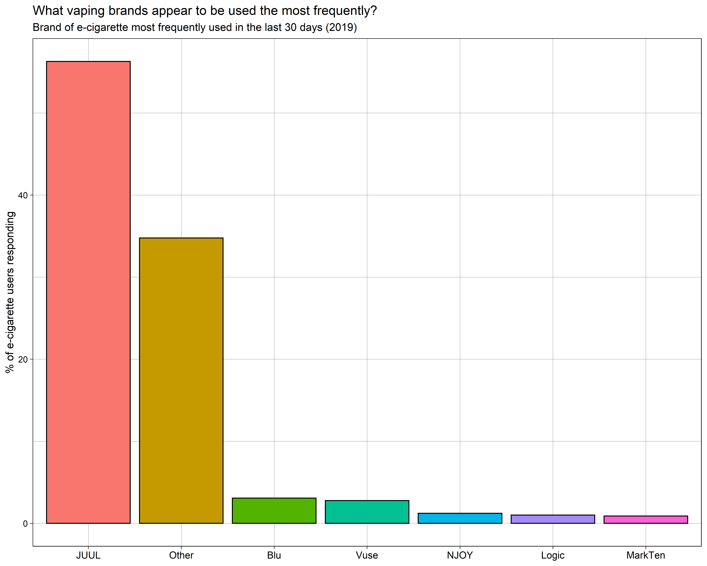</p>
<p>Juul appears to be the most widely used brand. This is in agreement with a recent <a href="https://tobaccocontrol.bmj.com/content/tobaccocontrol/28/2/146.full.pdf">article</a>, whose most recent data was from 2017:</p>
<div class="figure" style="text-align: center">

<p class="caption">
Huang J, Duan Z, Kwok J, et al. Tob Control 2019;28:146–151.
</p>
</div>
<p>We are also interested in how the usage of different flavors has changed over time.</p>
<p>To evaluate this we will calculate the percentage of students using each flavor each year - this includes usage of any type of flavored tobacco product. We will exclude 2015 data, as no specific flavor questions were asked at that time.</p>
<p>Recall that <code>NA</code> values are not included in calculating the total count for our percentages. However all of these flavor questions had complete reporting and did not have <code>NA</code> values. Therefore, these values reflect the percentage of students reporting using a particular favor out of all students surveyed (including those that did not use any tobacco products). Also students were allowed to select more than one flavor. You can see whether these variables had complete reporting by checking the <code>NA</code> values using the base <code>summary</code> function. Alternatively you can create a visual representation using the <code>vis_miss()</code> function of the <code>naniar</code> package.</p>
<div id="section-section-23" class="section level4 scrollable">
<h4></h4>
<div class="sourceCode" id="section-cb93"><pre class="sourceCode r"><code class="sourceCode r"><span id="cb93-1"><a href="#cb93-1"></a><span class="co"># Scroll through the output!</span></span>
<span id="cb93-2"><a href="#cb93-2"></a>nyts_data <span class="op">%&gt;%</span></span>
<span id="cb93-3"><a href="#cb93-3"></a><span class="st">  </span><span class="kw">filter</span>(year <span class="op">!=</span><span class="st"> </span><span class="dv">2015</span>) <span class="op">%&gt;%</span></span>
<span id="cb93-4"><a href="#cb93-4"></a><span class="st">  </span><span class="kw">summary</span>()</span></code></pre></div>
<pre><code>      year          psu                finwgt          stratum         
 Min.   :2016   Length:77754       Min.   :  11.15   Length:77754      
 1st Qu.:2016   Class :character   1st Qu.: 681.08   Class :character  
 Median :2018   Mode  :character   Median :1113.83   Mode  :character  
 Mean   :2017                      Mean   :1394.51                     
 3rd Qu.:2018                      3rd Qu.:1748.80                     
 Max.   :2019                      Max.   :6505.08                     
                                                                       
      Age            Sex            Grade         ECIGT           ECIGAR       
 13     :11781   male  :39191   7      :11978   Mode :logical   Mode :logical  
 14     :11301   female:37916   6      :11606   FALSE:63138     FALSE:65345    
 12     :11045   .N    :    0   8      :11528   TRUE :13463     TRUE :11066    
 15     :10963   NA&#39;s  :  647   9      :11049   NA&#39;s :1153      NA&#39;s :1343     
 16     :10765                  10     :10609                                  
 (Other):21551                  (Other):20597                                  
 NA&#39;s   :  348                  NA&#39;s   :  387                                  
    ESLT          EELCIGT        EROLLCIGTS      EFLAVCIGTS       EBIDIS       
 Mode :logical   Mode :logical   Mode :logical   Mode:logical   Mode :logical  
 FALSE:71048     FALSE:56690     FALSE:71966     NA&#39;s:77754     FALSE:74618    
 TRUE :5202      TRUE :19660     TRUE :3574                     TRUE :911      
 NA&#39;s :1504      NA&#39;s :1404      NA&#39;s :2214                     NA&#39;s :2225     
                                                                               
                                                                               
                                                                               
 EFLAVCIGAR       EHOOKAH          EPIPE           ESNUS        
 Mode :logical   Mode :logical   Mode :logical   Mode :logical  
 FALSE:18012     FALSE:69763     FALSE:73760     FALSE:72777    
 TRUE :1889      TRUE :6318      TRUE :1768      TRUE :2751     
 NA&#39;s :57853     NA&#39;s :1673      NA&#39;s :2226      NA&#39;s :2226     
                                                                
                                                                
                                                                
  EDISSOLV         CCIGT           CCIGAR           CSLT        
 Mode :logical   Mode :logical   Mode :logical   Mode :logical  
 FALSE:74560     FALSE:72481     FALSE:72261     FALSE:73719    
 TRUE :970       TRUE :3797      TRUE :4017      TRUE :2190     
 NA&#39;s :2224      NA&#39;s :1476      NA&#39;s :1476      NA&#39;s :1845     
                                                                
                                                                
                                                                
  CELCIGT        CROLLCIGTS      CFLAVCIGTS       CBIDIS         CHOOKAH       
 Mode :logical   Mode :logical   Mode:logical   Mode :logical   Mode :logical  
 FALSE:67314     FALSE:73864     NA&#39;s:77754     FALSE:75102     FALSE:73573    
 TRUE :9205      TRUE :1608                     TRUE :381       TRUE :2282     
 NA&#39;s :1235      NA&#39;s :2282                     NA&#39;s :2271      NA&#39;s :1899     
                                                                               
                                                                               
                                                                               
   CPIPE           CSNUS          CDISSOLV        menthol       
 Mode :logical   Mode :logical   Mode :logical   Mode :logical  
 FALSE:74796     FALSE:74402     FALSE:75048     FALSE:73305    
 TRUE :664       TRUE :1066      TRUE :423       TRUE :4449     
 NA&#39;s :2294      NA&#39;s :2286      NA&#39;s :2283                     
                                                                
                                                                
                                                                
 clove_spice       fruit         chocolate       alcoholic_drink
 Mode :logical   Mode :logical   Mode :logical   Mode :logical  
 FALSE:77360     FALSE:71945     FALSE:76875     FALSE:76510    
 TRUE :394       TRUE :5809      TRUE :879       TRUE :1244     
                                                                
                                                                
                                                                
                                                                
 candy_dessert_sweets   other            EHTP            CHTP        
 Mode :logical        Mode :logical   Mode :logical   Mode :logical  
 FALSE:74188          FALSE:75675     FALSE:16633     FALSE:18582    
 TRUE :3566           TRUE :2079      TRUE :398       TRUE :291      
                                      NA&#39;s :60723     NA&#39;s :58881    
                                                                     
                                                                     
                                                                     
  brand_ecig        tobacco_sum_ever  tobacco_sum_current tobacco_ever   
 Length:77754       Min.   : 0.0000   Min.   : 0.0000     Mode :logical  
 Class :character   1st Qu.: 0.0000   1st Qu.: 0.0000     FALSE:50602    
 Mode  :character   Median : 0.0000   Median : 0.0000     TRUE :27152    
                    Mean   : 0.8742   Mean   : 0.3334                    
                    3rd Qu.: 1.0000   3rd Qu.: 0.0000                    
                    Max.   :11.0000   Max.   :11.0000                    
                                                                         
 tobacco_current ecig_sum_ever    ecig_sum_current non_ecig_sum_ever
 Mode :logical   Min.   :0.0000   Min.   :0.0000   Min.   : 0.0000  
 FALSE:64229     1st Qu.:0.0000   1st Qu.:0.0000   1st Qu.: 0.0000  
 TRUE :13525     Median :0.0000   Median :0.0000   Median : 0.0000  
                 Mean   :0.2528   Mean   :0.1184   Mean   : 0.6213  
                 3rd Qu.:1.0000   3rd Qu.:0.0000   3rd Qu.: 1.0000  
                 Max.   :1.0000   Max.   :1.0000   Max.   :10.0000  
                                                                    
 non_ecig_sum_current ecig_ever       ecig_current    non_ecig_ever  
 Min.   : 0.000       Mode :logical   Mode :logical   Mode :logical  
 1st Qu.: 0.000       FALSE:58094     FALSE:68549     FALSE:57436    
 Median : 0.000       TRUE :19660     TRUE :9205      TRUE :20318    
 Mean   : 0.215                                                      
 3rd Qu.: 0.000                                                      
 Max.   :10.000                                                      
                                                                     
 non_ecig_current ecig_only_ever  ecig_only_current non_ecig_only_ever
 Mode :logical    Mode :logical   Mode :logical     Mode :logical     
 FALSE:69182      FALSE:73369     FALSE:75318       FALSE:72687       
 TRUE :8572       TRUE :4385      TRUE :2436        TRUE :5067        
                                                                      
                                                                      
                                                                      
                                                                      
 non_ecig_only_current   no_use           Group                 n        
 Mode :logical         Mode :logical   Length:77754       Min.   :17872  
 FALSE:75321           FALSE:27204     Class :character   1st Qu.:19018  
 TRUE :2433            TRUE :50550     Mode  :character   Median :20189  
                                                          Mean   :19499  
                                                          3rd Qu.:20675  
                                                          Max.   :20675  
                                                                         </code></pre>
</div>
<div id="section-section-24" class="section level4">
<h4></h4>
<div class="sourceCode" id="section-cb95"><pre class="sourceCode r"><code class="sourceCode r"><span id="cb95-1"><a href="#cb95-1"></a>nyts_data <span class="op">%&gt;%</span></span>
<span id="cb95-2"><a href="#cb95-2"></a><span class="st">  </span><span class="kw">filter</span>(year <span class="op">!=</span><span class="st"> </span><span class="dv">2015</span>) <span class="op">%&gt;%</span></span>
<span id="cb95-3"><a href="#cb95-3"></a><span class="st">  </span><span class="kw">select</span>(menthol<span class="op">:</span>alcoholic_drink) <span class="op">%&gt;%</span></span>
<span id="cb95-4"><a href="#cb95-4"></a><span class="st">  </span><span class="kw">vis_miss</span>()</span></code></pre></div>
<p>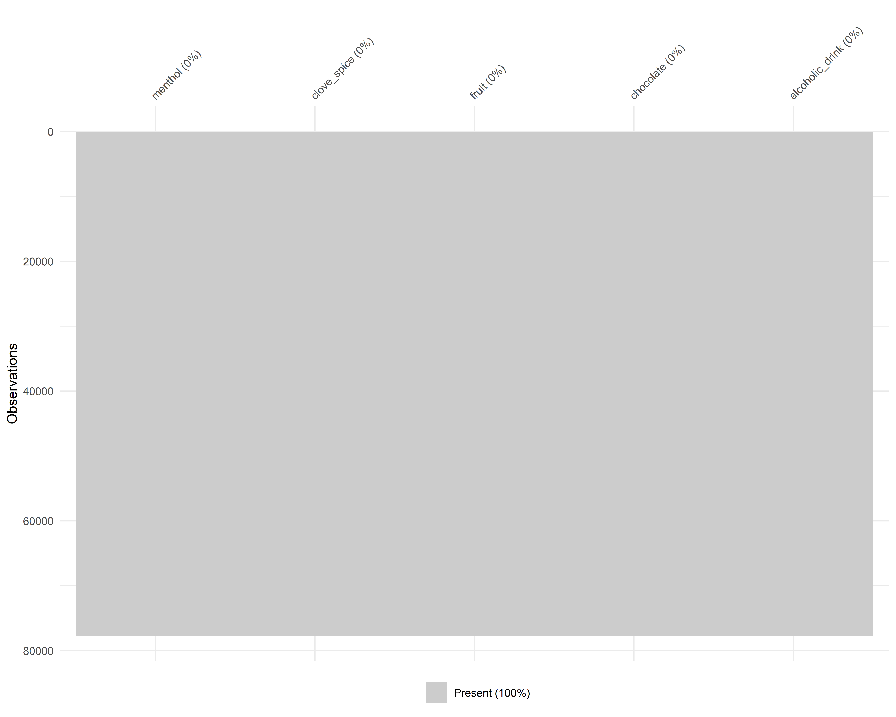</p>
<p>The plot above confirms that these variables have no <code>NA</code> values (because all fields indicate 100% of data is present).</p>
<div class="sourceCode" id="section-cb96"><pre class="sourceCode r"><code class="sourceCode r"><span id="cb96-1"><a href="#cb96-1"></a>plot4 &lt;-<span class="st"> </span>nyts_data <span class="op">%&gt;%</span></span>
<span id="cb96-2"><a href="#cb96-2"></a><span class="st">  </span><span class="kw">filter</span>(year <span class="op">!=</span><span class="st"> </span><span class="dv">2015</span>) <span class="op">%&gt;%</span></span>
<span id="cb96-3"><a href="#cb96-3"></a><span class="st">  </span><span class="kw">group_by</span>(year) <span class="op">%&gt;%</span></span>
<span id="cb96-4"><a href="#cb96-4"></a><span class="st">      </span><span class="kw">summarize</span>(<span class="dt">Menthol =</span> (<span class="kw">mean</span>(menthol) <span class="op">*</span><span class="st"> </span><span class="dv">100</span>),</span>
<span id="cb96-5"><a href="#cb96-5"></a>       <span class="st">`</span><span class="dt">Clove or Spice</span><span class="st">`</span> =<span class="st"> </span>(<span class="kw">mean</span>(clove_spice) <span class="op">*</span><span class="st"> </span><span class="dv">100</span>),</span>
<span id="cb96-6"><a href="#cb96-6"></a>                  <span class="dt">Fruit =</span> (<span class="kw">mean</span>(fruit) <span class="op">*</span><span class="st"> </span><span class="dv">100</span>),</span>
<span id="cb96-7"><a href="#cb96-7"></a>              <span class="dt">Chocolate =</span> (<span class="kw">mean</span>(chocolate) <span class="op">*</span><span class="st"> </span><span class="dv">100</span>),</span>
<span id="cb96-8"><a href="#cb96-8"></a>      <span class="st">`</span><span class="dt">Alcoholic Drink</span><span class="st">`</span> =<span class="st"> </span>(<span class="kw">mean</span>(alcoholic_drink) <span class="op">*</span><span class="st"> </span><span class="dv">100</span>),</span>
<span id="cb96-9"><a href="#cb96-9"></a><span class="st">`</span><span class="dt">Candy/Desserts/Sweets</span><span class="st">`</span> =<span class="st"> </span>(<span class="kw">mean</span>(candy_dessert_sweets) <span class="op">*</span><span class="st"> </span><span class="dv">100</span>),</span>
<span id="cb96-10"><a href="#cb96-10"></a>                  <span class="dt">Other =</span> (<span class="kw">mean</span>(other) <span class="op">*</span><span class="st"> </span><span class="dv">100</span>)) <span class="op">%&gt;%</span></span>
<span id="cb96-11"><a href="#cb96-11"></a><span class="st">      </span><span class="kw">pivot_longer</span>(<span class="dt">cols =</span> <span class="op">-</span>year, </span>
<span id="cb96-12"><a href="#cb96-12"></a>               <span class="dt">names_to =</span> <span class="st">&quot;Flavor&quot;</span>,</span>
<span id="cb96-13"><a href="#cb96-13"></a>              <span class="dt">values_to =</span> <span class="st">&quot;Percentage of students&quot;</span>) <span class="op">%&gt;%</span></span>
<span id="cb96-14"><a href="#cb96-14"></a><span class="st">  </span><span class="kw">rename</span>(<span class="dt">Year =</span> year) <span class="op">%&gt;%</span></span>
<span id="cb96-15"><a href="#cb96-15"></a></span>
<span id="cb96-16"><a href="#cb96-16"></a><span class="st"> </span><span class="kw">ggplot</span>(<span class="kw">aes</span>(<span class="dt">y =</span> <span class="st">`</span><span class="dt">Percentage of students</span><span class="st">`</span>,</span>
<span id="cb96-17"><a href="#cb96-17"></a>            <span class="dt">x =</span> Year,</span>
<span id="cb96-18"><a href="#cb96-18"></a>            <span class="dt">fill =</span> <span class="kw">reorder</span>(Flavor, <span class="st">`</span><span class="dt">Percentage of students</span><span class="st">`</span>))) <span class="op">+</span></span>
<span id="cb96-19"><a href="#cb96-19"></a><span class="st">  </span><span class="kw">geom_bar</span>(<span class="dt">stat =</span> <span class="st">&quot;identity&quot;</span>,</span>
<span id="cb96-20"><a href="#cb96-20"></a>           <span class="dt">position =</span> <span class="st">&quot;dodge&quot;</span>,</span>
<span id="cb96-21"><a href="#cb96-21"></a>           <span class="dt">color =</span> <span class="st">&quot;black&quot;</span>) <span class="op">+</span></span>
<span id="cb96-22"><a href="#cb96-22"></a><span class="st">  </span><span class="kw">scale_fill_viridis</span>(<span class="dt">discrete =</span> <span class="ot">TRUE</span>) <span class="op">+</span></span>
<span id="cb96-23"><a href="#cb96-23"></a><span class="st">  </span><span class="kw">theme_linedraw</span>() <span class="op">+</span></span>
<span id="cb96-24"><a href="#cb96-24"></a><span class="st">  </span><span class="kw">guides</span>(<span class="dt">fill =</span> <span class="kw">guide_legend</span>(<span class="st">&quot;Flavor&quot;</span>)) <span class="op">+</span></span>
<span id="cb96-25"><a href="#cb96-25"></a><span class="st">  </span><span class="kw">labs</span>(<span class="dt">title =</span> <span class="st">&quot;What flavors appear to be used the most frequently?&quot;</span>,</span>
<span id="cb96-26"><a href="#cb96-26"></a>       <span class="dt">subtitle =</span> <span class="st">&quot;Flavors of tobacco products used in the past 30 days&quot;</span>)</span>
<span id="cb96-27"><a href="#cb96-27"></a></span>
<span id="cb96-28"><a href="#cb96-28"></a>plot4</span></code></pre></div>
<p>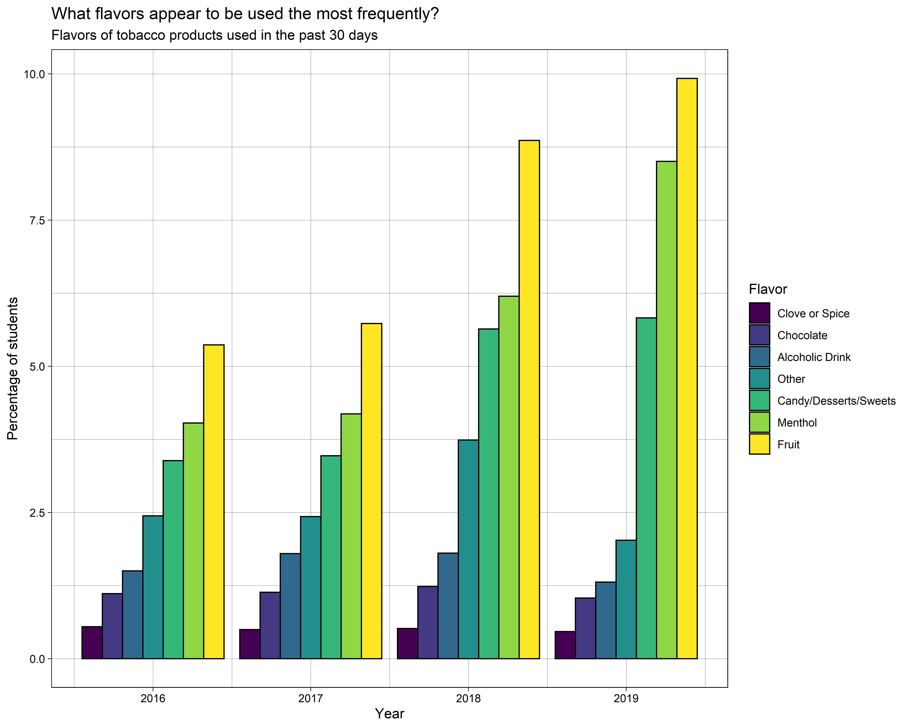</p>
<p>From this plot, we can see that fruit flavors are the most widely used products, followed by menthol or mint flavored products. We can also see that there was a general increase in the usage of flavored products over time.</p>
<p>We will now look specifically at the usage of flavored e-cigarette products vs other flavored tobacco products.</p>
<p>Recall that we made a variable called <code>Group</code> that identified students who used either just e-cigarette/vaping products, just other tobacco products (besides e-cigarettes), or students who used both e-cigarettes and some other type of tobacco product. We will compare the usage of these flavors for these different groups. We also perform some data summaries to decide how to order the panels (flavors) for display.</p>
<div class="sourceCode" id="section-cb97"><pre class="sourceCode r"><code class="sourceCode r"><span id="cb97-1"><a href="#cb97-1"></a>v_colors =<span class="st">  </span><span class="kw">viridis</span>(<span class="dv">5</span>)[<span class="dv">1</span><span class="op">:</span><span class="dv">4</span>]</span>
<span id="cb97-2"><a href="#cb97-2"></a></span>
<span id="cb97-3"><a href="#cb97-3"></a>plot5 &lt;-<span class="st"> </span>nyts_data <span class="op">%&gt;%</span></span>
<span id="cb97-4"><a href="#cb97-4"></a><span class="st">  </span><span class="kw">filter</span>(year <span class="op">!=</span><span class="st"> </span><span class="dv">2015</span>) <span class="op">%&gt;%</span></span>
<span id="cb97-5"><a href="#cb97-5"></a><span class="st">  </span><span class="kw">group_by</span>(year, Group) <span class="op">%&gt;%</span></span>
<span id="cb97-6"><a href="#cb97-6"></a><span class="st">        </span><span class="kw">summarize</span>(<span class="dt">Menthol =</span> (<span class="kw">mean</span>(menthol) <span class="op">*</span><span class="st"> </span><span class="dv">100</span>),</span>
<span id="cb97-7"><a href="#cb97-7"></a>         <span class="st">`</span><span class="dt">Clove or Spice</span><span class="st">`</span> =<span class="st"> </span>(<span class="kw">mean</span>(clove_spice) <span class="op">*</span><span class="st"> </span><span class="dv">100</span>),</span>
<span id="cb97-8"><a href="#cb97-8"></a>                    <span class="dt">Fruit =</span> (<span class="kw">mean</span>(fruit) <span class="op">*</span><span class="st"> </span><span class="dv">100</span>),</span>
<span id="cb97-9"><a href="#cb97-9"></a>                <span class="dt">Chocolate =</span> (<span class="kw">mean</span>(chocolate) <span class="op">*</span><span class="st"> </span><span class="dv">100</span>),</span>
<span id="cb97-10"><a href="#cb97-10"></a>        <span class="st">`</span><span class="dt">Alcoholic Drink</span><span class="st">`</span> =<span class="st"> </span>(<span class="kw">mean</span>(alcoholic_drink) <span class="op">*</span><span class="st"> </span><span class="dv">100</span>),</span>
<span id="cb97-11"><a href="#cb97-11"></a><span class="st">`</span><span class="dt">Candy/Desserts/</span><span class="ch">\n</span><span class="dt">Sweets</span><span class="st">`</span> =<span class="st"> </span>(<span class="kw">mean</span>(candy_dessert_sweets) <span class="op">*</span><span class="st"> </span><span class="dv">100</span>),</span>
<span id="cb97-12"><a href="#cb97-12"></a>                    <span class="dt">Other =</span> (<span class="kw">mean</span>(other) <span class="op">*</span><span class="st"> </span><span class="dv">100</span>),</span>
<span id="cb97-13"><a href="#cb97-13"></a>              <span class="dt">Respondents =</span> <span class="kw">n</span>()) <span class="op">%&gt;%</span></span>
<span id="cb97-14"><a href="#cb97-14"></a><span class="st">  </span><span class="co"># converting columns between and including Menthol and Other to one column called Flavor</span></span>
<span id="cb97-15"><a href="#cb97-15"></a><span class="st">  </span><span class="kw">pivot_longer</span>(<span class="dt">cols =</span> Menthol<span class="op">:</span>Other, </span>
<span id="cb97-16"><a href="#cb97-16"></a>           <span class="dt">names_to =</span> <span class="st">&quot;Flavor&quot;</span>, </span>
<span id="cb97-17"><a href="#cb97-17"></a>          <span class="dt">values_to =</span> <span class="st">&quot;Percentage of students&quot;</span>) <span class="op">%&gt;%</span></span>
<span id="cb97-18"><a href="#cb97-18"></a><span class="st">  </span><span class="kw">group_by</span>(Flavor) <span class="op">%&gt;%</span></span>
<span id="cb97-19"><a href="#cb97-19"></a><span class="st">  </span><span class="co"># calculate the count of students in the year/group combination who used that flavor</span></span>
<span id="cb97-20"><a href="#cb97-20"></a><span class="st">  </span><span class="kw">mutate</span>(<span class="dt">affirmative =</span> (Respondents <span class="op">*</span><span class="st"> `</span><span class="dt">Percentage of students</span><span class="st">`</span>) <span class="op">/</span><span class="st"> </span><span class="dv">100</span>) <span class="op">%&gt;%</span></span>
<span id="cb97-21"><a href="#cb97-21"></a><span class="st">  </span><span class="co"># calculate the fraction of total respondents who used that flavor</span></span>
<span id="cb97-22"><a href="#cb97-22"></a><span class="st">  </span><span class="kw">mutate</span>(<span class="dt">flavor_mean =</span> <span class="kw">sum</span>(affirmative) <span class="op">/</span><span class="st"> </span><span class="kw">sum</span>(Respondents)) <span class="op">%&gt;%</span></span>
<span id="cb97-23"><a href="#cb97-23"></a><span class="st">  </span><span class="kw">ungroup</span>() <span class="op">%&gt;%</span></span>
<span id="cb97-24"><a href="#cb97-24"></a><span class="st">  </span><span class="co"># reorder the levels of Flavor to be in increasing order of percent of students</span></span>
<span id="cb97-25"><a href="#cb97-25"></a><span class="st">  </span><span class="kw">mutate</span>(<span class="dt">flavor_mean_rank =</span> <span class="kw">dense_rank</span>(flavor_mean),</span>
<span id="cb97-26"><a href="#cb97-26"></a>         <span class="dt">Flavor =</span> <span class="kw">fct_reorder</span>(Flavor, flavor_mean_rank)) <span class="op">%&gt;%</span></span>
<span id="cb97-27"><a href="#cb97-27"></a><span class="st">  </span><span class="kw">ggplot</span>(<span class="kw">aes</span>(<span class="dt">x =</span> year, </span>
<span id="cb97-28"><a href="#cb97-28"></a>             <span class="dt">y =</span> <span class="st">`</span><span class="dt">Percentage of students</span><span class="st">`</span>, </span>
<span id="cb97-29"><a href="#cb97-29"></a>         <span class="dt">color =</span> Group)) <span class="op">+</span></span>
<span id="cb97-30"><a href="#cb97-30"></a><span class="st">  </span><span class="kw">facet_grid</span>(<span class="op">~</span>Flavor) <span class="op">+</span></span>
<span id="cb97-31"><a href="#cb97-31"></a><span class="st">  </span><span class="kw">geom_line</span>() <span class="op">+</span></span>
<span id="cb97-32"><a href="#cb97-32"></a><span class="st">  </span><span class="kw">geom_point</span>(<span class="dt">show.legend =</span> <span class="ot">FALSE</span>, <span class="dt">size =</span> <span class="dv">2</span>) <span class="op">+</span></span>
<span id="cb97-33"><a href="#cb97-33"></a><span class="st">  </span><span class="kw">scale_color_manual</span>(<span class="dt">values =</span> v_colors) <span class="op">+</span></span>
<span id="cb97-34"><a href="#cb97-34"></a><span class="st">  </span><span class="kw">theme_linedraw</span>() <span class="op">+</span></span>
<span id="cb97-35"><a href="#cb97-35"></a><span class="st">  </span><span class="kw">theme</span>(<span class="dt">legend.position =</span> <span class="st">&quot;bottom&quot;</span>,</span>
<span id="cb97-36"><a href="#cb97-36"></a>        <span class="dt">axis.title.x =</span> <span class="kw">element_blank</span>(),</span>
<span id="cb97-37"><a href="#cb97-37"></a>        <span class="dt">axis.text.x =</span> <span class="kw">element_text</span>(<span class="dt">angle =</span> <span class="dv">90</span>),</span>
<span id="cb97-38"><a href="#cb97-38"></a>        <span class="dt">strip.text.x =</span> <span class="kw">element_text</span>(<span class="dt">size =</span> <span class="dv">10</span>, <span class="dt">face =</span> <span class="st">&quot;bold&quot;</span>)) <span class="op">+</span></span>
<span id="cb97-39"><a href="#cb97-39"></a><span class="st">  </span><span class="kw">labs</span>(<span class="dt">title =</span> <span class="st">&quot;Among different product users, what flavors are most frequently used?&quot;</span>)</span>
<span id="cb97-40"><a href="#cb97-40"></a></span>
<span id="cb97-41"><a href="#cb97-41"></a>plot5</span></code></pre></div>
<p>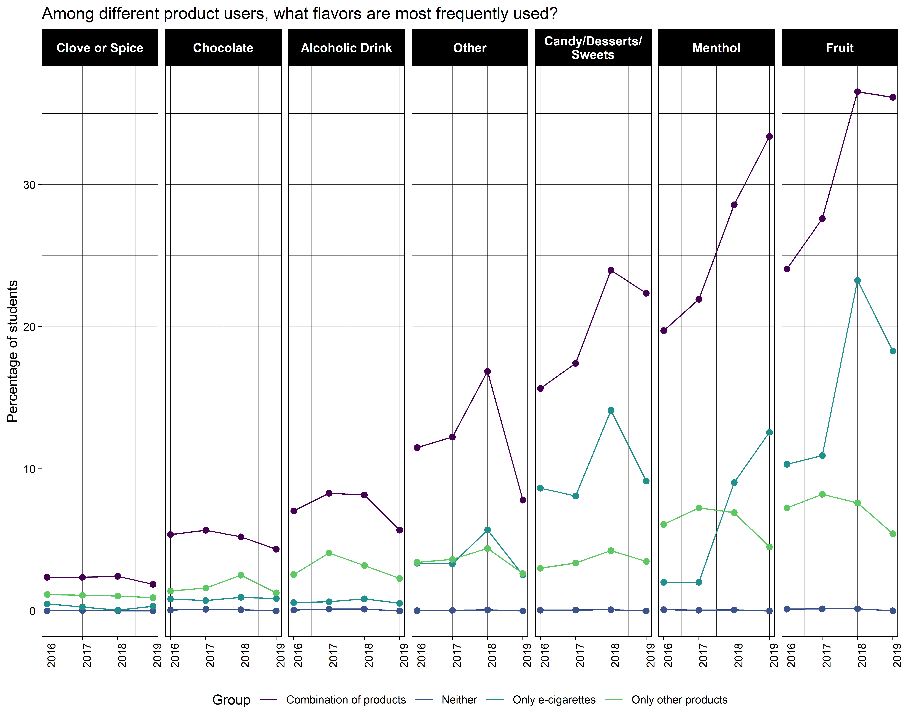</p>
<p>We can see from this plot that there has been an increase in the number of students reporting using flavored tobacco products. Users who use both e-cigarettes and other tobacco products appear to report using flavored products the most, followed by users who only use e-cigarettes.</p>
</div>
</div>
<div id="section-question-4" class="section level3">
<h3><strong>Question 4</strong></h3>
<hr />
<p>Is there a relationship between e-cigarette use and tobacco use? Now we will investigate the usage of e-cigarettes compared to other tobacco products in greater depth.</p>
<p>First let’s take a look at how e-cigarette usage and cigarette usage compare. We will select the data that specifically has to do with these products.</p>
<div class="sourceCode" id="section-cb98"><pre class="sourceCode r"><code class="sourceCode r"><span id="cb98-1"><a href="#cb98-1"></a>v_colors =<span class="st">  </span><span class="kw">viridis</span>(<span class="dv">6</span>)[<span class="kw">c</span>(<span class="dv">1</span>, <span class="dv">4</span>)]</span>
<span id="cb98-2"><a href="#cb98-2"></a></span>
<span id="cb98-3"><a href="#cb98-3"></a>nyts_data <span class="op">%&gt;%</span></span>
<span id="cb98-4"><a href="#cb98-4"></a><span class="st">    </span><span class="kw">group_by</span>(year) <span class="op">%&gt;%</span></span>
<span id="cb98-5"><a href="#cb98-5"></a><span class="st">    </span><span class="kw">summarize</span>(<span class="st">&quot;Cigarettes, Ever&quot;</span> =<span class="st"> </span>(<span class="kw">mean</span>(ECIGT, <span class="dt">na.rm =</span> <span class="ot">TRUE</span>) <span class="op">*</span><span class="st"> </span><span class="dv">100</span>),</span>
<span id="cb98-6"><a href="#cb98-6"></a>            <span class="st">&quot;E-cigarettes, Ever&quot;</span> =<span class="st"> </span>(<span class="kw">mean</span>(EELCIGT, <span class="dt">na.rm =</span> <span class="ot">TRUE</span>) <span class="op">*</span><span class="st"> </span><span class="dv">100</span>),</span>
<span id="cb98-7"><a href="#cb98-7"></a>           <span class="st">&quot;Cigarettes, Current&quot;</span> =<span class="st"> </span>(<span class="kw">mean</span>(CCIGT, <span class="dt">na.rm =</span> <span class="ot">TRUE</span>) <span class="op">*</span><span class="st"> </span><span class="dv">100</span>),</span>
<span id="cb98-8"><a href="#cb98-8"></a>         <span class="st">&quot;E-cigarettes, Current&quot;</span> =<span class="st"> </span>(<span class="kw">mean</span>(CELCIGT, <span class="dt">na.rm =</span> <span class="ot">TRUE</span>) <span class="op">*</span><span class="st"> </span><span class="dv">100</span>)) <span class="op">%&gt;%</span></span>
<span id="cb98-9"><a href="#cb98-9"></a><span class="st">    </span><span class="kw">pivot_longer</span>(<span class="dt">cols =</span> <span class="op">-</span><span class="st"> </span>year, </span>
<span id="cb98-10"><a href="#cb98-10"></a>             <span class="dt">names_to =</span> <span class="st">&quot;Category&quot;</span>, </span>
<span id="cb98-11"><a href="#cb98-11"></a>            <span class="dt">values_to =</span> <span class="st">&quot;Percentage of students&quot;</span>) <span class="op">%&gt;%</span></span>
<span id="cb98-12"><a href="#cb98-12"></a><span class="st">    </span><span class="kw">separate</span>(Category, <span class="dt">into =</span> <span class="kw">c</span>(<span class="st">&quot;Product&quot;</span>, <span class="st">&quot;User&quot;</span>), <span class="dt">sep =</span> <span class="st">&quot;, &quot;</span>) <span class="op">%&gt;%</span></span>
<span id="cb98-13"><a href="#cb98-13"></a><span class="st">    </span><span class="kw">head</span>()</span></code></pre></div>
<pre><code># A tibble: 6 x 4
   year Product      User    `Percentage of students`
  &lt;dbl&gt; &lt;chr&gt;        &lt;chr&gt;                      &lt;dbl&gt;
1  2015 Cigarettes   Ever                       21.3 
2  2015 E-cigarettes Ever                       26.9 
3  2015 Cigarettes   Current                     6.23
4  2015 E-cigarettes Current                    11.2 
5  2016 Cigarettes   Ever                       19.1 
6  2016 E-cigarettes Ever                       22.1 </code></pre>
<div class="sourceCode" id="section-cb100"><pre class="sourceCode r"><code class="sourceCode r"><span id="cb100-1"><a href="#cb100-1"></a>plot6 &lt;-<span class="st"> </span>nyts_data <span class="op">%&gt;%</span></span>
<span id="cb100-2"><a href="#cb100-2"></a><span class="st">  </span><span class="kw">group_by</span>(year) <span class="op">%&gt;%</span></span>
<span id="cb100-3"><a href="#cb100-3"></a><span class="st">  </span><span class="kw">summarize</span>(</span>
<span id="cb100-4"><a href="#cb100-4"></a>    <span class="st">&quot;Cigarettes, Ever&quot;</span> =<span class="st"> </span>(<span class="kw">mean</span>(ECIGT, <span class="dt">na.rm =</span> <span class="ot">TRUE</span>) <span class="op">*</span><span class="st"> </span><span class="dv">100</span>),</span>
<span id="cb100-5"><a href="#cb100-5"></a>    <span class="st">&quot;E-cigarettes, Ever&quot;</span> =<span class="st"> </span>(<span class="kw">mean</span>(EELCIGT, <span class="dt">na.rm =</span> <span class="ot">TRUE</span>) <span class="op">*</span><span class="st"> </span><span class="dv">100</span>),</span>
<span id="cb100-6"><a href="#cb100-6"></a>    <span class="st">&quot;Cigarettes, Current&quot;</span> =<span class="st"> </span>(<span class="kw">mean</span>(CCIGT, <span class="dt">na.rm =</span> <span class="ot">TRUE</span>) <span class="op">*</span><span class="st"> </span><span class="dv">100</span>),</span>
<span id="cb100-7"><a href="#cb100-7"></a>    <span class="st">&quot;E-cigarettes, Current&quot;</span> =<span class="st"> </span>(<span class="kw">mean</span>(CELCIGT, <span class="dt">na.rm =</span> <span class="ot">TRUE</span>) <span class="op">*</span><span class="st"> </span><span class="dv">100</span>)</span>
<span id="cb100-8"><a href="#cb100-8"></a>  ) <span class="op">%&gt;%</span></span>
<span id="cb100-9"><a href="#cb100-9"></a><span class="st">  </span><span class="kw">pivot_longer</span>(<span class="dt">cols =</span> <span class="op">-</span>year,</span>
<span id="cb100-10"><a href="#cb100-10"></a>               <span class="dt">names_to =</span> <span class="st">&quot;Category&quot;</span>,</span>
<span id="cb100-11"><a href="#cb100-11"></a>               <span class="dt">values_to =</span> <span class="st">&quot;Percentage of students&quot;</span>) <span class="op">%&gt;%</span></span>
<span id="cb100-12"><a href="#cb100-12"></a><span class="st">  </span><span class="kw">separate</span>(Category, <span class="dt">into =</span> <span class="kw">c</span>(<span class="st">&quot;Product&quot;</span>, <span class="st">&quot;User&quot;</span>), <span class="dt">sep =</span> <span class="st">&quot;, &quot;</span>) <span class="op">%&gt;%</span></span>
<span id="cb100-13"><a href="#cb100-13"></a><span class="st">  </span><span class="kw">ggplot</span>(<span class="kw">aes</span>(</span>
<span id="cb100-14"><a href="#cb100-14"></a>    <span class="dt">x =</span> year,</span>
<span id="cb100-15"><a href="#cb100-15"></a>    <span class="dt">y =</span> <span class="st">`</span><span class="dt">Percentage of students</span><span class="st">`</span>,</span>
<span id="cb100-16"><a href="#cb100-16"></a>    <span class="dt">color =</span> Product,</span>
<span id="cb100-17"><a href="#cb100-17"></a>    <span class="dt">linetype =</span> User</span>
<span id="cb100-18"><a href="#cb100-18"></a>  )) <span class="op">+</span></span>
<span id="cb100-19"><a href="#cb100-19"></a><span class="st">  </span><span class="kw">geom_line</span>() <span class="op">+</span></span>
<span id="cb100-20"><a href="#cb100-20"></a><span class="st">  </span><span class="kw">geom_point</span>(<span class="dt">show.legend =</span> <span class="ot">FALSE</span>, <span class="dt">size =</span> <span class="dv">2</span>) <span class="op">+</span></span>
<span id="cb100-21"><a href="#cb100-21"></a><span class="st">  </span><span class="kw">scale_linetype_manual</span>(<span class="dt">values =</span> <span class="kw">c</span>(<span class="dv">2</span>, <span class="dv">1</span>)) <span class="op">+</span></span>
<span id="cb100-22"><a href="#cb100-22"></a><span class="st">  </span><span class="kw">scale_color_manual</span>(<span class="dt">values =</span> v_colors) <span class="op">+</span></span>
<span id="cb100-23"><a href="#cb100-23"></a><span class="st">  </span><span class="kw">theme_linedraw</span>() <span class="op">+</span></span>
<span id="cb100-24"><a href="#cb100-24"></a><span class="st">  </span><span class="kw">theme</span>(<span class="dt">legend.position =</span> <span class="st">&quot;bottom&quot;</span>,</span>
<span id="cb100-25"><a href="#cb100-25"></a>        <span class="dt">axis.title.x =</span> <span class="kw">element_blank</span>()) <span class="op">+</span></span>
<span id="cb100-26"><a href="#cb100-26"></a><span class="st">  </span><span class="kw">labs</span>(<span class="dt">title =</span> <span class="st">&quot;How does e-cigarette use compare to cigarette use?&quot;</span>,</span>
<span id="cb100-27"><a href="#cb100-27"></a>       <span class="dt">subtitle =</span> <span class="st">&quot;Current and ever users of e-cigarettes and cigarettes&quot;</span>,</span>
<span id="cb100-28"><a href="#cb100-28"></a>       <span class="dt">y =</span> <span class="st">&quot;% of students&quot;</span>)</span>
<span id="cb100-29"><a href="#cb100-29"></a></span>
<span id="cb100-30"><a href="#cb100-30"></a>plot6</span></code></pre></div>
<p>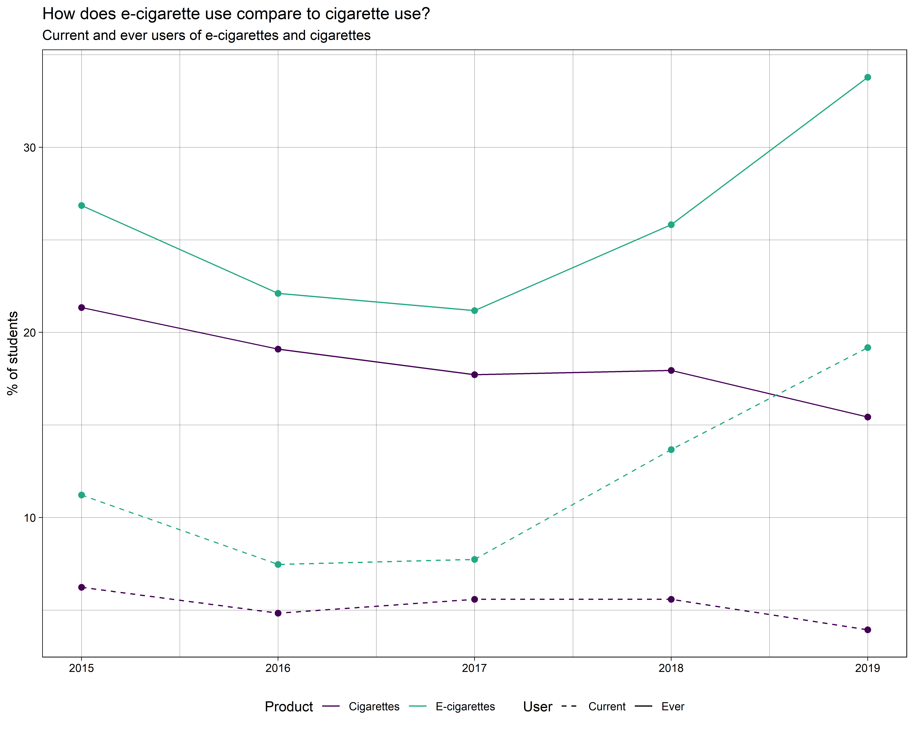</p>
<p>Interesting! we can see that in 2019 the percentage of students that reported currently using e-cigarettes had surpassed those that ever tried (even just once) a cigarette. Overall cigarette usage appears to be declining over time. This is not the case for e-cigarettes.</p>
<p>Now we will look at students who reported that they had ever tried e-cigarettes or non-cigarette products. In this case we will not separate out users who specifically only used one or the other. Therefore, the students included in this plot who reported as having ever tried e-cigarettes might also be current users of non-e-cigarette products or may have at least tried non-e-cigarette products.</p>
<div class="sourceCode" id="section-cb101"><pre class="sourceCode r"><code class="sourceCode r"><span id="cb101-1"><a href="#cb101-1"></a>v_colors =<span class="st">  </span><span class="kw">viridis</span>(<span class="dv">6</span>)[<span class="kw">c</span>(<span class="dv">1</span>, <span class="dv">4</span>)]</span>
<span id="cb101-2"><a href="#cb101-2"></a></span>
<span id="cb101-3"><a href="#cb101-3"></a>plot7 &lt;-<span class="st"> </span>nyts_data <span class="op">%&gt;%</span></span>
<span id="cb101-4"><a href="#cb101-4"></a><span class="st">  </span><span class="kw">group_by</span>(year) <span class="op">%&gt;%</span></span>
<span id="cb101-5"><a href="#cb101-5"></a><span class="st">  </span><span class="kw">summarize</span>(</span>
<span id="cb101-6"><a href="#cb101-6"></a>    <span class="st">`</span><span class="dt">e-cigarette_ever</span><span class="st">`</span> =<span class="st"> </span>(<span class="kw">mean</span>(ecig_ever, <span class="dt">na.rm =</span> <span class="ot">TRUE</span>) <span class="op">*</span><span class="st"> </span><span class="dv">100</span>),</span>
<span id="cb101-7"><a href="#cb101-7"></a>    <span class="st">`</span><span class="dt">non-e-cigarette_ever</span><span class="st">`</span> =<span class="st"> </span>(<span class="kw">mean</span>(non_ecig_ever, <span class="dt">na.rm =</span> <span class="ot">TRUE</span>) <span class="op">*</span><span class="st"> </span><span class="dv">100</span>)</span>
<span id="cb101-8"><a href="#cb101-8"></a>  ) <span class="op">%&gt;%</span></span>
<span id="cb101-9"><a href="#cb101-9"></a><span class="st">  </span><span class="kw">pivot_longer</span>(<span class="dt">cols =</span> <span class="op">-</span>year,</span>
<span id="cb101-10"><a href="#cb101-10"></a>               <span class="dt">names_to =</span> <span class="st">&quot;Category&quot;</span>,</span>
<span id="cb101-11"><a href="#cb101-11"></a>               <span class="dt">values_to =</span> <span class="st">&quot;Percentage of students&quot;</span>) <span class="op">%&gt;%</span></span>
<span id="cb101-12"><a href="#cb101-12"></a><span class="st">  </span><span class="kw">separate</span>(Category, <span class="dt">into =</span> <span class="kw">c</span>(<span class="st">&quot;Product&quot;</span>, <span class="st">&quot;User&quot;</span>), <span class="dt">sep =</span> <span class="st">&quot;_&quot;</span>) <span class="op">%&gt;%</span></span>
<span id="cb101-13"><a href="#cb101-13"></a><span class="st">  </span><span class="kw">ggplot</span>(<span class="kw">aes</span>(<span class="dt">x =</span> year,</span>
<span id="cb101-14"><a href="#cb101-14"></a>             <span class="dt">y =</span> <span class="st">`</span><span class="dt">Percentage of students</span><span class="st">`</span>,</span>
<span id="cb101-15"><a href="#cb101-15"></a>             <span class="dt">color =</span> Product)) <span class="op">+</span></span>
<span id="cb101-16"><a href="#cb101-16"></a><span class="st">  </span><span class="kw">geom_line</span>() <span class="op">+</span></span>
<span id="cb101-17"><a href="#cb101-17"></a><span class="st">  </span><span class="kw">geom_point</span>(<span class="dt">show.legend =</span> <span class="ot">FALSE</span>, <span class="dt">size =</span> <span class="dv">2</span>) <span class="op">+</span></span>
<span id="cb101-18"><a href="#cb101-18"></a><span class="st">  </span><span class="kw">scale_color_manual</span>(<span class="dt">values =</span> v_colors) <span class="op">+</span></span>
<span id="cb101-19"><a href="#cb101-19"></a><span class="st">  </span><span class="kw">scale_y_continuous</span>(<span class="dt">breaks =</span> <span class="kw">seq</span>(<span class="dv">0</span>, <span class="dv">60</span>, <span class="dt">by =</span> <span class="dv">10</span>), <span class="dt">limits =</span> <span class="kw">c</span>(<span class="dv">0</span>, <span class="dv">60</span>)) <span class="op">+</span></span>
<span id="cb101-20"><a href="#cb101-20"></a><span class="st">  </span><span class="kw">theme_linedraw</span>() <span class="op">+</span></span>
<span id="cb101-21"><a href="#cb101-21"></a><span class="st">  </span><span class="kw">theme</span>(<span class="dt">legend.position =</span> <span class="st">&quot;bottom&quot;</span>,</span>
<span id="cb101-22"><a href="#cb101-22"></a>        <span class="dt">axis.title.x =</span> <span class="kw">element_blank</span>()) <span class="op">+</span></span>
<span id="cb101-23"><a href="#cb101-23"></a><span class="st">  </span><span class="kw">labs</span>(<span class="dt">title =</span> <span class="st">&quot;How does the rate of ever trying e-cigarettes</span></span>
<span id="cb101-24"><a href="#cb101-24"></a><span class="st">compare to ever trying other products over time?&quot;</span>,</span>
<span id="cb101-25"><a href="#cb101-25"></a><span class="dt">y =</span> <span class="st">&quot;% of students&quot;</span>)</span>
<span id="cb101-26"><a href="#cb101-26"></a></span>
<span id="cb101-27"><a href="#cb101-27"></a>plot7</span></code></pre></div>
<p>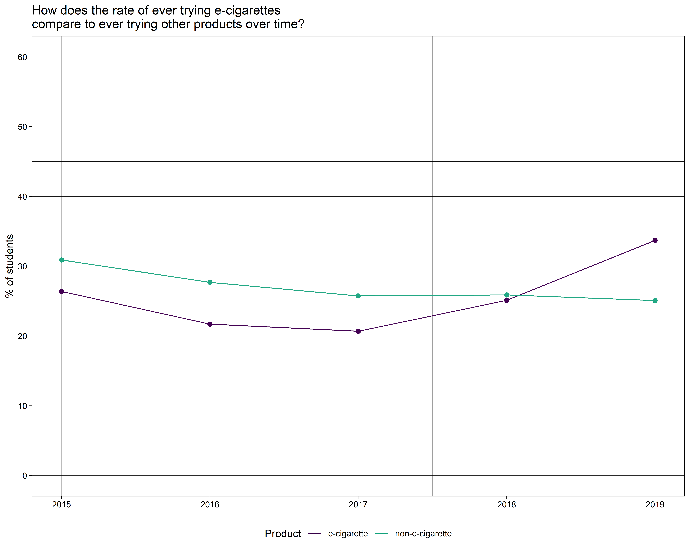</p>
<p>Now we will do the same, but for students who reported currently using e-cigarettes or non-e-cigarette products.</p>
<div class="sourceCode" id="section-cb102"><pre class="sourceCode r"><code class="sourceCode r"><span id="cb102-1"><a href="#cb102-1"></a>v_colors =<span class="st">  </span><span class="kw">viridis</span>(<span class="dv">6</span>)[<span class="kw">c</span>(<span class="dv">1</span>, <span class="dv">4</span>)]</span>
<span id="cb102-2"><a href="#cb102-2"></a></span>
<span id="cb102-3"><a href="#cb102-3"></a>plot8 &lt;-<span class="st"> </span>nyts_data <span class="op">%&gt;%</span></span>
<span id="cb102-4"><a href="#cb102-4"></a><span class="st">  </span><span class="kw">group_by</span>(year) <span class="op">%&gt;%</span></span>
<span id="cb102-5"><a href="#cb102-5"></a><span class="st">  </span><span class="kw">summarize</span>(</span>
<span id="cb102-6"><a href="#cb102-6"></a>    <span class="st">`</span><span class="dt">e-cigarette_current</span><span class="st">`</span> =<span class="st"> </span>(<span class="kw">mean</span>(ecig_current, <span class="dt">na.rm =</span> <span class="ot">TRUE</span>) <span class="op">*</span><span class="st"> </span><span class="dv">100</span>),</span>
<span id="cb102-7"><a href="#cb102-7"></a>    <span class="st">`</span><span class="dt">non-e-cigarette_current</span><span class="st">`</span> =<span class="st"> </span>(<span class="kw">mean</span>(non_ecig_current, <span class="dt">na.rm =</span> <span class="ot">TRUE</span>) <span class="op">*</span><span class="st"> </span><span class="dv">100</span>)</span>
<span id="cb102-8"><a href="#cb102-8"></a>  ) <span class="op">%&gt;%</span></span>
<span id="cb102-9"><a href="#cb102-9"></a><span class="st">  </span><span class="kw">pivot_longer</span>(<span class="dt">cols =</span> <span class="op">-</span>year,</span>
<span id="cb102-10"><a href="#cb102-10"></a>               <span class="dt">names_to =</span> <span class="st">&quot;Category&quot;</span>,</span>
<span id="cb102-11"><a href="#cb102-11"></a>               <span class="dt">values_to =</span> <span class="st">&quot;Percentage of students&quot;</span>) <span class="op">%&gt;%</span></span>
<span id="cb102-12"><a href="#cb102-12"></a><span class="st">  </span><span class="kw">separate</span>(Category, <span class="dt">into =</span> <span class="kw">c</span>(<span class="st">&quot;Product&quot;</span>, <span class="st">&quot;User&quot;</span>), <span class="dt">sep =</span> <span class="st">&quot;_&quot;</span>) <span class="op">%&gt;%</span></span>
<span id="cb102-13"><a href="#cb102-13"></a><span class="st">  </span><span class="kw">ggplot</span>(<span class="kw">aes</span>(<span class="dt">x =</span> year, <span class="dt">y =</span> <span class="st">`</span><span class="dt">Percentage of students</span><span class="st">`</span>, <span class="dt">color =</span> Product)) <span class="op">+</span></span>
<span id="cb102-14"><a href="#cb102-14"></a><span class="st">  </span><span class="kw">geom_line</span>(<span class="dt">linetype =</span> <span class="st">&quot;dashed&quot;</span>) <span class="op">+</span></span>
<span id="cb102-15"><a href="#cb102-15"></a><span class="st">  </span><span class="kw">geom_point</span>(<span class="dt">show.legend =</span> <span class="ot">FALSE</span>, <span class="dt">size =</span> <span class="dv">2</span>) <span class="op">+</span></span>
<span id="cb102-16"><a href="#cb102-16"></a><span class="st">  </span><span class="kw">scale_color_manual</span>(<span class="dt">values =</span> v_colors) <span class="op">+</span></span>
<span id="cb102-17"><a href="#cb102-17"></a><span class="st">  </span><span class="kw">scale_linetype_manual</span>(<span class="dt">values =</span> <span class="kw">c</span>(<span class="dv">1</span>)) <span class="op">+</span></span>
<span id="cb102-18"><a href="#cb102-18"></a><span class="st">  </span><span class="kw">scale_y_continuous</span>(<span class="dt">breaks =</span> <span class="kw">seq</span>(<span class="dv">0</span>, <span class="dv">60</span>, <span class="dt">by =</span> <span class="dv">10</span>), <span class="dt">limits =</span> <span class="kw">c</span>(<span class="dv">0</span>, <span class="dv">60</span>)) <span class="op">+</span></span>
<span id="cb102-19"><a href="#cb102-19"></a><span class="st">  </span><span class="kw">theme_linedraw</span>() <span class="op">+</span></span>
<span id="cb102-20"><a href="#cb102-20"></a><span class="st">  </span><span class="kw">theme</span>(<span class="dt">legend.position =</span> <span class="st">&quot;bottom&quot;</span>,</span>
<span id="cb102-21"><a href="#cb102-21"></a>        <span class="dt">axis.title.x =</span> <span class="kw">element_blank</span>()) <span class="op">+</span></span>
<span id="cb102-22"><a href="#cb102-22"></a><span class="st">  </span><span class="kw">labs</span>(<span class="dt">title =</span> <span class="st">&quot;How does the rate of currently using e-cigarettes</span></span>
<span id="cb102-23"><a href="#cb102-23"></a><span class="st">compare to currently using other products over time?&quot;</span>,</span>
<span id="cb102-24"><a href="#cb102-24"></a>       <span class="dt">y =</span> <span class="st">&quot;% of students&quot;</span>)</span>
<span id="cb102-25"><a href="#cb102-25"></a></span>
<span id="cb102-26"><a href="#cb102-26"></a>plot8</span></code></pre></div>
<p>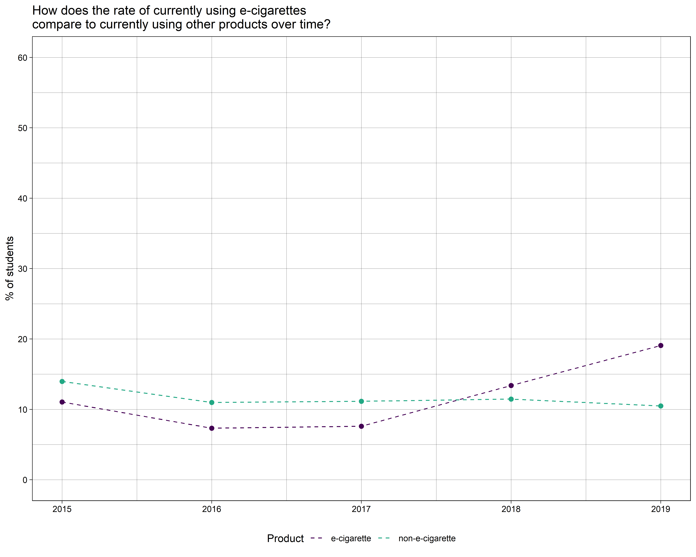</p>
</div>
<div id="section-putting-plots-together" class="section level3">
<h3><strong>Putting plots together</strong></h3>
<hr />
<p>Now we will put these plots together using the <code>plot_grid()</code> function of the <code>cowplot</code> package. We will also modify the labels using the <code>ggdraw()</code> function, which is also part of the <code>cowplot</code> package.</p>
<div class="sourceCode" id="section-cb103"><pre class="sourceCode r"><code class="sourceCode r"><span id="cb103-1"><a href="#cb103-1"></a>plotA_uw &lt;-<span class="st"> </span>plot1 <span class="op">+</span></span>
<span id="cb103-2"><a href="#cb103-2"></a><span class="st">  </span><span class="kw">theme</span>(<span class="dt">axis.title.x =</span> <span class="kw">element_blank</span>(),</span>
<span id="cb103-3"><a href="#cb103-3"></a>        <span class="dt">legend.position =</span> <span class="st">&quot;none&quot;</span>) <span class="op">+</span></span>
<span id="cb103-4"><a href="#cb103-4"></a><span class="st">  </span><span class="kw">labs</span>(<span class="dt">title =</span> <span class="st">&quot;Tobacco product users more prevalent after 2017&quot;</span>,</span>
<span id="cb103-5"><a href="#cb103-5"></a>       <span class="dt">subtitle =</span> <span class="ot">NULL</span>,</span>
<span id="cb103-6"><a href="#cb103-6"></a>       <span class="dt">y =</span> <span class="st">&quot;% of students&quot;</span>)</span>
<span id="cb103-7"><a href="#cb103-7"></a></span>
<span id="cb103-8"><a href="#cb103-8"></a>plotB_uw &lt;-<span class="st"> </span>plot7 <span class="op">+</span></span>
<span id="cb103-9"><a href="#cb103-9"></a><span class="st">  </span><span class="kw">theme</span>(<span class="dt">axis.title.x =</span> <span class="kw">element_blank</span>(),</span>
<span id="cb103-10"><a href="#cb103-10"></a>        <span class="dt">legend.position =</span> <span class="st">&quot;none&quot;</span>) <span class="op">+</span></span>
<span id="cb103-11"><a href="#cb103-11"></a><span class="st">    </span><span class="kw">labs</span>(<span class="dt">title =</span> <span class="st">&quot;% Ever trying e-cigarettes increases &amp;</span></span>
<span id="cb103-12"><a href="#cb103-12"></a><span class="st">% Ever trying other products decreases&quot;</span>,</span>
<span id="cb103-13"><a href="#cb103-13"></a>         <span class="dt">subtitle =</span> <span class="ot">NULL</span>,</span>
<span id="cb103-14"><a href="#cb103-14"></a>         <span class="dt">y =</span> <span class="st">&quot;% of students&quot;</span>)</span>
<span id="cb103-15"><a href="#cb103-15"></a></span>
<span id="cb103-16"><a href="#cb103-16"></a>plotC_uw &lt;-<span class="st"> </span>plot8 <span class="op">+</span></span>
<span id="cb103-17"><a href="#cb103-17"></a><span class="st">  </span><span class="kw">theme</span>(<span class="dt">axis.title.x =</span> <span class="kw">element_blank</span>(),</span>
<span id="cb103-18"><a href="#cb103-18"></a>        <span class="dt">legend.position =</span> <span class="st">&quot;none&quot;</span>) <span class="op">+</span></span>
<span id="cb103-19"><a href="#cb103-19"></a><span class="st">    </span><span class="kw">labs</span>(<span class="dt">title =</span> <span class="st">&quot;% Currently using e-cigarettes increases &amp;</span></span>
<span id="cb103-20"><a href="#cb103-20"></a><span class="st">% Currently using other products decreases&quot;</span>,</span>
<span id="cb103-21"><a href="#cb103-21"></a>         <span class="dt">subtitle =</span> <span class="ot">NULL</span>,</span>
<span id="cb103-22"><a href="#cb103-22"></a>         <span class="dt">y =</span> <span class="st">&quot;% of students&quot;</span>)</span>
<span id="cb103-23"><a href="#cb103-23"></a></span>
<span id="cb103-24"><a href="#cb103-24"></a>title_uw &lt;-<span class="st"> </span><span class="kw">ggdraw</span>() <span class="op">+</span></span>
<span id="cb103-25"><a href="#cb103-25"></a><span class="st">  </span><span class="kw">draw_label</span>(</span>
<span id="cb103-26"><a href="#cb103-26"></a>    <span class="st">&quot;Is there a relationship between e-cigarette use and tobacco use?&quot;</span>,</span>
<span id="cb103-27"><a href="#cb103-27"></a>    <span class="dt">fontface =</span> <span class="st">&#39;bold&#39;</span>,</span>
<span id="cb103-28"><a href="#cb103-28"></a>    <span class="dt">size =</span> <span class="dv">14</span>,</span>
<span id="cb103-29"><a href="#cb103-29"></a>    <span class="dt">x =</span> <span class="dv">0</span>,</span>
<span id="cb103-30"><a href="#cb103-30"></a>    <span class="dt">hjust =</span> <span class="dv">0</span></span>
<span id="cb103-31"><a href="#cb103-31"></a>  ) <span class="op">+</span></span>
<span id="cb103-32"><a href="#cb103-32"></a><span class="st">  </span><span class="kw">theme</span>(</span>
<span id="cb103-33"><a href="#cb103-33"></a>    <span class="dt">plot.margin =</span> <span class="kw">margin</span>(<span class="dv">0</span>, <span class="dv">0</span>, <span class="dv">0</span>, <span class="dv">0</span>)</span>
<span id="cb103-34"><a href="#cb103-34"></a>  )</span>
<span id="cb103-35"><a href="#cb103-35"></a></span>
<span id="cb103-36"><a href="#cb103-36"></a>plotsA_uw &lt;-<span class="st"> </span><span class="kw">plot_grid</span>(plotA_uw,</span>
<span id="cb103-37"><a href="#cb103-37"></a>                     <span class="dt">rel_widths =</span> <span class="kw">c</span>(<span class="dv">1</span>, <span class="dv">1</span>))</span>
<span id="cb103-38"><a href="#cb103-38"></a>plotsBC_uw &lt;-<span class="st"> </span><span class="kw">plot_grid</span>(plotB_uw,</span>
<span id="cb103-39"><a href="#cb103-39"></a>                        plotC_uw,</span>
<span id="cb103-40"><a href="#cb103-40"></a>                        <span class="dt">rel_widths =</span> <span class="kw">c</span>(<span class="dv">1</span>, <span class="dv">1</span>))</span>
<span id="cb103-41"><a href="#cb103-41"></a></span>
<span id="cb103-42"><a href="#cb103-42"></a><span class="co"># this will take the legend from plot1c to use as the legend for the plot we are creating</span></span>
<span id="cb103-43"><a href="#cb103-43"></a>legend_uw &lt;-<span class="st"> </span><span class="kw">get_legend</span>(plot1c <span class="op">+</span></span>
<span id="cb103-44"><a href="#cb103-44"></a><span class="st">                       </span><span class="kw">theme</span>(<span class="dt">legend.position =</span> <span class="st">&quot;bottom&quot;</span>,</span>
<span id="cb103-45"><a href="#cb103-45"></a>                             <span class="dt">legend.direction =</span> <span class="st">&quot;horizontal&quot;</span>))</span>
<span id="cb103-46"><a href="#cb103-46"></a></span>
<span id="cb103-47"><a href="#cb103-47"></a>figure_uw &lt;-<span class="st"> </span><span class="kw">plot_grid</span>(title_uw,</span>
<span id="cb103-48"><a href="#cb103-48"></a>                       plotsA_uw,</span>
<span id="cb103-49"><a href="#cb103-49"></a>                       plotsBC_uw,</span>
<span id="cb103-50"><a href="#cb103-50"></a>                       legend_uw,</span>
<span id="cb103-51"><a href="#cb103-51"></a>                       <span class="dt">ncol =</span> <span class="dv">1</span>,</span>
<span id="cb103-52"><a href="#cb103-52"></a>                       <span class="dt">rel_heights =</span> <span class="kw">c</span>(<span class="fl">0.1</span>,</span>
<span id="cb103-53"><a href="#cb103-53"></a>                                       <span class="dv">1</span>,</span>
<span id="cb103-54"><a href="#cb103-54"></a>                                       <span class="dv">1</span>,</span>
<span id="cb103-55"><a href="#cb103-55"></a>                                       <span class="fl">0.1</span>),</span>
<span id="cb103-56"><a href="#cb103-56"></a>                       <span class="dt">scale =</span> <span class="fl">1.0</span>)</span>
<span id="cb103-57"><a href="#cb103-57"></a></span>
<span id="cb103-58"><a href="#cb103-58"></a>figure_uw</span></code></pre></div>
<p>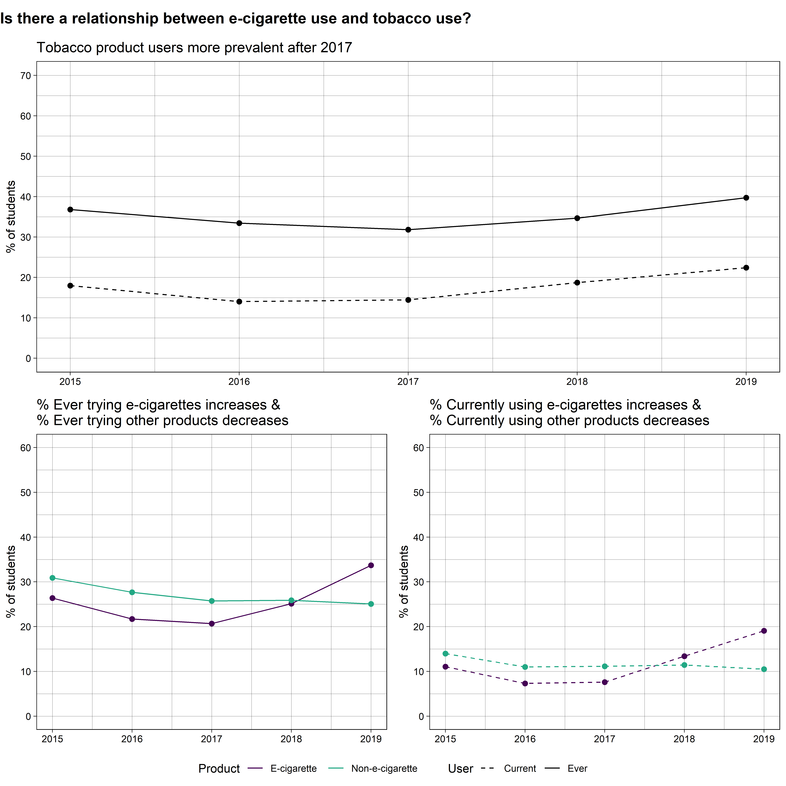</p>
</div>
<div id="section-survey-weighting" class="section level3">
<h3><strong>Survey Weighting</strong></h3>
<hr />
<p>It turns out that our analysis thus far has been brushing an important statistical concept under the rug, related to how our data were collected. Our data come from responses to a survey, which may have a particular sampling scheme to capture data about the population we are interested in. For example, the survey may be designed to capture a set of individuals who reflect the characteristics of the population that we are interested in drawing conclusions about. However, only a fraction of the individuals who were contacted about taking the survey may have completed it, and this fraction of individuals may no longer be representative of the population. Or the survey may be designed to over-sample a particular group of interest so that individuals from that group show up more often as survey respondents than are present in the population overall. In order to account for the fact that the survey respondents may not reflect the composition of the population we want to generalize to, we can employ a technique called <a href="http://www.applied-survey-methods.com/weight.html" target="_blank">survey weighting</a>.</p>
<p>Survey weighting is a common technique used in survey data analysis because often the individuals that take a survey are not necessarily representative of the population that we are trying to gather information about. For example, we may have more females that respond to the survey than males because perhaps female students were more willing to participate. In this case, the proportion of data values in our data will be smaller for the males than the proportion of actual male students and larger for the females than the true proportion of actual female students. To get a better estimate of overall e-cigarette smoking rates, the data from the males can be weighted based on the true proportion of male students to amplify the contribution of the responses from the males that did participate. Conversely, the female data can be weighted to diminish the contribution if their responses to the overall picture. We will see if using survey weighting changes the general trends that we see in our data.</p>
<p>Calculating survey weights involves making a weight based on the ratio of the proportion of survey respondents from a particular group and the actual proportion of that group in the population. For example, let’s say that females account for 50% of the population and males account for 50 % of the population. Let’s also say that 75% of the respondents to the survey were female and only 25% were males.</p>
<p>Then we could calculate survey weights using this formula:</p>
<p><span class="math display">\[ \frac{\text{actual proportion of group in the population}}{\text{ proportion of group in the respondents}}\]</span></p>
<p>Thus the weight for the females would be calculated as:</p>
<p><span class="math display">\[ \frac{.5}{.75} = .67\]</span></p>
<p>The weight for the males would be calculated as:</p>
<p><span class="math display">\[ \frac{.5}{.25} = 2\]</span></p>
<p>Therefore each male response value would be multiplied by a factor of 2 and would have twice the contribution, while the female response values would have only about 70% of the contribution that they would have had without weighting.</p>
<p>Note that survey weights are in reality corrected for other aspects - for example the response rate to individual questions.</p>
<p>We do not need to calculate survey weights for our data as they were already supplied in the dataset, as described in the codebooks.</p>
<div id="section-srvyr-package-and-survey-design" class="section level4">
<h4><code>srvyr</code> package and survey design</h4>
<hr />
<p>We will now use the <code>srvyr</code> package to evaluate our data using survey weights that were provided in the data for each year, as described in the respective codebooks. This package contains functions that allow the user to easily perform calculations from the data that take the survey design into account, without having to work out the math by hand.</p>
<p>Within the data you will see that we have three variables related to the survey sampling scheme: <code>psu</code>, <code>finwgt</code>, and <code>stratum</code>. Details about these variables are available, for example, in the <a href="./docs/2019-nyts-dataset-and-codebook-microsoft-excel/2019-nyts-methodology-report-p.pdf" target="_blank">2019 Methodology Report</a>.</p>
<p>In brief they represent:</p>
<ol style="list-style-type: decimal">
<li><p><code>psu</code>: Surveys like the one used to create the data we are using often sample people based on strata. This is done to ensure that the responses are representative of the population of interest. Thus, often people first think about ensuring that surveys are conducted in a variety of geographical areas. This is often called the <strong>primary sampling unit</strong> or <strong>PSU</strong>. In <a href="https://web.sph.harvard.edu/mch-data-connect/results/national-youth-tobacco-survey-nyts/" target="_blank">this survey</a>, the county where the student’s school was located was used as the PSU.</p></li>
<li><p><code>stratum</code>: A categorical variable that indicates subsets of the data that include respondents from different <em>PSUs</em>. In our case, strata are determined by the predominant minority in the PSU (Non-Hispanic Black or Hispanic), whether the PSU is urban or non-urban, and what percent of the students in the PSU fall into the predominant minority group. PSUs are allocated across the 16 possible strata according to the sampling scheme. These strata values allow estimates based on the survey responses to be calculated using different strata allowing for improved precision of the response estimates.</p></li>
<li><p><code>finwgt</code>: The survey weight which was calculated based on a variety of factors.</p></li>
</ol>
<p>This <a href="https://web.sph.harvard.edu/mch-data-connect/results/national-youth-tobacco-survey-nyts/" target="_blank">link</a> and this <a href="https://osf.io/n7r32" target="_blank">link</a> have more information about the study design of the data that we are using.</p>
<p>For detailed information on such survey designs in general see <a href="http://www.asasrms.org/Proceedings/y2008/Files/301835.pdf" target="_blank">here</a> and <a href="http://ocw.jhsph.edu/courses/StatMethodsForSampleSurveys/PDFs/Lecture5.pdf" target="_blank">here</a>.</p>
<p>We will use the <code>as_survey_design()</code> function of the <code>srvyr</code>package to create a survey object with a specified survey design. This is a special R object that includes information about how the survey was conducted that can be taken into account in the analysis.</p>
<p>There are several arguments to pay attention to:</p>
<ol style="list-style-type: decimal">
<li>The <code>strata</code> argument is used to specify the variable(s) that defined strata in the data. In this case, we will use the <code>stratum</code> variable.</li>
<li>The <code>ids</code> argument is used to define cluster ids within the data. In this case we will use the <code>psu</code> variable.</li>
<li>The <code>weight</code> argument is the used to define which variable(s) are the survey weights.</li>
<li>The <code>nest = TRUE</code> argument, forces cluster ids (in this case the PSU) to be nested within the strata.</li>
</ol>
<p>We can then use the <code>survey_mean()</code> function to calculate percentages of students who report using tobacco for each year while accounting for the survey design and weights. We will specify that we want <a href="https://en.wikipedia.org/wiki/Confidence_interval" target="_blank">confidence interval</a> estimates by using the <code>vartype = "ci"</code> argument. The confidence intervals in our case give a range of possible values for the true population mean based on the data observed in the survey. We will multiply these values by 100 to get percentages. (Note: We could also have calculated confidence intervals for the unweighted results above by computing them by hand; we leave this as a potential exercise.)</p>
<p>Since the survey weights are specific to a single year of the survey results, we need to create survey design objects for each year separately. We will use <code>group_by</code> and <code>group_modify</code>, which is also from the <code>dplyr</code> package, to do this. We first write the function that we want to call on each group.</p>
<p>This function takes an input called <code>currYear</code>, which will be one set of survey responses for a specific year, and then creates a survey design based on the <code>stratum</code> and <code>finwgt</code> values specific to that year. It then calculates the percent of student respondents who have ever tried any tobacco products or who are a current user of any tobacco products accounting for the survey design and weights using <code>survey_mean()</code> as was just described. The function then wrangles the data to convert the means to percentages and reformat the data in long form for plotting.</p>
<p>One technical note: since some years have strata with a single PSU, we need to tell the survey weighting package how to handle estimating within strata variances. The line <code>options(survey.lonely.psu = "adjust")</code> tells R to center the stratum with the single PSU on the sample grand mean, a conservative approach to solving the problem. See further information <a href="https://r-survey.r-forge.r-project.org/survey/exmample-lonely.html" target="_blank">here</a> and <a href="http://r-survey.r-forge.r-project.org/survey/html/surveyoptions.html" target="_blank">here</a>.</p>
</div>
</div>
<div id="section-weighted-sample" class="section level3">
<h3><strong>Weighted Sample</strong></h3>
<hr />
<p>First, we show the basic output of the <code>survey_mean</code> function by year. Since we include the argument <code>vartype = "ci"</code>, we get a mean and upper and lower confidence interval bounds for the mean.</p>
<div class="sourceCode" id="section-cb104"><pre class="sourceCode r"><code class="sourceCode r"><span id="cb104-1"><a href="#cb104-1"></a>surveyMeanA &lt;-<span class="st"> </span><span class="cf">function</span>(currYear) {</span>
<span id="cb104-2"><a href="#cb104-2"></a>  <span class="kw">options</span>(<span class="dt">survey.lonely.psu =</span> <span class="st">&quot;adjust&quot;</span>)</span>
<span id="cb104-3"><a href="#cb104-3"></a>  currYear <span class="op">%&gt;%</span></span>
<span id="cb104-4"><a href="#cb104-4"></a><span class="st">  </span><span class="kw">as_survey_design</span>(<span class="dt">strata =</span> stratum,</span>
<span id="cb104-5"><a href="#cb104-5"></a>                      <span class="dt">ids =</span> psu,</span>
<span id="cb104-6"><a href="#cb104-6"></a>                  <span class="dt">weight  =</span> finwgt,</span>
<span id="cb104-7"><a href="#cb104-7"></a>                     <span class="dt">nest =</span> <span class="ot">TRUE</span>) <span class="op">%&gt;%</span></span>
<span id="cb104-8"><a href="#cb104-8"></a><span class="st">   </span><span class="kw">summarize</span>(<span class="dt">tobacco_ever =</span> <span class="kw">survey_mean</span>(tobacco_ever,</span>
<span id="cb104-9"><a href="#cb104-9"></a>                                        <span class="dt">vartype =</span> <span class="st">&quot;ci&quot;</span>,</span>
<span id="cb104-10"><a href="#cb104-10"></a>                                        <span class="dt">na.rm =</span> <span class="ot">TRUE</span>),</span>
<span id="cb104-11"><a href="#cb104-11"></a>          <span class="dt">tobacco_current =</span> <span class="kw">survey_mean</span>(tobacco_current,</span>
<span id="cb104-12"><a href="#cb104-12"></a>                                        <span class="dt">vartype =</span> <span class="st">&quot;ci&quot;</span>,</span>
<span id="cb104-13"><a href="#cb104-13"></a>                                        <span class="dt">na.rm =</span> <span class="ot">TRUE</span>)) }</span>
<span id="cb104-14"><a href="#cb104-14"></a></span>
<span id="cb104-15"><a href="#cb104-15"></a></span>
<span id="cb104-16"><a href="#cb104-16"></a>nyts_data <span class="op">%&gt;%</span></span>
<span id="cb104-17"><a href="#cb104-17"></a><span class="st">  </span><span class="kw">group_by</span>(year) <span class="op">%&gt;%</span></span>
<span id="cb104-18"><a href="#cb104-18"></a><span class="st">  </span>dplyr<span class="op">::</span><span class="kw">group_modify</span>(<span class="op">~</span><span class="st"> </span><span class="kw">surveyMeanA</span>(.x)) <span class="op">%&gt;%</span></span>
<span id="cb104-19"><a href="#cb104-19"></a><span class="st">  </span><span class="kw">head</span>()</span></code></pre></div>
<pre><code># A tibble: 5 x 7
# Groups:   year [5]
   year tobacco_ever tobacco_ever_low tobacco_ever_upp tobacco_current
  &lt;dbl&gt;        &lt;dbl&gt;            &lt;dbl&gt;            &lt;dbl&gt;           &lt;dbl&gt;
1  2015        0.372            0.344            0.400           0.180
2  2016        0.338            0.319            0.358           0.148
3  2017        0.307            0.284            0.330           0.139
4  2018        0.339            0.318            0.360           0.185
5  2019        0.408            0.384            0.432           0.233
# ... with 2 more variables: tobacco_current_low &lt;dbl&gt;,
#   tobacco_current_upp &lt;dbl&gt;</code></pre>
<p>Now let’s make the function wrangle the output in a more usable form too:</p>
<div class="sourceCode" id="section-cb106"><pre class="sourceCode r"><code class="sourceCode r"><span id="cb106-1"><a href="#cb106-1"></a>surveyMeanA &lt;-<span class="st"> </span><span class="cf">function</span>(currYear) {</span>
<span id="cb106-2"><a href="#cb106-2"></a>  <span class="kw">options</span>(<span class="dt">survey.lonely.psu =</span> <span class="st">&quot;adjust&quot;</span>)</span>
<span id="cb106-3"><a href="#cb106-3"></a>  currYear <span class="op">%&gt;%</span></span>
<span id="cb106-4"><a href="#cb106-4"></a><span class="st">  </span><span class="kw">as_survey_design</span>(<span class="dt">strata =</span> stratum,</span>
<span id="cb106-5"><a href="#cb106-5"></a>                      <span class="dt">ids =</span> psu,</span>
<span id="cb106-6"><a href="#cb106-6"></a>                  <span class="dt">weight  =</span> finwgt,</span>
<span id="cb106-7"><a href="#cb106-7"></a>                     <span class="dt">nest =</span> <span class="ot">TRUE</span>) <span class="op">%&gt;%</span></span>
<span id="cb106-8"><a href="#cb106-8"></a><span class="st">   </span><span class="kw">summarize</span>(<span class="dt">tobacco_ever =</span> <span class="kw">survey_mean</span>(tobacco_ever,</span>
<span id="cb106-9"><a href="#cb106-9"></a>                                        <span class="dt">vartype =</span> <span class="st">&quot;ci&quot;</span>,</span>
<span id="cb106-10"><a href="#cb106-10"></a>                                        <span class="dt">na.rm =</span> <span class="ot">TRUE</span>),</span>
<span id="cb106-11"><a href="#cb106-11"></a>          <span class="dt">tobacco_current =</span> <span class="kw">survey_mean</span>(tobacco_current,</span>
<span id="cb106-12"><a href="#cb106-12"></a>                                        <span class="dt">vartype =</span> <span class="st">&quot;ci&quot;</span>,</span>
<span id="cb106-13"><a href="#cb106-13"></a>                                        <span class="dt">na.rm =</span> <span class="ot">TRUE</span>))  <span class="op">%&gt;%</span></span>
<span id="cb106-14"><a href="#cb106-14"></a><span class="st">  </span><span class="kw">mutate_all</span>(<span class="st">&quot;*&quot;</span>, <span class="dv">100</span>) <span class="op">%&gt;%</span></span>
<span id="cb106-15"><a href="#cb106-15"></a><span class="st">  </span><span class="kw">pivot_longer</span>(<span class="kw">everything</span>(),</span>
<span id="cb106-16"><a href="#cb106-16"></a>               <span class="dt">names_to =</span> <span class="st">&quot;Type&quot;</span>,</span>
<span id="cb106-17"><a href="#cb106-17"></a>               <span class="dt">values_to =</span> <span class="st">&quot;Percentage of students&quot;</span>) <span class="op">%&gt;%</span></span>
<span id="cb106-18"><a href="#cb106-18"></a><span class="st">  </span><span class="kw">mutate</span>(<span class="dt">Estimate =</span> <span class="kw">case_when</span>(<span class="kw">str_detect</span>(Type, <span class="st">&quot;_low&quot;</span>) <span class="op">~</span><span class="st"> &quot;Lower&quot;</span>,</span>
<span id="cb106-19"><a href="#cb106-19"></a>                              <span class="kw">str_detect</span>(Type, <span class="st">&quot;_upp&quot;</span>) <span class="op">~</span><span class="st"> &quot;Upper&quot;</span>,</span>
<span id="cb106-20"><a href="#cb106-20"></a>                          <span class="ot">TRUE</span> <span class="op">~</span><span class="st"> &quot;Mean&quot;</span>),</span>
<span id="cb106-21"><a href="#cb106-21"></a>         <span class="dt">User =</span> <span class="kw">case_when</span>(<span class="kw">str_detect</span>(Type, <span class="st">&quot;ever&quot;</span>) <span class="op">~</span><span class="st"> &quot;Ever&quot;</span>,</span>
<span id="cb106-22"><a href="#cb106-22"></a>                          <span class="kw">str_detect</span>(Type, <span class="st">&quot;current&quot;</span>) <span class="op">~</span><span class="st"> &quot;Current&quot;</span>,</span>
<span id="cb106-23"><a href="#cb106-23"></a>                          <span class="ot">TRUE</span> <span class="op">~</span><span class="st"> &quot;Mean&quot;</span>))}</span>
<span id="cb106-24"><a href="#cb106-24"></a></span>
<span id="cb106-25"><a href="#cb106-25"></a>nyts_data <span class="op">%&gt;%</span></span>
<span id="cb106-26"><a href="#cb106-26"></a><span class="st">  </span><span class="kw">group_by</span>(year) <span class="op">%&gt;%</span></span>
<span id="cb106-27"><a href="#cb106-27"></a><span class="st">  </span><span class="kw">group_modify</span>(<span class="op">~</span><span class="st"> </span><span class="kw">surveyMeanA</span>(.x))</span></code></pre></div>
<pre><code># A tibble: 30 x 5
# Groups:   year [5]
    year Type                `Percentage of students` Estimate User   
   &lt;dbl&gt; &lt;chr&gt;                                  &lt;dbl&gt; &lt;chr&gt;    &lt;chr&gt;  
 1  2015 tobacco_ever                            37.2 Mean     Ever   
 2  2015 tobacco_ever_low                        34.4 Lower    Ever   
 3  2015 tobacco_ever_upp                        40.0 Upper    Ever   
 4  2015 tobacco_current                         18.0 Mean     Current
 5  2015 tobacco_current_low                     16.2 Lower    Current
 6  2015 tobacco_current_upp                     19.9 Upper    Current
 7  2016 tobacco_ever                            33.8 Mean     Ever   
 8  2016 tobacco_ever_low                        31.9 Lower    Ever   
 9  2016 tobacco_ever_upp                        35.8 Upper    Ever   
10  2016 tobacco_current                         14.8 Mean     Current
# ... with 20 more rows</code></pre>
<p>We will now make a plot using this data. The confidence intervals are included using the <code>geom_linerange()</code> function of the <code>ggplot2</code> package.</p>
<div class="sourceCode" id="section-cb108"><pre class="sourceCode r"><code class="sourceCode r"><span id="cb108-1"><a href="#cb108-1"></a>plotA_w &lt;-<span class="st"> </span>nyts_data <span class="op">%&gt;%</span></span>
<span id="cb108-2"><a href="#cb108-2"></a><span class="st">  </span><span class="kw">group_by</span>(year) <span class="op">%&gt;%</span></span>
<span id="cb108-3"><a href="#cb108-3"></a><span class="st">  </span><span class="kw">group_modify</span>(<span class="op">~</span><span class="st"> </span><span class="kw">surveyMeanA</span>(.x)) <span class="op">%&gt;%</span></span>
<span id="cb108-4"><a href="#cb108-4"></a><span class="st">  </span>dplyr<span class="op">::</span><span class="kw">select</span>(<span class="op">-</span>Type) <span class="op">%&gt;%</span></span>
<span id="cb108-5"><a href="#cb108-5"></a><span class="st">  </span><span class="kw">pivot_wider</span>(<span class="dt">names_from =</span> Estimate,</span>
<span id="cb108-6"><a href="#cb108-6"></a>             <span class="dt">values_from =</span> <span class="st">`</span><span class="dt">Percentage of students</span><span class="st">`</span>) <span class="op">%&gt;%</span></span>
<span id="cb108-7"><a href="#cb108-7"></a><span class="st">  </span><span class="kw">ggplot</span>(<span class="kw">aes</span>(<span class="dt">x =</span> year, <span class="dt">y =</span> Mean)) <span class="op">+</span></span>
<span id="cb108-8"><a href="#cb108-8"></a><span class="st">  </span><span class="kw">geom_line</span>(<span class="kw">aes</span>(<span class="dt">linetype =</span> User)) <span class="op">+</span></span>
<span id="cb108-9"><a href="#cb108-9"></a><span class="st">  </span><span class="kw">geom_linerange</span>(<span class="kw">aes</span>(<span class="dt">ymin =</span> Lower,</span>
<span id="cb108-10"><a href="#cb108-10"></a>                     <span class="dt">ymax =</span> Upper), </span>
<span id="cb108-11"><a href="#cb108-11"></a>                     <span class="dt">size =</span> <span class="dv">1</span>, </span>
<span id="cb108-12"><a href="#cb108-12"></a>              <span class="dt">show.legend =</span> <span class="ot">FALSE</span>) <span class="op">+</span></span>
<span id="cb108-13"><a href="#cb108-13"></a><span class="st">  </span><span class="kw">scale_linetype_manual</span>(<span class="dt">values =</span> <span class="kw">c</span>(<span class="dv">2</span>, <span class="dv">1</span>)) <span class="op">+</span></span>
<span id="cb108-14"><a href="#cb108-14"></a><span class="st">  </span><span class="kw">scale_y_continuous</span>(<span class="dt">breaks =</span> <span class="kw">seq</span>(<span class="dv">0</span>, <span class="dv">70</span>, <span class="dt">by =</span> <span class="dv">10</span>),</span>
<span id="cb108-15"><a href="#cb108-15"></a>                     <span class="dt">labels =</span> <span class="kw">seq</span>(<span class="dv">0</span>, <span class="dv">70</span>, <span class="dt">by =</span> <span class="dv">10</span>),</span>
<span id="cb108-16"><a href="#cb108-16"></a>                     <span class="dt">limits =</span> <span class="kw">c</span>(<span class="dv">0</span>, <span class="dv">70</span>)) <span class="op">+</span></span>
<span id="cb108-17"><a href="#cb108-17"></a><span class="st">    </span><span class="kw">theme_linedraw</span>() <span class="op">+</span></span>
<span id="cb108-18"><a href="#cb108-18"></a><span class="st">    </span><span class="kw">theme</span>(<span class="dt">legend.position =</span> <span class="st">&quot;none&quot;</span>,</span>
<span id="cb108-19"><a href="#cb108-19"></a>          <span class="dt">axis.title.x =</span> <span class="kw">element_blank</span>()) <span class="op">+</span></span>
<span id="cb108-20"><a href="#cb108-20"></a><span class="st">    </span><span class="kw">labs</span>(<span class="dt">title =</span> <span class="st">&quot;Tobacco product users more prevalent after 2017&quot;</span>,</span>
<span id="cb108-21"><a href="#cb108-21"></a>         <span class="dt">y =</span> <span class="st">&quot;% of students&quot;</span>)</span>
<span id="cb108-22"><a href="#cb108-22"></a>plotA_w</span></code></pre></div>
<p>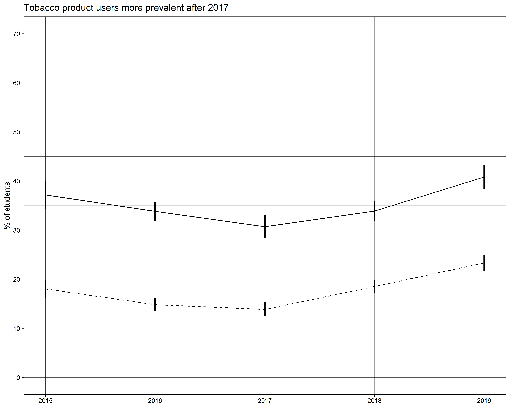</p>
<p>Now we can see that we have confidence interval ranges plotted for each value.</p>
<p>We will make a similar plot for students who reported ever trying or who currently use e-cigarettes as opposed to tobacco in general.</p>
<div class="sourceCode" id="section-cb109"><pre class="sourceCode r"><code class="sourceCode r"><span id="cb109-1"><a href="#cb109-1"></a>v_colors =<span class="st">  </span><span class="kw">viridis</span>(<span class="dv">6</span>)[<span class="kw">c</span>(<span class="dv">1</span>, <span class="dv">4</span>)]</span>
<span id="cb109-2"><a href="#cb109-2"></a></span>
<span id="cb109-3"><a href="#cb109-3"></a>surveyMeanB &lt;-<span class="st"> </span><span class="cf">function</span>(currYear) {</span>
<span id="cb109-4"><a href="#cb109-4"></a>  <span class="kw">options</span>(<span class="dt">survey.lonely.psu =</span> <span class="st">&quot;adjust&quot;</span>)</span>
<span id="cb109-5"><a href="#cb109-5"></a>  currYear <span class="op">%&gt;%</span></span>
<span id="cb109-6"><a href="#cb109-6"></a><span class="st">  </span><span class="kw">as_survey_design</span>(<span class="dt">strata =</span> stratum,</span>
<span id="cb109-7"><a href="#cb109-7"></a>                      <span class="dt">ids =</span> psu,</span>
<span id="cb109-8"><a href="#cb109-8"></a>                  <span class="dt">weight  =</span> finwgt,</span>
<span id="cb109-9"><a href="#cb109-9"></a>                     <span class="dt">nest =</span> <span class="ot">TRUE</span>) <span class="op">%&gt;%</span></span>
<span id="cb109-10"><a href="#cb109-10"></a><span class="st">  </span><span class="kw">summarize</span>(<span class="dt">ecig_ever_year =</span> <span class="kw">survey_mean</span>(ecig_ever, </span>
<span id="cb109-11"><a href="#cb109-11"></a>                                         <span class="dt">vartype =</span> <span class="st">&quot;ci&quot;</span>, </span>
<span id="cb109-12"><a href="#cb109-12"></a>                                         <span class="dt">na.rm =</span> <span class="ot">TRUE</span>),</span>
<span id="cb109-13"><a href="#cb109-13"></a>        <span class="dt">non_ecig_ever_year =</span> <span class="kw">survey_mean</span>(non_ecig_ever, </span>
<span id="cb109-14"><a href="#cb109-14"></a>                                         <span class="dt">vartype =</span> <span class="st">&quot;ci&quot;</span>, </span>
<span id="cb109-15"><a href="#cb109-15"></a>                                         <span class="dt">na.rm =</span> <span class="ot">TRUE</span>)) <span class="op">%&gt;%</span></span>
<span id="cb109-16"><a href="#cb109-16"></a><span class="st">  </span><span class="kw">mutate_all</span>(<span class="st">&quot;*&quot;</span>, <span class="dv">100</span>) <span class="op">%&gt;%</span></span>
<span id="cb109-17"><a href="#cb109-17"></a><span class="st">  </span><span class="kw">pivot_longer</span>(<span class="kw">everything</span>(),</span>
<span id="cb109-18"><a href="#cb109-18"></a>           <span class="dt">names_to =</span> <span class="st">&quot;Category&quot;</span>,</span>
<span id="cb109-19"><a href="#cb109-19"></a>          <span class="dt">values_to =</span> <span class="st">&quot;Percentage of students&quot;</span>) <span class="op">%&gt;%</span></span>
<span id="cb109-20"><a href="#cb109-20"></a><span class="st">  </span><span class="kw">mutate</span>(<span class="dt">Estimate =</span> <span class="kw">case_when</span>(<span class="kw">str_detect</span>(Category, <span class="st">&quot;_low&quot;</span>) <span class="op">~</span><span class="st"> &quot;Lower&quot;</span>,</span>
<span id="cb109-21"><a href="#cb109-21"></a>                              <span class="kw">str_detect</span>(Category, <span class="st">&quot;_upp&quot;</span>) <span class="op">~</span><span class="st"> &quot;Upper&quot;</span>,</span>
<span id="cb109-22"><a href="#cb109-22"></a>                                                      <span class="ot">TRUE</span> <span class="op">~</span><span class="st"> &quot;Mean&quot;</span>),</span>
<span id="cb109-23"><a href="#cb109-23"></a>             <span class="dt">User =</span> <span class="kw">case_when</span>(<span class="kw">str_detect</span>(Category, <span class="st">&quot;ever&quot;</span>) <span class="op">~</span><span class="st"> &quot;Ever&quot;</span>,</span>
<span id="cb109-24"><a href="#cb109-24"></a>                           <span class="kw">str_detect</span>(Category, <span class="st">&quot;current&quot;</span>) <span class="op">~</span><span class="st"> &quot;Current&quot;</span>),</span>
<span id="cb109-25"><a href="#cb109-25"></a>      <span class="dt">Product =</span> <span class="kw">case_when</span>(<span class="kw">str_detect</span>(Category, <span class="st">&quot;non_ecig&quot;</span>) <span class="op">~</span><span class="st"> &quot;Other products&quot;</span>,</span>
<span id="cb109-26"><a href="#cb109-26"></a>                                                      <span class="ot">TRUE</span> <span class="op">~</span><span class="st"> &quot;E-cigarettes&quot;</span>)) <span class="op">%&gt;%</span></span>
<span id="cb109-27"><a href="#cb109-27"></a><span class="st">  </span>dplyr<span class="op">::</span><span class="kw">select</span>(<span class="op">-</span>Category) <span class="op">%&gt;%</span></span>
<span id="cb109-28"><a href="#cb109-28"></a><span class="st">  </span><span class="kw">pivot_wider</span>(<span class="dt">names_from =</span> Estimate,</span>
<span id="cb109-29"><a href="#cb109-29"></a>              <span class="dt">values_from =</span> <span class="st">`</span><span class="dt">Percentage of students</span><span class="st">`</span>)}</span>
<span id="cb109-30"><a href="#cb109-30"></a></span>
<span id="cb109-31"><a href="#cb109-31"></a>nyts_data <span class="op">%&gt;%</span></span>
<span id="cb109-32"><a href="#cb109-32"></a><span class="st">  </span><span class="kw">group_by</span>(year) <span class="op">%&gt;%</span></span>
<span id="cb109-33"><a href="#cb109-33"></a><span class="st">  </span><span class="kw">group_modify</span>( <span class="op">~</span><span class="st"> </span><span class="kw">surveyMeanB</span>(.x)) <span class="op">%&gt;%</span></span>
<span id="cb109-34"><a href="#cb109-34"></a><span class="st">  </span><span class="kw">head</span>()</span></code></pre></div>
<pre><code># A tibble: 6 x 6
# Groups:   year [3]
   year User  Product         Mean Lower Upper
  &lt;dbl&gt; &lt;chr&gt; &lt;chr&gt;          &lt;dbl&gt; &lt;dbl&gt; &lt;dbl&gt;
1  2015 Ever  E-cigarettes    26.6  24.3  29.0
2  2015 Ever  Other products  31.3  28.7  33.8
3  2016 Ever  E-cigarettes    22.6  21.0  24.3
4  2016 Ever  Other products  28.2  26.2  30.2
5  2017 Ever  E-cigarettes    21.1  19.1  23.2
6  2017 Ever  Other products  24.3  22.2  26.4</code></pre>
<div class="sourceCode" id="section-cb111"><pre class="sourceCode r"><code class="sourceCode r"><span id="cb111-1"><a href="#cb111-1"></a>plotB_w &lt;-<span class="st"> </span>nyts_data <span class="op">%&gt;%</span></span>
<span id="cb111-2"><a href="#cb111-2"></a><span class="st">  </span><span class="kw">group_by</span>(year) <span class="op">%&gt;%</span></span>
<span id="cb111-3"><a href="#cb111-3"></a><span class="st">  </span><span class="kw">group_modify</span>( <span class="op">~</span><span class="st"> </span><span class="kw">surveyMeanB</span>(.x)) <span class="op">%&gt;%</span></span>
<span id="cb111-4"><a href="#cb111-4"></a><span class="st">  </span><span class="kw">ggplot</span>(<span class="kw">aes</span>(<span class="dt">x =</span> year, <span class="dt">y =</span> Mean, <span class="dt">color =</span> Product)) <span class="op">+</span></span>
<span id="cb111-5"><a href="#cb111-5"></a><span class="st">  </span><span class="kw">geom_line</span>() <span class="op">+</span></span>
<span id="cb111-6"><a href="#cb111-6"></a><span class="st">  </span><span class="kw">geom_linerange</span>(<span class="kw">aes</span>(<span class="dt">ymin =</span> Lower, <span class="dt">ymax =</span> Upper),</span>
<span id="cb111-7"><a href="#cb111-7"></a>                 <span class="dt">size =</span> <span class="dv">1</span>,</span>
<span id="cb111-8"><a href="#cb111-8"></a>                 <span class="dt">show.legend =</span> <span class="ot">FALSE</span>) <span class="op">+</span></span>
<span id="cb111-9"><a href="#cb111-9"></a><span class="st">  </span><span class="kw">scale_linetype_manual</span>(<span class="dt">values =</span> <span class="kw">c</span>(<span class="dv">2</span>, <span class="dv">1</span>)) <span class="op">+</span></span>
<span id="cb111-10"><a href="#cb111-10"></a><span class="st">  </span><span class="kw">scale_color_manual</span>(<span class="dt">values =</span> v_colors) <span class="op">+</span></span>
<span id="cb111-11"><a href="#cb111-11"></a><span class="st">  </span><span class="kw">scale_y_continuous</span>(</span>
<span id="cb111-12"><a href="#cb111-12"></a>    <span class="dt">breaks =</span> <span class="kw">seq</span>(<span class="dv">0</span>, <span class="dv">60</span>, <span class="dt">by =</span> <span class="dv">10</span>),</span>
<span id="cb111-13"><a href="#cb111-13"></a>    <span class="dt">labels =</span> <span class="kw">seq</span>(<span class="dv">0</span>, <span class="dv">60</span>, <span class="dt">by =</span> <span class="dv">10</span>),</span>
<span id="cb111-14"><a href="#cb111-14"></a>    <span class="dt">limits =</span> <span class="kw">c</span>(<span class="dv">0</span>, <span class="dv">60</span>)</span>
<span id="cb111-15"><a href="#cb111-15"></a>  ) <span class="op">+</span></span>
<span id="cb111-16"><a href="#cb111-16"></a><span class="st">  </span><span class="kw">theme_linedraw</span>() <span class="op">+</span></span>
<span id="cb111-17"><a href="#cb111-17"></a><span class="st">  </span><span class="kw">theme</span>(<span class="dt">legend.position =</span> <span class="st">&quot;none&quot;</span>,</span>
<span id="cb111-18"><a href="#cb111-18"></a>        <span class="dt">axis.title.x =</span> <span class="kw">element_blank</span>()) <span class="op">+</span></span>
<span id="cb111-19"><a href="#cb111-19"></a><span class="st">  </span><span class="kw">labs</span>(<span class="dt">title =</span> <span class="st">&quot;% Ever trying e-cigarettes increases &amp;</span></span>
<span id="cb111-20"><a href="#cb111-20"></a><span class="st">% Ever trying other products decreases&quot;</span>,</span>
<span id="cb111-21"><a href="#cb111-21"></a>       <span class="dt">y =</span> <span class="st">&quot;% of students&quot;</span>)</span>
<span id="cb111-22"><a href="#cb111-22"></a></span>
<span id="cb111-23"><a href="#cb111-23"></a>plotB_w</span></code></pre></div>
<p>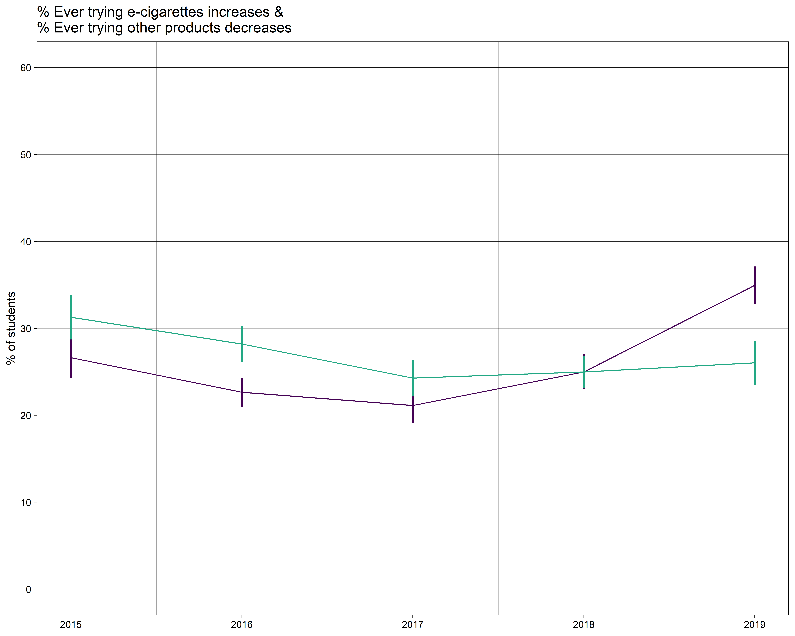</p>
<p>Now we will do the same but for current users:</p>
<div class="sourceCode" id="section-cb112"><pre class="sourceCode r"><code class="sourceCode r"><span id="cb112-1"><a href="#cb112-1"></a>surveyMeanC &lt;-<span class="st"> </span><span class="cf">function</span>(currYear) {</span>
<span id="cb112-2"><a href="#cb112-2"></a>  <span class="kw">options</span>(<span class="dt">survey.lonely.psu =</span> <span class="st">&quot;adjust&quot;</span>)</span>
<span id="cb112-3"><a href="#cb112-3"></a>  currYear <span class="op">%&gt;%</span></span>
<span id="cb112-4"><a href="#cb112-4"></a><span class="st">  </span><span class="kw">as_survey_design</span>(<span class="dt">strata =</span> stratum,</span>
<span id="cb112-5"><a href="#cb112-5"></a>                      <span class="dt">ids =</span> psu,</span>
<span id="cb112-6"><a href="#cb112-6"></a>                  <span class="dt">weight  =</span> finwgt,</span>
<span id="cb112-7"><a href="#cb112-7"></a>                     <span class="dt">nest =</span> <span class="ot">TRUE</span>) <span class="op">%&gt;%</span></span>
<span id="cb112-8"><a href="#cb112-8"></a><span class="st">  </span><span class="kw">summarize</span>(<span class="dt">ecig_current_year =</span> <span class="kw">survey_mean</span>(ecig_current, </span>
<span id="cb112-9"><a href="#cb112-9"></a>                                            <span class="dt">vartype =</span> <span class="st">&quot;ci&quot;</span>, </span>
<span id="cb112-10"><a href="#cb112-10"></a>                                            <span class="dt">na.rm =</span> <span class="ot">TRUE</span>),</span>
<span id="cb112-11"><a href="#cb112-11"></a>        <span class="dt">non_ecig_current_year =</span> <span class="kw">survey_mean</span>(non_ecig_current, </span>
<span id="cb112-12"><a href="#cb112-12"></a>                                            <span class="dt">vartype =</span> <span class="st">&quot;ci&quot;</span>, </span>
<span id="cb112-13"><a href="#cb112-13"></a>                                            <span class="dt">na.rm =</span> <span class="ot">TRUE</span>)) <span class="op">%&gt;%</span></span>
<span id="cb112-14"><a href="#cb112-14"></a><span class="st">  </span><span class="kw">mutate_all</span>(<span class="st">&quot;*&quot;</span>, <span class="dv">100</span>) <span class="op">%&gt;%</span></span>
<span id="cb112-15"><a href="#cb112-15"></a><span class="st">  </span><span class="kw">pivot_longer</span>(<span class="kw">everything</span>(),</span>
<span id="cb112-16"><a href="#cb112-16"></a>           <span class="dt">names_to =</span> <span class="st">&quot;Category&quot;</span>,</span>
<span id="cb112-17"><a href="#cb112-17"></a>          <span class="dt">values_to =</span> <span class="st">&quot;Percentage of students&quot;</span>) <span class="op">%&gt;%</span></span>
<span id="cb112-18"><a href="#cb112-18"></a><span class="st">  </span><span class="kw">mutate</span>(<span class="dt">Estimate =</span> <span class="kw">case_when</span>(<span class="kw">str_detect</span>(Category, <span class="st">&quot;_low&quot;</span>) <span class="op">~</span><span class="st"> &quot;Lower&quot;</span>,</span>
<span id="cb112-19"><a href="#cb112-19"></a>                              <span class="kw">str_detect</span>(Category, <span class="st">&quot;_upp&quot;</span>) <span class="op">~</span><span class="st"> &quot;Upper&quot;</span>,</span>
<span id="cb112-20"><a href="#cb112-20"></a>                                                      <span class="ot">TRUE</span> <span class="op">~</span><span class="st"> &quot;Mean&quot;</span>),</span>
<span id="cb112-21"><a href="#cb112-21"></a>             <span class="dt">User =</span> <span class="kw">case_when</span>(<span class="kw">str_detect</span>(Category, <span class="st">&quot;ever&quot;</span>) <span class="op">~</span><span class="st"> &quot;Ever&quot;</span>,</span>
<span id="cb112-22"><a href="#cb112-22"></a>                           <span class="kw">str_detect</span>(Category, <span class="st">&quot;current&quot;</span>) <span class="op">~</span><span class="st"> &quot;Current&quot;</span>),</span>
<span id="cb112-23"><a href="#cb112-23"></a>      <span class="dt">Product =</span> <span class="kw">case_when</span>(<span class="kw">str_detect</span>(Category, <span class="st">&quot;non_ecig&quot;</span>) <span class="op">~</span><span class="st"> &quot;Other products&quot;</span>,</span>
<span id="cb112-24"><a href="#cb112-24"></a>                                                      <span class="ot">TRUE</span> <span class="op">~</span><span class="st"> &quot;E-cigarettes&quot;</span>)) <span class="op">%&gt;%</span></span>
<span id="cb112-25"><a href="#cb112-25"></a><span class="st">  </span>dplyr<span class="op">::</span><span class="kw">select</span>(<span class="op">-</span>Category) <span class="op">%&gt;%</span></span>
<span id="cb112-26"><a href="#cb112-26"></a><span class="st">  </span><span class="kw">pivot_wider</span>(<span class="dt">names_from =</span> Estimate,</span>
<span id="cb112-27"><a href="#cb112-27"></a>              <span class="dt">values_from =</span> <span class="st">`</span><span class="dt">Percentage of students</span><span class="st">`</span>)}</span>
<span id="cb112-28"><a href="#cb112-28"></a></span>
<span id="cb112-29"><a href="#cb112-29"></a></span>
<span id="cb112-30"><a href="#cb112-30"></a>plotC_w &lt;-<span class="st"> </span>nyts_data <span class="op">%&gt;%</span></span>
<span id="cb112-31"><a href="#cb112-31"></a><span class="st">  </span><span class="kw">group_by</span>(year) <span class="op">%&gt;%</span></span>
<span id="cb112-32"><a href="#cb112-32"></a><span class="st">  </span><span class="kw">group_modify</span>( <span class="op">~</span><span class="st"> </span><span class="kw">surveyMeanC</span>(.x)) <span class="op">%&gt;%</span></span>
<span id="cb112-33"><a href="#cb112-33"></a><span class="st">  </span><span class="kw">ggplot</span>(<span class="kw">aes</span>(<span class="dt">x =</span> year, <span class="dt">y =</span> Mean, <span class="dt">color =</span> Product)) <span class="op">+</span></span>
<span id="cb112-34"><a href="#cb112-34"></a><span class="st">  </span><span class="kw">geom_line</span>(<span class="kw">aes</span>(<span class="dt">linetype =</span> <span class="st">&quot;dashed&quot;</span>)) <span class="op">+</span></span>
<span id="cb112-35"><a href="#cb112-35"></a><span class="st">  </span><span class="kw">geom_linerange</span>(<span class="kw">aes</span>(<span class="dt">ymin =</span> Lower, <span class="dt">ymax =</span> Upper),</span>
<span id="cb112-36"><a href="#cb112-36"></a>                 <span class="dt">size =</span> <span class="dv">1</span>,</span>
<span id="cb112-37"><a href="#cb112-37"></a>                 <span class="dt">show.legend =</span> <span class="ot">FALSE</span>) <span class="op">+</span></span>
<span id="cb112-38"><a href="#cb112-38"></a><span class="st">  </span><span class="kw">scale_linetype_manual</span>(<span class="dt">values =</span> <span class="kw">c</span>(<span class="dv">2</span>, <span class="dv">1</span>)) <span class="op">+</span></span>
<span id="cb112-39"><a href="#cb112-39"></a><span class="st">  </span><span class="kw">scale_y_continuous</span>(<span class="dt">breaks =</span> <span class="kw">seq</span>(<span class="dv">0</span>, <span class="dv">60</span>, <span class="dt">by =</span> <span class="dv">10</span>), <span class="dt">limits =</span> <span class="kw">c</span>(<span class="dv">0</span>, <span class="dv">60</span>)) <span class="op">+</span></span>
<span id="cb112-40"><a href="#cb112-40"></a><span class="st">  </span><span class="kw">scale_color_manual</span>(<span class="dt">values =</span> v_colors) <span class="op">+</span></span>
<span id="cb112-41"><a href="#cb112-41"></a><span class="st">  </span><span class="kw">theme_linedraw</span>() <span class="op">+</span></span>
<span id="cb112-42"><a href="#cb112-42"></a><span class="st">  </span><span class="kw">theme</span>(<span class="dt">legend.position =</span> <span class="st">&quot;none&quot;</span>,</span>
<span id="cb112-43"><a href="#cb112-43"></a>        <span class="dt">axis.title.x =</span> <span class="kw">element_blank</span>()) <span class="op">+</span></span>
<span id="cb112-44"><a href="#cb112-44"></a><span class="st">  </span><span class="kw">labs</span>(<span class="dt">title =</span> <span class="st">&quot;% Currently using e-cigarettes increases &amp;</span></span>
<span id="cb112-45"><a href="#cb112-45"></a><span class="st">% Currently using other products decreases&quot;</span>,</span>
<span id="cb112-46"><a href="#cb112-46"></a>        <span class="dt">y =</span> <span class="st">&quot;% of students&quot;</span>)</span>
<span id="cb112-47"><a href="#cb112-47"></a>plotC_w</span></code></pre></div>
<p></p>
<p>Now we will put these plots together again using the <code>cowplot</code> package:</p>
<div class="sourceCode" id="section-cb113"><pre class="sourceCode r"><code class="sourceCode r"><span id="cb113-1"><a href="#cb113-1"></a>title_w &lt;-<span class="st"> </span><span class="kw">ggdraw</span>() <span class="op">+</span></span>
<span id="cb113-2"><a href="#cb113-2"></a><span class="st">  </span><span class="kw">draw_label</span>(</span>
<span id="cb113-3"><a href="#cb113-3"></a>    <span class="kw">expression</span>(<span class="st">&quot;What is the relationship between e-cigarette use and tobacco use?&quot;</span>),</span>
<span id="cb113-4"><a href="#cb113-4"></a>    <span class="dt">fontface =</span> <span class="st">&#39;bold&#39;</span>,</span>
<span id="cb113-5"><a href="#cb113-5"></a>    <span class="dt">size =</span> <span class="dv">14</span>,</span>
<span id="cb113-6"><a href="#cb113-6"></a>    <span class="dt">x =</span> <span class="dv">0</span>,</span>
<span id="cb113-7"><a href="#cb113-7"></a>    <span class="dt">hjust =</span> <span class="dv">0</span></span>
<span id="cb113-8"><a href="#cb113-8"></a>  ) <span class="op">+</span></span>
<span id="cb113-9"><a href="#cb113-9"></a><span class="st">  </span><span class="kw">theme</span>(</span>
<span id="cb113-10"><a href="#cb113-10"></a>    <span class="dt">plot.margin =</span> <span class="kw">margin</span>(<span class="dv">0</span>, <span class="dv">0</span>, <span class="dv">0</span>, <span class="dv">0</span>)</span>
<span id="cb113-11"><a href="#cb113-11"></a>  )</span>
<span id="cb113-12"><a href="#cb113-12"></a></span>
<span id="cb113-13"><a href="#cb113-13"></a>plotsA_w &lt;-<span class="st"> </span><span class="kw">plot_grid</span>(plotA_w,</span>
<span id="cb113-14"><a href="#cb113-14"></a>                     <span class="dt">rel_widths =</span> <span class="kw">c</span>(<span class="dv">1</span>),</span>
<span id="cb113-15"><a href="#cb113-15"></a>                     <span class="dt">align =</span> <span class="st">&quot;v&quot;</span>,</span>
<span id="cb113-16"><a href="#cb113-16"></a>                     <span class="dt">axis =</span> <span class="st">&quot;bt&quot;</span>)</span>
<span id="cb113-17"><a href="#cb113-17"></a>plotsBC_w &lt;-<span class="st"> </span><span class="kw">plot_grid</span>(plotB_w,</span>
<span id="cb113-18"><a href="#cb113-18"></a>                     plotC_w,</span>
<span id="cb113-19"><a href="#cb113-19"></a>                     <span class="dt">rel_widths =</span> <span class="kw">c</span>(<span class="dv">1</span>, <span class="dv">1</span>),</span>
<span id="cb113-20"><a href="#cb113-20"></a>                     <span class="dt">align =</span> <span class="st">&quot;v&quot;</span>,</span>
<span id="cb113-21"><a href="#cb113-21"></a>                     <span class="dt">axis =</span> <span class="st">&quot;bt&quot;</span>)</span>
<span id="cb113-22"><a href="#cb113-22"></a></span>
<span id="cb113-23"><a href="#cb113-23"></a>legend_w &lt;-<span class="st"> </span><span class="kw">get_legend</span>(plot1c <span class="op">+</span></span>
<span id="cb113-24"><a href="#cb113-24"></a><span class="st">                       </span><span class="kw">theme</span>(<span class="dt">legend.position =</span> <span class="st">&quot;bottom&quot;</span>,</span>
<span id="cb113-25"><a href="#cb113-25"></a>                             <span class="dt">legend.direction =</span> <span class="st">&quot;horizontal&quot;</span>))</span>
<span id="cb113-26"><a href="#cb113-26"></a></span>
<span id="cb113-27"><a href="#cb113-27"></a>figure_w &lt;-<span class="st"> </span><span class="kw">plot_grid</span>(title_w,</span>
<span id="cb113-28"><a href="#cb113-28"></a>                      plotsA_w,</span>
<span id="cb113-29"><a href="#cb113-29"></a>                      plotsBC_w,</span>
<span id="cb113-30"><a href="#cb113-30"></a>                      legend_w,</span>
<span id="cb113-31"><a href="#cb113-31"></a>                      <span class="dt">ncol =</span> <span class="dv">1</span>,</span>
<span id="cb113-32"><a href="#cb113-32"></a>                      <span class="dt">rel_heights =</span> <span class="kw">c</span>(<span class="fl">0.1</span>,</span>
<span id="cb113-33"><a href="#cb113-33"></a>                                      <span class="dv">1</span>,</span>
<span id="cb113-34"><a href="#cb113-34"></a>                                      <span class="dv">1</span>,</span>
<span id="cb113-35"><a href="#cb113-35"></a>                                      <span class="fl">0.1</span>),</span>
<span id="cb113-36"><a href="#cb113-36"></a>                      <span class="dt">scale =</span> <span class="fl">1.0</span>)</span>
<span id="cb113-37"><a href="#cb113-37"></a></span>
<span id="cb113-38"><a href="#cb113-38"></a>figure_w</span></code></pre></div>
<p>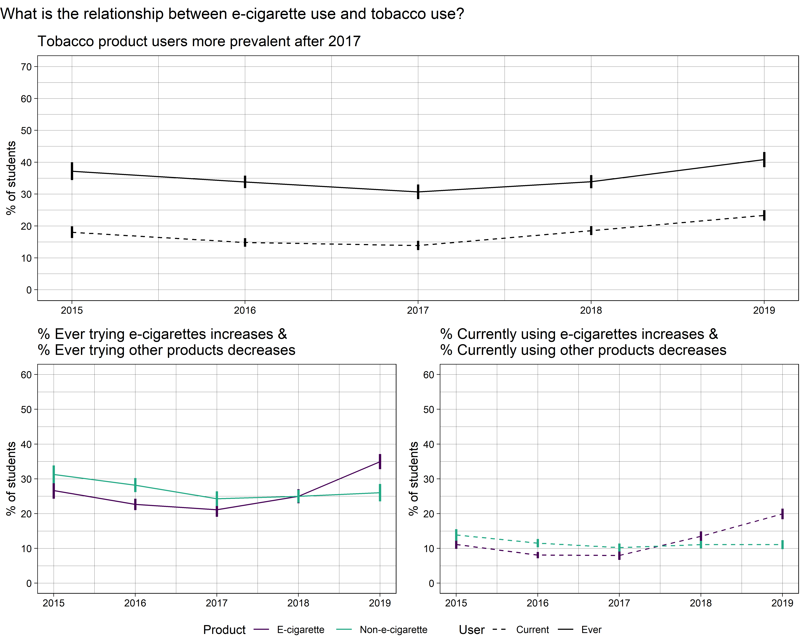</p>
<p>We can see that these figures look quite similar to the ones generated without using the survey weights.</p>
</div>
<div id="section-artificial-cohort" class="section level3">
<h3><strong>Artificial Cohort</strong></h3>
<hr />
<p>Although the survey design does not allow specific individuals to be followed over time, we will use certain subsets of the data from each year to construct an artificial cohort where we follow students of the same age group as they get older. This will allow us to look at how tobacco usage changed for students who were in 8th grade in 2015 as they aged.</p>
<p>All of the data so far has included all 6th-12th graders every year. Now we will look at just the data for students expected to graduate in 2019. These are the students who were in 8th grade in 2015, most of whom were 9th graders in 2016, 10th graders in 2017 and so on. We will filter the data to just the students expected to be in the graduating class of 2019.</p>
<div class="sourceCode" id="section-cb114"><pre class="sourceCode r"><code class="sourceCode r"><span id="cb114-1"><a href="#cb114-1"></a>surveyMeanCohort &lt;-<span class="st"> </span><span class="cf">function</span>(currYear) {</span>
<span id="cb114-2"><a href="#cb114-2"></a>  <span class="kw">options</span>(<span class="dt">survey.lonely.psu =</span> <span class="st">&quot;adjust&quot;</span>)</span>
<span id="cb114-3"><a href="#cb114-3"></a>  currYear <span class="op">%&gt;%</span></span>
<span id="cb114-4"><a href="#cb114-4"></a><span class="st">  </span><span class="kw">as_survey_design</span>(<span class="dt">strata =</span> stratum,</span>
<span id="cb114-5"><a href="#cb114-5"></a>                      <span class="dt">ids =</span> psu,</span>
<span id="cb114-6"><a href="#cb114-6"></a>                  <span class="dt">weight  =</span> finwgt,</span>
<span id="cb114-7"><a href="#cb114-7"></a>                     <span class="dt">nest =</span> <span class="ot">TRUE</span>) <span class="op">%&gt;%</span></span>
<span id="cb114-8"><a href="#cb114-8"></a><span class="st">  </span><span class="kw">summarize</span>(<span class="dt">ecig_ever_year =</span> </span>
<span id="cb114-9"><a href="#cb114-9"></a>              <span class="kw">survey_mean</span>(ecig_ever, <span class="dt">vartype =</span> <span class="st">&quot;ci&quot;</span>, <span class="dt">na.rm =</span> <span class="ot">TRUE</span>),</span>
<span id="cb114-10"><a href="#cb114-10"></a>            <span class="dt">ecig_current_year =</span> </span>
<span id="cb114-11"><a href="#cb114-11"></a>              <span class="kw">survey_mean</span>(ecig_current, <span class="dt">vartype =</span> <span class="st">&quot;ci&quot;</span>, <span class="dt">na.rm =</span> <span class="ot">TRUE</span>),</span>
<span id="cb114-12"><a href="#cb114-12"></a>            <span class="dt">non_ecig_ever_year =</span> </span>
<span id="cb114-13"><a href="#cb114-13"></a>              <span class="kw">survey_mean</span>(non_ecig_ever, <span class="dt">vartype =</span> <span class="st">&quot;ci&quot;</span>, <span class="dt">na.rm =</span> <span class="ot">TRUE</span>),</span>
<span id="cb114-14"><a href="#cb114-14"></a>            <span class="dt">non_ecig_current_year =</span> </span>
<span id="cb114-15"><a href="#cb114-15"></a>              <span class="kw">survey_mean</span>(non_ecig_current, <span class="dt">vartype =</span> <span class="st">&quot;ci&quot;</span>, <span class="dt">na.rm =</span> <span class="ot">TRUE</span>),</span>
<span id="cb114-16"><a href="#cb114-16"></a>            <span class="dt">tobacco_ever_year =</span> </span>
<span id="cb114-17"><a href="#cb114-17"></a>              <span class="kw">survey_mean</span>(tobacco_ever, <span class="dt">vartype =</span> <span class="st">&quot;ci&quot;</span>, <span class="dt">na.rm =</span> <span class="ot">TRUE</span>),</span>
<span id="cb114-18"><a href="#cb114-18"></a>            <span class="dt">tobacco_current_year =</span> </span>
<span id="cb114-19"><a href="#cb114-19"></a>              <span class="kw">survey_mean</span>(tobacco_current, <span class="dt">vartype =</span> <span class="st">&quot;ci&quot;</span>, <span class="dt">na.rm =</span> <span class="ot">TRUE</span>)) <span class="op">%&gt;%</span></span>
<span id="cb114-20"><a href="#cb114-20"></a><span class="st">  </span><span class="kw">mutate_all</span>(<span class="st">&quot;*&quot;</span>, <span class="dv">100</span>) <span class="op">%&gt;%</span></span>
<span id="cb114-21"><a href="#cb114-21"></a><span class="st">  </span><span class="kw">pivot_longer</span>(<span class="kw">everything</span>(),</span>
<span id="cb114-22"><a href="#cb114-22"></a>               <span class="dt">names_to =</span> <span class="st">&quot;Category&quot;</span>,</span>
<span id="cb114-23"><a href="#cb114-23"></a>               <span class="dt">values_to =</span> <span class="st">&quot;Percentage of students&quot;</span>) <span class="op">%&gt;%</span></span>
<span id="cb114-24"><a href="#cb114-24"></a><span class="st">  </span><span class="kw">mutate</span>(<span class="dt">Estimate =</span> <span class="kw">case_when</span>(<span class="kw">str_detect</span>(Category, <span class="st">&quot;_low&quot;</span>) <span class="op">~</span><span class="st"> &quot;Lower&quot;</span>,</span>
<span id="cb114-25"><a href="#cb114-25"></a>                              <span class="kw">str_detect</span>(Category, <span class="st">&quot;_upp&quot;</span>) <span class="op">~</span><span class="st"> &quot;Upper&quot;</span>,</span>
<span id="cb114-26"><a href="#cb114-26"></a>                                                      <span class="ot">TRUE</span> <span class="op">~</span><span class="st"> &quot;Mean&quot;</span>),</span>
<span id="cb114-27"><a href="#cb114-27"></a>             <span class="dt">User =</span> <span class="kw">case_when</span>(<span class="kw">str_detect</span>(Category, <span class="st">&quot;ever&quot;</span>) <span class="op">~</span><span class="st"> &quot;Ever&quot;</span>,</span>
<span id="cb114-28"><a href="#cb114-28"></a>                           <span class="kw">str_detect</span>(Category, <span class="st">&quot;current&quot;</span>) <span class="op">~</span><span class="st"> &quot;Current&quot;</span>),</span>
<span id="cb114-29"><a href="#cb114-29"></a>      <span class="dt">Product =</span> <span class="kw">case_when</span>(<span class="kw">str_detect</span>(Category, <span class="st">&quot;non_ecig&quot;</span>) <span class="op">~</span><span class="st"> &quot;Other products&quot;</span>,</span>
<span id="cb114-30"><a href="#cb114-30"></a>                           <span class="kw">str_detect</span>(Category, <span class="st">&quot;tobacco&quot;</span>) <span class="op">~</span><span class="st"> &quot;Any tobacco product&quot;</span>,</span>
<span id="cb114-31"><a href="#cb114-31"></a>                                                      <span class="ot">TRUE</span> <span class="op">~</span><span class="st"> &quot;E-cigarettes&quot;</span>)) <span class="op">%&gt;%</span></span>
<span id="cb114-32"><a href="#cb114-32"></a><span class="st">  </span>dplyr<span class="op">::</span><span class="kw">select</span>(<span class="op">-</span>Category) <span class="op">%&gt;%</span></span>
<span id="cb114-33"><a href="#cb114-33"></a><span class="st">  </span><span class="kw">pivot_wider</span>(<span class="dt">names_from =</span> Estimate,</span>
<span id="cb114-34"><a href="#cb114-34"></a>              <span class="dt">values_from =</span> <span class="st">`</span><span class="dt">Percentage of students</span><span class="st">`</span>)}</span>
<span id="cb114-35"><a href="#cb114-35"></a></span>
<span id="cb114-36"><a href="#cb114-36"></a></span>
<span id="cb114-37"><a href="#cb114-37"></a>Cohort_data &lt;-<span class="st"> </span>nyts_data <span class="op">%&gt;%</span></span>
<span id="cb114-38"><a href="#cb114-38"></a><span class="st">  </span><span class="kw">filter</span>((Grade <span class="op">==</span><span class="st"> &quot;8&quot;</span> <span class="op">&amp;</span><span class="st"> </span>year <span class="op">==</span><span class="st"> </span><span class="dv">2015</span>) <span class="op">|</span></span>
<span id="cb114-39"><a href="#cb114-39"></a><span class="st">         </span>(Grade <span class="op">==</span><span class="st"> &quot;9&quot;</span> <span class="op">&amp;</span><span class="st"> </span>year <span class="op">==</span><span class="st"> </span><span class="dv">2016</span>) <span class="op">|</span></span>
<span id="cb114-40"><a href="#cb114-40"></a><span class="st">         </span>(Grade <span class="op">==</span><span class="st"> &quot;10&quot;</span> <span class="op">&amp;</span><span class="st"> </span>year <span class="op">==</span><span class="st"> </span><span class="dv">2017</span>) <span class="op">|</span></span>
<span id="cb114-41"><a href="#cb114-41"></a><span class="st">         </span>(Grade <span class="op">==</span><span class="st"> &quot;11&quot;</span> <span class="op">&amp;</span><span class="st"> </span>year <span class="op">==</span><span class="st"> </span><span class="dv">2018</span>) <span class="op">|</span></span>
<span id="cb114-42"><a href="#cb114-42"></a><span class="st">         </span>(Grade <span class="op">==</span><span class="st"> &quot;12&quot;</span> <span class="op">&amp;</span><span class="st"> </span>year <span class="op">==</span><span class="st"> </span><span class="dv">2019</span>)</span>
<span id="cb114-43"><a href="#cb114-43"></a>         ) <span class="op">%&gt;%</span></span>
<span id="cb114-44"><a href="#cb114-44"></a><span class="st">  </span><span class="kw">group_by</span>(year) <span class="op">%&gt;%</span></span>
<span id="cb114-45"><a href="#cb114-45"></a><span class="st">  </span><span class="kw">group_modify</span>(<span class="op">~</span><span class="st"> </span><span class="kw">surveyMeanCohort</span>(.x))</span>
<span id="cb114-46"><a href="#cb114-46"></a></span>
<span id="cb114-47"><a href="#cb114-47"></a><span class="kw">head</span>(Cohort_data)</span></code></pre></div>
<pre><code># A tibble: 6 x 6
# Groups:   year [1]
   year User    Product              Mean Lower Upper
  &lt;dbl&gt; &lt;chr&gt;   &lt;chr&gt;               &lt;dbl&gt; &lt;dbl&gt; &lt;dbl&gt;
1  2015 Ever    E-cigarettes        20.1  17.0  23.1 
2  2015 Current E-cigarettes         8.12  6.74  9.50
3  2015 Ever    Other products      20.7  17.7  23.7 
4  2015 Current Other products       7.06  5.63  8.49
5  2015 Ever    Any tobacco product 26.9  23.3  30.4 
6  2015 Current Any tobacco product 10.9   9.13 12.6 </code></pre>
<p>We will now make similar plots to those above for this subset of the data:</p>
<div class="sourceCode" id="section-cb116"><pre class="sourceCode r"><code class="sourceCode r"><span id="cb116-1"><a href="#cb116-1"></a>plotA_w_<span class="dv">8</span> &lt;-<span class="st"> </span>Cohort_data <span class="op">%&gt;%</span></span>
<span id="cb116-2"><a href="#cb116-2"></a><span class="st">  </span><span class="kw">filter</span>(Product <span class="op">==</span><span class="st"> &quot;Any tobacco product&quot;</span>) <span class="op">%&gt;%</span></span>
<span id="cb116-3"><a href="#cb116-3"></a><span class="st">  </span><span class="kw">ggplot</span>(<span class="kw">aes</span>(<span class="dt">x =</span> year, <span class="dt">y =</span> Mean)) <span class="op">+</span></span>
<span id="cb116-4"><a href="#cb116-4"></a><span class="st">  </span><span class="kw">geom_line</span>(<span class="kw">aes</span>(<span class="dt">linetype =</span> User)) <span class="op">+</span></span>
<span id="cb116-5"><a href="#cb116-5"></a><span class="st">  </span><span class="kw">geom_linerange</span>(<span class="kw">aes</span>(<span class="dt">ymin =</span> Lower, <span class="dt">ymax =</span> Upper), <span class="dt">size =</span> <span class="dv">1</span>) <span class="op">+</span></span>
<span id="cb116-6"><a href="#cb116-6"></a><span class="st">  </span><span class="kw">scale_linetype_manual</span>(<span class="dt">values =</span> <span class="kw">c</span>(<span class="dv">2</span>, <span class="dv">1</span>)) <span class="op">+</span></span>
<span id="cb116-7"><a href="#cb116-7"></a><span class="st">  </span><span class="kw">scale_y_continuous</span>(<span class="dt">breaks =</span> <span class="kw">seq</span>(<span class="dv">0</span>, <span class="dv">70</span>, <span class="dt">by =</span> <span class="dv">10</span>),</span>
<span id="cb116-8"><a href="#cb116-8"></a>                     <span class="dt">labels =</span> <span class="kw">seq</span>(<span class="dv">0</span>, <span class="dv">70</span>, <span class="dt">by =</span> <span class="dv">10</span>),</span>
<span id="cb116-9"><a href="#cb116-9"></a>                     <span class="dt">limits =</span> <span class="kw">c</span>(<span class="dv">0</span>, <span class="dv">70</span>)) <span class="op">+</span></span>
<span id="cb116-10"><a href="#cb116-10"></a><span class="st">  </span><span class="kw">scale_color_manual</span>(<span class="dt">values =</span> v_colors) <span class="op">+</span></span>
<span id="cb116-11"><a href="#cb116-11"></a><span class="st">  </span><span class="kw">theme_linedraw</span>() <span class="op">+</span></span>
<span id="cb116-12"><a href="#cb116-12"></a><span class="st">  </span><span class="kw">theme</span>(<span class="dt">legend.position =</span> <span class="st">&quot;none&quot;</span>,</span>
<span id="cb116-13"><a href="#cb116-13"></a>        <span class="dt">axis.title.x =</span> <span class="kw">element_blank</span>()) <span class="op">+</span></span>
<span id="cb116-14"><a href="#cb116-14"></a><span class="st">  </span><span class="kw">labs</span>(<span class="dt">title =</span> <span class="st">&quot;Tobacco product use became increasingly prevalent&quot;</span>,</span>
<span id="cb116-15"><a href="#cb116-15"></a>       <span class="dt">y =</span> <span class="st">&quot;% of students&quot;</span>)</span>
<span id="cb116-16"><a href="#cb116-16"></a></span>
<span id="cb116-17"><a href="#cb116-17"></a>plotB_w_<span class="dv">8</span> &lt;-<span class="st"> </span>Cohort_data <span class="op">%&gt;%</span></span>
<span id="cb116-18"><a href="#cb116-18"></a><span class="st">  </span><span class="kw">filter</span>(Product <span class="op">!=</span><span class="st"> &quot;Any tobacco product&quot;</span>, User <span class="op">==</span><span class="st"> &quot;Ever&quot;</span>) <span class="op">%&gt;%</span></span>
<span id="cb116-19"><a href="#cb116-19"></a><span class="st">  </span><span class="kw">ggplot</span>(<span class="kw">aes</span>(<span class="dt">x =</span> year, <span class="dt">y =</span> Mean, <span class="dt">color =</span> Product)) <span class="op">+</span></span>
<span id="cb116-20"><a href="#cb116-20"></a><span class="st">  </span><span class="kw">geom_line</span>(<span class="dt">linetype =</span> <span class="dv">1</span>) <span class="op">+</span></span>
<span id="cb116-21"><a href="#cb116-21"></a><span class="st">  </span><span class="kw">geom_linerange</span>(<span class="kw">aes</span>(<span class="dt">ymin =</span> Lower, <span class="dt">ymax =</span> Upper), <span class="dt">size =</span> <span class="dv">1</span>) <span class="op">+</span></span>
<span id="cb116-22"><a href="#cb116-22"></a><span class="st">  </span><span class="kw">scale_y_continuous</span>(<span class="dt">breaks =</span> <span class="kw">seq</span>(<span class="dv">10</span>, <span class="dv">60</span>, <span class="dt">by =</span> <span class="dv">10</span>), <span class="dt">limits =</span> <span class="kw">c</span>(<span class="dv">10</span>, <span class="dv">60</span>)) <span class="op">+</span></span>
<span id="cb116-23"><a href="#cb116-23"></a><span class="st">  </span><span class="kw">scale_color_manual</span>(<span class="dt">values =</span> v_colors) <span class="op">+</span></span>
<span id="cb116-24"><a href="#cb116-24"></a><span class="st">  </span><span class="kw">theme_linedraw</span>() <span class="op">+</span></span>
<span id="cb116-25"><a href="#cb116-25"></a><span class="st">  </span><span class="kw">theme</span>(<span class="dt">legend.position =</span> <span class="st">&quot;none&quot;</span>,</span>
<span id="cb116-26"><a href="#cb116-26"></a>        <span class="dt">axis.title.x =</span> <span class="kw">element_blank</span>()) <span class="op">+</span></span>
<span id="cb116-27"><a href="#cb116-27"></a><span class="st">  </span><span class="kw">labs</span>(<span class="dt">title =</span> <span class="st">&quot;% ever trying tobacco products increases&quot;</span>,</span>
<span id="cb116-28"><a href="#cb116-28"></a>       <span class="dt">y =</span> <span class="st">&quot;% of students&quot;</span>)</span>
<span id="cb116-29"><a href="#cb116-29"></a></span>
<span id="cb116-30"><a href="#cb116-30"></a>plotC_w_<span class="dv">8</span> &lt;-<span class="st"> </span>Cohort_data <span class="op">%&gt;%</span></span>
<span id="cb116-31"><a href="#cb116-31"></a><span class="st">  </span><span class="kw">filter</span>(Product <span class="op">!=</span><span class="st"> &quot;Any tobacco product&quot;</span>, User <span class="op">==</span><span class="st"> &quot;Current&quot;</span>) <span class="op">%&gt;%</span></span>
<span id="cb116-32"><a href="#cb116-32"></a><span class="st">  </span><span class="kw">ggplot</span>(<span class="kw">aes</span>(<span class="dt">x =</span> year, <span class="dt">y =</span> Mean, <span class="dt">color =</span> Product)) <span class="op">+</span></span>
<span id="cb116-33"><a href="#cb116-33"></a><span class="st">  </span><span class="kw">geom_line</span>(<span class="kw">aes</span>(<span class="dt">linetype =</span> User)) <span class="op">+</span></span>
<span id="cb116-34"><a href="#cb116-34"></a><span class="st">  </span><span class="kw">geom_linerange</span>(<span class="kw">aes</span>(<span class="dt">ymin =</span> Lower, <span class="dt">ymax =</span> Upper), <span class="dt">size =</span> <span class="dv">1</span>) <span class="op">+</span></span>
<span id="cb116-35"><a href="#cb116-35"></a><span class="st">  </span><span class="kw">scale_linetype_manual</span>(<span class="dt">values =</span> <span class="kw">c</span>(<span class="dv">2</span>, <span class="dv">1</span>)) <span class="op">+</span></span>
<span id="cb116-36"><a href="#cb116-36"></a><span class="st">  </span><span class="kw">scale_y_continuous</span>(<span class="dt">breaks =</span> <span class="kw">seq</span>(<span class="dv">0</span>, <span class="dv">60</span>, <span class="dt">by =</span> <span class="dv">10</span>), <span class="dt">limits =</span> <span class="kw">c</span>(<span class="dv">0</span>, <span class="dv">60</span>)) <span class="op">+</span></span>
<span id="cb116-37"><a href="#cb116-37"></a><span class="st">  </span><span class="kw">scale_color_manual</span>(<span class="dt">values =</span> v_colors) <span class="op">+</span></span>
<span id="cb116-38"><a href="#cb116-38"></a><span class="st">  </span><span class="kw">theme_linedraw</span>() <span class="op">+</span></span>
<span id="cb116-39"><a href="#cb116-39"></a><span class="st">  </span><span class="kw">theme</span>(<span class="dt">legend.position =</span> <span class="st">&quot;none&quot;</span>,</span>
<span id="cb116-40"><a href="#cb116-40"></a>        <span class="dt">axis.title.x =</span> <span class="kw">element_blank</span>()) <span class="op">+</span></span>
<span id="cb116-41"><a href="#cb116-41"></a><span class="st">  </span><span class="kw">labs</span>(<span class="dt">title =</span> <span class="st">&quot;E-cigarette use surpasses use of other products&quot;</span>,</span>
<span id="cb116-42"><a href="#cb116-42"></a>       <span class="dt">y =</span> <span class="st">&quot;% of students&quot;</span>)</span>
<span id="cb116-43"><a href="#cb116-43"></a></span>
<span id="cb116-44"><a href="#cb116-44"></a>title_w_<span class="dv">8</span> &lt;-<span class="st"> </span><span class="kw">ggdraw</span>() <span class="op">+</span></span>
<span id="cb116-45"><a href="#cb116-45"></a><span class="st">  </span><span class="kw">draw_label</span>(</span>
<span id="cb116-46"><a href="#cb116-46"></a>  <span class="kw">expression</span>(<span class="st">&quot;For students in the 2019 graduating class, how are vaping and tobacco use related?&quot;</span>),</span>
<span id="cb116-47"><a href="#cb116-47"></a>    <span class="dt">fontface =</span> <span class="st">&#39;bold&#39;</span>,</span>
<span id="cb116-48"><a href="#cb116-48"></a>    <span class="dt">size =</span> <span class="dv">14</span>,</span>
<span id="cb116-49"><a href="#cb116-49"></a>    <span class="dt">x =</span> <span class="dv">0</span>,</span>
<span id="cb116-50"><a href="#cb116-50"></a>    <span class="dt">hjust =</span> <span class="dv">0</span></span>
<span id="cb116-51"><a href="#cb116-51"></a>  ) <span class="op">+</span></span>
<span id="cb116-52"><a href="#cb116-52"></a><span class="st">  </span><span class="kw">theme</span>(</span>
<span id="cb116-53"><a href="#cb116-53"></a>    <span class="dt">plot.margin =</span> <span class="kw">margin</span>(<span class="dv">0</span>, <span class="dv">0</span>, <span class="dv">0</span>, <span class="dv">0</span>)</span>
<span id="cb116-54"><a href="#cb116-54"></a>  )</span>
<span id="cb116-55"><a href="#cb116-55"></a></span>
<span id="cb116-56"><a href="#cb116-56"></a>plotsA_w_<span class="dv">8</span> &lt;-<span class="st"> </span><span class="kw">plot_grid</span>(plotA_w_<span class="dv">8</span>,</span>
<span id="cb116-57"><a href="#cb116-57"></a>                        <span class="dt">rel_widths =</span> <span class="kw">c</span>(<span class="dv">1</span>),</span>
<span id="cb116-58"><a href="#cb116-58"></a>                        <span class="dt">align =</span> <span class="st">&quot;v&quot;</span>,</span>
<span id="cb116-59"><a href="#cb116-59"></a>                        <span class="dt">axis =</span> <span class="st">&quot;bt&quot;</span>)</span>
<span id="cb116-60"><a href="#cb116-60"></a></span>
<span id="cb116-61"><a href="#cb116-61"></a>plotsBC_w_<span class="dv">8</span> &lt;-<span class="st"> </span><span class="kw">plot_grid</span>(plotB_w_<span class="dv">8</span>,</span>
<span id="cb116-62"><a href="#cb116-62"></a>                         plotC_w_<span class="dv">8</span>,</span>
<span id="cb116-63"><a href="#cb116-63"></a>                         <span class="dt">rel_widths =</span> <span class="kw">c</span>(<span class="dv">1</span>, <span class="dv">1</span>),</span>
<span id="cb116-64"><a href="#cb116-64"></a>                         <span class="dt">axis =</span> <span class="st">&quot;bt&quot;</span>)</span>
<span id="cb116-65"><a href="#cb116-65"></a></span>
<span id="cb116-66"><a href="#cb116-66"></a>legend_w_<span class="dv">8</span> &lt;-<span class="st"> </span><span class="kw">get_legend</span>(plot1c <span class="op">+</span></span>
<span id="cb116-67"><a href="#cb116-67"></a><span class="st">                       </span><span class="kw">theme</span>(<span class="dt">legend.position =</span> <span class="st">&quot;bottom&quot;</span>,</span>
<span id="cb116-68"><a href="#cb116-68"></a>                             <span class="dt">legend.direction =</span> <span class="st">&quot;horizontal&quot;</span>))</span>
<span id="cb116-69"><a href="#cb116-69"></a></span>
<span id="cb116-70"><a href="#cb116-70"></a>figure_w_<span class="dv">8</span> &lt;-<span class="st"> </span><span class="kw">plot_grid</span>(title_w_<span class="dv">8</span>,</span>
<span id="cb116-71"><a href="#cb116-71"></a>                        plotsA_w_<span class="dv">8</span>,</span>
<span id="cb116-72"><a href="#cb116-72"></a>                        plotsBC_w_<span class="dv">8</span>,</span>
<span id="cb116-73"><a href="#cb116-73"></a>                        legend_w_<span class="dv">8</span>,</span>
<span id="cb116-74"><a href="#cb116-74"></a>                        <span class="dt">ncol =</span> <span class="dv">1</span>,</span>
<span id="cb116-75"><a href="#cb116-75"></a>                        <span class="dt">rel_heights =</span> <span class="kw">c</span>(<span class="fl">0.1</span>,</span>
<span id="cb116-76"><a href="#cb116-76"></a>                                      <span class="dv">1</span>,</span>
<span id="cb116-77"><a href="#cb116-77"></a>                                      <span class="dv">1</span>,</span>
<span id="cb116-78"><a href="#cb116-78"></a>                                      <span class="fl">0.1</span>),</span>
<span id="cb116-79"><a href="#cb116-79"></a>                        <span class="dt">scale =</span> <span class="fl">1.0</span></span>
<span id="cb116-80"><a href="#cb116-80"></a>)</span>
<span id="cb116-81"><a href="#cb116-81"></a></span>
<span id="cb116-82"><a href="#cb116-82"></a>figure_w_<span class="dv">8</span></span></code></pre></div>
<p></p>
</div>
</div>
<div id="section-data-analysis" class="section level2">
<h2><strong>Data Analysis</strong></h2>
<hr />
<p>As an extension, we will include some material here on <a href="https://en.wikipedia.org/wiki/Logistic_regression" target="_blank">logistic regression</a> and survey-weighted logistic regression that would be appropriate for answering Question 2 (“How does e-cigarette use compare between males and females?”) for a single year using statistical inference, rather than just data visualizations.</p>
<p>We can look at the final figure in the section on Question 2 and see that among both current and ever users of e-cigarettes, a higher percentage of males than females use or have used e-cigarettes.’</p>
<p>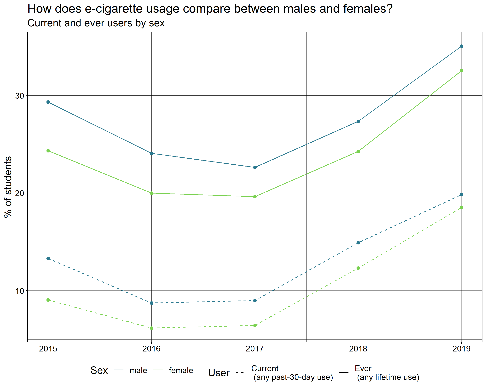</p>
<p>But what if we wanted to quantify this effect and assess whether this difference can be considered statistically significant? This is where the tool of logistic regression can come in handy.</p>
<div id="section-logistic-regression-motivation" class="section level3">
<h3><strong>Logistic regression motivation</strong></h3>
<hr />
<p>Here, we will approach the topic of <a href="https://en.wikipedia.org/wiki/Logistic_regression" target="_blank">logistic regression</a> assuming some prior knowledge of simple and multiple linear regression. These have been covered in <a href="https://opencasestudies.github.io/ocs-bp-diet/">another case study</a>.</p>
<p>As a brief reminder, a <a href="https://en.wikipedia.org/wiki/Linear_regression" target="_blank">linear regression model</a> allows us to estimate the relationship between an outcome variable, call it <span class="math inline">\(Y\)</span>, and a set of one or more input variables, <span class="math inline">\(X_1, X_2, ..., X_n\)</span>. We can write a simple linear regression model as:</p>
<p><span class="math display">\[ E(Y) = \beta_0 + \beta_1 X_1\]</span></p>
<p>where the <span class="math inline">\(E(Y)\)</span> means the expected value of <span class="math inline">\(Y\)</span>, i.e., our model gives us an estimate of the mean value of <span class="math inline">\(Y\)</span> given a particular input <span class="math inline">\(X_1\)</span>. Here, <span class="math inline">\(\beta_1\)</span> quantifies the expected difference in <span class="math inline">\(Y\)</span> comparing two individuals who are one unit apart in <span class="math inline">\(X_1\)</span>.</p>
<p>Similarly, we can include more than one predictor so that our equation might look like:</p>
<p><span class="math display">\[ E(Y) = \beta_0 + \beta_1 X_1 + \beta_2 X_2\]</span></p>
<p>Here, <span class="math inline">\(\beta_1\)</span> quantifies the expected difference in <span class="math inline">\(Y\)</span> comparing two individuals who are one unit apart in <span class="math inline">\(X_1\)</span>, holding <span class="math inline">\(X_2\)</span> at a fixed value. This material is covered in more detail <a href="https://rafalab.github.io/dsbook/linear-models.html#linear-regression-in-the-tidyverse" target="_blank">elsewhere</a> and in <a href="https://opencasestudies.github.io/ocs-bp-diet/" target="_blank">another case study</a>.</p>
<p>In the case of our question of interest for this case study, however, our outcome variable is of a particular type: it is a Yes-No or <em>binary</em> outcome, since each student respondent either is or is not a current user of e-cigarettes. This means in our setting <span class="math inline">\(Y\)</span> only takes on two values: TRUE or FALSE, which we can also think of as 1 and 0. For this kind of outcome variable, we need a special kind of regression, called <em>logistic regression</em>. And instead of using a linear model to estimate <span class="math inline">\(Y\)</span> itself for a given set of input variables, we will use a linear model to estimate the <em>log odds that Y=1</em> for a given set of input variables.</p>
<p>If we define <span class="math inline">\(p=P(Y=1)=E(Y)\)</span>, the standard simple logistic regression equation can be written as:</p>
<p><span class="math display">\[logit(p)= log_e (\frac{p}{1-p})= \beta_0 + \beta_1 X\]</span></p>
<p>In our case, we would define <span class="math inline">\(p\)</span> as the probability that a student respondent is a current e-cigarette user, since <span class="math inline">\(Y\)</span> is the binary variable that is 1 when a student respondent is a current e-cigarette user and 0 if not. The value <span class="math inline">\(\frac{p}{1-p}\)</span> is called the <em>odds</em> that <span class="math inline">\(Y\)</span> is equal to 1.</p>
<p>This <em>logit</em> function is short for <em>log odds</em>.</p>
<p>While it may feel strange working with the log odds that our outcome variable is equal to 1, there are some intuitive reasons why it makes sense to do this from the point of view of fitting a line to our data and interpreting the results. The <a href="https://en.wikipedia.org/wiki/Logit" target="_blank">log odds</a> can take any value on the real number line, allowing us to estimate our model parameters with no constraints. If we instead tried to use say <span class="math inline">\(p\)</span> as the outcome variable, we would somehow need to constrain <span class="math inline">\(\beta_0 + \beta_1 X\)</span> to be between 0 and 1, since this is the only possible range of values for a <a href="https://en.wikipedia.org/wiki/Probability" target="_blank">probability</a>. A second, more technical reason is that working on the log odds scale gives us a nice formulation of our <em>likelihood</em>, i.e., a function of our unknown parameters that incorporates our observed data. We use this <a href="https://en.wikipedia.org/wiki/Likelihood_function" target="_blank">likelihood function</a> to estimate our unknown parameters (here, <span class="math inline">\(\beta_0\)</span> and <span class="math inline">\(\beta_1\)</span>) and this formulation gives us a nice way to calculate the <a href="https://en.wikipedia.org/wiki/Maximum_likelihood_estimation" target="_blank">maximum likelihood estimates</a> of these parameters.</p>
<p>The intuitive explanation of logistic regression then is that we are fitting a line to the log odds of <span class="math inline">\(Y\)</span>, as it varies with different values of <span class="math inline">\(X\)</span>. We will work through an example below to illustrate and hopefully clarify this.</p>
</div>
<div id="section-logistic-regression-by-hand-and-by-model" class="section level3">
<h3><strong>Logistic regression “by hand” and by model</strong></h3>
<hr />
<p>For simplicity, we will consider just the set of current users of e-cigarettes in 2015. How much more likely is a male student to be a current e-cigarette user than a female student?</p>
<p>We can get a first look at the answer by calculating the percent of females and percent of males who are current e-cigarette users or not:</p>
<div class="sourceCode" id="section-cb117"><pre class="sourceCode r"><code class="sourceCode r"><span id="cb117-1"><a href="#cb117-1"></a>nyts_data <span class="op">%&gt;%</span><span class="st"> </span></span>
<span id="cb117-2"><a href="#cb117-2"></a><span class="st">  </span><span class="kw">filter</span>(year <span class="op">==</span><span class="st"> </span><span class="dv">2015</span>, <span class="op">!</span><span class="kw">is.na</span>(Sex)) <span class="op">%&gt;%</span></span>
<span id="cb117-3"><a href="#cb117-3"></a><span class="st">  </span><span class="kw">group_by</span>(Sex, ecig_current) <span class="op">%&gt;%</span></span>
<span id="cb117-4"><a href="#cb117-4"></a><span class="st">  </span><span class="kw">summarize</span>(<span class="dt">n =</span> <span class="kw">n</span>()) <span class="op">%&gt;%</span></span>
<span id="cb117-5"><a href="#cb117-5"></a><span class="st">  </span><span class="kw">mutate</span>(<span class="dt">pct =</span> n <span class="op">/</span><span class="st"> </span><span class="kw">sum</span>(n))</span></code></pre></div>
<pre><code># A tibble: 4 x 4
# Groups:   Sex [2]
  Sex    ecig_current     n    pct
  &lt;fct&gt;  &lt;lgl&gt;        &lt;int&gt;  &lt;dbl&gt;
1 male   FALSE         7787 0.869 
2 male   TRUE          1171 0.131 
3 female FALSE         7850 0.910 
4 female TRUE           772 0.0895</code></pre>
<p>We can see that the percentage is lower for females than for males. Another way of organizing this data would be to make a <a href="https://en.wikipedia.org/wiki/Contingency_table" target="_blank">2x2 table</a>, a data summarization frequently used in public health settings.</p>
<table>
<thead>
<tr class="header">
<th align="left"></th>
<th align="right">Male</th>
<th align="right">Female</th>
<th align="right">Total</th>
</tr>
</thead>
<tbody>
<tr class="odd">
<td align="left">Current e-cigarette user</td>
<td align="right">1171</td>
<td align="right">772</td>
<td align="right">1943</td>
</tr>
<tr class="even">
<td align="left">Not current e-cigarette user</td>
<td align="right">7787</td>
<td align="right">7850</td>
<td align="right">15637</td>
</tr>
<tr class="odd">
<td align="left">Total</td>
<td align="right">8958</td>
<td align="right">8622</td>
<td align="right">17580</td>
</tr>
</tbody>
</table>
<p>As discussed above, one important ingredient in understanding the output of logistic regression is understanding the concept of an odds and an odds ratio. We can ask, among males who responded to the survey in 2015, what are the odds of being a current e-cigarette user? How about for females? How do these odds compare? The <a href="https://en.wikipedia.org/wiki/Odds_ratio" target="_blank">odds ratio</a> is a tool frequently used in public health to compare the odds between two groups.</p>
<p>In this case:</p>
<ul>
<li>Odds of current e-cigarette use for males: 1171 / 7787 = 0.150</li>
<li>Odds of current e-cigarette use for females: 772 / 7850 = 0.098</li>
<li>Odds ratio of e-cigarette use for females as compared to males: <span class="math display">\[OR = \frac{odds \ for \ females}{odds \ for \ males} = \frac{772 / 7850}{1171 / 7787} = 0.65\]</span></li>
<li>Log odds ratio: <span class="math inline">\(log_e(OR) = log(1.53) = -0.42\)</span></li>
</ul>
<p>We would interpret these values by saying that the odds of being a current e-cigarette user for women are around 0.65 times the odds of being a current e-cigarette user for men, or 35% lower for women. This matches what we can see in our data visualizations for Question 2.</p>
<p></p>
<p>We could also answer this question using logistic regression:</p>
<p><span class="math display">\[log(odds \ of \ current \ e-cigarette \ use) = \beta_0 + \beta_1 \cdot Sex\]</span></p>
<p>Here is how we would fit our logistic regression model, using the <code>glm</code> function from base R. We also use the <code>tidy</code> function from the <code>broom</code> package to create a tibble of the model output.</p>
<div class="sourceCode" id="section-cb119"><pre class="sourceCode r"><code class="sourceCode r"><span id="cb119-1"><a href="#cb119-1"></a>dat2015 &lt;-<span class="st"> </span>nyts_data <span class="op">%&gt;%</span><span class="st"> </span></span>
<span id="cb119-2"><a href="#cb119-2"></a><span class="st">  </span><span class="kw">filter</span>(year <span class="op">==</span><span class="st"> </span><span class="dv">2015</span>, <span class="op">!</span><span class="kw">is.na</span>(Sex))</span>
<span id="cb119-3"><a href="#cb119-3"></a></span>
<span id="cb119-4"><a href="#cb119-4"></a>currEcigSex &lt;-<span class="st"> </span><span class="kw">glm</span>(ecig_current <span class="op">~</span><span class="st"> </span>Sex, <span class="dt">data =</span> dat2015, <span class="dt">family =</span> <span class="kw">binomial</span>(<span class="dt">link =</span> <span class="st">&quot;logit&quot;</span>))</span>
<span id="cb119-5"><a href="#cb119-5"></a>currEcigSexTidy &lt;-<span class="st"> </span>broom<span class="op">::</span><span class="kw">tidy</span>(currEcigSex)</span>
<span id="cb119-6"><a href="#cb119-6"></a>currEcigSexTidy</span></code></pre></div>
<pre><code># A tibble: 2 x 5
  term        estimate std.error statistic  p.value
  &lt;chr&gt;          &lt;dbl&gt;     &lt;dbl&gt;     &lt;dbl&gt;    &lt;dbl&gt;
1 (Intercept)   -1.89     0.0313    -60.4  0.      
2 Sexfemale     -0.425    0.0490     -8.66 4.73e-18</code></pre>
<p>Looking at this output, our estimated logistic regression equation is:</p>
<p><span class="math display">\[log(odds \ of \ current \ e-cigarette \ use) = \beta_0 + \beta_1 \cdot Sex = -1.89 - 0.425 \cdot (Sex == female)\]</span></p>
<p>Our <span class="math inline">\(\beta_1\)</span> parameter tells us that the log odds of being a current e-cigarette user are 0.425 lower for females compared to males, i.e., the difference in log odds of being a current e-cigarette user for females compared to males is -0.425. And we can notice that this value matches the log odds ratio that we calculated by hand from the 2x2 table above. This is because a difference in log odds is the same as a log odds ratio – remember your <a href="https://www.rapidtables.com/math/algebra/Logarithm.html#log-rules" target="_blank">rules of logs</a>!</p>
<p>We can interpret this output as follows:</p>
<ul>
<li><span class="math inline">\(-0.425 = \beta_1 = \log(OR)\)</span></li>
<li>The log odds of being a current e-cigarette user is 0.425 lower for females compared to males</li>
<li><span class="math inline">\(0.65 = e^{-0.425} = e^{\beta_1} = OR\)</span></li>
<li>The odds of being a current e-cigarette user for females is 0.65 times the odds for males.</li>
<li>The odds of being a current e-cigarette user for females is 35% lower than the odds for males.</li>
</ul>
<p>We can also look at the other columns of the model output to assess whether our data indicate that <span class="math inline">\(\beta_1\)</span> is statistically significantly different from 0. The p-value for the <code>Sex</code> variable in our model is 4.73e-18. Since this value is &lt; 0.05, we would reject the null hypothesis that <span class="math inline">\(\beta_1 = 0\)</span> based on our model output.</p>
<p>Simple logistic regression can be extended to include additional variables in the model, for example to adjust for potential confounding variables such as <code>Age</code> or <code>Grade</code>. For example, suppose we want to estimate the effect of <code>Sex</code> on current e-cigarette use, holding <code>Age</code> constant. We could fit the model:</p>
<p><span class="math display">\[log(odds \ of \ current \ e-cigarette \ use) = \beta_0 + \beta_1 \cdot Sex + \beta_2 \cdot Age\]</span></p>
<div class="sourceCode" id="section-cb121"><pre class="sourceCode r"><code class="sourceCode r"><span id="cb121-1"><a href="#cb121-1"></a>currEcigSexAge &lt;-<span class="st"> </span><span class="kw">glm</span>(ecig_current <span class="op">~</span><span class="st"> </span>Sex <span class="op">+</span><span class="st"> </span>Age, </span>
<span id="cb121-2"><a href="#cb121-2"></a>                      <span class="dt">data =</span> dat2015, </span>
<span id="cb121-3"><a href="#cb121-3"></a>                      <span class="dt">family =</span> <span class="kw">binomial</span>(<span class="dt">link =</span> <span class="st">&quot;logit&quot;</span>))</span>
<span id="cb121-4"><a href="#cb121-4"></a><span class="kw">tidy</span>(currEcigSexAge)</span></code></pre></div>
<pre><code># A tibble: 12 x 5
   term        estimate std.error statistic  p.value
   &lt;chr&gt;          &lt;dbl&gt;     &lt;dbl&gt;     &lt;dbl&gt;    &lt;dbl&gt;
 1 (Intercept)  -0.0872    0.451    -0.193  8.47e- 1
 2 Sexfemale    -0.385     0.0500   -7.70   1.39e-14
 3 Age10       -12.4     162.       -0.0765 9.39e- 1
 4 Age11        -3.30      0.495    -6.67   2.52e-11
 5 Age12        -3.05      0.464    -6.56   5.49e-11
 6 Age13        -2.57      0.459    -5.59   2.22e- 8
 7 Age14        -1.96      0.456    -4.30   1.74e- 5
 8 Age15        -1.67      0.455    -3.67   2.43e- 4
 9 Age16        -1.43      0.455    -3.14   1.70e- 3
10 Age17        -1.29      0.455    -2.84   4.45e- 3
11 Age18        -1.07      0.456    -2.35   1.89e- 2
12 Age&gt;18       -0.924     0.495    -1.87   6.20e- 2</code></pre>
<p>Now our <span class="math inline">\(\beta_1\)</span> parameter tells us that the log odds of being an current e-cigarette user are 0.385 lower for females compared to males, within an age group, or holding <code>Age</code> constant.</p>
</div>
<div id="section-survey-weighted-logistic-regression" class="section level3">
<h3><strong>Survey weighted logistic regression</strong></h3>
<hr />
<p>As discussed elsewhere in this case study, our data come from a survey, where individuals were not necessarily sampled in direct proportion to their population representation, so it is necessary to incorporate survey weights into our analysis to perform inference about the population of interest. Luckily, there are implementations of survey-weighted logistic regression in R that can do this for us.</p>
<p>We first create our survey design object using the <code>as_survey_design</code> function from the <code>srvyr</code> package, and then use the <code>svyglm</code> function from the <code>survey</code> package to fit our logistic regression model.</p>
<div class="sourceCode" id="section-cb123"><pre class="sourceCode r"><code class="sourceCode r"><span id="cb123-1"><a href="#cb123-1"></a>dat2015_survey_design &lt;-<span class="st"> </span>dat2015 <span class="op">%&gt;%</span></span>
<span id="cb123-2"><a href="#cb123-2"></a><span class="st">                          </span><span class="kw">as_survey_design</span>(<span class="dt">strata =</span> stratum,</span>
<span id="cb123-3"><a href="#cb123-3"></a>                                            <span class="dt">ids =</span> psu,</span>
<span id="cb123-4"><a href="#cb123-4"></a>                                            <span class="dt">weight  =</span> finwgt,</span>
<span id="cb123-5"><a href="#cb123-5"></a>                                            <span class="dt">nest =</span> <span class="ot">TRUE</span>)</span>
<span id="cb123-6"><a href="#cb123-6"></a></span>
<span id="cb123-7"><a href="#cb123-7"></a></span>
<span id="cb123-8"><a href="#cb123-8"></a>currEcigSex_svy &lt;-<span class="st"> </span>survey<span class="op">::</span><span class="kw">svyglm</span>(ecig_current <span class="op">~</span><span class="st"> </span>Sex,</span>
<span id="cb123-9"><a href="#cb123-9"></a>                                  <span class="dt">family =</span> <span class="kw">quasibinomial</span>(<span class="dt">link =</span> <span class="st">&#39;logit&#39;</span>),</span>
<span id="cb123-10"><a href="#cb123-10"></a>                                  <span class="dt">design =</span> dat2015_survey_design)</span>
<span id="cb123-11"><a href="#cb123-11"></a><span class="kw">tidy</span>(currEcigSex_svy)</span></code></pre></div>
<pre><code># A tibble: 2 x 5
  term        estimate std.error statistic  p.value
  &lt;chr&gt;          &lt;dbl&gt;     &lt;dbl&gt;     &lt;dbl&gt;    &lt;dbl&gt;
1 (Intercept)   -1.90     0.0788    -24.1  3.95e-34
2 Sexfemale     -0.383    0.0700     -5.48 7.52e- 7</code></pre>
<p>Note that in this case, we use the <a href="https://en.wikipedia.org/wiki/Quasi-likelihood" target="_blank">quasi</a>-binomial family rather than the binomial family, which allows the data to not necessarily look like a sample from a <a href="https://en.wikipedia.org/wiki/Binomial_distribution" target="_blank">binomial distribution</a>. This is because by incorporating our survey weights, it is as if each individual does not have a 0 or 1 as their outcome variable, so we get a warning if we do not use this value for family.</p>
<p>From this model output, we can see that the estimate incorporating survey weights is a little different. The interpretation is as follows:</p>
<ul>
<li><span class="math inline">\(-0.383 = \beta_1 = \log(OR)\)</span></li>
<li>The log odds of being a current e-cigarette user is 0.383 lower for females than for males, taking survey weights into account.</li>
<li><span class="math inline">\(0.68 = e^{-0.383} = e^{\beta_1} = OR\)</span></li>
<li>The odds of being a current e-cigarette user for females is 0.68 times the odds for males, taking survey weights into account.</li>
<li>The odds of being a current e-cigarette user for females is 32% lower than the odds for males, taking survey weights into account.</li>
</ul>
<p>As above, we can also fit a more complicated model with additional covariates.</p>
<div class="sourceCode" id="section-cb125"><pre class="sourceCode r"><code class="sourceCode r"><span id="cb125-1"><a href="#cb125-1"></a>currEcigSexAge_svy &lt;-<span class="st"> </span>survey<span class="op">::</span><span class="kw">svyglm</span>(ecig_current <span class="op">~</span><span class="st"> </span>Sex <span class="op">+</span><span class="st"> </span>Age,</span>
<span id="cb125-2"><a href="#cb125-2"></a>                      <span class="dt">family =</span> <span class="kw">quasibinomial</span>(<span class="dt">link =</span> <span class="st">&#39;logit&#39;</span>), </span>
<span id="cb125-3"><a href="#cb125-3"></a>                      <span class="dt">design =</span> dat2015_survey_design)</span>
<span id="cb125-4"><a href="#cb125-4"></a><span class="kw">tidy</span>(currEcigSexAge_svy)</span></code></pre></div>
<pre><code># A tibble: 12 x 5
   term        estimate std.error statistic  p.value
   &lt;chr&gt;          &lt;dbl&gt;     &lt;dbl&gt;     &lt;dbl&gt;    &lt;dbl&gt;
 1 (Intercept)    0.387    0.462      0.838 4.06e- 1
 2 Sexfemale     -0.380    0.0775    -4.90  8.84e- 6
 3 Age10        -11.9      0.766    -15.5   8.83e-22
 4 Age11         -3.72     0.555     -6.71  1.13e- 8
 5 Age12         -3.66     0.515     -7.11  2.49e- 9
 6 Age13         -3.20     0.480     -6.66  1.38e- 8
 7 Age14         -2.46     0.455     -5.41  1.41e- 6
 8 Age15         -2.10     0.480     -4.37  5.47e- 5
 9 Age16         -1.89     0.490     -3.86  3.03e- 4
10 Age17         -1.75     0.490     -3.58  7.37e- 4
11 Age18         -1.57     0.469     -3.35  1.48e- 3
12 Age&gt;18        -1.49     0.534     -2.78  7.39e- 3</code></pre>
<p>In this case, we can see that our estimated difference in log odds for females compared to males, -0.380, is not much different whether we are holding <code>Age</code> constant or not.</p>
</div>
</div>
<div id="section-summary" class="section level2">
<h2><strong>Summary</strong></h2>
<hr />
<div id="section-summary-plot" class="section level3">
<h3><strong>Summary Plot</strong></h3>
<hr />
<p>Finally we will put our plots together to create a plot that describes the relationship between e-cigarette usage and overall tobacco use, combining both our first set of unweighted results, and those calculated using the <code>srvyr</code> package.</p>
<div class="sourceCode" id="section-cb127"><pre class="sourceCode r"><code class="sourceCode r"><span id="cb127-1"><a href="#cb127-1"></a>title_final &lt;-<span class="st"> </span><span class="kw">ggdraw</span>() <span class="op">+</span></span>
<span id="cb127-2"><a href="#cb127-2"></a><span class="st">  </span><span class="kw">draw_label</span>(</span>
<span id="cb127-3"><a href="#cb127-3"></a>    <span class="kw">expression</span>(<span class="st">&quot;What is the relationship between e-cigarette use and tobacco use?&quot;</span>),</span>
<span id="cb127-4"><a href="#cb127-4"></a>    <span class="dt">fontface =</span> <span class="st">&#39;bold&#39;</span>,</span>
<span id="cb127-5"><a href="#cb127-5"></a>    <span class="dt">size =</span> <span class="dv">16</span>,</span>
<span id="cb127-6"><a href="#cb127-6"></a>    <span class="dt">x =</span> <span class="fl">0.5</span>) <span class="op">+</span></span>
<span id="cb127-7"><a href="#cb127-7"></a><span class="st">  </span><span class="kw">theme</span>(</span>
<span id="cb127-8"><a href="#cb127-8"></a>    <span class="dt">plot.margin =</span> <span class="kw">margin</span>(<span class="dv">0</span>, <span class="dv">0</span>, <span class="dv">0</span>, <span class="dv">0</span>)</span>
<span id="cb127-9"><a href="#cb127-9"></a>  )</span>
<span id="cb127-10"><a href="#cb127-10"></a></span>
<span id="cb127-11"><a href="#cb127-11"></a>subtitle_uw_final &lt;-<span class="st"> </span><span class="kw">ggdraw</span>() <span class="op">+</span></span>
<span id="cb127-12"><a href="#cb127-12"></a><span class="st">  </span><span class="kw">draw_label</span>(</span>
<span id="cb127-13"><a href="#cb127-13"></a>    <span class="kw">expression</span>(<span class="op">~</span><span class="st"> </span><span class="dv">6</span><span class="op">^</span>th <span class="op">~</span><span class="st"> &quot;-&quot;</span> <span class="op">~</span><span class="st"> </span><span class="dv">12</span><span class="op">^</span>th <span class="op">~</span><span class="st"> &quot;graders, unweighted&quot;</span>),</span>
<span id="cb127-14"><a href="#cb127-14"></a>    <span class="dt">size =</span> <span class="dv">12</span>,</span>
<span id="cb127-15"><a href="#cb127-15"></a>    <span class="dt">x =</span> <span class="fl">0.5</span>) <span class="op">+</span></span>
<span id="cb127-16"><a href="#cb127-16"></a><span class="st">  </span><span class="kw">theme</span>(</span>
<span id="cb127-17"><a href="#cb127-17"></a>    <span class="dt">plot.margin =</span> <span class="kw">margin</span>(<span class="dv">0</span>, <span class="dv">0</span>, <span class="dv">0</span>, <span class="dv">0</span>)</span>
<span id="cb127-18"><a href="#cb127-18"></a>  )</span>
<span id="cb127-19"><a href="#cb127-19"></a></span>
<span id="cb127-20"><a href="#cb127-20"></a>subtitle_w_final &lt;-<span class="st"> </span><span class="kw">ggdraw</span>() <span class="op">+</span></span>
<span id="cb127-21"><a href="#cb127-21"></a><span class="st">  </span><span class="kw">draw_label</span>(</span>
<span id="cb127-22"><a href="#cb127-22"></a>    <span class="kw">expression</span>(<span class="op">~</span><span class="st"> </span><span class="dv">6</span><span class="op">^</span>th <span class="op">~</span><span class="st"> &quot;-&quot;</span> <span class="op">~</span><span class="st"> </span><span class="dv">12</span><span class="op">^</span>th <span class="op">~</span><span class="st"> &quot;graders, weighted&quot;</span>),</span>
<span id="cb127-23"><a href="#cb127-23"></a>    <span class="dt">fontface =</span> <span class="st">&#39;bold&#39;</span>,</span>
<span id="cb127-24"><a href="#cb127-24"></a>    <span class="dt">size =</span> <span class="dv">12</span>,</span>
<span id="cb127-25"><a href="#cb127-25"></a>    <span class="dt">x =</span> <span class="fl">0.5</span>) <span class="op">+</span></span>
<span id="cb127-26"><a href="#cb127-26"></a><span class="st">  </span><span class="kw">theme</span>(</span>
<span id="cb127-27"><a href="#cb127-27"></a>    <span class="dt">plot.margin =</span> <span class="kw">margin</span>(<span class="dv">0</span>, <span class="dv">0</span>, <span class="dv">0</span>, <span class="dv">0</span>)</span>
<span id="cb127-28"><a href="#cb127-28"></a>  )</span>
<span id="cb127-29"><a href="#cb127-29"></a></span>
<span id="cb127-30"><a href="#cb127-30"></a>subtitle_w_<span class="dv">8</span>_final &lt;-<span class="st"> </span><span class="kw">ggdraw</span>() <span class="op">+</span></span>
<span id="cb127-31"><a href="#cb127-31"></a><span class="st">  </span><span class="kw">draw_label</span>(</span>
<span id="cb127-32"><a href="#cb127-32"></a>    <span class="kw">expression</span>(<span class="st">&quot;Approximate graduating </span><span class="ch">\n</span><span class="st"> class of 2019, weighted&quot;</span>),</span>
<span id="cb127-33"><a href="#cb127-33"></a>    <span class="dt">fontface =</span> <span class="st">&#39;bold&#39;</span>,</span>
<span id="cb127-34"><a href="#cb127-34"></a>    <span class="dt">size =</span> <span class="dv">12</span>,</span>
<span id="cb127-35"><a href="#cb127-35"></a>    <span class="dt">x =</span> <span class="fl">0.5</span>) <span class="op">+</span></span>
<span id="cb127-36"><a href="#cb127-36"></a><span class="st">  </span><span class="kw">theme</span>(</span>
<span id="cb127-37"><a href="#cb127-37"></a>    <span class="dt">plot.margin =</span> <span class="kw">margin</span>(<span class="dv">0</span>, <span class="dv">0</span>, <span class="dv">0</span>, <span class="dv">0</span>)</span>
<span id="cb127-38"><a href="#cb127-38"></a>  )</span>
<span id="cb127-39"><a href="#cb127-39"></a></span>
<span id="cb127-40"><a href="#cb127-40"></a>subtitle_final &lt;-<span class="st"> </span><span class="kw">plot_grid</span>(subtitle_uw_final,</span>
<span id="cb127-41"><a href="#cb127-41"></a>                            subtitle_w_final,</span>
<span id="cb127-42"><a href="#cb127-42"></a>                            subtitle_w_<span class="dv">8</span>_final,</span>
<span id="cb127-43"><a href="#cb127-43"></a>                            <span class="dt">ncol =</span> <span class="dv">3</span>)</span>
<span id="cb127-44"><a href="#cb127-44"></a></span>
<span id="cb127-45"><a href="#cb127-45"></a>plotsA_title_final &lt;-<span class="st"> </span><span class="kw">ggdraw</span>() <span class="op">+</span></span>
<span id="cb127-46"><a href="#cb127-46"></a><span class="st">  </span><span class="kw">draw_label</span>(</span>
<span id="cb127-47"><a href="#cb127-47"></a>    <span class="kw">expression</span>(<span class="st">&quot;Prevalence of any tobacco product use by user type&quot;</span>),</span>
<span id="cb127-48"><a href="#cb127-48"></a>    <span class="dt">size =</span> <span class="dv">14</span>,</span>
<span id="cb127-49"><a href="#cb127-49"></a>    <span class="dt">x =</span> <span class="fl">0.5</span>) <span class="op">+</span></span>
<span id="cb127-50"><a href="#cb127-50"></a><span class="st">  </span><span class="kw">theme</span>(</span>
<span id="cb127-51"><a href="#cb127-51"></a>    <span class="dt">plot.margin =</span> <span class="kw">margin</span>(<span class="dv">0</span>, <span class="dv">0</span>, <span class="dv">0</span>, <span class="dv">0</span>)</span>
<span id="cb127-52"><a href="#cb127-52"></a>  )</span>
<span id="cb127-53"><a href="#cb127-53"></a></span>
<span id="cb127-54"><a href="#cb127-54"></a>plotsA_final &lt;-<span class="st"> </span><span class="kw">plot_grid</span>(plotA_uw <span class="op">+</span><span class="st"> </span><span class="kw">theme</span>(<span class="dt">plot.title =</span> <span class="kw">element_blank</span>()),</span>
<span id="cb127-55"><a href="#cb127-55"></a>                          plotA_w <span class="op">+</span><span class="st"> </span><span class="kw">theme</span>(<span class="dt">plot.title =</span> <span class="kw">element_blank</span>()),</span>
<span id="cb127-56"><a href="#cb127-56"></a>                          plotA_w_<span class="dv">8</span> <span class="op">+</span><span class="st"> </span><span class="kw">theme</span>(<span class="dt">plot.title =</span> <span class="kw">element_blank</span>()),</span>
<span id="cb127-57"><a href="#cb127-57"></a>                          <span class="dt">ncol =</span> <span class="dv">3</span>,</span>
<span id="cb127-58"><a href="#cb127-58"></a>                          <span class="dt">align =</span> <span class="st">&quot;v&quot;</span>,</span>
<span id="cb127-59"><a href="#cb127-59"></a>                          <span class="dt">axis =</span> <span class="st">&quot;bt&quot;</span>)</span>
<span id="cb127-60"><a href="#cb127-60"></a></span>
<span id="cb127-61"><a href="#cb127-61"></a>plotsB_title_final &lt;-<span class="st"> </span><span class="kw">ggdraw</span>() <span class="op">+</span></span>
<span id="cb127-62"><a href="#cb127-62"></a><span class="st">  </span><span class="kw">draw_label</span>(</span>
<span id="cb127-63"><a href="#cb127-63"></a>    <span class="kw">expression</span>(<span class="st">&quot;Prevalence of ever trying by product type&quot;</span>),</span>
<span id="cb127-64"><a href="#cb127-64"></a>    <span class="dt">size =</span> <span class="dv">14</span>,</span>
<span id="cb127-65"><a href="#cb127-65"></a>    <span class="dt">x =</span> <span class="fl">0.5</span>) <span class="op">+</span></span>
<span id="cb127-66"><a href="#cb127-66"></a><span class="st">  </span><span class="kw">theme</span>(</span>
<span id="cb127-67"><a href="#cb127-67"></a>    <span class="dt">plot.margin =</span> <span class="kw">margin</span>(<span class="dv">0</span>, <span class="dv">0</span>, <span class="dv">0</span>, <span class="dv">0</span>)</span>
<span id="cb127-68"><a href="#cb127-68"></a>  )</span>
<span id="cb127-69"><a href="#cb127-69"></a></span>
<span id="cb127-70"><a href="#cb127-70"></a>plotsB_final &lt;-<span class="st"> </span><span class="kw">plot_grid</span>(plotB_uw <span class="op">+</span><span class="st"> </span><span class="kw">theme</span>(<span class="dt">plot.title =</span> <span class="kw">element_blank</span>()),</span>
<span id="cb127-71"><a href="#cb127-71"></a>                          plotB_w <span class="op">+</span><span class="st"> </span><span class="kw">theme</span>(<span class="dt">plot.title =</span> <span class="kw">element_blank</span>()),</span>
<span id="cb127-72"><a href="#cb127-72"></a>                          plotB_w_<span class="dv">8</span> <span class="op">+</span><span class="st"> </span><span class="kw">theme</span>(<span class="dt">plot.title =</span> <span class="kw">element_blank</span>()),</span>
<span id="cb127-73"><a href="#cb127-73"></a>                          <span class="dt">ncol =</span> <span class="dv">3</span>,</span>
<span id="cb127-74"><a href="#cb127-74"></a>                          <span class="dt">align =</span> <span class="st">&quot;v&quot;</span>,</span>
<span id="cb127-75"><a href="#cb127-75"></a>                          <span class="dt">axis =</span> <span class="st">&quot;bt&quot;</span>)</span>
<span id="cb127-76"><a href="#cb127-76"></a></span>
<span id="cb127-77"><a href="#cb127-77"></a>plotsC_title_final &lt;-<span class="st"> </span><span class="kw">ggdraw</span>() <span class="op">+</span></span>
<span id="cb127-78"><a href="#cb127-78"></a><span class="st">  </span><span class="kw">draw_label</span>(</span>
<span id="cb127-79"><a href="#cb127-79"></a>    <span class="kw">expression</span>(<span class="st">&quot;Prevalence of current use by product type&quot;</span>),</span>
<span id="cb127-80"><a href="#cb127-80"></a>    <span class="dt">size =</span> <span class="dv">14</span>,</span>
<span id="cb127-81"><a href="#cb127-81"></a>    <span class="dt">x =</span> <span class="fl">0.5</span>) <span class="op">+</span></span>
<span id="cb127-82"><a href="#cb127-82"></a><span class="st">  </span><span class="kw">theme</span>(</span>
<span id="cb127-83"><a href="#cb127-83"></a>    <span class="dt">plot.margin =</span> <span class="kw">margin</span>(<span class="dv">0</span>, <span class="dv">0</span>, <span class="dv">0</span>, <span class="dv">0</span>)</span>
<span id="cb127-84"><a href="#cb127-84"></a>  )</span>
<span id="cb127-85"><a href="#cb127-85"></a></span>
<span id="cb127-86"><a href="#cb127-86"></a>plotsC_final &lt;-<span class="st"> </span><span class="kw">plot_grid</span>(plotC_uw <span class="op">+</span><span class="st"> </span><span class="kw">theme</span>(<span class="dt">plot.title =</span> <span class="kw">element_blank</span>()),</span>
<span id="cb127-87"><a href="#cb127-87"></a>                          plotC_w <span class="op">+</span><span class="st"> </span><span class="kw">theme</span>(<span class="dt">plot.title =</span> <span class="kw">element_blank</span>()),</span>
<span id="cb127-88"><a href="#cb127-88"></a>                          plotC_w_<span class="dv">8</span> <span class="op">+</span><span class="st"> </span><span class="kw">theme</span>(<span class="dt">plot.title =</span> <span class="kw">element_blank</span>()),</span>
<span id="cb127-89"><a href="#cb127-89"></a>                          <span class="dt">ncol =</span> <span class="dv">3</span>,</span>
<span id="cb127-90"><a href="#cb127-90"></a>                          <span class="dt">align =</span> <span class="st">&quot;v&quot;</span>,</span>
<span id="cb127-91"><a href="#cb127-91"></a>                          <span class="dt">axis =</span> <span class="st">&quot;bt&quot;</span>)</span>
<span id="cb127-92"><a href="#cb127-92"></a></span>
<span id="cb127-93"><a href="#cb127-93"></a>legend_final &lt;-<span class="st"> </span><span class="kw">get_legend</span>(plot1c <span class="op">+</span></span>
<span id="cb127-94"><a href="#cb127-94"></a><span class="st">                             </span><span class="kw">theme</span>(<span class="dt">legend.position =</span> <span class="st">&quot;bottom&quot;</span>,</span>
<span id="cb127-95"><a href="#cb127-95"></a>                                   <span class="dt">legend.direction =</span> <span class="st">&quot;horizontal&quot;</span>))</span>
<span id="cb127-96"><a href="#cb127-96"></a></span>
<span id="cb127-97"><a href="#cb127-97"></a>final_plot &lt;-<span class="st"> </span><span class="kw">plot_grid</span>(title_final,</span>
<span id="cb127-98"><a href="#cb127-98"></a>          plotsA_title_final,</span>
<span id="cb127-99"><a href="#cb127-99"></a>          subtitle_final,</span>
<span id="cb127-100"><a href="#cb127-100"></a>          plotsA_final,</span>
<span id="cb127-101"><a href="#cb127-101"></a>          plotsB_title_final,</span>
<span id="cb127-102"><a href="#cb127-102"></a>          subtitle_final,</span>
<span id="cb127-103"><a href="#cb127-103"></a>          plotsB_final,</span>
<span id="cb127-104"><a href="#cb127-104"></a>          plotsC_title_final,</span>
<span id="cb127-105"><a href="#cb127-105"></a>          subtitle_final,</span>
<span id="cb127-106"><a href="#cb127-106"></a>          plotsC_final,</span>
<span id="cb127-107"><a href="#cb127-107"></a>          legend_final,</span>
<span id="cb127-108"><a href="#cb127-108"></a>          <span class="dt">ncol =</span> <span class="dv">1</span>,</span>
<span id="cb127-109"><a href="#cb127-109"></a>          <span class="dt">rel_heights =</span> <span class="kw">c</span>(<span class="fl">0.2</span>,</span>
<span id="cb127-110"><a href="#cb127-110"></a>                          <span class="fl">0.2</span>,</span>
<span id="cb127-111"><a href="#cb127-111"></a>                          <span class="fl">0.1</span>,</span>
<span id="cb127-112"><a href="#cb127-112"></a>                          <span class="dv">1</span>,</span>
<span id="cb127-113"><a href="#cb127-113"></a>                          <span class="fl">0.2</span>,</span>
<span id="cb127-114"><a href="#cb127-114"></a>                          <span class="fl">0.1</span>,</span>
<span id="cb127-115"><a href="#cb127-115"></a>                          <span class="dv">1</span>,</span>
<span id="cb127-116"><a href="#cb127-116"></a>                          <span class="fl">0.2</span>,</span>
<span id="cb127-117"><a href="#cb127-117"></a>                          <span class="fl">0.1</span>,</span>
<span id="cb127-118"><a href="#cb127-118"></a>                          <span class="dv">1</span>,</span>
<span id="cb127-119"><a href="#cb127-119"></a>                          <span class="fl">0.1</span>))</span>
<span id="cb127-120"><a href="#cb127-120"></a></span>
<span id="cb127-121"><a href="#cb127-121"></a>final_plot</span></code></pre></div>
<p></p>
</div>
<div id="section-synopsis" class="section level3">
<h3><strong>Synopsis</strong></h3>
<hr />
<p>In this case study, we used data from the <a href="https://www.cdc.gov/tobacco/data_statistics/surveys/nyts/index.htm" target="_blank">National Youth Tobacco Survey (NYTS)</a>, an annual survey that asks students in high school and middle school (grades 6-12) about tobacco usage in the United States of America. We used data from <strong>2015-2019</strong> due to the fact that these years are the most recent that asked questions regarding e-cigarette usage.</p>
<p>We used this data to answer these questions:</p>
<ol style="list-style-type: decimal">
<li><p>How has tobacco and e-cigarette/vaping use by American youths changed since 2015?</p></li>
<li><p>How does e-cigarette use compare between males and females?</p></li>
<li><p>What vaping brands and flavors appear to be used the most frequently?<br />
We will base this on the following survey questions:<br />
&gt; “During the past 30 days, what brand of e-cigarettes did you usually use?”<br />
&gt; “What flavors of tobacco products have you used in the past 30 days?”</p></li>
<li><p>Is there a relationship between e-cigarette/vaping use and other tobacco use?</p></li>
</ol>
<p>We showed how to work with the data in the format provided (Excel), how to to use the codebooks to decide what variables to use to answer our questions and how to clean and recode the data from the survey for our visualizations and analysis. We made visualizations of our summary statistics over time, to illustrate the trends present in the data for different products and groups of student respondents.</p>
<p>In answer to our questions, we found that tobacco use has gone up slightly overall between 2015 and 2019, with little difference in rates of change comparing males to females. This slight increase is the result of a large increase in e-cigarette/vaping use, coupled with a decrease in use of other tobacco products. The most used brand of e-cigarette/vaping products is Juul, and fruit, menthol and candy/desserts/sweets are the most commonly used flavors.</p>
<p>We then introduced the statistical concept of survey weighting, illustrating how to calculate usage percentages using survey-weighted means, and compare the results in the weighted and unweighted cases. We also introduced the topic of logistic regression and we performed a survey-weighted logistic regression analysis to compare the vaping rates of male and female students.</p>
</div>
</div>
<div id="section-suggested-homework" class="section level2">
<h2><strong>Suggested Homework</strong></h2>
<hr />
<style>
div.blue { background-color:#e6f0ff; border-radius: 5px; padding: 20px;}
</style>
<div class="blue">
<ul>
<li>Calculate confidence intervals for the unweighted estimates and add the appropriate error bars to the main figures.</li>
<li>Apply survey weights to one of the figures produced in this case study in which weighted estimates were not produced. Include error bars in the updated figure.
<ul>
<li>Does the figure change after the application of survey weights?</li>
<li>If so, describe how.</li>
</ul></li>
<li>Reproduce <code>final_plot</code> above for a different cohort of your choice.</li>
<li>Focusing on a single year of data, explore demographic factors that contribute to tobacco use of some kind. Compare results of unweighted and weighted analysis (for example, using the <code>svyglm</code> function to calculate survey-weighted logistic regression estimates).</li>
</ul>
</div>
</div>
<div id="section-additional-information" class="section level2">
<h2><strong>Additional Information</strong></h2>
<hr />
<div id="section-helpful-links" class="section level3">
<h3><strong>Helpful Links</strong></h3>
<hr />
<p><a href="https://www.tidyverse.org/" target="_blank">Tidyverse</a><br />
<a href="https://r4ds.had.co.nz/functions.html" target="_blank">Writing functions</a><br />
<a href="https://www.lib.ncsu.edu/data/icpsrfaq#whatare" target="_blank">Codebooks</a><br />
<a href="https://www.bmj.com/about-bmj/resources-readers/publications/epidemiology-uninitiated/7-longitudinal-studies" target="_blank">Longitudinal studies</a><br />
<a href="https://en.wikipedia.org/wiki/Panel_data" target="_blank">Panel data</a><br />
<a href="https://en.wikipedia.org/wiki/Cross-sectional_data" target="_blank">Cross-sectional data</a><br />
<a href="http://www.applied-survey-methods.com/weight.html" target="_blank">Survey weighting</a><br />
<a href="https://en.wikipedia.org/wiki/Confidence_interval" target="_blank">Confidence intervals</a><br />
<a href="https://www.mathsisfun.com/algebra/logarithms.html" target="_blank">Introduction to Logarithms</a><br />
<a href="https://en.wikipedia.org/wiki/Logarithm" target="_blank">Logarithm</a> <a href="https://www.rapidtables.com/math/algebra/Logarithm.html#log-rules" target="_blank">Rules of logs</a> <a href="https://en.wikipedia.org/wiki/Odds_ratio" target="_blank">Odds ratio</a><br />
<a href="https://en.wikipedia.org/wiki/Logit" target="_blank">Log odds</a><br />
<a href="https://en.wikipedia.org/wiki/Contingency_table" target="_blank">2x2 table</a><br />
<a href="https://en.wikipedia.org/wiki/Probability" target="_blank">Probability</a><br />
<a href="https://en.wikipedia.org/wiki/Likelihood_function" target="_blank">Likelihood function</a><br />
<a href="https://en.wikipedia.org/wiki/Maximum_likelihood_estimation" target="_blank">Maximum likelihood estimates</a><br />
<a href="https://en.wikipedia.org/wiki/Linear_regression" target="_blank">Linear regression model</a><br />
<a href="https://en.wikipedia.org/wiki/Logistic_regression" target="_blank">Logistic regression</a><br />
<a href="https://en.wikipedia.org/wiki/Quasi-likelihood" target="_blank">Quasi-likelihood</a><br />
<a href="https://en.wikipedia.org/wiki/Binomial_distribution" target="_blank">Binomial distribution</a></p>
<p>For more information on linear regression see this <a href="https://rafalab.github.io/dsbook/linear-models.html#linear-regression-in-the-tidyverse" target="_blank">book</a> and this <a href="https://opencasestudies.github.io/ocs-bp-diet/" target="_blank">case study</a>.</p>
<p>For more information on survey designs see <a href="http://www.asasrms.org/Proceedings/y2008/Files/301835.pdf" target="_blank">here</a> and <a href="http://ocw.jhsph.edu/courses/StatMethodsForSampleSurveys/PDFs/Lecture5.pdf" target="_blank">here</a>.</p>
<p>For more information on survey analysis in R <a href="https://r-survey.r-forge.r-project.org/survey/exmample-lonely.html" target="_blank">here</a> and <a href="http://r-survey.r-forge.r-project.org/survey/html/surveyoptions.html" target="_blank">here</a>.</p>
<p>If you are interested in an info-graphic summary of the 2019 findings, and links to many more resources about this topic and dataset, see the FDA’s website <a href="https://www.fda.gov/tobacco-products/youth-and-tobacco/youth-tobacco-use-results-national-youth-tobacco-survey" target="_blank">here</a>.</p>
<p><u><strong>Packages used in this case study:</strong></u></p>
<table>
<colgroup>
<col width="43%" />
<col width="56%" />
</colgroup>
<thead>
<tr class="header">
<th>Package</th>
<th>Use in this case study</th>
</tr>
</thead>
<tbody>
<tr class="odd">
<td><a href="https://github.com/jennybc/here_here" target="_blank">here</a></td>
<td>to easily load and save data</td>
</tr>
<tr class="even">
<td><a href="https://readxl.tidyverse.org/" target="_blank">readxl</a></td>
<td>to import the data in the excel files</td>
</tr>
<tr class="odd">
<td><a href="https://cran.r-project.org/web/packages/magrittr/vignettes/magrittr.html" target="_blank">magrittr</a></td>
<td>to use the compound assignment pipe operator <code>%&lt;&gt;%</code></td>
</tr>
<tr class="even">
<td><a href="https://stringr.tidyverse.org/articles/stringr.html" target="_blank">stringr</a></td>
<td>to manipulate the character strings within the data</td>
</tr>
<tr class="odd">
<td><a href="https://purrr.tidyverse.org/" target="_blank">purrr</a></td>
<td>to import the data in all the different excel and csv files efficiently</td>
</tr>
<tr class="even">
<td><a href="https://dplyr.tidyverse.org/" target="_blank">dplyr</a></td>
<td>to arrange/filter/select/compare specific subsets of the data</td>
</tr>
<tr class="odd">
<td><a href="https://readr.tidyverse.org/" target="_blank">readr</a></td>
<td>to import the CSV file data</td>
</tr>
<tr class="even">
<td><a href="https://tidyr.tidyverse.org/" target="_blank">tidyr</a></td>
<td>to rearrange data in wide and long formats</td>
</tr>
<tr class="odd">
<td><a href="https://ggplot2.tidyverse.org/" target="_blank">ggplot2</a></td>
<td>to make visualizations with multiple layers</td>
</tr>
<tr class="even">
<td><a href="https://cran.r-project.org/web/packages/scales/scales.pdf" target="_blank">scales</a></td>
<td>to allow us to look at the colors within the viridis package</td>
</tr>
<tr class="odd">
<td><a href="https://cran.r-project.org/web/packages/viridis/vignettes/intro-to-viridis.html" target="_blank">viridis</a></td>
<td>to make plots with a color palette that is compatible with color blindness</td>
</tr>
<tr class="even">
<td><a href="https://forcats.tidyverse.org/" target="_blank">forcats</a></td>
<td>to allow for reordering of factors in plots</td>
</tr>
<tr class="odd">
<td><a href="https://cran.r-project.org/web/packages/naniar/vignettes/getting-started-w-naniar.html" target="_blank">naniar</a></td>
<td>to make a visualization of missing data</td>
</tr>
<tr class="even">
<td><a href="https://cran.r-project.org/web/packages/srvyr/srvyr.pdf" target="_blank">syrvr</a></td>
<td>to use survey weights</td>
</tr>
<tr class="odd">
<td><a href="https://cran.r-project.org/web/packages/cowplot/vignettes/introduction.html" target="_blank">cowplot</a></td>
<td>to allow plots to be combined</td>
</tr>
<tr class="even">
<td><a href="https://cran.r-project.org/web/packages/broom/vignettes/broom.html" target="_blank">broom</a></td>
<td>to create nicely formatted model output</td>
</tr>
<tr class="odd">
<td><a href="http://r-survey.r-forge.r-project.org/survey/index.html" target="_blank">survey</a></td>
<td>to fit survey-weighted logistic regression</td>
</tr>
</tbody>
</table>
</div>
<div id="section-session-info" class="section level3">
<h3><strong>Session info</strong></h3>
<hr />
<div class="sourceCode" id="section-cb128"><pre class="sourceCode r"><code class="sourceCode r"><span id="cb128-1"><a href="#cb128-1"></a><span class="kw">sessionInfo</span>()</span></code></pre></div>
<pre><code>R version 4.0.2 (2020-06-22)
Platform: x86_64-w64-mingw32/x64 (64-bit)
Running under: Windows 10 x64 (build 19041)

Matrix products: default

locale:
[1] LC_COLLATE=English_United States.1252 
[2] LC_CTYPE=English_United States.1252   
[3] LC_MONETARY=English_United States.1252
[4] LC_NUMERIC=C                          
[5] LC_TIME=English_United States.1252    

attached base packages:
[1] grid      stats     graphics  grDevices utils     datasets  methods  
[8] base     

other attached packages:
 [1] survey_4.0         survival_3.1-12    Matrix_1.2-18      broom_0.7.3       
 [5] cowplot_1.1.0      srvyr_1.0.1        naniar_0.6.0       forcats_0.5.0     
 [9] viridis_0.5.1      viridisLite_0.3.0  scales_1.1.1       ggplot2_3.3.2     
[13] tidyr_1.1.2        readr_1.3.1        dplyr_1.0.2        purrr_0.3.4       
[17] stringr_1.4.0      magrittr_2.0.1     readxl_1.3.1       here_0.1          
[21] learnr_0.10.1.9006 knitr_1.30         shiny_1.5.0       

loaded via a namespace (and not attached):
 [1] Rcpp_1.0.5        lattice_0.20-41   utf8_1.1.4        assertthat_0.2.1 
 [5] rprojroot_2.0.2   digest_0.6.27     mime_0.9          R6_2.5.0         
 [9] cellranger_1.1.0  backports_1.2.0   visdat_0.5.3      evaluate_0.14    
[13] highr_0.8         pillar_1.4.6      rlang_0.4.10      curl_4.3         
[17] checkmate_2.0.0   rmarkdown_2.6     labeling_0.4.2    splines_4.0.2    
[21] htmlwidgets_1.5.3 munsell_0.5.0     compiler_4.0.2    httpuv_1.5.4     
[25] xfun_0.19         pkgconfig_2.0.3   htmltools_0.5.0   mitools_2.4      
[29] tidyselect_1.1.0  tibble_3.0.6      gridExtra_2.3     fansi_0.4.2      
[33] crayon_1.3.4      withr_2.4.1       later_1.1.0.1     jsonlite_1.7.2   
[37] xtable_1.8-4      gtable_0.3.0      lifecycle_1.0.0   DBI_1.1.0        
[41] cli_2.2.0         stringi_1.5.3     farver_2.0.3      promises_1.1.1   
[45] ellipsis_0.3.1    generics_0.1.0    vctrs_0.3.6       tools_4.0.2      
[49] glue_1.4.2        markdown_1.1      hms_0.5.3         fastmap_1.0.1    
[53] yaml_2.2.1        colorspace_2.0-0 </code></pre>
</div>
<div id="section-acknowledgments" class="section level3">
<h3><strong>Acknowledgments</strong></h3>
<hr />
<p>We would like to acknowledge <a href="https://www.jhsph.edu/faculty/directory/profile/2848/renee-m-johnson">Renee Johnson</a> for assisting in framing the major direction of the case study and for reviewing the case study for subject matter content.</p>
<p>We would also like to acknowledge the <a href="https://americanhealth.jhu.edu/">Bloomberg American Health Initiative</a> for funding this work.</p>
<script type='text/javascript' id='clustrmaps' src='//cdn.clustrmaps.com/map_v2.js?cl=080808&w=a&t=tt&d=tygDY_TbG7XE2HVUC6Eox6Z74i2E5MUBqCA83PgJ9SY&co=ffffff&cmo=3acc3a&cmn=ff5353&ct=808080'></script>

<script type="application/shiny-prerendered" data-context="server-start">
knitr::opts_chunk$set(include = TRUE, comment = NA, echo = TRUE,
                      message = FALSE, warning = FALSE, cache = FALSE,
                      fig.align = "center", out.width = '90%')
library(knitr)
library(learnr)
library(here)
</script>
 
<script type="application/shiny-prerendered" data-context="server">
learnr:::register_http_handlers(session, metadata = NULL)
</script>
 
<script type="application/shiny-prerendered" data-context="server">
learnr:::clear_exercise_setup_chunks()
</script>
 
<script type="application/shiny-prerendered" data-context="server">
session$onSessionEnded(function() {
        learnr:::event_trigger(session, "session_stop")
      })
</script>
 
<script type="application/shiny-prerendered" data-context="server">
learnr:::store_exercise_setup_chunk("__setup__", c("knitr::opts_chunk$set(include = TRUE, comment = NA, echo = TRUE,", 
"                      message = FALSE, warning = FALSE, cache = FALSE,", 
"                      fig.align = \"center\", out.width = '90%')", 
"library(knitr)", "library(learnr)", "library(here)"), overwrite = FALSE)
</script>
 
<script type="application/shiny-prerendered" data-context="server">
learnr:::store_exercise_setup_chunk("__setup__", c("knitr::opts_chunk$set(include = TRUE, comment = NA, echo = TRUE,", 
"                      message = FALSE, warning = FALSE, cache = FALSE,", 
"                      fig.align = \"center\", out.width = '90%')", 
"library(knitr)", "library(learnr)", "library(here)"), overwrite = FALSE)
</script>
 
<script type="application/shiny-prerendered" data-context="server">
learnr:::question_prerendered_chunk(structure(list(type = "learnr_radio", label = "DEW_Quiz-1", question = structure("Suppose that we want to change value &quot;a&quot; in a column(variable) of a dataset to value &quot;b&quot; , which one of the following functions of the <code>dplyr<\u002fcode> package should be used?", html = TRUE, class = c("html", 
"character")), answers = list(structure(list(id = "lnr_ans_42bc4e8", 
    option = "`rename()`", value = "`rename()`", label = structure("<code>rename()<\u002fcode>", html = TRUE, class = c("html", 
    "character")), correct = FALSE, message = structure("<code>rename()<\u002fcode> renames a column, not a value in that column.", html = TRUE, class = c("html", 
    "character"))), class = c("tutorial_question_answer", "tutorial_quiz_answer"
)), structure(list(id = "lnr_ans_a482de5", option = "`recode()`", 
    value = "`recode()`", label = structure("<code>recode()<\u002fcode>", html = TRUE, class = c("html", 
    "character")), correct = TRUE, message = NULL), class = c("tutorial_question_answer", 
"tutorial_quiz_answer"))), button_labels = list(submit = structure("Submit Answer", html = TRUE, class = c("html", 
"character")), try_again = structure("Try Again", html = TRUE, class = c("html", 
"character"))), messages = list(correct = structure("Correct!", html = TRUE, class = c("html", 
"character")), try_again = structure("Incorrect", html = TRUE, class = c("html", 
"character")), incorrect = structure("Incorrect", html = TRUE, class = c("html", 
"character")), message = NULL, post_message = NULL), ids = list(
    answer = "DEW_Quiz-1-answer", question = "DEW_Quiz-1"), loading = structure("<strong>Loading:<\u002fstrong> \nSuppose that we want to change value &quot;a&quot; in a column(variable) of a dataset to value &quot;b&quot; , which one of the following functions of the <code>dplyr<\u002fcode> package should be used?\n<br/><br/><br/>", html = TRUE, class = c("html", 
"character")), random_answer_order = TRUE, allow_retry = TRUE, 
    seed = 1710876959.70331, options = list()), class = c("learnr_radio", 
"tutorial_question")))
</script>
 
<script type="application/shiny-prerendered" data-context="server">
learnr:::question_prerendered_chunk(structure(list(type = "learnr_checkbox", label = "DEW_Quiz-2", 
    question = structure("Which of the following can the <code>mutate()<\u002fcode> function in the <code>dplyr<\u002fcode> package do? (check all that apply)", html = TRUE, class = c("html", 
    "character")), answers = list(structure(list(id = "lnr_ans_ec65bc0", 
        option = "Select certain variables(columns) of the data.", 
        value = "Select certain variables(columns) of the data.", 
        label = structure("Select certain variables(columns) of the data.", html = TRUE, class = c("html", 
        "character")), correct = FALSE, message = structure("Selecting certain variables(columns) of the data is the function of the <code>select()<\u002fcode> function.", html = TRUE, class = c("html", 
        "character"))), class = c("tutorial_question_answer", 
    "tutorial_quiz_answer")), structure(list(id = "lnr_ans_e049b7", 
        option = "Rename a variable.", value = "Rename a variable.", 
        label = structure("Rename a variable.", html = TRUE, class = c("html", 
        "character")), correct = FALSE, message = structure("Renaming a variable is the function of the <code>rename()<\u002fcode> function.", html = TRUE, class = c("html", 
        "character"))), class = c("tutorial_question_answer", 
    "tutorial_quiz_answer")), structure(list(id = "lnr_ans_917afea", 
        option = "Create a new variable.", value = "Create a new variable.", 
        label = structure("Create a new variable.", html = TRUE, class = c("html", 
        "character")), correct = TRUE, message = NULL), class = c("tutorial_question_answer", 
    "tutorial_quiz_answer")), structure(list(id = "lnr_ans_ba7e11a", 
        option = "Modify an existing variable.", value = "Modify an existing variable.", 
        label = structure("Modify an existing variable.", html = TRUE, class = c("html", 
        "character")), correct = TRUE, message = NULL), class = c("tutorial_question_answer", 
    "tutorial_quiz_answer"))), button_labels = list(submit = structure("Submit Answer", html = TRUE, class = c("html", 
    "character")), try_again = structure("Try Again", html = TRUE, class = c("html", 
    "character"))), messages = list(correct = structure("Correct!", html = TRUE, class = c("html", 
    "character")), try_again = structure("Incorrect", html = TRUE, class = c("html", 
    "character")), incorrect = structure("Incorrect", html = TRUE, class = c("html", 
    "character")), message = NULL, post_message = NULL), ids = list(
        answer = "DEW_Quiz-2-answer", question = "DEW_Quiz-2"), 
    loading = structure("<strong>Loading:<\u002fstrong> \nWhich of the following can the <code>mutate()<\u002fcode> function in the <code>dplyr<\u002fcode> package do? (check all that apply)\n<br/><br/><br/>", html = TRUE, class = c("html", 
    "character")), random_answer_order = TRUE, allow_retry = TRUE, 
    seed = 506251451.764258, options = list()), class = c("learnr_checkbox", 
"tutorial_question")))
</script>
 
<script type="application/shiny-prerendered" data-context="server">
`tutorial-exercise-DEW_Exercise-result` <- learnr:::setup_exercise_handler(reactive(req(input$`tutorial-exercise-DEW_Exercise-code-editor`)), session)
output$`tutorial-exercise-DEW_Exercise-output` <- renderUI({
  `tutorial-exercise-DEW_Exercise-result`()
})
</script>
 
<script type="application/shiny-prerendered" data-context="server">
learnr:::store_exercise_cache("DEW_Exercise", list(setup = "set.seed(100)\nvar1 <- rnorm(5, 0, 1)\nvar2 <- rnorm(5, 0, 2)\nmean0 <- data.frame(var1, var2)\nvar1 <- rnorm(5, 5, 1)\nvar2 <- rnorm(5, 5, 2)\nmean5 <- data.frame(var1, var2)\n\nnorm_data <- list(mean0, mean5)\nnames(norm_data) <- c(\"norm with mean = 0\", \"norm with mean = 5\")", 
    chunks = list(list(label = "DEW_Exercise-setup", code = "set.seed(100)\nvar1 <- rnorm(5, 0, 1)\nvar2 <- rnorm(5, 0, 2)\nmean0 <- data.frame(var1, var2)\nvar1 <- rnorm(5, 5, 1)\nvar2 <- rnorm(5, 5, 2)\nmean5 <- data.frame(var1, var2)\n\nnorm_data <- list(mean0, mean5)\nnames(norm_data) <- c(\"norm with mean = 0\", \"norm with mean = 5\")", 
        opts = list(label = "\"DEW_Exercise-setup\""), engine = "r"), 
        list(label = "DEW_Exercise", code = "# write the function\nrename_sd <- function(){\n  \n}\n\n# apply the function\nnorm_data <- \n  \n# view results\nnorm_data", 
            opts = list(label = "\"DEW_Exercise\"", exercise = "TRUE"), 
            engine = "r")), code_check = NULL, error_check = NULL, 
    check = NULL, solution = structure(c("# write the function", 
    "rename_sd <- function(dataset) {", "  dataset %>%", "    rename(\"SD = 1\" = var1, \"SD = 2\" = var2)", 
    "}", "", "# apply the function", "norm_data <- norm_data %>%", 
    "  map(., rename_sd)", "", "# view results", "norm_data"), chunk_opts = list(
        label = "DEW_Exercise-solution")), options = list(eval = FALSE, 
        echo = TRUE, results = "markup", tidy = FALSE, tidy.opts = NULL, 
        collapse = FALSE, prompt = FALSE, comment = NA, highlight = FALSE, 
        strip.white = TRUE, size = "normalsize", background = "#F7F7F7", 
        cache = 0, cache.path = "index_cache/html/", cache.vars = NULL, 
        cache.lazy = TRUE, dependson = NULL, autodep = FALSE, 
        cache.rebuild = FALSE, fig.keep = "high", fig.show = "asis", 
        fig.align = "center", fig.path = "index_files/figure-html/", 
        dev = "png", dev.args = NULL, dpi = 600, fig.ext = "png", 
        fig.width = 10, fig.height = 8, fig.env = "figure", fig.cap = NULL, 
        fig.scap = NULL, fig.lp = "fig:", fig.subcap = NULL, 
        fig.pos = "", out.width = "90%", out.height = NULL, out.extra = NULL, 
        fig.retina = 2, external = TRUE, sanitize = FALSE, interval = 1, 
        aniopts = "controls,loop", warning = FALSE, error = FALSE, 
        message = FALSE, render = NULL, ref.label = NULL, child = NULL, 
        engine = "r", split = FALSE, include = TRUE, purl = TRUE, 
        tutorial = TRUE, label = "DEW_Exercise", exercise = TRUE, 
        code = c("# write the function", "rename_sd <- function(){", 
        "  ", "}", "", "# apply the function", "norm_data <- ", 
        "  ", "# view results", "norm_data"), out.width.px = "90%", 
        out.height.px = 2400, params.src = "DEW_Exercise, exercise = TRUE", 
        fig.num = 0, exercise.df_print = "default", exercise.checker = "NULL"), 
    engine = "r"))
</script>
 <!--html_preserve-->
<script type="application/shiny-prerendered" data-context="dependencies">
{"type":"list","attributes":{},"value":[{"type":"list","attributes":{"names":{"type":"character","attributes":{},"value":["name","version","src","meta","script","stylesheet","head","attachment","package","all_files","pkgVersion"]},"class":{"type":"character","attributes":{},"value":["html_dependency"]}},"value":[{"type":"character","attributes":{},"value":["jquery"]},{"type":"character","attributes":{},"value":["1.11.3"]},{"type":"list","attributes":{"names":{"type":"character","attributes":{},"value":["file"]}},"value":[{"type":"character","attributes":{},"value":["rmd/h/jquery"]}]},{"type":"NULL"},{"type":"character","attributes":{},"value":["jquery.min.js"]},{"type":"NULL"},{"type":"NULL"},{"type":"NULL"},{"type":"character","attributes":{},"value":["rmarkdown"]},{"type":"logical","attributes":{},"value":[true]},{"type":"character","attributes":{},"value":["2.6"]}]},{"type":"list","attributes":{"names":{"type":"character","attributes":{},"value":["name","version","src","meta","script","stylesheet","head","attachment","package","all_files","pkgVersion"]},"class":{"type":"character","attributes":{},"value":["html_dependency"]}},"value":[{"type":"character","attributes":{},"value":["bootstrap"]},{"type":"character","attributes":{},"value":["3.3.5"]},{"type":"list","attributes":{"names":{"type":"character","attributes":{},"value":["file"]}},"value":[{"type":"character","attributes":{},"value":["rmd/h/bootstrap"]}]},{"type":"list","attributes":{"names":{"type":"character","attributes":{},"value":["viewport"]}},"value":[{"type":"character","attributes":{},"value":["width=device-width, initial-scale=1"]}]},{"type":"character","attributes":{},"value":["js/bootstrap.min.js","shim/html5shiv.min.js","shim/respond.min.js"]},{"type":"character","attributes":{},"value":["css/cosmo.min.css"]},{"type":"NULL"},{"type":"NULL"},{"type":"character","attributes":{},"value":["rmarkdown"]},{"type":"logical","attributes":{},"value":[true]},{"type":"character","attributes":{},"value":["2.6"]}]},{"type":"list","attributes":{"names":{"type":"character","attributes":{},"value":["name","version","src","meta","script","stylesheet","head","attachment","package","all_files","pkgVersion"]},"class":{"type":"character","attributes":{},"value":["html_dependency"]}},"value":[{"type":"character","attributes":{},"value":["jquery"]},{"type":"character","attributes":{},"value":["1.11.3"]},{"type":"list","attributes":{"names":{"type":"character","attributes":{},"value":["file"]}},"value":[{"type":"character","attributes":{},"value":["rmd/h/jquery"]}]},{"type":"NULL"},{"type":"character","attributes":{},"value":["jquery.min.js"]},{"type":"NULL"},{"type":"NULL"},{"type":"NULL"},{"type":"character","attributes":{},"value":["rmarkdown"]},{"type":"logical","attributes":{},"value":[true]},{"type":"character","attributes":{},"value":["2.6"]}]},{"type":"list","attributes":{"names":{"type":"character","attributes":{},"value":["name","version","src","meta","script","stylesheet","head","attachment","package","all_files","pkgVersion"]},"class":{"type":"character","attributes":{},"value":["html_dependency"]}},"value":[{"type":"character","attributes":{},"value":["jqueryui"]},{"type":"character","attributes":{},"value":["1.11.4"]},{"type":"list","attributes":{"names":{"type":"character","attributes":{},"value":["file"]}},"value":[{"type":"character","attributes":{},"value":["rmd/h/jqueryui"]}]},{"type":"NULL"},{"type":"character","attributes":{},"value":["jquery-ui.min.js"]},{"type":"NULL"},{"type":"NULL"},{"type":"NULL"},{"type":"character","attributes":{},"value":["rmarkdown"]},{"type":"logical","attributes":{},"value":[true]},{"type":"character","attributes":{},"value":["2.6"]}]},{"type":"list","attributes":{"names":{"type":"character","attributes":{},"value":["name","version","src","meta","script","stylesheet","head","attachment","package","all_files","pkgVersion"]},"class":{"type":"character","attributes":{},"value":["html_dependency"]}},"value":[{"type":"character","attributes":{},"value":["tocify"]},{"type":"character","attributes":{},"value":["1.9.1"]},{"type":"list","attributes":{"names":{"type":"character","attributes":{},"value":["file"]}},"value":[{"type":"character","attributes":{},"value":["rmd/h/tocify"]}]},{"type":"NULL"},{"type":"character","attributes":{},"value":["jquery.tocify.js"]},{"type":"character","attributes":{},"value":["jquery.tocify.css"]},{"type":"NULL"},{"type":"NULL"},{"type":"character","attributes":{},"value":["rmarkdown"]},{"type":"logical","attributes":{},"value":[true]},{"type":"character","attributes":{},"value":["2.6"]}]},{"type":"list","attributes":{"names":{"type":"character","attributes":{},"value":["name","version","src","meta","script","stylesheet","head","attachment","package","all_files","pkgVersion"]},"class":{"type":"character","attributes":{},"value":["html_dependency"]}},"value":[{"type":"character","attributes":{},"value":["jquery"]},{"type":"character","attributes":{},"value":["1.11.3"]},{"type":"list","attributes":{"names":{"type":"character","attributes":{},"value":["file"]}},"value":[{"type":"character","attributes":{},"value":["rmd/h/jquery"]}]},{"type":"NULL"},{"type":"character","attributes":{},"value":["jquery.min.js"]},{"type":"NULL"},{"type":"NULL"},{"type":"NULL"},{"type":"character","attributes":{},"value":["rmarkdown"]},{"type":"logical","attributes":{},"value":[true]},{"type":"character","attributes":{},"value":["2.6"]}]},{"type":"list","attributes":{"names":{"type":"character","attributes":{},"value":["name","version","src","meta","script","stylesheet","head","attachment","package","all_files","pkgVersion"]},"class":{"type":"character","attributes":{},"value":["html_dependency"]}},"value":[{"type":"character","attributes":{},"value":["navigation"]},{"type":"character","attributes":{},"value":["1.1"]},{"type":"list","attributes":{"names":{"type":"character","attributes":{},"value":["file"]}},"value":[{"type":"character","attributes":{},"value":["rmd/h/navigation-1.1"]}]},{"type":"NULL"},{"type":"character","attributes":{},"value":["tabsets.js","codefolding.js","sourceembed.js"]},{"type":"NULL"},{"type":"NULL"},{"type":"NULL"},{"type":"character","attributes":{},"value":["rmarkdown"]},{"type":"logical","attributes":{},"value":[true]},{"type":"character","attributes":{},"value":["2.6"]}]},{"type":"list","attributes":{"names":{"type":"character","attributes":{},"value":["name","version","src","meta","script","stylesheet","head","attachment","package","all_files","pkgVersion"]},"class":{"type":"character","attributes":{},"value":["html_dependency"]}},"value":[{"type":"character","attributes":{},"value":["accessible-code-block"]},{"type":"character","attributes":{},"value":["0.0.1"]},{"type":"list","attributes":{"names":{"type":"character","attributes":{},"value":["file"]}},"value":[{"type":"character","attributes":{},"value":["rmd/h/accessibility"]}]},{"type":"NULL"},{"type":"character","attributes":{},"value":["empty-anchor.js"]},{"type":"NULL"},{"type":"NULL"},{"type":"NULL"},{"type":"character","attributes":{},"value":["rmarkdown"]},{"type":"logical","attributes":{},"value":[true]},{"type":"character","attributes":{},"value":["2.6"]}]},{"type":"list","attributes":{"names":{"type":"character","attributes":{},"value":["name","version","src","meta","script","stylesheet","head","attachment","package","all_files","pkgVersion"]},"class":{"type":"character","attributes":{},"value":["html_dependency"]}},"value":[{"type":"character","attributes":{},"value":["jquery"]},{"type":"character","attributes":{},"value":["1.11.3"]},{"type":"list","attributes":{"names":{"type":"character","attributes":{},"value":["file"]}},"value":[{"type":"character","attributes":{},"value":["rmd/h/jquery"]}]},{"type":"NULL"},{"type":"character","attributes":{},"value":["jquery.min.js"]},{"type":"NULL"},{"type":"NULL"},{"type":"NULL"},{"type":"character","attributes":{},"value":["rmarkdown"]},{"type":"logical","attributes":{},"value":[true]},{"type":"character","attributes":{},"value":["2.6"]}]},{"type":"list","attributes":{"names":{"type":"character","attributes":{},"value":["name","version","src","meta","script","stylesheet","head","attachment","package","all_files","pkgVersion"]},"class":{"type":"character","attributes":{},"value":["html_dependency"]}},"value":[{"type":"character","attributes":{},"value":["font-awesome"]},{"type":"character","attributes":{},"value":["5.1.0"]},{"type":"list","attributes":{"names":{"type":"character","attributes":{},"value":["file"]}},"value":[{"type":"character","attributes":{},"value":["rmd/h/fontawesome"]}]},{"type":"NULL"},{"type":"NULL"},{"type":"character","attributes":{},"value":["css/all.css","css/v4-shims.css"]},{"type":"NULL"},{"type":"NULL"},{"type":"character","attributes":{},"value":["rmarkdown"]},{"type":"logical","attributes":{},"value":[true]},{"type":"character","attributes":{},"value":["2.6"]}]},{"type":"list","attributes":{"names":{"type":"character","attributes":{},"value":["name","version","src","meta","script","stylesheet","head","attachment","package","all_files","pkgVersion"]},"class":{"type":"character","attributes":{},"value":["html_dependency"]}},"value":[{"type":"character","attributes":{},"value":["bootbox"]},{"type":"character","attributes":{},"value":["4.4.0"]},{"type":"list","attributes":{"names":{"type":"character","attributes":{},"value":["file"]}},"value":[{"type":"character","attributes":{},"value":["lib/bootbox"]}]},{"type":"NULL"},{"type":"character","attributes":{},"value":["bootbox.min.js"]},{"type":"NULL"},{"type":"NULL"},{"type":"NULL"},{"type":"character","attributes":{},"value":["learnr"]},{"type":"logical","attributes":{},"value":[true]},{"type":"character","attributes":{},"value":["0.10.1.9006"]}]},{"type":"list","attributes":{"names":{"type":"character","attributes":{},"value":["name","version","src","meta","script","stylesheet","head","attachment","package","all_files","pkgVersion"]},"class":{"type":"character","attributes":{},"value":["html_dependency"]}},"value":[{"type":"character","attributes":{},"value":["idb-keyvalue"]},{"type":"character","attributes":{},"value":["3.2.0"]},{"type":"list","attributes":{"names":{"type":"character","attributes":{},"value":["file"]}},"value":[{"type":"character","attributes":{},"value":["lib/idb-keyval"]}]},{"type":"NULL"},{"type":"character","attributes":{},"value":["idb-keyval-iife-compat.min.js"]},{"type":"NULL"},{"type":"NULL"},{"type":"NULL"},{"type":"character","attributes":{},"value":["learnr"]},{"type":"logical","attributes":{},"value":[false]},{"type":"character","attributes":{},"value":["0.10.1.9006"]}]},{"type":"list","attributes":{"names":{"type":"character","attributes":{},"value":["name","version","src","meta","script","stylesheet","head","attachment","package","all_files","pkgVersion"]},"class":{"type":"character","attributes":{},"value":["html_dependency"]}},"value":[{"type":"character","attributes":{},"value":["tutorial"]},{"type":"character","attributes":{},"value":["0.10.1.9006"]},{"type":"list","attributes":{"names":{"type":"character","attributes":{},"value":["file"]}},"value":[{"type":"character","attributes":{},"value":["lib/tutorial"]}]},{"type":"NULL"},{"type":"character","attributes":{},"value":["tutorial.js"]},{"type":"character","attributes":{},"value":["tutorial.css"]},{"type":"NULL"},{"type":"NULL"},{"type":"character","attributes":{},"value":["learnr"]},{"type":"logical","attributes":{},"value":[true]},{"type":"character","attributes":{},"value":["0.10.1.9006"]}]},{"type":"list","attributes":{"names":{"type":"character","attributes":{},"value":["name","version","src","meta","script","stylesheet","head","attachment","package","all_files","pkgVersion"]},"class":{"type":"character","attributes":{},"value":["html_dependency"]}},"value":[{"type":"character","attributes":{},"value":["tutorial-autocompletion"]},{"type":"character","attributes":{},"value":["0.10.1.9006"]},{"type":"list","attributes":{"names":{"type":"character","attributes":{},"value":["file"]}},"value":[{"type":"character","attributes":{},"value":["lib/tutorial"]}]},{"type":"NULL"},{"type":"character","attributes":{},"value":["tutorial-autocompletion.js"]},{"type":"NULL"},{"type":"NULL"},{"type":"NULL"},{"type":"character","attributes":{},"value":["learnr"]},{"type":"logical","attributes":{},"value":[true]},{"type":"character","attributes":{},"value":["0.10.1.9006"]}]},{"type":"list","attributes":{"names":{"type":"character","attributes":{},"value":["name","version","src","meta","script","stylesheet","head","attachment","package","all_files","pkgVersion"]},"class":{"type":"character","attributes":{},"value":["html_dependency"]}},"value":[{"type":"character","attributes":{},"value":["tutorial-diagnostics"]},{"type":"character","attributes":{},"value":["0.10.1.9006"]},{"type":"list","attributes":{"names":{"type":"character","attributes":{},"value":["file"]}},"value":[{"type":"character","attributes":{},"value":["lib/tutorial"]}]},{"type":"NULL"},{"type":"character","attributes":{},"value":["tutorial-diagnostics.js"]},{"type":"NULL"},{"type":"NULL"},{"type":"NULL"},{"type":"character","attributes":{},"value":["learnr"]},{"type":"logical","attributes":{},"value":[true]},{"type":"character","attributes":{},"value":["0.10.1.9006"]}]},{"type":"list","attributes":{"names":{"type":"character","attributes":{},"value":["name","version","src","meta","script","stylesheet","head","attachment","package","all_files","pkgVersion"]},"class":{"type":"character","attributes":{},"value":["html_dependency"]}},"value":[{"type":"character","attributes":{},"value":["ace"]},{"type":"character","attributes":{},"value":["1.2.6"]},{"type":"list","attributes":{"names":{"type":"character","attributes":{},"value":["file"]}},"value":[{"type":"character","attributes":{},"value":["lib/ace"]}]},{"type":"NULL"},{"type":"character","attributes":{},"value":["ace.js"]},{"type":"NULL"},{"type":"NULL"},{"type":"NULL"},{"type":"character","attributes":{},"value":["learnr"]},{"type":"logical","attributes":{},"value":[true]},{"type":"character","attributes":{},"value":["0.10.1.9006"]}]},{"type":"list","attributes":{"names":{"type":"character","attributes":{},"value":["name","version","src","meta","script","stylesheet","head","attachment","package","all_files","pkgVersion"]},"class":{"type":"character","attributes":{},"value":["html_dependency"]}},"value":[{"type":"character","attributes":{},"value":["clipboardjs"]},{"type":"character","attributes":{},"value":["1.5.15"]},{"type":"list","attributes":{"names":{"type":"character","attributes":{},"value":["file"]}},"value":[{"type":"character","attributes":{},"value":["lib/clipboardjs"]}]},{"type":"NULL"},{"type":"character","attributes":{},"value":["clipboard.min.js"]},{"type":"NULL"},{"type":"NULL"},{"type":"NULL"},{"type":"character","attributes":{},"value":["learnr"]},{"type":"logical","attributes":{},"value":[true]},{"type":"character","attributes":{},"value":["0.10.1.9006"]}]}]}
</script>
<!--/html_preserve-->
<!--html_preserve-->
<script type="application/shiny-prerendered" data-context="execution_dependencies">
{"type":"list","attributes":{"names":{"type":"character","attributes":{},"value":["packages"]}},"value":[{"type":"list","attributes":{"names":{"type":"character","attributes":{},"value":["packages","version"]},"class":{"type":"character","attributes":{},"value":["data.frame"]},"row.names":{"type":"integer","attributes":{},"value":[1,2,3,4,5,6,7,8,9,10,11,12,13,14,15,16,17,18,19,20,21,22,23,24,25,26,27,28,29,30,31,32,33,34,35,36,37,38,39,40,41,42,43,44,45,46,47,48,49,50,51,52,53,54,55,56,57,58,59,60,61,62,63,64,65,66,67,68,69,70,71,72,73,74,75,76,77,78,79,80,81,82,83,84,85]}},"value":[{"type":"character","attributes":{},"value":["assertthat","backports","base","broom","cellranger","checkmate","cli","colorspace","compiler","cowplot","crayon","curl","datasets","DBI","digest","dplyr","ellipsis","evaluate","fansi","farver","fastmap","forcats","generics","ggplot2","glue","graphics","grDevices","grid","gridExtra","gtable","here","highr","hms","htmltools","htmlwidgets","httpuv","jsonlite","knitr","labeling","later","lattice","learnr","lifecycle","magrittr","markdown","Matrix","methods","mime","mitools","munsell","naniar","pillar","pkgconfig","promises","purrr","R6","Rcpp","readr","readxl","rlang","rmarkdown","rprojroot","scales","shiny","splines","srvyr","stats","stringi","stringr","survey","survival","tibble","tidyr","tidyselect","tools","utf8","utils","vctrs","viridis","viridisLite","visdat","withr","xfun","xtable","yaml"]},{"type":"character","attributes":{},"value":["0.2.1","1.2.0","4.0.2","0.7.3","1.1.0","2.0.0","2.2.0","2.0-0","4.0.2","1.1.0","1.3.4","4.3","4.0.2","1.1.0","0.6.27","1.0.2","0.3.1","0.14","0.4.2","2.0.3","1.0.1","0.5.0","0.1.0","3.3.2","1.4.2","4.0.2","4.0.2","4.0.2","2.3","0.3.0","0.1","0.8","0.5.3","0.5.0","1.5.3","1.5.4","1.7.2","1.30","0.4.2","1.1.0.1","0.20-41","0.10.1.9006","1.0.0","2.0.1","1.1","1.2-18","4.0.2","0.9","2.4","0.5.0","0.6.0","1.4.6","2.0.3","1.1.1","0.3.4","2.5.0","1.0.5","1.3.1","1.3.1","0.4.10","2.6","2.0.2","1.1.1","1.5.0","4.0.2","1.0.1","4.0.2","1.5.3","1.4.0","4.0","3.1-12","3.0.6","1.1.2","1.1.0","4.0.2","1.1.4","4.0.2","0.3.6","0.5.1","0.3.0","0.5.3","2.4.1","0.19","1.8-4","2.2.1"]}]}]}
</script>
<!--/html_preserve-->
</div>
</div>

<div id="rmd-source-code"></div>


</div>
</div>

</div>

<script>

// add bootstrap table styles to pandoc tables
function bootstrapStylePandocTables() {
  $('tr.odd').parent('tbody').parent('table').addClass('table table-condensed');
}
$(document).ready(function () {
  bootstrapStylePandocTables();
});


</script>

<!-- tabsets -->

<script>
$(document).ready(function () {
  window.buildTabsets("section-TOC");
});

$(document).ready(function () {
  $('.tabset-dropdown > .nav-tabs > li').click(function () {
    $(this).parent().toggleClass('nav-tabs-open')
  });
});
</script>

<!-- code folding -->
<script>
$(document).ready(function () {
  window.initializeSourceEmbed("index.Rmd");
});
</script>

<script>
$(document).ready(function ()  {

    // move toc-ignore selectors from section div to header
    $('div.section.toc-ignore')
        .removeClass('toc-ignore')
        .children('h1,h2,h3,h4,h5').addClass('toc-ignore');

    // establish options
    var options = {
      selectors: "h1,h2,h3",
      theme: "bootstrap3",
      context: '.toc-content',
      hashGenerator: function (text) {
        return text.replace(/[.\\/?&!#<>]/g, '').replace(/\s/g, '_');
      },
      ignoreSelector: ".toc-ignore",
      scrollTo: 0
    };
    options.showAndHide = true;
    options.smoothScroll = true;

    // tocify
    var toc = $("#section-TOC").tocify(options).data("toc-tocify");
});
</script>

<!-- dynamically load mathjax for compatibility with self-contained -->
<script>
  (function () {
    var script = document.createElement("script");
    script.type = "text/javascript";
    script.src  = "https://mathjax.rstudio.com/latest/MathJax.js?config=TeX-AMS-MML_HTMLorMML";
    document.getElementsByTagName("head")[0].appendChild(script);
  })();
</script>

</body>
</html>
